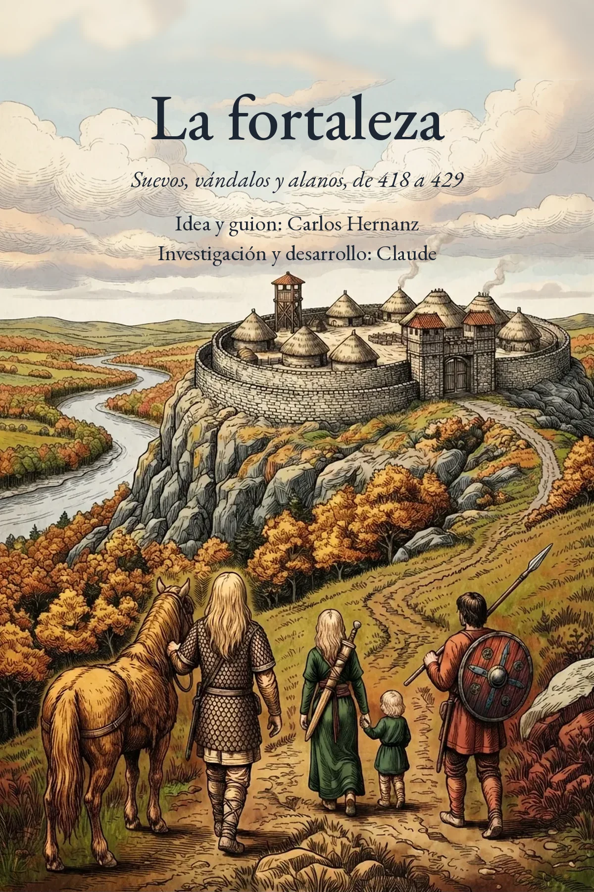
Prólogo
«Los suevos, cercados por los vándalos en los montes Nervasos…» — Idacio, Crónica, año 419
Orillas del Duero – otoño de 418
Lo que se contó en el primer libro
En la última noche del año 406, el Rin se heló y tres pueblos lo cruzaron a pie. Los suevos, con sus carros de bueyes y sus semillas en sacos de cuero. Los vándalos, que esa misma noche perdieron a su rey luchando contra los francos. Y los alanos, jinetes de la estepa que rezaban a una espada clavada en la tierra y que cargaron contra los francos para salvar a los vándalos.
En aquella carga, un alano de dieciocho años llamado Arsak sacó de debajo de tres francos a un vándalo cojo, Guntario. Guntario le dio en pago lo único que tenía que valiera tanto como su vida: una fíbula de bronce en forma de pájaro, con dos piedras rojas por ojos. Y le dijo: «Mi casa es tu casa, mientras yo viva y mientras viva mi sangre». Su hija Asta, de dos años, lo miraba todo desde los brazos de su madre.
En otro carro, junto a los bueyes, cruzaban el hielo dos hermanos suevos: Teudo, de diez años, y Ricila, de cinco.
Durante dos años y medio los tres pueblos arrasaron la Galia. En 409 bajaron los Pirineos y entraron en Hispania, y en 411, después de dos años de hambre y de peste, se repartieron sus provincias por sorteo. A los suevos les tocó Gallaecia, el norte de la niebla y de los castros. A los alanos, Lusitania. A los vándalos silingos, la Bética de los olivos, y allí se fue la familia de Guntario, porque su mujer, Gisa, era silinga de nacimiento.
Teudo creció en una casa de labor junto al Duero, en la frontera del sur, y se hizo guerrero en la Peña, un castro viejo sobre el río que guardaba Fravita con veinte hombres. Allí perdió a su amigo Odo, que dejó una viuda, Brunhild, y un niño. Ricila aprendió latín con un cura y leyó todos los libros de Materno, el romano de la villa vecina. Arsak se quedó con una villa medio quemada junto al Guadiana, con unos colonos viejos, Marcelo y Tecla, y su nieto Félix, al que enseñó a montar y a tirar con arco.
En 416 los godos de Valia, al servicio de Roma, entraron en Hispania para limpiarla de bárbaros. Arsak cayó herido en una refriega y, sin otro sitio adonde ir, buscó la puerta de Guntario. Le curaron. Vivió un año con ellos. Y se encariñó de la niña.
En 417 los godos arrasaron a los silingos. Guntario y Gisa murieron en el patio de su casa. Prisca, la romana que vivía con ellos, escondió a Asta en un hoyo del establo y se dejó llevar por los godos para que no la buscaran. Arsak sacó a la niña de allí.
Huyeron a Lusitania y vieron desde una loma cómo los godos destrozaban a los alanos y moría su rey, Addax. Félix se había ido a luchar con él, y nadie sabía si vivía. Arsak dejó su villa a Marcelo y Tecla y colgó en la puerta, para Félix, el arco de su primo Candac.
Luego se fueron al norte, por las sierras. Perdieron los caballos. Asta enfermó de fiebre. Arsak la llevó a cuestas cuatro días, con la herida abierta, hasta que vio el Duero y la torre de la Peña, y cayó.
Lo encontraron Teudo y Ricila, que estaban de patrulla al otro lado del río. Los subieron a la Peña. La madre de los dos hermanos cuidó a la niña cinco noches. Y una mañana de otoño, Asta abrió los ojos, vio a Arsak sentado a su lado y le dijo: «No te has vuelto».
Lo que se cuenta en este libro
Este libro empieza esa misma mañana y acaba once años después, en una playa del sur, frente a África.
Lo cuentan tres voces. Teudo, el suevo, que tiene veintidós años y una espada. Asta, la vándala, que tiene catorce y ya no tiene a nadie más que a un alano. Y Arsak, que tiene treinta, y que no sabe todavía que ha llegado a la única casa que va a conservar.
La Peña es una fortaleza pequeña, en el borde de un reino nuevo. Los que viven dentro creen que las fortalezas sirven para guardar lo que hay detrás de la muralla. Este libro cuenta que no siempre el peligro está fuera.
La casa redonda
La Peña, sobre el Duero – otoño de 418
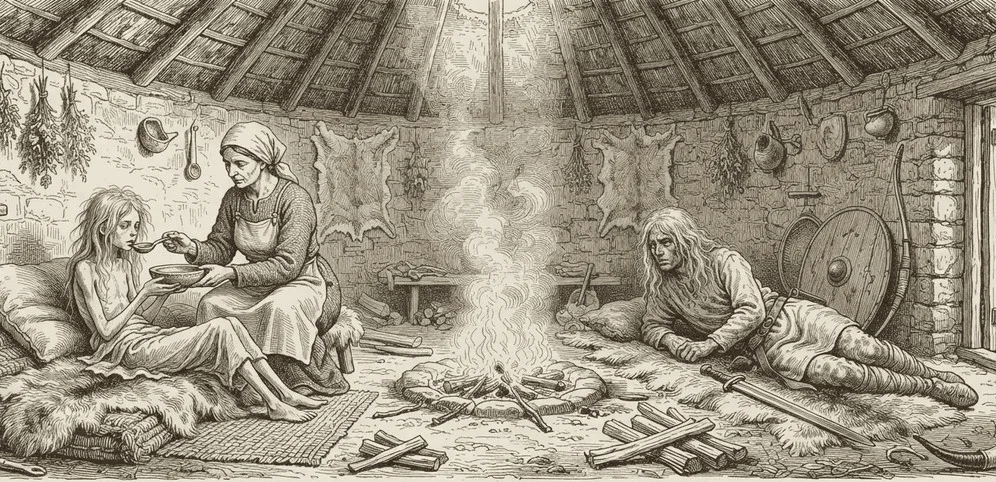
Teudo
Fravita esperó a que la niña abriera los ojos para decir lo que llevaba cinco días callándose.
Teudo lo supo en cuanto lo vio entrar en el patio aquella mañana. Fravita no entraba nunca deprisa en ningún sitio; andaba siempre igual, con los hombros un poco caídos y las manos a la espalda, como un labrador que mira cómo ha crecido el trigo. Aquella mañana andaba igual. Pero había mandado llamar a Teudo a su casa antes del desayuno, y Fravita no mandaba llamar a nadie antes del desayuno si no era para algo que no se podía decir delante de los demás.
La casa de Fravita era la más grande de la Peña, una casa redonda de piedra como las otras, pero con dos estancias, una para dormir y otra para todo lo demás, y una puerta de roble con herrajes que había traído de una villa romana del valle. Dentro olía a humo, a cuero y a manzanas, porque Fravita guardaba las manzanas del invierno en unos cestos colgados de las vigas. En la pared, junto a la puerta, había un estante de madera con las armas de los forasteros que entraban en la Peña. Teudo lo vio nada más entrar. Allí estaba la espada del alano. Una espada larga, más que las suevas, de hoja recta y empuñadura sencilla, envuelta en un trapo engrasado.
Fravita se sentó en el banco junto al fuego. No le ofreció sitio a Teudo.
—La vándala ha despertado —dijo.
—Esta mañana. Me lo ha dicho mi madre.
—Bien. —Fravita cogió un palo y removió las brasas—. Entonces ya puedo hablar sin que me llamen bestia.
Teudo se quedó de pie. Esperó.
—Llevas cinco días en esta fortaleza con un alano y una vándala dentro de mis murallas —dijo Fravita—. A tres días de aquí, al este, Gunderico tiene a todos los vándalos asdingos y a todos los alanos que quedan vivos en Hispania. Miles. Y Gunderico está mirando hacia aquí. Lo sabes tan bien como yo. El rey me ha mandado tres mensajeros este año para que lo sepa.
—Lo sé.
—Y tú me traes a uno de ellos. Un alano. Un guerrero, que se le ve en las manos y en cómo mira. Y a una vándala.
—Una niña.
—Una niña que habla la lengua de Gunderico. —Fravita levantó la vista del fuego—. ¿Sabes lo que haría el rey si se enterase? ¿Sabes lo que harían los hombres de Hermerico, los que no me quieren y que estarían encantados de tener una excusa para quitarme la Peña?
Teudo lo sabía. No dijo nada.
—Te dije que quería saber quiénes eran antes de cortarles la cabeza —siguió Fravita—. Ya lo sé. Un alano que se llama Arsak, hijo de un alano muerto. Una vándala que se llama Asta, hija de un vándalo cojo muerto. Que vienen de la Bética. Que han visto lo que hicieron los godos. —Se calló un momento—. Tu hermano me lo ha contado todo. Habla bien tu hermano. Demasiado bien, para ser suevo.
—¿Y qué quieres hacer?
Fravita se le quedó mirando mucho rato. Teudo le sostuvo la mirada. Llevaba seis años con aquel hombre, desde el día en que tiró el cuerno de la torre con la honda. Le había enseñado todo lo que sabía de la guerra. Le había pegado en las piernas con el canto de la espada cuando se equivocaba y no le había dicho nunca que lo hacía bien, y cuando murió Odo había cavado con él la tumba en el prado, sin decir nada. Teudo no le tenía miedo. Le tenía otra cosa, más parecida al respeto que se le tiene a un padre que no es el tuyo.
—Lo que quiero hacer es mandarlos al otro lado del río con un saco de comida y no volver a verlos —dijo Fravita—. Lo que voy a hacer es otra cosa.
Teudo esperó.
—Respondes tú —dijo Fravita—. Tú los subiste, tú respondes. Si el alano hace algo, cualquier cosa, si habla con quien no debe, si se acerca a la muralla del este de noche, si le veo mirar demasiado rato el camino de Gunderico, te corto la cabeza a ti primero. Y luego a él.
—Entendido.
—No. No lo has entendido. —Fravita se levantó. Era más bajo que Teudo, y más viejo, y tenía las piernas arqueadas de toda una vida a caballo, pero cuando se levantaba llenaba la casa—. Lo entenderás cuando venga Gunderico. Cuando estemos en la muralla tú y yo y él, el alano, y al otro lado estén los suyos. Entonces sabremos lo que vale tu palabra.
Le señaló la puerta. Teudo salió.
Fuera hacía frío. Había helado por la noche y el patio estaba blanco, con la escarcha crujiendo bajo los pies, y los hombres de la Peña andaban de un lado a otro con el aliento humeando, cada uno a lo suyo. Dos subían agua del pozo, que estaba en la parte baja del castro, junto a la muralla de dentro, con un cubo de cuero y una cuerda tan gastada que había que cambiarla cada invierno. Otro partía leña en la puerta de su casa. En la torre, el centinela de la mañana, un muchacho de diecisiete años que se llamaba Hunila, golpeaba los pies contra las tablas para calentárselos. Olía a humo de roble y a gachas. Alguien, en alguna casa, cantaba.
Teudo se quedó un momento parado en el patio. Luego miró hacia la casa redonda pequeña, la del fondo, junto a la muralla del oeste, la que había sido de un guerrero que murió el invierno anterior y que Fravita les había dejado para los forasteros. Salía humo por el tejado de paja.
Fue hacia allí. A mitad de camino se paró. No supo qué iba a decirles.
Se dio la vuelta y se fue a la torre a relevar a Hunila, aunque no le tocaba.
Aquel domingo bajó al valle por la tarde, y en la casa de labor estaban asando castañas.
Era la primera vez en el año. Las castañas de los montes de detrás de la casa habían caído aquella semana, después de las primeras heladas, y las mujeres y los niños se habían pasado tres días por los castañares con cestos, pisando los erizos con los zuecos para abrirlos y sacándolas con dos palitos para no pincharse los dedos. Las había a cientos. Las buenas se secaban en el sequero de encima de la cocina, en un zarzo de varas, con el humo del fuego subiendo por debajo, para el invierno. Las otras se comían.
El padre había hecho el fuego en el patio, en el sitio de siempre, junto al castaño grande, y había puesto encima el tambor: una olla vieja de barro, agujereada por todas partes con un clavo caliente, que daba vueltas sobre las brasas colgada de un palo. Ricila daba vueltas al palo. El niño de Brunhild, que tenía tres años y medio y se llamaba Wilja, como su abuelo, estaba sentado en el suelo a su lado, muy serio, mirando el tambor como se mira a un animal que puede morder. Las castañas saltaban dentro. Olía a humo dulce.
—Ya está aquí el soldado —dijo el padre sin volverse.
Teudo se sentó en el banco de piedra. La madre le puso en la mano un cuenco de sidra nueva, todavía turbia, que picaba en la lengua. Brunhild salió de la cocina con una cesta de pan.
Cuando las castañas estuvieron, el padre volcó el tambor sobre un saco extendido en el suelo y las tapó con otro saco, para que sudaran. Luego las repartió. A puñados. Calientes, negras por fuera, que quemaban los dedos y se pelaban solas, y por dentro eran amarillas y harinosas y sabían a otoño. El niño Wilja se quemó con la primera, lloró, y se comió la segunda con más cuidado. Wilja el grande, su abuelo, vino de su casa con dos de sus hijas y una jarra de vino de las viñas de Materno, y se sentó al otro lado del fuego y empezó a contar, como todos los años, la historia del oso que se comió las castañas de su padre en las colinas del Óder, antes del Rin, cuando él era niño; la historia que nadie se creía y que todos querían oír.
Teudo comió castañas y no dijo nada en mucho tiempo.
—Fravita te ha llamado esta mañana —dijo al fin el padre, sin mirarle, pelando una castaña con los dedos gordos.
—¿Cómo lo sabes?
—Lo sabe todo el valle. —El padre se metió la castaña en la boca—. ¿Qué quería?
Teudo se lo contó. Lo de que respondía él. Lo de la cabeza. El padre escuchó mascando, mirando el fuego.
—Fravita tiene razón —dijo cuando terminó.
Teudo le miró.
—Tiene razón —repitió el padre—. Un alano en la Peña, con Gunderico al este, es mucho riesgo. Yo en su sitio habría dicho lo mismo. —Echó la cáscara al fuego—. Y tú también tienes razón. Por eso lo subiste. Porque estaba muriéndose en un brezo con una niña en brazos, y tú no dejas a nadie muriéndose en un brezo. Ni a un alano.
—Eso no es una razón.
—Es la única que hay. —El padre se limpió los dedos en la túnica—. En el Rin, cuando cruzamos, había un hombre en el hielo, un vándalo, con una pierna rota. Gritaba. Pasamos todos a su lado. Yo también. Con tu madre, contigo, con tu hermano en brazos. No me paré. Tenía miedo de que se rompiera el hielo. —Se quedó un momento callado—. Todavía le oigo algunas noches.
Teudo no supo qué decir.
—Así que súbelos —dijo el padre—. Y responde. Y si Fravita te corta la cabeza, tu madre y yo iremos a buscarla y la enterraremos con el resto. —Le dio una palmada en la rodilla—. Come castañas. Que se enfrían.
Teudo comió. Ricila, al otro lado del fuego, le estaba mirando con una castaña sin pelar en la mano. No dijo nada. Pero esa noche, cuando Teudo volvió a subir a la Peña a oscuras, por el sendero de cabras, llevaba en el zurrón un puñado de castañas asadas, envueltas en un trapo, todavía calientes, que alguien le había metido allí sin que se diera cuenta.
Las dejó en la puerta de la casa redonda del fondo, en el escalón, sin llamar. Por la mañana ya no estaban.
Asta
Lo primero que Asta aprendió de la madre de Teudo fue que no hablaba nunca cuando no hacía falta.
Lo segundo, que tenía las manos más ásperas que su madre, y más que Prisca, y que cuando se las ponía en la frente, por la mañana, para ver si había vuelto la fiebre, eran las manos más suaves del mundo.
No sabía cómo se llamaba. Nadie se lo dijo, y Asta no se atrevió a preguntar. Los suevos la llamaban «la madre», todos, sus hijos y los hombres de la Peña y la viuda joven que subía a veces con un niño pequeño en brazos, y Asta empezó a llamarla así también, en su cabeza primero y luego en voz alta. La madre no dijo nada la primera vez que la oyó. Se quedó un momento quieta, con el cuenco de caldo en las manos, mirándola. Luego le dio el caldo.
Los primeros días Asta no pudo levantarse. Tenía las piernas como de trapo y la cabeza le daba vueltas cada vez que intentaba sentarse. La madre la sentaba ella, con un brazo detrás de la espalda, y le ponía detrás un montón de pieles para que no se cayera, y le daba de comer: caldo de gallina con pan mojado, primero; luego gachas de avena con leche; luego, al tercer día, un trozo de queso y una manzana asada con miel que Asta se comió tan deprisa que le dolió la tripa. La madre la miraba comer sin decir nada. Cuando terminaba, le limpiaba la boca con un trapo, como a una niña pequeña, y Asta se dejaba.
Hablaban poco. La lengua de los suevos se parecía a la suya, pero no tanto como para entenderse sin esfuerzo. Era como hablar con alguien a través de una pared. Las palabras de cada día eran casi iguales, agua, pan, fuego, madre, frío, y las demás se iban adivinando. La madre hablaba despacio cuando le hablaba a ella. Asta le contestaba despacio. Al cuarto día, la madre se rio de algo que ella dijo, una palabra vándala que en suevo debía de querer decir otra cosa, y Asta se puso roja y luego se rio también.
Arsak estaba siempre allí.
Al otro lado del fuego, en su jergón, con el costado vendado. Dormía mucho. Cuando no dormía, la miraba. No decía nada; la miraba como la había mirado en la granja, cuando era él el que estaba en la cama y ella la que le cuidaba, y Asta sabía lo que quería decir aquella mirada aunque no la habría podido poner en palabras. Quería decir: estás aquí. Sigues aquí.
Ella le miraba a él de la misma manera.
Y estaba Ricila.
Asta no sabía al principio cuál de los dos hermanos era Ricila. Había dos muchachos que entraban y salían de la casa redonda: uno mayor, alto, serio, con el pelo anudado sobre la sien y una espada al cinto, que no hablaba casi nunca y que se quedaba en la puerta como si no se atreviera a entrar; y otro más joven, con el pelo largo y suelto, sin nudo, que entraba sin pedir permiso, se sentaba en el suelo junto a su jergón y se ponía a leer. El mayor era Teudo. El del pelo suelto, Ricila.
Ricila leía en voz alta. Lo hacía desde el primer día, le dijo la madre, desde antes de que ella despertara, cuando estaba en la fiebre. Leía en latín, unas hojas cosidas con un cordel que llevaba siempre con él y unos libros que bajaba de la villa del romano. Asta entendía algo de latín, el de Prisca y el de Silvano, el de las cosas de casa: pan, aceite, olivo, mula. Lo que leía Ricila no lo entendía. Eran palabras largas, raras, que subían y bajaban como una canción.
—¿Qué es? —le preguntó el quinto día.
Ricila levantó la vista del libro. Tenía los ojos grises, muy quietos, como los de su madre.
—Una historia —dijo—. De un hombre que huye de una ciudad que arde. Lleva a su padre a la espalda y a su hijo de la mano.
Asta se quedó callada.
—¿Y adónde va?
—A buscar una tierra nueva. Tardó años en encontrarla. Se le murió el padre por el camino.
—¿Y la encontró?
—Sí. —Ricila cerró el libro—. Pero tuvo que luchar por ella cuando llegó.
Asta no dijo nada más. Pero aquella noche, cuando Ricila se fue, le pidió a la madre la bolsa de tela que le habían traído con la yegua, la de la silla de Niebla. La madre se la dio. Dentro estaban el higo seco de Silvano, más arrugado que nunca, y la tablilla de cera de Félix.
Asta pasó el dedo por las letras. Las mismas letras de siempre, torcidas, que no sabía leer.
Al día siguiente, cuando entró Ricila, se la enseñó.
—¿Qué pone?
Ricila la cogió. La miró un rato. Asta vio que ya sabía lo que ponía, que la había visto antes, y que no se lo había dicho.
—Pone: «Para la doma de los potros. Volveré».
Asta se quedó con la tablilla en las manos mucho rato.
—Era de un chico —dijo al fin—. Félix. Se fue a la guerra con el rey de los alanos. No sabemos si está vivo.
Ricila no dijo nada. Asta pensó que iba a preguntar algo, y no preguntó. Se quedó sentado a su lado, en el suelo, en silencio, hasta que ella guardó la tablilla en la bolsa.
Luego dijo una cosa que Asta no esperaba.
—Si quieres, te enseño a leerla.
Arsak
El físico de Materno subió a la Peña el sexto día, en una mula blanca, con un cesto de mimbre lleno de frascos y una cara de no querer estar allí.
Se llamaba Teodoro. Era griego, o decía serlo, y había sido esclavo del padre de Materno, y luego liberto, y luego, cuando ya era viejo, se había quedado en la villa curando a la familia y a los colonos a cambio de comida, una habitación con ventana y todos los libros que quisiera leer. Era un hombre pequeño, calvo, con una barba blanca muy recortada y unas manos largas y limpias, las más limpias que Arsak había visto nunca en un hombre. Se las lavó en un cuenco de agua caliente nada más entrar, despacio, con un trozo de jabón que olía a laurel, y luego se las secó en un paño blanco, y luego se acercó al jergón de Arsak y se quedó mirándolo un rato desde arriba, sin tocarlo.
—Ricila dice que eres alano —dijo en un latín muy limpio.
Arsak asintió.
—He curado godos. He curado suevos. He curado a un vándalo, una vez, un mercader. —Teodoro se arrodilló junto al jergón, con un crujido de rodillas—. Nunca un alano. Dicen que los alanos no se dejan curar. Que prefieren morir.
—Mi padre lo decía.
—¿Y tú?
Arsak lo pensó.
—Yo prefiero vivir —dijo.
Teodoro sonrió. Le quitó el vendaje.
Arsak no había visto la herida desde las sierras. La madre de los suevos le había cambiado los paños cada mañana, pero él no había querido mirar. Ahora la miró. Era fea. Un corte largo, debajo del brazo, sobre las costillas, que se había abierto y cerrado y vuelto a abrir tantas veces que los bordes estaban duros, morados, hinchados, y en el centro había una costra amarilla que supuraba. Olía. No tanto como en las sierras, pero olía.
Teodoro se inclinó y la olió. Luego la tocó, alrededor, con la yema de los dedos, apretando poco a poco, y Arsak apretó los dientes.
—La madre la ha lavado bien —dijo el físico—. Con vino caliente. Y le ha puesto miel. Eso le ha salvado. —Siguió apretando—. Pero dentro hay algo. Una bolsa de pus que no sale. Por eso no cierra.
—¿Y qué hay que hacer?
—Abrirla.
Arsak le miró.
—No te va a gustar —dijo Teodoro.
Le dio un trozo de cuero para morder. Mandó a la madre calentar agua y vino. Abrió su cesto y sacó cosas que Arsak no había visto nunca: unos cuchillos pequeños de hoja curva, finos como hojas de sauce; unas pinzas de bronce; una varilla larga, de punta redonda, que el físico llamó sonda; unas hilas de lino deshilachado; unos frascos de barro con tapones de cera. Lo puso todo en un paño limpio, en el suelo, en fila, como pone un herrero sus herramientas.
—Hipócrates —dijo mientras se lavaba otra vez las manos— decía que el pus es bueno si es blanco y espeso y no huele. Que quiere decir que el cuerpo está luchando. Y que es malo si es fino y verde y huele a muerto. —Se secó las manos—. El tuyo está en medio. Todavía puedes ganar.
Arsak no sabía quién era Hipócrates. No preguntó.
Mordió el cuero.
Teodoro trabajó despacio. Abrió la costra con el cuchillo pequeño, de un solo corte, y Arsak sintió una cosa caliente que salía, y un olor, y luego un dolor que le subió por el costado hasta la cabeza y le hizo ver lucecitas blancas. Luego la sonda. El físico la metió dentro de la herida, despacio, buscando, y Arsak sintió que le entraba en el cuerpo como un dedo de hierro, y no gritó porque tenía el cuero entre los dientes, y porque al otro lado del fuego, sentada en su jergón, estaba la niña mirándole.
Asta no apartó la vista ni un momento. Arsak la miró a ella todo el rato.
—Aquí —dijo Teodoro—. Aquí está.
Sacó con las pinzas algo pequeño y negro. Lo levantó a la luz del fuego. Era un trozo de hierro, del tamaño de una uña: una escama de la cota de su padre, rota, que la lanza goda le había metido dentro hacía dos años, en la sierra de la Bética, y que había estado allí desde entonces, pudriéndolo todo.
—Esto era —dijo el físico, y la dejó caer en el cuenco con un ruido pequeño.
Luego lavó la herida con vino caliente, mucho, hasta que salió limpio. La rellenó con las hilas de lino empapadas en miel. No la cosió.
—Tiene que cerrar desde dentro —dijo—. Si la coso, se encierra la podredumbre otra vez. Que cierre sola, despacio. Hilas con miel cada mañana. Vino para lavar. Y nada de levantarte hasta que yo lo diga.
—¿Cuánto?
—Un mes. Quizá más.
Arsak se dejó caer en el jergón. Estaba empapado de sudor. Le temblaban las manos. Teodoro le quitó el cuero de la boca; tenía las marcas de los dientes, hondas.
—Has aguantado bien —dijo el físico—. Para ser alguien que prefiere vivir.
Recogió sus cosas, se lavó las manos por tercera vez y se fue. Antes de salir se paró junto al jergón de Asta. Le miró los ojos, le tocó la frente, le hizo sacar la lengua. Le dijo a la madre algo en latín que Arsak no entendió. La madre asintió.
Cuando se fue, Arsak cogió del cuenco el trozo de hierro. La escama de la cota de su padre. La miró un buen rato a la luz del fuego.
Luego, sin saber por qué, se la tendió a Asta. Ella la cogió. La miró. La guardó en la bolsa de tela, junto al higo de Silvano y la tablilla de Félix.
—¿Para qué la quieres? —le preguntó Arsak.
Asta se encogió de hombros.
—Para acordarme —dijo.
Arsak se quedó mirándola. Era la misma respuesta que le había dado Ricila a su hermano, años atrás, cuando le preguntó para qué aprendía latín. Arsak no lo sabía. Pero se le quedó la palabra dentro, como se queda una piedra en el zapato, y esa noche, antes de dormirse, pensó que aquella casa redonda de piedra, con su fuego en medio y su madre que no hablaba y su muchacho que leía en voz alta, se parecía mucho a una de las tiendas de fieltro de la estepa que no había visto nunca.
Que se parecía mucho a una casa.
La espada en la pared
La Peña y el valle del Duero – invierno de 418 a 419
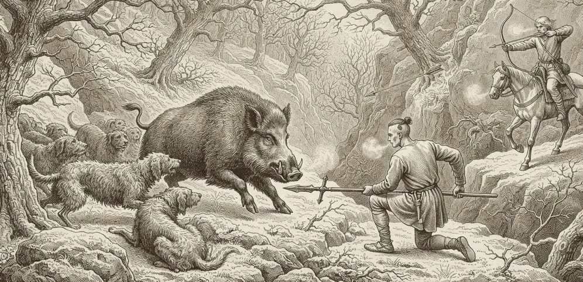
Teudo
Teudo llevó al alano a cazar jabalíes a principios del invierno, cuando el físico dijo que ya podía montar, y en el bosque de castaños descubrió que los dos habían cruzado el Rin la misma noche.
No lo había pensado. Sabía que Arsak era alano y que los alanos habían cruzado el río con los demás, aquel invierno; lo sabía como se saben las cosas que se oyen contar. Pero no lo había pensado. Fue en la segunda mañana de caza, sentados en un tronco caído junto a un arroyo, esperando a que los perros levantaran algo en el monte de enfrente. Hacía un frío que cortaba. Arsak tenía las manos metidas debajo de los sobacos y la cara roja, y Teudo le pasó la bota de vino caliente con especias que le había preparado la madre, y el alano bebió y le devolvió la bota y dijo, sin venir a cuento, mirando el arroyo:
—El Rin era así. Pero ancho.
Teudo le miró.
—¿Tú lo cruzaste? ¿El hielo?
—Al amanecer del primer día del año. A pie, con el caballo de la rienda. —Arsak se encogió de hombros—. Los caballos tenían miedo. Ponían las orejas para atrás y no querían pisar. Había que hablarles.
—Nosotros cruzamos la noche antes —dijo Teudo—. Con los bueyes.
Se quedaron callados. Al otro lado del arroyo, en el monte, un perro ladró una vez y luego se calló.
—Había un niño —dijo Arsak de pronto.
Teudo esperó.
—Cuando nosotros llegamos a la orilla, al amanecer, todavía estaban cruzando los últimos carros de los vuestros. Lo vi desde arriba, desde la orilla de los vándalos. —Arsak se rascó la barba corta—. Un niño. Corriendo hacia atrás por el hielo, contra todos, entre los carros. Su madre le gritaba. Se tiró al suelo debajo de una rueda y se levantó con algo en la mano. No sé qué.
Teudo no dijo nada durante mucho rato. Arsak le miró.
—Un caballo —dijo Teudo al fin—. Un caballito de madera. Lo había hecho mi abuelo.
Arsak se le quedó mirando. Luego se echó a reír, una risa corta, sorprendida, como un ladrido. Y Teudo se rio también. Se rieron los dos, en el tronco, con el frío, como dos tontos, hasta que los perros levantaron por fin un jabalí en el monte de enfrente y tuvieron que salir corriendo detrás.
El jabalí era un macho viejo, enorme, con los colmillos amarillos y una cicatriz en el lomo. Los perros lo acorralaron contra unas rocas, en un barranco, y el animal se volvió hacia ellos con el hocico bajo y el pelo erizado, resoplando, y abrió a uno de los perros de un tajo del colmillo antes de que nadie pudiera hacer nada. Teudo llegó con la lanza de jabalí, la de travesaño, la que tiene una barra de hierro detrás de la punta para que el animal no siga subiendo por el asta hasta tus manos. Se puso delante, con una rodilla en el suelo y la lanza apoyada en tierra, como le había enseñado Fravita. El jabalí cargó.
Fue muy rápido. El golpe le subió a Teudo por los brazos hasta los hombros, como si le hubiera embestido un carro. La lanza entró por el pecho del animal hasta el travesaño. El jabalí siguió empujando, gruñendo, con la sangre saliéndole por la boca, y Teudo sintió que se le resbalaba el pie en la piedra mojada, que se iba hacia atrás, que la lanza se le escapaba.
Una flecha le entró al jabalí detrás de la oreja. Luego otra. El animal se quedó quieto, de pronto, y se derrumbó de lado sobre la lanza.
Teudo se volvió. Arsak estaba a diez pasos, a caballo, con el arco todavía levantado. Un arco suevo, de olmo, de los de caza, que Teudo le había dejado esa mañana y del que Arsak había dicho que era un arco para niños.
—Para niños —dijo Teudo, sin aliento.
Arsak bajó el arco y se encogió de hombros.
Volvieron a la Peña al anochecer, con el jabalí atravesado en una mula y el perro herido en brazos de Teudo, envuelto en su manto. En la puerta estaba Fravita, como siempre, con las manos a la espalda. Miró el jabalí. Miró el perro. Miró las dos flechas detrás de la oreja.
No dijo nada. Pero esa noche, en el reparto de la carne, mandó que le dieran al alano la cabeza del jabalí, que era la parte que se le daba siempre al que lo había matado.
Más tarde, cuando ya se había apagado el ruido en la casa grande, Teudo fue a curar al perro.
Lo tenía en el establo, echado en la paja, con el costado abierto de arriba abajo por el colmillo del jabalí. Era una perra de caza, vieja, de las de Fravita, que se llamaba Loba y que había parido muchas camadas. Teudo calentó agua y vino en un cazo, como hacía la madre, y le lavó la herida mientras la perra le lamía la muñeca. Luego la cosió. Lo había visto hacer con los perros muchas veces, pero no lo había hecho nunca él. Tenía una aguja de hueso y crin de caballo, y le temblaban las manos.
Arsak apareció en la puerta del establo. Se quedó mirando un rato. Luego entró, se arrodilló al otro lado de la perra y le sujetó la cabeza con las dos manos, hablándole bajito en su lengua.
—Así no —le dijo a Teudo al cabo, en su suevo roto—. Puntos más separados. Si los aprietas mucho, la carne se pudre.
—¿Tú sabes?
—Mi padre cosía a las yeguas. Yo cosí a un perro. —Arsak se tocó el costado, por encima de las vendas—. A mí no me cosió nadie.
Teudo le dio la aguja. Arsak terminó. Lo hizo despacio, con unos dedos más finos de lo que parecían, dejando la herida abierta por abajo, un poco, para que saliera lo que tuviera que salir. Cuando acabó, la perra se quedó dormida.
Estuvieron un rato los dos sentados en la paja, sin hablar.
—Tu padre —dijo Teudo al fin—. ¿Murió?
—En la Galia. Una lanza en la espalda. Por un saco de grano. —Arsak se encogió de hombros—. Dijo que qué vergüenza, en la espalda.
—El mío está abajo, en el valle. —Teudo se quedó pensando—. No le gusta la guerra. Dice que es labrador.
Arsak le miró.
—Pues tienes suerte —dijo—. Un padre que no te enseña a morir te enseña a vivir.
Teudo no supo qué contestar. Se quedó callado mirando a la perra dormida, que respiraba despacio, con el costado cosido subiendo y bajando. Pensó que nunca nadie le había dicho que tuviera suerte por su padre. Pensó que era verdad.
Asta
En la casa de labor, aquel invierno, mataron el cerdo, y Asta aprendió que los suevos no tiraban nada.
Bajó al valle con la madre a principios de diciembre, cuando el físico dijo que ya podía andar, y se quedó allí, en la casa larga de piedra con el tejado de pizarra, con la madre, el padre, Ricila, la viuda Brunhild con su niño, Wilja el grande y sus seis hijas que quedaban, porque la mayor era Brunhild. Arsak se quedó arriba, en la Peña. Fravita no quería al alano en el valle, cerca del vado, donde podía irse cuando quisiera. Asta lo entendió. No le gustó, pero lo entendió.
La matanza fue un día de helada, antes del amanecer. El cerdo era enorme, negro, criado con las bellotas y las castañas del monte, y llevaba todo el otoño engordando en un cercado detrás del hórreo. Lo sacaron entre cuatro hombres, el padre, Wilja, Ricila y Teudo, que había bajado de la Peña para eso. El cerdo chillaba. Asta había oído chillar cerdos en la Bética, pero no así. Chillaba como si supiera.
Lo tumbaron sobre un banco de madera. El padre le metió el cuchillo en el cuello, de un solo golpe, hondo, como se hacía, y la madre se puso debajo con un barreño de barro para recoger la sangre, y empezó a removerla con la mano, enseguida, sin parar, para que no se cuajara. Asta se quedó mirando. La madre tenía el brazo rojo hasta el codo y la cara tranquila. Removía y removía, mientras el cerdo dejaba de chillar.
—Ven —le dijo a Asta—. Sigue tú.
Asta metió la mano en el barreño. La sangre estaba caliente, más caliente de lo que había pensado, espesa, y olía a hierro. Removió. La madre se fue a por más barreños.
Luego vino todo lo demás. Chamuscaron el cerdo con haces de paja ardiendo para quitarle el pelo, y lo rasparon con cuchillos y piedras, y lo lavaron con agua hirviendo hasta que la piel quedó blanca y lisa. Lo colgaron de una viga del hórreo por las patas de atrás y el padre lo abrió de arriba abajo, y las mujeres fueron sacando lo de dentro: el hígado, los riñones, el corazón, los pulmones, todo a sus cestos y a sus barreños, sin perder nada. Las tripas las llevaron al arroyo, aunque el agua estaba tan fría que dolía, y las lavaron una y otra vez, dándoles la vuelta con un palo, hasta que quedaron limpias y transparentes, para embutir.
Asta trabajó todo el día. Le dolían las manos del agua fría y la espalda de estar agachada. Picó carne con un cuchillo grande en una tabla, hasta que se le durmió el brazo. Ayudó a Brunhild a embutir la sangre cocida con cebolla y grasa en las tripas, a atarlas con hilo, a colgarlas. Ayudó a la madre a salar los jamones en un arcón de madera, enterrándolos en sal gruesa como se entierra a un muerto, y la madre le dijo que se quedarían así un mes, y luego se colgarían en la cocina, al humo, hasta la primavera. Derritió la grasa en un caldero, al fuego, y la coló, y la guardó en vejigas de cerdo que se ataban por arriba con un cordel.
Por la noche cenaron todos juntos en la cocina, alrededor del fuego, los de la casa y los de Wilja, y comieron el hígado frito con cebolla y la sangre cocida en rebanadas, y bebieron sidra, y Wilja cantó una canción de las colinas que nadie entendía ya del todo. El niño de Brunhild se durmió en el regazo de Asta. Tenía tres años y medio y el pelo de su madre, color paja, y se llamaba Wilja como el abuelo. Se le había subido a las rodillas sin preguntar, a mitad de la cena, y se había quedado dormido allí, con la cabeza en su pecho y un trozo de pan en la mano.
Asta no se movió para no despertarlo. Miró alrededor. La cocina llena de humo y de gente. Los jamones en la sal. Las morcillas colgando de las vigas. La madre junto al fuego, cosiendo. Ricila al otro lado, mirándola a ella.
Ricila apartó la vista enseguida.
Asta pensó en su madre. Pensó que en la Bética, en otoño, también se mataba el cerdo, y que su madre le había dejado remover la sangre una vez, cuando tenía diez años, y que ella había dicho que le daba asco, y que su madre se había reído y le había dicho que el asco se pasa y el hambre no.
Le habría gustado decirle que tenía razón.
Las noches de aquel invierno, las mujeres del valle hilaban juntas.
Era una costumbre de los suevos, o de las aldeas de los galaicos, o de las dos cosas mezcladas; nadie lo sabía ya. Cuando los días se hacían cortos y la nieve no dejaba trabajar fuera, las mujeres se juntaban por las noches en una cocina, siempre en una distinta, cada una con su rueca y su huso, y se sentaban alrededor del fuego a hilar la lana del verano. Así se gastaba una sola lumbre en lugar de diez. Así se hilaba más. Y así se hablaba.
Aquella semana tocaba en la casa de labor.
Vinieron las hijas de Wilja, las otras seis, las que estaban casadas y las que no. Vino la mujer del molinero, que era galaica y hablaba suevo como si masticara piedras. Vinieron dos viejas de la aldea de los galaicos del otro lado del arroyo, que no sabían suevo y no les hacía falta, porque hilaban más deprisa que nadie y se reían de todo. Vino Brunhild con el niño, que se durmió enseguida en un rincón, encima de un montón de vellones. Y la madre puso a Asta en el banco, a su lado, le dio una rueca de avellano y un huso de boj con una fusayola de barro, y le enseñó.
—La lana en la rueca. La rueca debajo del brazo. Con esta mano tiras de la hebra, poco a poco. Con esta haces girar el huso. Y no dejas que se pare.
Asta lo intentó. El huso se le cayó al suelo. Lo intentó otra vez. La hebra se le rompió. Las viejas galaicas se rieron, sin maldad, y una de ellas se levantó, se puso detrás de Asta y le cogió las manos con las suyas, unas manos secas y calientes como pan, y se las movió despacio, hasta que el huso empezó a girar solo y la hebra salió fina y seguida de entre sus dedos.
—Así —dijo la vieja en galaico. Asta no la entendió. La entendió.
Hilaron hasta medianoche. Mientras hilaban, hablaban. De todo. De quién se iba a casar en la primavera y con quién. De la vaca de Wilja, que se había puesto mala. Del molinero, que bebía. De los hombres de la Peña, uno por uno, con tanto detalle que Asta se puso colorada. De los muertos. De un niño de la aldea de arriba que había nacido con seis dedos y que, según una de las viejas, traía suerte. Y luego, cuando el fuego se fue quedando bajo y los niños se habían dormido todos, de las historias.
Las historias de las noches de hilar no eran las de los hombres. No había batallas. Había mujeres que se casaban con osos. Lavanderas que se aparecían en los ríos a medianoche, lavando la ropa de los que iban a morir. Una moza que hiló tanto, tanto, que su hilo llegó hasta la luna, y subió por él, y no volvió. Una vieja galaica contó la de la serpiente que vivía en el castro de enfrente, en un pozo, guardando un tesoro, y que salía en la noche de San Juan con forma de mujer a peinarse con un peine de oro.
Luego miraron a Asta.
—Ahora tú —dijo la mayor de las hijas de Wilja—. La vándala. Cuéntanos una de las tuyas.
Asta se quedó con el huso parado en la mano. No sabía ninguna. O sabía muchas y no sabía cuál. Pensó en su madre, en las noches de la Galia, en el carro. Y le salió una que no sabía que recordaba: la de Orfeo, la que le contaba Prisca, la del hombre que bajó al mundo de los muertos a buscar a su mujer y la sacó tocando una lira, y no tenía que volverse a mirarla hasta salir, y se volvió.
La contó en suevo, despacio, buscando las palabras, con la mitad en vándalo y algunas en latín. Las mujeres la escucharon sin hilar. Cuando terminó, nadie dijo nada durante un rato.
—¿Por qué se volvió? —preguntó al fin una de las hijas de Wilja, la más pequeña.
Asta lo pensó.
—Porque la quería —dijo. Como lo decía Prisca.
La madre no dijo nada. Pero cuando las mujeres se fueron, ya muy tarde, con las ruecas debajo del brazo y las antorchas encendidas, y Asta se quedó recogiendo los vellones del suelo, la madre le cogió el huso de la mano, miró la hebra que había hilado aquella noche, la tocó entre los dedos, y se la devolvió.
—Mañana más fina —dijo.
Era lo más parecido a un elogio que Asta le oyó decir en todo aquel invierno.
Arsak
En enero llovió tanto que el Duero se salió.
Arsak no había visto nunca un río así. El Anas, junto a su villa, crecía en invierno, pero crecía despacio, ensanchándose por los prados como un charco grande. El Duero no. El Duero corría encajado entre montes, por un valle estrecho, y cuando llovía en las sierras de donde bajaba, el agua no tenía adónde ir más que hacia abajo, deprisa. En dos días subió tanto que tapó los dos vados. Se volvió de color de barro, espeso, rápido, y bajaba arrastrando árboles enteros, con raíces, y troncos, y una vez el tejado de paja de una choza, entero, dando vueltas como una peonza.
Desde la torre de la Peña se oía. Un ruido sordo, constante, como de mil carros pasando por un puente de madera.
El tercer día de la crecida, a media mañana, Hunila bajó al vado de abajo con una mula.
Era un muchacho de diecisiete años, el centinela de la torre, y tenía a su madre en una aldea de la otra orilla. Le habían dicho que estaba enferma. Fravita le había dicho que no cruzara, que esperara a que bajara el agua. Hunila había dicho que sí, que esperaría. Y a media mañana, cuando nadie miraba, había cogido la mula más fuerte de la Peña y había bajado al vado.
Arsak lo vio desde la muralla del oeste. Lo vio meterse en el agua con la mula, despacio, tanteando, por donde estaba el vado cuando no había crecida. Lo vio llegar al centro. Y lo vio desaparecer.
La mula perdió pie. Se fue de lado, río abajo, dando vueltas, con las patas para arriba, y Hunila se soltó de ella y se quedó en el agua, solo, braceando, llevado por la corriente como una rama.
Arsak no pensó. Bajó de la muralla corriendo, con el costado ardiéndole debajo de las vendas, y cruzó el patio hasta el establo, y cogió lo primero que encontró, que fue una cuerda de cáñamo larga, enrollada en un clavo, la del pozo, y el primer caballo que encontró ensillado, que era el de Fravita. No le pidió permiso a nadie. Salió por la puerta de la Peña a galope, cuesta abajo, por el sendero de cabras que bajaba al río, con el caballo resbalando en las piedras mojadas.
Mientras bajaba, iba haciendo el lazo.
Su padre le había enseñado. Los alanos, en la estepa, cazaban así a los caballos salvajes y, en la guerra, a los enemigos: con un lazo de cuerda, a galope, desde la silla. Lo tiraban por encima de la cabeza del otro, lo cerraban de un tirón y lo arrastraban por el suelo. Arsak lo había hecho mil veces con potros en los prados del Anas. Nunca con un hombre en el agua.
Llegó a la orilla más abajo del vado, donde el río hacía una curva y la corriente arrimaba todo lo que llevaba contra la orilla de este lado, contra unas rocas. Esperó. El agua pasaba delante de él, marrón, rugiendo. Pasó un tronco. Pasó otro. Pasó la mula, ahogada, con la barriga hinchada.
Pasó Hunila.
Estaba vivo. Tenía la cabeza fuera del agua y los brazos levantados, buscando algo a lo que agarrarse, y pasó a diez pasos de la orilla, demasiado deprisa.
Arsak tiró el lazo.
Lo vio volar. Lo vio abrirse en el aire, como se abre siempre, en un círculo, por encima del agua. Lo vio caer sobre los brazos levantados del muchacho. Y tiró, y cerró, y la cuerda se tensó de golpe, tanto que casi le arrancó de la silla, y el caballo de Fravita clavó las patas en el barro de la orilla y se echó hacia atrás, como hacen los caballos buenos cuando sienten tirar la cuerda, como si supiera.
Lo sacaron entre los dos, el caballo y él. A Hunila, medio ahogado, con el lazo apretado debajo de los sobacos y la boca llena de barro, que vomitó en la orilla un río entero y luego se echó a llorar como un niño.
Cuando Arsak levantó la cabeza, había gente en la orilla. Media Peña. Hombres que habían bajado corriendo detrás de él. Y, un poco aparte, con las manos a la espalda, Fravita.
Fravita miró a Hunila. Miró la cuerda. Miró su caballo, que estaba temblando, con el pecho lleno de barro hasta los ojos. Miró a Arsak.
Arsak se había doblado sobre la silla. Se llevó la mano al costado. La sacó roja; se le había abierto la herida. No mucho.
—Te has llevado mi caballo —dijo Fravita.
—Sí.
—Sin pedirlo.
—Sí.
Fravita se quedó callado mucho rato. Luego se acercó a Hunila, que seguía en el suelo, llorando, y le dio una patada en el culo, no muy fuerte, y le dijo que se levantara y que esa noche tenía guardia doble, y la siguiente, y la siguiente, hasta la primavera. Y luego subió por el sendero hacia la Peña, sin mirar atrás.
Esa noche, cuando Arsak volvió a la casa redonda del fondo, con el costado recién vendado por la madre, que había subido del valle al enterarse, encontró algo encima de su jergón.
Su espada. Envuelta en el trapo engrasado. Y al lado, enrollada, la cuerda del pozo.
No había nadie en la casa. Pero en la puerta, en la escarcha del umbral, había huellas de unas botas que andaban con las piernas un poco arqueadas.
Las letras
La Peña y el valle del Duero – primavera de 419
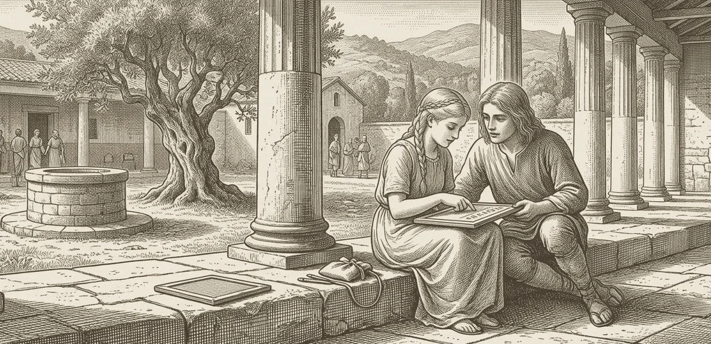
Teudo
El mensajero del rey llegó con los primeros cuervos de la primavera, y esta vez Fravita no cerró la puerta para leer el mensaje.
Lo leyó en el patio, delante de todos, de pie, con el rollo de cuero en las manos y los labios moviéndose despacio, porque Fravita sabía leer pero no deprisa. Los hombres de la Peña estaban alrededor, en silencio. Era una mañana de sol, la primera en muchas semanas, y el patio olía a barro secándose y a la leña húmeda que humeaba en las casas. En la torre, Hunila, que seguía de guardia doble desde la crecida, se había asomado por encima de las tablas para oír.
Fravita terminó de leer. Enrolló el cuero.
—Gunderico ha salido de sus valles —dijo—. Con todos los suyos. Asdingos y alanos. Viene hacia el oeste, hacia las tierras del rey. El rey llama a todos los hombres que puedan llevar una lanza. Nos juntamos en los montes, al norte de aquí, a cinco días. Donde el rey diga.
Nadie dijo nada. Luego Hunila, desde la torre, preguntó cuántos eran los de Gunderico.
—Muchos —dijo Fravita.
Era la respuesta que daba siempre cuando no lo sabía.
Aquella tarde Fravita llamó a Teudo a su casa. Esta vez le ofreció sitio en el banco, junto al fuego. Teudo se sentó. Fravita le dio un cuenco de sidra y se sirvió otro, y se quedaron un rato callados, bebiendo, mirando las brasas.
—Me llevo a quince —dijo Fravita al fin—. Aquí se quedan cinco, con Hunila, para guardar los vados. Tú vienes conmigo.
—Sí.
—El alano también.
Teudo levantó la cabeza. No se lo esperaba.
—Pensé que...
—Pensaste bien. Hace tres meses lo habría dejado aquí, atado a un poste. —Fravita bebió—. Ahora no. Ahora quiero tenerlo cerca. Donde lo vea.
—¿Por si se pasa a los suyos?
—Por si no se pasa. —Fravita dejó el cuenco—. Un hombre que sabe tirar un lazo así, que sabe matar un jabalí con dos flechas desde un caballo, que sabe lo que hacen los alanos cuando cargan porque ha cargado con ellos... ese hombre vale lo que diez de los míos. Si está con nosotros, quiero que esté conmigo. Si no está, quiero ser yo el que lo vea primero.
Teudo se quedó pensando.
—¿Y si no quiere ir? Son su gente. Los de Gunderico. Los alanos que quedan.
Fravita le miró.
—Pregúntaselo tú —dijo—. Respondes tú. Ya te lo dije.
Teudo se lo preguntó esa misma noche, en la casa redonda del fondo, junto al fuego. Arsak estaba sentado en su jergón, engrasando la cota de escamas de su padre, la que le había remendado un herrero del valle con una pieza de cuero nueva por debajo del brazo, donde había entrado la lanza goda. Escuchó a Teudo sin levantar la vista. Siguió engrasando escamas, una por una, con un trapo y un poco de sebo.
Cuando Teudo terminó, Arsak dejó el trapo.
—Los alanos de Gunderico —dijo—. ¿Sabes quiénes son?
—Los que quedaron. Después de lo de Addax.
—Los que huyeron. —Arsak cogió una escama entre los dedos, la miró a la luz del fuego—. Yo los vi huir. Desde la loma. Los vi pasar por debajo, a galope, con la cara llena de sangre, gritando que ya no había alanos. No se pararon a mirar quién se quedaba atrás.
Teudo no dijo nada.
—Mi padre decía que un alano es uno que se queda con los suyos aunque los suyos se vayan. —Arsak volvió a coger el trapo—. Yo me quedé. Con una niña vándala. Y ahora estoy aquí. —Siguió engrasando—. Esos de allí no son mi gente. Mi gente está en el valle, aprendiendo a leer.
—¿Entonces vienes?
Arsak tardó en contestar.
—Voy —dijo—. Pero no por Fravita. Ni por tu rey.
—¿Por qué, entonces?
Arsak le miró por primera vez desde que había empezado a hablar.
—Porque tú respondes por mí —dijo—. Y yo no dejo que nadie pague por mí.
Los diez días que faltaban para la marcha, la Peña olió a hierro.
El herrero era un galaico viejo de la aldea de abajo, Cloutio, que trabajaba para Fravita a cambio de que no le cobrara la protección, y que en aquellos días subió con su fragua al castro y no bajó. Montó el fuelle de piel de cabra en un cobertizo junto a la muralla de dentro, encendió el carbón de brezo, y se puso a trabajar de sol a sol, con un muchacho que le daba al fuelle y otro que le acercaba los hierros. Hacía puntas de lanza nuevas, largas, de hoja ancha, con el cubo para meter el astil. Arreglaba las viejas. Enderezaba espadas. Ponía clavos nuevos en los escudos. El martillo sonaba desde antes del amanecer, clan, clan, clan, y se oía desde el valle, y las mujeres de las aldeas, al oírlo, sabían lo que quería decir sin que nadie se lo contara.
Teudo le llevó su espada, la que le había dado Fravita a los diecinueve años. Cloutio la miró a la luz de la fragua, le pasó el pulgar por el filo, la dobló un poco sobre la rodilla para ver si volvía. Volvía.
—Buena —dijo en su suevo de piedras—. Hierro de los romanos. No como el mío.
La afiló en la piedra grande, la de mojar, durante una tarde entera, mientras Teudo miraba. Luego se la devolvió.
—Corta un pelo —dijo—. No cortes piedras con ella.
Los escudos los hacían los hombres mismos, cada uno el suyo, en el patio. Tablas de tilo o de aliso, finas, que pesaran poco, encoladas unas junto a otras en redondo, de un brazo de ancho. Se forraban de cuero de vaca, mojado, que al secarse se encogía y lo apretaba todo como un puño. Se les ponía un borde de cuero cosido con tiras, y en el centro un agujero para la mano, tapado por fuera con el umbo de hierro que hacía Cloutio. Y luego se pintaban. Cada hombre a su manera. Los de Fravita, casi todos, de rojo, con tierra roja del monte mezclada con sebo. Algunos ponían encima un dibujo: un jabalí, una rueda, unas rayas.
Teudo pintó el suyo de rojo, como los demás. No le puso dibujo.
Hunila le miró pintar, sentado en un barril, con la cara larga.
—Yo me quedo —dijo por tercera vez aquella tarde—. Guardando los vados. Con los viejos y los mancos.
—Alguien tiene que quedarse.
—Que se quede otro. —Hunila dio una patada al barril—. Tengo dieciocho años. Sé tirar con honda mejor que tú. Sé montar mejor que tú, desde que el alano nos enseña. Y me quedo a guardar vacas.
Teudo dejó el pincel de crin en el cuenco de la pintura.
—Hunila —dijo—. Si Gunderico manda una partida por el Duero mientras estamos fuera, ¿quién la va a ver primero?
Hunila no contestó.
—Tú. Desde la torre. ¿Y quién va a tocar el cuerno para que las mujeres metan a los niños en las bodegas? ¿Y quién va a cerrar la puerta de roble?
—Yo —dijo Hunila, de mala gana.
—Pues eso. —Teudo volvió a coger el pincel—. Fravita no deja la Peña a cualquiera. Te la deja a ti.
Hunila se quedó mirándole mucho rato. Luego se bajó del barril, cogió otro pincel y se puso a pintarle a Teudo el borde del escudo, el que él no llegaba bien, sin decir nada. Pintaba mejor que él.
Una de aquellas noches, Fravita mandó matar un carnero y lo asaron en el patio para todos, los que se iban y los que se quedaban. Bebieron sidra. Cantaron, poco. Arsak no cantó; se quedó sentado en el escalón de la casa redonda del fondo, mirando el fuego de lejos, engrasando otra vez la cota de su padre, aunque ya brillaba. Teudo se sentó a su lado un rato. No hablaron.
Cuando se fue a dormir, el martillo de Cloutio seguía sonando en el cobertizo. Clan. Clan. Clan. Teudo se durmió oyéndolo, y soñó con el Rin, con el hielo, con el ruido que hacía cuando se rompía.
La víspera de la marcha, Teudo bajó al valle a despedirse.
La madre ya lo sabía. Lo sabía todo el valle; los mensajeros del rey no pasan por un vado sin que se entere hasta el último pastor. Cuando Teudo entró en la cocina, la madre tenía encima de la mesa todo lo que iba a llevarse, preparado desde hacía días: dos panes grandes de centeno, de los que duran, envueltos en un paño; un queso curado; un trozo de tocino salado de la matanza; una bolsa de nueces; otra de castañas secas; un tarro pequeño de miel, bien tapado con cera. Y ropa. Dos túnicas de lana gruesa, nuevas, que había tejido ella en el invierno sin decir para qué. Unas medias de lana. Unas botas que había cambiado en el mercado por tres gallinas.
—Es mucho —dijo Teudo.
—Es lo que hay que llevar —dijo la madre.
No dijo más. Se puso a envolverlo todo en un hatillo, con las manos rápidas, sin mirarle.
El padre estaba en el patio, arreglando la reja del arado, aunque no hacía falta arreglarla. Teudo salió y se quedó a su lado. El padre siguió golpeando el hierro con el martillo, despacio, en el yunque pequeño que tenía junto al hórreo.
—Fravita dice que son muchos —dijo Teudo.
—Siempre son muchos. —El padre dejó el martillo—. En el Rin eran muchos. En la Galia. En los Pirineos. —Se quedó mirando la reja—. Y aquí estamos.
—No todos.
—No. No todos. —El padre le miró—. Tú vuelve.
Teudo asintió. El padre volvió al martillo.
Brunhild le esperaba en el camino, a la salida, con el niño de la mano. No dijo nada al principio. Luego le dio una cosa pequeña envuelta en un trapo. Era la cinta de lana roja con la que el viejo de la aldea les había atado las muñecas a ella y a Odo el día de la boda.
—La llevaba él —dijo—. Siempre. Debajo de la túnica. Se la quitó para subir al castro, aquel día, porque decía que no quería que se manchara.
Teudo la cogió.
—Tú no te la quites —dijo Brunhild.
Asta
Ricila le enseñó las letras con una tablilla de cera, en el pórtico de la villa de Materno, los domingos después de la misa, como se las había enseñado a él el cura Paulo.
Asta no iba a misa. No era cristiana, o no del todo; su madre le había hablado de Wodan y de Frea y de los dioses de los bosques del Óder, y Prisca le había hablado de un dios que murió colgado y luego volvió, y Silvano se santiguaba cada vez que veía un gato negro, y entre todos le habían dejado en la cabeza un lío de dioses que no sabía desenredar. Pero los domingos bajaba con Ricila a la villa, y se sentaba en el pórtico mientras dentro, en la capilla de la cruz pintada, el cura viejo decía las palabras en latín y Materno y su familia y los colonos contestaban. Desde fuera se oía como un murmullo, como el ruido del río. A Asta le gustaba.
Luego salía Ricila, se sentaba a su lado en el escalón y sacaba la tablilla.
Empezaron por su nombre. Ricila lo escribió con el punzón en la cera, despacio, en letras grandes, y se lo enseñó.
ASTA.
Asta lo miró un buen rato. Cuatro letras. Dos iguales, en los extremos, como dos puertas, y en medio otras dos, una que parecía una serpiente y otra que parecía un árbol.
—¿Eso soy yo?
—Eso eres tú.
—Es poco.
Ricila se rio. Luego le cogió la mano, la que tenía el punzón, y la llevó por encima de las letras, despacio, para que las hiciera ella. Tenía la mano caliente. Asta notó que se le ponían rojas las orejas y no supo por qué.
Aprendió deprisa. Más deprisa de lo que había aprendido a hilar, y mucho más de lo que había aprendido a coser. Ricila decía que tenía la cabeza de su padre, de Guntario, que sabía contar sacos de aceite y regatear con los romanos, y Asta le preguntó cómo sabía él eso, si no había conocido a su padre, y Ricila se quedó callado y luego dijo que se lo había contado Arsak.
En marzo ya juntaba letras. En abril leía palabras sueltas: pan, agua, Dios, Roma. En mayo, una mañana de domingo, con el sol entrando oblicuo por entre las columnas del pórtico, sacó la tablilla de Félix de la bolsa de tela y la puso en el escalón, al lado de la de Ricila.
No le dijo nada a él. Se inclinó sobre la cera vieja, la de las letras torcidas, y fue poniendo el dedo debajo de cada una.
—Pro... —Se paró. Volvió a empezar—. Pro do... domi...
Ricila no la ayudó. Estaba sentado a su lado, quieto, mirándola.
Asta tardó mucho. Se equivocó tres veces. La palabra de los potros no le salía. Pero al final la leyó entera, en voz alta, en latín, despacio, y luego la dijo otra vez en vándalo, para entenderla ella:
—«Para la doma de los potros. Volveré».
Se quedó callada. Pasó el dedo por las letras otra vez, de un extremo a otro.
—Nunca lo había leído yo —dijo.
—Ya lo sé.
—Lo llevo desde la Bética. Desde la villa de Tecla. Me lo dio en el patio, la noche que nos fuimos. —Asta se mordió el labio—. Y nunca había sabido lo que decía de verdad. Solo lo que me habían dicho que decía.
Ricila no dijo nada. Asta se volvió a mirarle. Tenía diecisiete años, el pelo largo y suelto, los ojos grises de su madre, y la estaba mirando de una manera que Asta no había visto nunca en nadie.
Ricila apartó la vista enseguida, hacia el patio de la villa, hacia los colonos que salían de misa.
—Ya sabes leer —dijo.
Asta guardó la tablilla de Félix en la bolsa de tela, con mucho cuidado. Luego cogió la de Ricila, la de su nombre, la de las cuatro letras, y se la guardó también. Ricila no le dijo que se la devolviera.
Arsak
Niebla parió en abril, una noche de lluvia, en el establo de la Peña, y Arsak estuvo con ella toda la noche.
Nadie sabía que estaba preñada. Arsak lo sospechó en el invierno, por cómo comía y por cómo se le ensanchaba la tripa, y luego, al tocarle el costado una mañana, notó que algo se movía dentro. Debía de haber sido en la Bética, antes de la matanza, con alguno de los caballos de las aldeas silingas. O en Lusitania, en la villa, con el caballo de Arsak, el que se mató en la sierra. Arsak quería que fuera eso. No lo sabría nunca.
La yegua se tumbó al anochecer y se levantó, y se volvió a tumbar, y se miraba la tripa, y sudaba. Arsak se sentó en la paja a su lado. Le habló. Le habló de la estepa y del Tanais y de la Bética y de los olivos, en alano, bajito, como le había hablado a la niña en las sierras, y la yegua le escuchaba con una oreja vuelta hacia él. A medianoche rompió aguas. Al amanecer, cuando entraba la primera luz por las rendijas, salió el potro.
Era una potra. Torda como la madre, con las patas larguísimas y una estrella blanca en la frente. Se quedó tirada en la paja, mojada, temblando, mientras Niebla la lamía, y luego, al cabo de un rato, intentó levantarse. Se cayó. Lo intentó otra vez. Se cayó. A la quinta se quedó de pie, con las patas abiertas como un banco mal hecho, temblando entera, mirando el mundo con unos ojos enormes.
Arsak se quedó mirándola. Sin darse cuenta, estaba sonriendo.
Cuando se lo contó a Asta, la semana siguiente, en el valle, ella le preguntó cómo la iba a llamar.
—Los alanos no les ponen nombre a los caballos —dijo Arsak.
—Mi padre sí. A Niebla.
—Tu padre era vándalo.
Asta lo pensó.
—Entonces le pongo nombre yo —dijo—. Y tú no la llamas de ninguna manera. Así cumplimos los dos.
La llamó Estrella. Arsak no protestó.
Aquella primavera, mientras Fravita preparaba la marcha, Arsak enseñó a montar a los muchachos de la Peña.
Los suevos luchaban a pie. Siempre lo habían hecho: en fila, hombro con hombro, escudo con escudo, con la lanza por delante, como una muralla que anda. Era su manera. Tenían caballos, pero los usaban para ir de un sitio a otro, no para luchar. Fravita era el único que montaba como un jinete de verdad. Los demás montaban como se monta en una mula.
Arsak los sacó al prado de debajo de la Peña cada mañana durante un mes. A Hunila, a otros cuatro de su edad, a Teudo. Les enseñó a montar sin manos, con las piernas, apretando las rodillas, para tener las manos libres para el arco o la lanza. Les enseñó a dar la vuelta al galope, cerrado, sin que el caballo se fuera al suelo. Les enseñó a caerse sin romperse nada, que era lo más importante, y se cayeron todos muchas veces, y Teudo se rompió un dedo, y Hunila se dio un golpe en la cabeza y se pasó una tarde sin saber cómo se llamaba.
Fravita bajaba a mirar. Se quedaba en el borde del prado, con las manos a la espalda, sin decir nada. Un día, al final del mes, cuando los muchachos ya daban la vuelta al galope sin caerse, se acercó a Arsak.
—No van a luchar así —dijo—. Los suevos luchan a pie. Siempre.
—Ya lo sé.
—¿Entonces para qué?
Arsak se quedó mirando a los muchachos, que galopaban en círculo por el prado, gritando, con el pelo al viento.
—Para que sepan cómo luchan los otros —dijo—. Los que van a tener enfrente. Para que cuando vean venir a los alanos, sepan lo que van a hacer antes de que lo hagan.
Fravita se quedó callado mucho rato.
—¿Y tú? —preguntó al fin—. Cuando los veas venir. ¿Sabrás lo que vas a hacer tú?
Arsak no contestó. Fravita no esperó la respuesta. Se dio la vuelta y subió a la Peña.
Esa noche, al clavar la espada en la tierra del patio, Arsak se preguntó lo mismo. Y no encontró la respuesta tampoco.
Asta subió a la Peña la mañana de la marcha. Subió sola, a pie, por el sendero de cabras, antes del amanecer, y llegó al patio cuando los hombres estaban ensillando los caballos y cargando las mulas, con antorchas, en el frío. Nadie le dijo nada. Ya la conocían. Fue derecha a la casa redonda del fondo.
Arsak estaba poniéndose la cota. Ella le ayudó a atar las correas del costado, las de debajo del brazo, donde estaba el remiendo nuevo, como le había visto hacer a su madre con su padre algunas mañanas en la Bética, antes de ir al mercado de Hispalis, aunque allí no había cota sino una túnica buena.
—Son alanos —dijo Asta mientras apretaba la correa—. Los de Gunderico.
—Sí.
—Son tu gente.
Arsak no contestó enseguida. Asta terminó la correa y se quedó con las manos quietas encima de las escamas de hierro, frías.
—Mi gente eres tú —dijo él.
Asta no le miró. Se metió la mano en la bolsa de tela que llevaba al cinto y sacó algo. Era la escama. La de hierro, la que el físico le había sacado del costado en invierno. La había agujereado con un clavo y le había pasado un cordón de cuero.
Se la colgó a Arsak del cuello, por debajo de la cota, junto a la bolsita con la tierra del Tanais.
—Para que vuelva al sitio de donde salió —dijo—. Con las demás.
Arsak se quedó quieto. Luego le puso la mano en la cabeza, un momento, toda la mano, como se la había puesto su padre a él la noche del Rin.
Asta se fue antes de que salieran. No quiso verlos bajar.
Los montes Nervasos
Los montes Nervasos y el valle del Duero – verano de 419
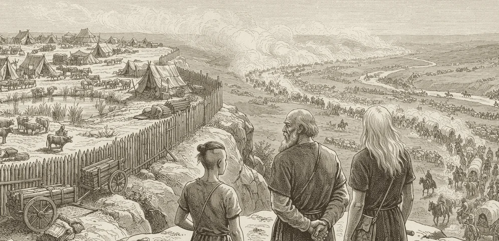
Teudo
El rey había elegido un monte que parecía una fortaleza, y a los diez días Teudo entendió que lo que había elegido era una jaula.
Llegaron a principios del verano, después de cinco días de marcha hacia el noreste por caminos de montaña cada vez más altos, más pelados, más fríos por la noche. Los montes Nervasos eran eso: montes. Una sierra larga de piedra gris y brezo, con valles hondos entre medias, y en medio de la sierra una montaña más alta que las otras, con la cima ancha y plana como una mesa, cortada a pico por tres lados. Por el cuarto lado se subía por una ladera de brezo y de rocas sueltas. Arriba había agua: un manantial que no se secaba nunca, decían los pastores, y una laguna pequeña, negra, entre juncos.
Allí estaban los suevos. Todos.
Teudo no había visto nunca a su pueblo junto. Desde el Rin, desde la Galia, no se había vuelto a juntar; en Gallaecia vivía repartido por los valles, cada aldea en el suyo, cada jefe con sus hombres. Ahora estaba allí, en la cima de aquella montaña, entero. Los guerreros, miles, con sus escudos pintados de todos los colores y el pelo anudado sobre la sien. Y detrás de los guerreros, en las laderas de dentro, las familias de los que vivían más cerca, con sus carros y su ganado, que habían subido a refugiarse porque Gunderico venía quemando las aldeas por el camino.
El campamento olía a humo, a estiércol, a sudor y a carne asada. Se oían mil ruidos a la vez: martillos de herreros arreglando lanzas, mujeres llamando a los niños, vacas mugiendo, perros, un cuerno que sonaba de vez en cuando para nada, porque alguien lo había cogido y lo soplaba por gusto. Los hombres de cada jefe tenían su sitio, marcado con estacas. Los de Fravita, que eran pocos, estaban en el borde del este, junto a la ladera, donde se subía.
—El peor sitio —dijo Fravita cuando lo vio—. Por donde va a venir.
—¿Por qué nos lo dan a nosotros?
Fravita señaló con la barbilla hacia el centro de la cima, donde se levantaba una tienda grande de cuero rojo con un estandarte encima. La tienda del rey. Y a su lado, otra casi igual de grande, de cuero negro.
—Porque esa —dijo— es la de Heremigario.
Teudo no dijo nada. Se acordaba del halcón. De la garza muerta. De cómo había mirado a Brunhild en el huerto.
Hermerico pasó revista a los dos días. Teudo lo vio de cerca otra vez, ocho años después de la noche del reparto, cuando le dijo que llevara los bueyes hasta el mar. El rey estaba más viejo. Más ancho y más lento, con la barba rojiza llena de canas y una pierna que arrastraba un poco. Pero miraba igual, con unos ojos pequeños y cansados que no se perdían nada. Pasó por delante de los hombres de Fravita sin pararse. A su lado iba Heremigario, a caballo, con su capa de púrpura y su broche de oro y la barba negra recortada a la romana. Ese sí se paró.
Miró a los hombres de Fravita uno por uno, despacio. Se paró en Arsak.
—¿Y ese? —preguntó.
—Un alano —dijo Fravita—. Lucha con nosotros.
—Un alano. —Heremigario sonrió—. Qué casualidad. Justo ahora.
No dijo más. Siguió adelante. Teudo vio que Fravita apretaba los puños detrás de la espalda.
Los diez días siguientes fueron de trabajo, y Teudo aprendió que un campamento de guerra se parece más a una aldea que a una batalla.
Había que hacerlo todo, y había que hacerlo deprisa. La empalizada, lo primero. Los hombres bajaban al bosque de robles de la ladera del norte, la única por la que se podía bajar sin despeñarse, cortaban troncos con hachas, los desramaban allí mismo y los subían a rastras con cuerdas y bueyes por un sendero que se convirtió en barro a los dos días. Arriba los clavaban en una zanja, uno junto a otro, y los ataban con mimbre y con cuerdas de cáñamo, y apisonaban la tierra alrededor con los pies y con mazos. Teudo cortó troncos tres días seguidos, hasta que se le levantó la piel de las palmas y se le hicieron ampollas que reventaban y sangraban. La madre le había puesto en el hatillo un tarro de sebo de oveja para eso. Se lo untaba por las noches y por la mañana seguía cortando.
Luego las letrinas. Fravita las mandó cavar en el borde de la cima, lejos de la laguna, lejos de las tiendas, y mandó que se tapara cada día lo de la víspera con tierra y ceniza. Los demás jefes no lo hicieron. Se reían de Fravita, que mandaba a sus hombres a cavar agujeros como si fueran esclavos. Fravita no les hizo caso. Había estado en un cerco antes, en la Galia, de joven, y había visto lo que pasaba en los campamentos donde nadie cavaba agujeros.
Luego el agua. Había que subirla del manantial de la ladera en odres de piel y en cántaros, porque la laguna era para el ganado. Lo hacían las mujeres y los muchachos, en filas, todo el día, subiendo y bajando por el sendero, cargados. Teudo los veía pasar desde la empalizada. Los mismos niños, una y otra vez, con la cara roja del esfuerzo y los odres goteando.
Y en medio del trabajo, la vida. Eso era lo que más le sorprendió. En la cima de aquel monte, esperando a un ejército, la gente seguía viviendo como vivía en los valles. Las mujeres cocinaban en hogueras delante de las tiendas, hacían pan en hornos de piedra que levantaban en una tarde, lavaban la ropa en la orilla de la laguna y la tendían en las cuerdas de los carros. Los niños jugaban a la guerra con palos entre las tiendas, gritando, y los perros corrían detrás de ellos. Un viejo de una tribu del norte vendía cuchillos encima de una manta. Otro, cerveza. Una noche hubo una boda, en la tienda de un jefe de los valles del Miño: un muchacho de la guardia y una hija de un herrero, que no habían querido esperar a saber si había después. Tocaron flautas de hueso hasta la madrugada. Fravita no dejó ir a sus hombres. Se quedaron en la empalizada, oyendo la música de lejos.
—¿Por qué se casan ahora? —preguntó Teudo.
—Porque a lo mejor no hay después —dijo Fravita.
Teudo pensó en eso mucho rato, aquella noche, de guardia, con las ampollas de las manos ardiéndole.
El noveno día, Arsak le llevó a ver una cosa. Le hizo bajar con él por la ladera del norte, la del bosque, hasta un claro donde había un arroyo. En el barro de la orilla había huellas. Muchas. De caballos sin herrar, pequeños.
—Exploradores —dijo Arsak—. Alanos. Ayer por la noche. Diez o doce. Han bebido aquí y se han ido por allí, hacia el este, al trote.
—¿Cómo lo sabes?
Arsak le enseñó. Cómo se ve que el caballo va al trote y no al paso, por la distancia entre las huellas. Cómo se sabe que son de ayer y no de hoy, por el borde del barro, que se seca. Cómo se sabe que eran alanos y no suevos ni vándalos: por los cascos sin herrar, que los alanos no herraban nunca, y por unas marcas pequeñas en el barro, junto a la orilla, de alguien que se había agachado a beber con las rodillas y no con los pies, como se agachan los que han pasado la vida montados.
Teudo se quedó mirando las huellas.
—Mañana —dijo Arsak—. O pasado.
Subieron a decírselo a Fravita. Fravita se lo dijo al rey. El rey no hizo nada, porque ya lo sabía.
Gunderico llegó al décimo día.
Teudo lo vio llegar desde el borde de la cima, al amanecer. Primero fue el polvo: una nube parda, larga, que subía del valle del este y se quedaba quieta en el aire, sin viento que se la llevara. Luego fue el ruido: un rumor sordo que tardó en entender que eran cascos de caballos, miles, y ruedas de carros, miles, y voces. Luego los vio. Salían del valle como sale el agua de un cántaro roto, sin parar, y se extendían por los prados del pie de la montaña, y seguían saliendo, y seguían. Carros. Caballos. Gente a pie. Ganado. Estandartes. Y por delante, a los lados, rodeando la montaña al galope, como perros que rodean un rebaño, los jinetes.
Al mediodía ya estaban por los cuatro lados. Por los tres de las paredes de piedra, donde nadie podía subir, y por el cuarto, el de la ladera, donde estaban los hombres de Fravita.
Esa misma tarde vio la primera flecha entrar en un hombre.
Fue en la fuente. Había un manantial en la ladera, a cien pasos por debajo de la cima, fuera de la empalizada que los suevos estaban levantando con troncos y piedras a toda prisa, y hasta entonces todo el mundo bajaba a por agua allí porque estaba más fresca que la de la laguna. Bajó un muchacho de la aldea de un jefe vecino con dos odres. Un jinete alano pasó al galope por el pie de la ladera, a doscientos pasos, sin pararse. Tiró una sola flecha, hacia arriba, como quien tira una piedra a un pájaro.
Le dio al muchacho en el muslo.
Lo subieron entre cuatro, gritando. Lo dejaron en el suelo, detrás de los escudos, junto a la tienda de Fravita, porque era lo más cerca. La flecha le había entrado por delante del muslo, por encima de la rodilla, y la punta no había salido. Tenía el astil clavado, temblando, y la sangre le corría por la pierna hasta el pie.
El muchacho quería que se la sacaran. Lo pedía a gritos. Un hombre de su aldea cogió el astil con las dos manos para tirar.
—¡No! —dijo Arsak.
Todos le miraron. El alano se arrodilló junto al muchacho y le apartó la mano al otro.
—Es punta alana —dijo en su suevo roto—. Con aletas. Para atrás. Si tiras, se queda dentro y rompe todo. O sale con carne.
—¿Entonces?
Arsak tocó el muslo alrededor de la flecha, despacio, como había visto tocar al físico Teodoro su costado. Por detrás, en la parte de atrás del muslo, se notaba algo duro, debajo de la piel. La punta. Casi había salido.
—Para delante —dijo—. Se empuja. Que salga por detrás.
Se lo hicieron entre él y Fravita. Fravita le sujetó al muchacho la pierna, con todo su peso encima, y le metió entre los dientes el mango de un cuchillo envuelto en cuero. Arsak rompió el astil con las manos a un palmo de la piel, con mucho cuidado de no moverlo. Luego puso la palma de la mano sobre el trozo roto y empujó. Fuerte. De una vez.
El muchacho se desmayó. La punta salió por detrás del muslo, rompiendo la piel, negra de sangre: una punta de hierro de tres aletas, como un trébol afilado, de las que usaban los alanos desde la estepa. Arsak tiró de ella con los dedos y sacó el resto del astil.
Luego pidieron vino. No había casi, pero alguien trajo una bota. Arsak le lavó la herida por los dos lados, mucho, hasta que salió limpio. Fravita mandó calentar un cuchillo en el fuego hasta que se puso rojo. Lo pasaron por las dos bocas de la herida, por delante y por detrás. Olió a carne quemada. El muchacho, desmayado, dio un respingo y no se despertó.
—¿Vivirá? —preguntó Teudo.
Fravita se limpió las manos en la túnica.
—Si no se le pudre —dijo—. Mañana o pasado lo sabremos. Si se le pone negra la pierna y huele, hay que cortarla. Y entonces casi seguro que no.
Esa noche, desde el borde de la cima, Teudo contó los fuegos de abajo, como contaba los fuegos de Lusitania desde la torre de la Peña cuando tenía dieciséis años.
Dejó de contar cuando llegó a mil.
Asta
Con los hombres fuera, el valle se quedó en manos de las mujeres, de los viejos, de los niños y de Ricila.
Ricila no se había ido. Fravita no lo quería; decía que un guerrero que no sabe luchar es un guerrero muerto, y que él no estaba para enterrar muchachos que leían a Virgilio. Ricila no había protestado. Se había quedado en la casa de labor con el padre, que era viejo para la guerra, con Wilja el grande, que tenía la espalda mala, y con cuatro o cinco hombres más del valle que no servían para ir. Y con todas las mujeres.
Era el tiempo de la siega.
Asta no había segado nunca. En la Bética se segaba antes, al final de la primavera, con un calor que hacía temblar el aire sobre los campos; los silingos contrataban cuadrillas de romanos de las aldeas para hacerlo, y su padre pagaba a los segadores con aceite. Aquí no había cuadrillas. Aquí segaban todos. Las mujeres, en fila, con la hoz en la mano derecha y un puñado de espigas en la izquierda, agachadas sobre el centeno desde el amanecer hasta que no se veía, con la espalda doblada como una rama. Detrás iban los niños atando los haces con una vuelta de paja. Detrás los viejos, cargando los haces en los carros. Y Ricila, que no sabía segar mejor que Asta, iba con ellas en la fila, con las manos llenas de cortes.
La madre segaba como si no le costara nada. Asta la miraba de reojo y no lo entendía. Tenía cincuenta años y no paraba nunca, no se enderezaba, no se quejaba. Solo a mediodía, cuando paraban a comer a la sombra de un castaño, se sentaba y se quitaba el pañuelo y se secaba la frente, y entonces se le veía lo cansada que estaba.
—¿Te duele? —le preguntó Asta el tercer día, señalándole la espalda.
—Todo duele —dijo la madre—. A mi edad, todo duele. —Le pasó a Asta un trozo de pan con tocino—. Come. Lo que no duele es pensar en ellos. Por eso se siega.
Asta lo entendió esa misma tarde. Se pasó la tarde segando sin pensar en nada más que en la siguiente espiga, y en la siguiente, y en el sol en la nuca, y en el corte que se había hecho en el dedo. Y por la noche, al acostarse, se dio cuenta de que no se había acordado de Arsak en todo el día. Y se sintió culpable. Y luego se acordó de él toda la noche.
Las noticias llegaban mal y tarde. Un pastor que bajaba de los montes, un mercader de sal que pasaba por el vado, un muchacho que mandaba Fravita cada pocos días con un mensaje corto para el valle: que estaban bien, que Gunderico había llegado, que los tenían cercados, que no había que preocuparse. La madre escuchaba los mensajes en silencio y luego volvía a segar.
Las otras mujeres no. Las otras mujeres hacían cosas. Brunhild llevaba al cuello, desde que se fueron los hombres, un amuleto de hueso con unas rayas grabadas, unas letras antiguas que no eran latinas y que nadie sabía leer ya, que había sido de su abuela. Una de las hijas de Wilja dejaba cada noche un cuenco de leche junto a la puerta, para algo que no decía. Las viejas de la aldea bajaron una noche al arroyo, todas juntas, con antorchas, y se metieron en el agua hasta las rodillas, y cantaron algo en voz baja, en la lengua vieja, mientras echaban al agua unas cosas pequeñas que Asta no vio. Y la mujer de Materno, la romana, encendía cada tarde una lámpara de aceite delante de la cruz pintada de la capilla de la villa y se quedaba allí de rodillas hasta que se apagaba.
Asta no sabía qué hacer. No tenía dioses que le sirvieran. Wodan era el dios de su madre y de los bosques del Óder, que ella no había visto. El dios colgado de Prisca era un dios de romanos. La espada de Arsak se la había llevado Arsak.
Una noche, cuando ya todos dormían, salió al patio de la casa de labor. Hacía calor, por fin, después de una primavera de lluvias, y el cielo estaba lleno de estrellas. Asta cogió un palo, un palo de avellano recto que había en el montón de la leña, y lo clavó en la tierra del huerto, como clavaba Arsak la espada.
Se arrodilló delante. Con las manos en las rodillas.
No pidió nada. No sabía cómo se pedía. Se quedó allí, quieta, delante del palo de avellano, hasta que oyó pasos detrás.
Era Ricila. No dijo nada. Se arrodilló a su lado, en la tierra, con las manos en las rodillas, igual que ella. Igual que ella había hecho con Arsak, aquella noche, en la granja de los olivos.
Se quedaron así mucho rato, los dos, sin hablar, delante de un palo.
Arsak
Arsak vio a Félix el quinto día del cerco, y al principio no lo reconoció.
Los alanos de Gunderico no subían por la ladera. No eran tontos. Sabían que en la ladera estaban los suevos con sus escudos y que subir por allí era morir. Hacían lo que hacen los alanos: dar vueltas. Pasaban al galope por el pie de la ladera, en grupos de veinte o treinta, a tiro de arco, y tiraban flechas hacia arriba, y se iban, y volvían por otro lado. No mataban a muchos. No era para matar. Era para que los de arriba no pudieran bajar a por agua, ni a por leña, ni a por nada, y para que no durmieran.
Arsak los miraba desde detrás de los escudos de los hombres de Fravita. Miraba cómo montaban. Cómo tiraban. Reconocía cada movimiento como se reconoce la letra de alguien que te ha escrito muchas cartas. Así tiraba su padre. Así tiraba Beorgor. Así había tirado él, en otra vida, en la loma de la Galia, en el Rin.
Y entonces vio a uno que tiraba de espaldas.
Era un jinete joven, flaco, largo, que montaba una yegua castaña. Pasó al galope por el pie de la ladera con los demás, tiró dos flechas hacia arriba, de frente, y luego, al alejarse, se volvió en la silla, de lado, y tiró otra hacia atrás, sin mirar casi, como quien tira una piedra por encima del hombro. Falló por un palmo. La flecha se clavó en un escudo suevo, a tres pasos de Arsak.
Arsak se quedó quieto.
Se acordó de un prado junto al Anas. De un niño de catorce años con un arco pequeño de tejo, con los pantalones demasiado cortos, que le había preguntado si tirar de espaldas era de cobardes. Y de lo que le había contestado él.
Es de los que quieren llegar vivos a casa.
Arsak se levantó. Fravita le gritó que se agachara. No le hizo caso. Se quedó de pie detrás de los escudos, mirando al jinete que se alejaba al galope por el prado.
El jinete se volvió otra vez. Desde lejos. Y Arsak vio lo que llevaba en la mano.
No era un arco de tejo. Era un arco de cuerno y tendón, curvo, con las puntas blancas de hueso. Un arco alano. Arsak lo habría reconocido entre mil, porque lo había llevado al hombro once años, desde la orilla del Rin hasta un clavo en la puerta de una cocina, junto al Anas.
El arco de Candac.
Fravita le agarró del brazo y le tiró al suelo, detrás de los escudos, justo cuando una flecha pasaba por donde había estado su cabeza.
—¿Estás loco? —le dijo—. ¿Qué miras?
Arsak no contestó. Se quedó sentado en el suelo, detrás de los escudos, con la espalda contra una roca, mirando al cielo.
Félix estaba vivo. Había vuelto a la villa. Había cogido el arco.
Y estaba al otro lado.
El cerco
Los montes Nervasos y el valle del Duero – otoño de 419
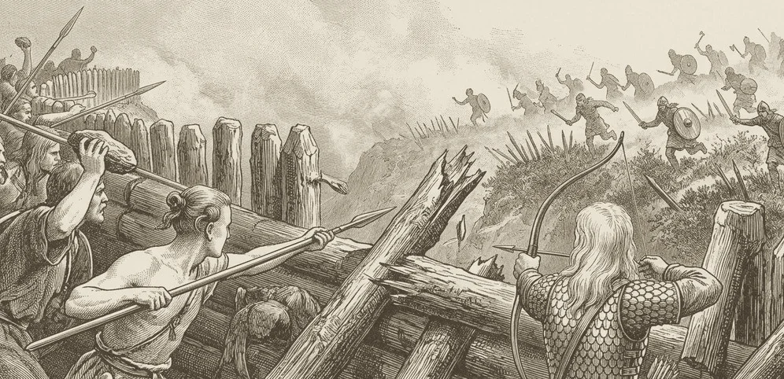
Teudo
Vinieron al amanecer del día cuarenta, con niebla, y lo primero que oyó Teudo fue el silencio.
Llevaba cuarenta días oyendo a los vándalos. Sus cuernos, sus cantos de noche alrededor de los fuegos, sus caballos, sus herreros martilleando, sus perros. Los oía hasta dormido. Aquella madrugada, en su turno de guardia en la empalizada del este, con la manta por encima de los hombros y la lanza apoyada en un tronco, se dio cuenta de pronto de que no oía nada. Ni un cuerno. Ni un perro. Solo el agua goteando de los brezos, la niebla espesa como lana, y su propia respiración.
Despertó a Fravita.
Fravita no preguntó nada. Se levantó, escuchó un momento con la cabeza ladeada, como escuchan los perros viejos, y empezó a dar golpes con el puño en los escudos de los hombres que dormían a su alrededor, sin gritar, uno detrás de otro. Los hombres se levantaron sin gritar tampoco. Se pusieron los cascos. Cogieron los escudos y las lanzas. Se pusieron en la empalizada, en su sitio, cada uno donde le tocaba, como lo habían ensayado cien veces aquellos cuarenta días.
La empalizada era lo que habían podido hacer. Troncos de roble y de castaño cortados en el monte, clavados en la tierra uno junto a otro y atados con mimbre, a la altura de un hombre. Delante, un foso poco hondo, porque la tierra era roca a un palmo. Delante del foso, estacas afiladas clavadas en el suelo, inclinadas hacia abajo, hacia la ladera, entre los brezos. Detrás de la empalizada, montones de piedras del tamaño de una cabeza, que llevaban días acarreando. Y detrás de las piedras, los hombres.
Esperaron. La niebla no se movía. Teudo notaba el corazón en la garganta. Tenía la boca seca, y le picaba la nariz, y se dio cuenta de que tenía unas ganas enormes de mear y de que no podía. Miró a su izquierda. Hunila no estaba; Hunila se había quedado en la Peña. Estaba un hombre de Fravita que se llamaba Gaudila, viejo, con la barba gris, que masticaba algo con mucha calma. Miró a su derecha. Arsak.
El alano no llevaba lanza ni escudo suevo. Llevaba su espada al cinto, la cota de escamas de su padre, y el arco de olmo que Teudo le había dejado para la caza, el de niños, con un carcaj de flechas suevas a la espalda. Estaba tranquilo. Tenía la cabeza levantada, oliendo el aire.
—Caballos no —dijo en voz muy baja—. Vienen a pie.
Y entonces la niebla gritó.
Fue un solo grito, de mil gargantas a la vez, que subió por la ladera como una ola, y detrás del grito salieron de la niebla los vándalos. A pie. Corriendo cuesta arriba entre los brezos, en masa, sin orden, con los escudos redondos por delante y las espadas y las hachas en alto, gritando. Teudo no había visto nunca tanta gente correr hacia él. Llenaban la ladera de lado a lado. Salían de la niebla sin parar, como si la niebla los fabricara.
—¡Piedras! —gritó Fravita.
Teudo soltó la lanza, cogió la piedra que tenía a los pies con las dos manos, la levantó por encima de la empalizada y la tiró. No vio dónde cayó. Cogió otra. La tiró. A su alrededor, todos hacían lo mismo, y las piedras bajaban rodando por la ladera, rebotando en las rocas, saltando, y abajo se oían golpes sordos y gritos distintos, de dolor. Teudo tiró cinco, seis, siete piedras. Le ardían los brazos. Se le acabaron las piedras.
A su lado, Arsak tiraba flechas. Una detrás de otra, sin prisa, con un ritmo que parecía el de alguien que corta leña, sacando la flecha del carcaj, tensando, soltando, sacando otra. No miraba dónde caían. Miraba la siguiente.
Los vándalos llegaron a las estacas.
Algunos cayeron encima. Teudo vio a un hombre ensartado en una estaca por la tripa, doblado sobre ella como una ropa tendida, moviendo los brazos. Los de detrás pasaron por encima de él. Llegaron al foso. Saltaron dentro. Llegaron a la empalizada.
—¡Lanzas! —gritó Fravita.
Teudo cogió la lanza. Por encima de la empalizada asomaban caras: caras barbudas, rojas, con la boca abierta, que gritaban. Manos que se agarraban a los troncos. Una cabeza con casco. Teudo clavó la lanza en la cara que tenía delante.
No sintió nada. Lo pensó luego, muchas veces: que no había sentido nada, igual que con la honda en el castro de los galaicos. Clavó la lanza, notó cómo entraba en algo blando y luego tropezaba con algo duro, y la sacó, y la cara ya no estaba. Clavó otra vez. Otra. A su lado Gaudila hacía lo mismo, gruñendo a cada golpe como si estuviera partiendo leña. Por encima de la empalizada empezaron a caer cosas: piedras pequeñas tiradas con honda desde abajo, flechas que venían de lejos, de los alanos, que se habían quedado al pie de la ladera, a caballo, y tiraban por encima de las cabezas de los suyos. Una le dio a Gaudila en el casco con un ruido de campana. Gaudila se tambaleó, escupió lo que masticaba y siguió.
El ruido no se parecía a nada. Teudo no lo pudo contar nunca. Era como si el mundo entero se hubiera vuelto un herrero golpeando un yunque y un matadero a la vez. Gritos, golpes, hierro contra hierro, hierro contra madera, el crujido de los troncos de la empalizada cuando los de abajo los empujaban, los cuernos que ahora sí sonaban, sin parar, de los dos lados. Y por encima de todo, el olor. A sudor. A sangre, que olía a hierro. A tripas abiertas. A mierda, porque los hombres que se mueren se ensucian. A humo, porque los vándalos habían empezado a tirar flechas con trapos encendidos contra los carros de las familias, en la ladera de dentro, y algunos ardían.
Un tronco de la empalizada cedió, a diez pasos de Teudo. Se oyó crujir como un árbol que cae. Por el hueco empezaron a entrar vándalos.
—¡A mí! —gritó Fravita.
Teudo corrió. No supo cómo. Se encontró con el escudo por delante, hombro con hombro con otros, empujando contra los que entraban por el hueco, como empujaban en los entrenamientos de la Peña contra un tronco, solo que ahora el tronco gritaba y tenía espadas. Alguien le dio con algo en el escudo y le dejó el brazo dormido. Alguien le dio en el casco. Teudo clavó la lanza por debajo del escudo, a ciegas, hacia las piernas, como le había enseñado Fravita, y oyó un grito. Clavó otra vez. La lanza se le quedó enganchada en algo y la soltó y sacó la espada.
Al otro lado del escudo había un vándalo joven, de su edad, con una barba rubia rala y la cara llena de sangre que no era suya. Levantó un hacha. Teudo levantó el escudo. El hacha se clavó en el borde del escudo, en la madera, y se quedó allí, y el vándalo tiró para sacarla, y Teudo le metió la espada por debajo del brazo.
El vándalo le miró. Con sorpresa, con los ojos muy abiertos, como miraba Odo junto a la muralla del castro.
Luego se cayó.
No supo cuánto duró. Mucho. Poco. Se dio cuenta de que había terminado porque el ruido cambió: los gritos de delante se fueron alejando, ladera abajo, y los de alrededor se volvieron otra cosa, más baja, más rota. Los vándalos se retiraban. Bajaban corriendo entre los brezos, dejando atrás a sus muertos y a sus heridos, que se arrastraban o se quedaban quietos. La niebla se había levantado. Hacía sol.
Teudo se miró. Tenía la espada roja hasta la empuñadura. Tenía el escudo partido. Y tenía el antebrazo izquierdo abierto, de la muñeca al codo, por un corte que no recordaba haber recibido, que no le dolía todavía y que sangraba mucho.
Se sentó en el suelo, detrás de la empalizada rota, y se quedó mirando el corte. Fravita apareció delante de él. Tenía una oreja rota y la barba llena de sangre.
—¿Es mucho? —le preguntó Teudo.
Fravita se agachó, le cogió el brazo y lo miró.
—Es poco —dijo—. Vas a tener una cicatriz para enseñársela a tus nietos.
Luego se quitó el cinturón de cuero y se lo apretó a Teudo por encima del codo, fuerte, hasta que la sangre dejó de salir.
—Gaudila ha muerto —dijo.
Teudo se volvió. Gaudila estaba sentado contra la empalizada, con la cabeza caída sobre el pecho, como si se hubiera quedado dormido. Tenía una flecha alana en el cuello.
En la tienda de cuero negro, en el centro de la cima, los hombres de Heremigario no se habían movido en toda la mañana.
La herida del brazo se la cosió aquella tarde una vieja de los valles del Miño que cosía a todo el que se lo pedía, detrás de la tienda del rey, sentada en un tronco, con una aguja de hueso y crin de caballo.
Había cola. Hombres sentados en el suelo, con trapos apretados contra la cabeza, contra el hombro, contra la tripa, esperando. Algunos gemían. Otros no decían nada, y esos eran los que asustaban. Teudo esperó su turno con el cinturón de Fravita todavía apretado encima del codo, que ya no sentía la mano. La vieja le soltó el cinturón, miró cómo volvía a salir la sangre, roja, sin chorro, y asintió como si aquello le pareciera bien. Le lavó el corte con orina caliente de un cubo, que era lo que tenía, y que escocía como el fuego. Luego le cosió. Doce puntos. Uno detrás de otro, de la muñeca al codo, sin mirarle a la cara, mientras le contaba que había tenido cinco hijos y que tres estaban en la empalizada del norte.
—Este no se te va a pudrir —le dijo al terminar, atándole un trapo—. Es limpio. Los que se pudren son los de las flechas y los de las tripas. —Señaló con la aguja hacia la cola—. Esos.
Esa noche enterraron a Gaudila y a otros cuatro de los de Fravita en la cima, entre las rocas, debajo de montones de piedras, porque la tierra no se dejaba cavar. Los de Fravita se pusieron alrededor. Fravita no dijo nada; no era de discursos. Le puso a Gaudila encima de las piedras la bolsa de lo que masticaba siempre, que resultó ser regaliz, raíz de regaliz seca, que compraba a los mercaderes romanos en Lucus y que nadie sabía. Teudo puso una piedra más en el montón. Arsak puso otra, y se quedó un momento con la mano encima.
Luego volvieron a la empalizada, porque los vándalos podían volver.
No volvieron. Pero la noche fue larga. Desde la empalizada se oía a los heridos de la ladera, los de abajo, los vándalos que habían caído entre las estacas y que no habían podido arrastrarse a su campamento. Llamaban. En su lengua, que se parecía tanto al suevo que se entendía casi todo. Agua. Madre. Ayudadme. Uno estuvo llamando a alguien, un nombre de mujer, toda la noche, cada vez más bajo. Al amanecer dejó de llamar.
Teudo no durmió. Estuvo sentado en su puesto con la espalda contra los troncos, el brazo cosido latiéndole, oyendo aquello. Arsak se sentó a su lado a medianoche, con la manta.
—En la estepa —dijo Arsak, muy bajo— se bajaba de noche a buscar a los heridos. A los propios y a los de los otros. Los propios se subían. A los de los otros se les daba agua, o se les acababa, según lo que pidieran.
—¿Y aquí?
—Aquí no se baja. —Arsak se quedó mirando la oscuridad—. Aquí hay estacas, y arqueros alanos esperando a que alguien baje.
No dijeron nada más. Al amanecer, cuando se hizo el silencio en la ladera, Teudo se dio cuenta de que había estado contando las voces, como contaba los fuegos. Once. Luego diez. Luego ninguna.
Asta
Los alanos de Gunderico llegaron al valle del Duero una semana después de la siega, y esa noche Asta aprendió a coser a un hombre.
No vinieron muchos. Veinte o treinta jinetes, una partida suelta, de las que mandaba Gunderico por las tierras de los suevos para quemar lo que pudieran mientras los hombres estaban en los montes. Cruzaron el Duero por el vado de arriba, de noche, y quemaron dos aldeas de la otra punta del valle antes de que nadie se diera cuenta. Luego fueron a por la Peña.
Hunila y sus cinco hombres los vieron venir desde la torre. Tocaron el cuerno. En el valle, las mujeres metieron a los niños en el hórreo y en las bodegas, y los viejos cogieron lo que tenían a mano, hoces, horcas, el hacha de partir leña. Ricila cogió el cuchillo del abuelo, el del mango de hueso. El padre cogió una lanza vieja que tenía colgada en el establo desde el Rin.
No llegaron a la casa de labor. Se quedaron en la Peña. La Peña no tenía más que seis hombres, pero tenía dos murallas y una puerta de roble, y los alanos no habían venido a tomar fortalezas sino a quemar aldeas. Dieron vueltas alrededor del castro toda la noche, tirando flechas con fuego contra los tejados de paja, gritando. Por la mañana se fueron, cuando vieron bajar del monte a los hombres del valle de al lado, que venían con lanzas y hoces porque habían visto el humo.
Dejaron tres casas de la Peña quemadas. Y a cuatro de los seis hombres heridos.
Los bajaron al valle en un carro, a media mañana. A Hunila con un brazo roto. A otro con una flecha en el hombro, rota por dentro. A otro con la cara quemada por el fuego de un tejado que se le cayó encima. Y a un cuarto, un muchacho de quince años, con un corte en la cabeza que sangraba tanto que Asta, cuando lo vio, pensó que estaba muerto.
Teodoro, el físico, llegó de la villa en su mula blanca un rato después. Se lavó las manos en el patio con su jabón de laurel. Miró a los cuatro, uno por uno, muy deprisa, tocándolos apenas. Luego miró a las mujeres que había alrededor. A la madre. A Brunhild. A Asta.
—Necesito manos —dijo—. Dos. Limpias.
La madre dio un paso adelante. Asta dio otro.
—Tú no —le dijo la madre—. Eres muy joven.
—Cosí a Arsak —dijo Asta—. En la Bética. Le cambié las vendas cuarenta días.
Teodoro la miró.
—¿Te mareas con la sangre?
—No.
—Lávate las manos. Con agua caliente. Con esto. —Le dio el jabón—. Hasta los codos. Y no toques nada que no sea limpio.
Trabajaron todo el día. Teodoro empezó por el muchacho de la cabeza, porque era el que más se moría. Le cortó el pelo alrededor de la herida con una navaja. La herida era larga, en el cuero cabelludo, por encima de la oreja; un tajo de espada que había abierto la piel hasta el hueso, que se veía blanco en el fondo. Teodoro lo tocó con la sonda. El hueso estaba entero. Dijo que eso era bueno. Lavó la herida con vino, juntó los bordes con los dedos y le dijo a Asta que los sujetara así, apretados, mientras él cosía.
Cosía con una aguja de bronce curva, fina, y un hilo de lino que sacaba de un frasco donde lo tenía metido en vino. Dando puntos separados, uno, otro, otro, como se cose una bota rota. Asta sujetaba la piel. Estaba caliente y resbalaba. El muchacho estaba desmayado. Asta no se mareó. Lo pensó mucho después: que no se había mareado, y que no sabía por qué.
Luego el de la flecha. Teodoro le abrió el hombro con un cuchillo pequeño para sacar la punta, que estaba metida en el hueso, y como no salía, sacó de su cesto una cosa que Asta no había visto nunca: una especie de cuchara alargada, de bronce, con un agujero en la punta. La metió en la herida, despacio, a lo largo del astil roto, buscando. El hombre aullaba, sujeto entre la madre, Brunhild y dos viejos. Teodoro encontró la punta, la metió en el agujero de la cuchara, como se mete un pie en un estribo, y tiró. Salió la punta y la cuchara juntas, sin desgarrar.
—La cuchara de Diocles —le dijo a Asta mientras la limpiaba—. Un médico griego, hace mucho. Para las flechas con aletas. Si tiras de la flecha, las aletas se clavan. Si la tapas con la cuchara, salen limpias.
Asta asintió. No dijo que Arsak le había contado que se empujaban hacia delante. No le pareció el momento.
A Hunila le arreglaron el brazo. Teodoro tiró de la mano mientras dos hombres le sujetaban el hombro, hasta que los huesos se pusieron en su sitio con un ruido que Asta no olvidó nunca, como el de una rama verde que se dobla. Luego le entablillaron el brazo con dos tablas de castaño y vendas mojadas en clara de huevo batida con harina, que al secarse se quedaban duras como una piedra.
Al de la cara quemada le pusieron miel. Mucha. Por toda la cara. Y unas hojas de col cocidas encima, que según la madre sacaban el fuego. Teodoro dijo que no sabía si la col servía para algo, pero que tampoco hacía daño.
Cuando terminaron era de noche. Asta se lavó las manos en el arroyo, a oscuras. Estaban rojas hasta los codos, como el día de la matanza del cerdo. Se las frotó con arena hasta que le dolieron.
Ricila la encontró allí, de rodillas en el agua. No dijo nada. Se agachó a su lado y le ayudó a frotarse las manos, despacio, con arena, hasta que salieron limpias.
Arsak
La tregua para los muertos la pidieron los vándalos, al día siguiente del asalto, y Arsak bajó con los que fueron a recoger a los suyos.
Fue cosa de Fravita. Bajaban veinte suevos, sin armas, con camillas de ramas y mantas, a recoger a los que habían caído fuera de la empalizada, en la ladera, entre los brezos y las estacas. Subían veinte vándalos a recoger a los suyos. Era la costumbre. Desde antes de Roma, desde siempre: los muertos no son de nadie, y se devuelven.
Fravita le dijo a Arsak que bajara. No le explicó por qué. Arsak no preguntó.
La ladera olía como huele un campo de batalla al día siguiente, que no es como el día mismo. El día mismo huele a sangre y a hierro. Al día siguiente huele a carne que empieza a estropearse, a moscas, a la tierra removida. Había muertos por todas partes. Algunos enganchados en las estacas, como los había visto Teudo. Otros entre los brezos, boca arriba, con los ojos abiertos y las moscas entrándoles y saliéndoles de la boca. Otros en el foso, unos encima de otros. Los cuervos habían empezado ya. Levantaban el vuelo cuando se acercaban los vivos y se quedaban dando vueltas por encima, graznando, esperando.
Arsak recogía muertos suevos y los ponía en las camillas, y miraba a los vándalos que recogían los suyos a veinte pasos, y no buscaba a nadie. No se dijo a sí mismo que estaba buscando a nadie.
Lo encontró al mediodía. O le encontró él a Arsak. Estaba a caballo, al pie de la ladera, con los jinetes alanos que guardaban a los vándalos que recogían muertos, a cien pasos. Llevaba al hombro el arco de Candac.
Se miraron un rato largo, de lejos. Luego Félix bajó del caballo y subió por la ladera, a pie, entre los muertos, solo.
Arsak le esperó. Los suevos que había alrededor se pusieron tensos. Arsak levantó una mano para que se quedaran quietos.
Félix llegó delante de él. Tenía dieciocho años. Era casi tan alto como Arsak, flaco, con la cara curtida y un bigote rubio que apenas le salía, y una cicatriz nueva en la barbilla. Llevaba la ropa de un alano. Hablaba alano, le había enseñado él. Le miró a la cara un rato largo, sin decir nada.
—Me dijeron que habías muerto —dijo al fin—. En la batalla. Con Addax.
—No estaba en la batalla.
—Ya. Ahora lo sé. —Félix tragó saliva—. Volví a la villa. Después. Una semana después. Me escondí en el monte con otros y luego volví. —Se tocó el arco—. Tecla me dio esto. Estaba colgado en la puerta. Me dijo que lo habías dejado para la doma de los potros.
—¿Están bien? Marcelo y Tecla.
—Viejos. Marcelo no ve casi. Tecla manda en todo. —Félix casi sonrió—. Los godos pasaron por la villa y no hicieron nada. Les dieron de comer. Tecla les sirvió la sopa ella misma, con una cara... —Se calló—. Tecla me dijo que te habías ido al norte con la niña vándala. Que si te encontraba, te dijera que la puerta sigue ahí.
Arsak no pudo contestar.
—Vine con los alanos que quedaban —siguió Félix—. Con Gunderico. No había otra cosa. —Le miró los ojos—. Ahora te encuentro con los suevos.
—Sí.
—Ayer estabas en la empalizada. Te vi. Tirabas con un arco de niño.
—Era el que tenía.
Félix se quedó callado. Luego dijo lo que Arsak sabía que iba a decir desde que le vio subir por la ladera, porque era lo que había dicho Candac doce años antes, en la orilla del Rin.
—Ven con nosotros. Con los alanos. Somos pocos, pero somos los que quedan. Eres de los nuestros.
Arsak miró hacia arriba, hacia la cima, hacia la empalizada rota, donde estaba Teudo con el brazo vendado y Fravita con la oreja partida. Luego miró hacia el sur. Hacia el valle del Duero, que no se veía, a cinco días, donde una muchacha vándala estaba aprendiendo a leer.
Se acordó de su padre arreglando una correa junto al fuego, sin levantar la vista, dejándole elegir.
—Me quedo —dijo.
Félix asintió despacio. No pareció sorprendido. Se quedó un momento quieto, mirándole. Luego se quitó el arco de Candac del hombro, el de cuerno y tendón, y se lo tendió.
—Era para la doma —dijo—. La doma ya no la vamos a hacer.
Arsak no lo cogió.
—Quédatelo —dijo—. Tú lo necesitas más. Yo tengo uno de niño.
Félix le miró. Luego se rio, una risa corta, rota. Y se le saltaron las lágrimas, de golpe, y se las secó con la manga, enfadado, como se las secaba a los trece años cuando se caía del caballo.
Se dio la vuelta y bajó la ladera entre los muertos, deprisa, sin volverse.
Los alanos no se vuelven, pensó Arsak.
Félix no era alano. Félix era el nieto de dos colonos romanos de la villa del Anas, al que él había enseñado a ser alano. Y a mitad de la ladera, junto a un muerto vándalo enganchado en una estaca, se volvió.
Levantó la mano.
Arsak levantó la suya.
Asterio
Los montes Nervasos y el valle del Duero – del invierno de 419 a la primavera de 420
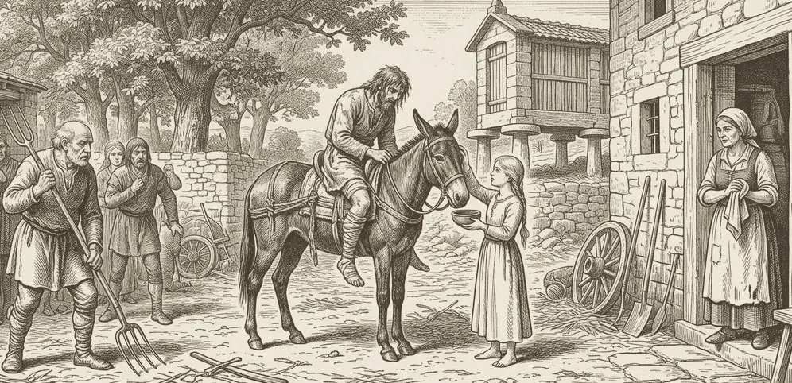
Teudo
Lo que mató a más suevos en los montes Nervasos no fueron los vándalos. Fue el agua.
Después del asalto, Gunderico no volvió a subir. Había perdido demasiados hombres en la ladera. Hizo lo que se hace cuando una fortaleza no se puede tomar: sentarse a esperar. Sus jinetes rodeaban la montaña día y noche. Nadie bajaba al manantial de la ladera, porque el que bajaba no volvía. Nadie bajaba a cazar, a cortar leña, a buscar nada. Arriba quedaba la laguna.
La laguna era pequeña, negra, con juncos alrededor y el fondo de barro. Al principio del cerco el agua estaba fría y limpia. Luego bebieron de ella miles de personas y miles de animales durante dos meses. Las vacas se metían dentro hasta las rodillas. Las mujeres lavaban la ropa en la orilla. Alguien, nadie supo quién, echaba dentro de noche lo que no debía. Cuando llegó el invierno y dejó de llover, el agua se puso verde, y olía, y tenía bichos que se movían.
La bebieron igual. No había otra.
Empezó con los niños. El flujo de vientre, lo llamaban las viejas: una cagalera que no paraba, de agua, con sangre a veces, y fiebre, y unos dolores de tripa que los doblaban. Los niños se quedaban secos en tres días, con los ojos hundidos y la piel como papel. Luego los viejos. Luego todos.
Teudo lo tuvo a finales de diciembre. Se pasó cinco días tirado en la tienda de Fravita, que era una manta tendida sobre dos lanzas, saliendo cada poco a la zanja que habían cavado detrás para eso, sin fuerzas para ponerse de pie al volver. Tenía tanta sed que soñaba con el Duero. Arsak le daba agua. No de la laguna. Agua que hervía en un caldero, siempre, sin parar, día y noche, con leña que no se sabía de dónde sacaba; agua hervida y dejada enfriar, y en ella echaba un puñado de sal y otro de miel, de un tarro que nadie sabía tampoco de dónde había salido.
—Bebe —le decía—. Aunque lo eches. Bebe.
Teudo bebía. Lo echaba. Bebía otra vez.
—¿Dónde has aprendido eso? —le preguntó el tercer día, con la voz que casi no le salía.
—Beorgor —dijo Arsak—. Un viejo de los míos. Decía que en la estepa, cuando el agua es mala, se hierve. Y que el que se vacía por abajo hay que llenarlo por arriba, con sal, como a los caballos que sudan mucho.
—¿Y la miel?
—La miel es de tu madre. Iba en tu hatillo. —Arsak sonrió apenas—. No te la habías comido.
Teudo se curó. Muchos no. Los enterraban como podían, en la tierra dura de la cima, que era roca a un palmo, debajo de montones de piedras. Cada mañana había más montones. Los cuervos daban vueltas por encima.
Y luego, el hambre.
Se comieron las vacas. Luego las ovejas. Luego los perros. Luego los caballos, los que no eran de los jefes. Fravita mandó matar el suyo, el que había sacado a Hunila del río, y lo repartió entre sus hombres y las familias que había alrededor, y Teudo le vio llorar, de espaldas, junto al animal muerto, mientras lo descuartizaban. No dijo nada. Nadie dijo nada.
Una noche de enero, sin luna, Arsak y Teudo bajaron al manantial.
Fue idea de Arsak. Llevaba días mirando la ladera desde la empalizada, de noche, contando los fuegos de los vándalos y los jinetes que pasaban, y le dijo a Teudo que había un rato, entre el cambio de guardia de los alanos de abajo y el siguiente, en que nadie miraba el manantial. Poco. Lo que se tarda en llenar diez odres.
Fravita dijo que no. Luego vio a un niño de la tienda de al lado, de cuatro años, tumbado en una manta con los ojos hundidos, sin fuerzas para llorar. Y dijo que sí. Que bajaran cuatro. Que si los cogían, él no sabía nada.
Bajaron cuatro: Arsak, Teudo y dos de los muchachos de Fravita. Descalzos, para no hacer ruido en las piedras. Con la cara y las manos untadas de ceniza. Cada uno con tres odres vacíos atados a la espalda y un cuchillo. Sin espadas, que suenan. Por la ladera del este, la del asalto, entre las estacas, despacio, a gatas, entre los muertos del otoño que nadie había recogido y que ya no olían porque los había helado el invierno. Teudo puso la mano en algo blando en la oscuridad y no miró qué era.
El manantial salía de una roca, a cien pasos por debajo de la empalizada, en una pequeña hondonada con juncos. El agua corría fría, limpia, haciendo un ruido pequeño que a Teudo le pareció lo más bonito que había oído nunca. Llenaron los odres tumbados en el barro, con la boca del odre metida en el chorro, sin levantarse. Uno de los muchachos bebió con la cara en el agua, como un perro, hasta que Arsak le tiró del pelo.
Abajo, a trescientos pasos, se veían los fuegos de los alanos. Se oía a alguien cantar.
Llenaron los doce. Cargaron. Subieron. A mitad de la subida, un caballo relinchó abajo, y se oyeron voces, y una flecha pasó silbando por encima de sus cabezas y se clavó en una estaca. Se quedaron quietos, pegados al suelo, con los odres llenos aplastándoles la espalda, sin respirar. Otra flecha. Lejos. Luego nada. Luego las voces se alejaron, riéndose.
Tiraban por tirar. Por aburrimiento.
Llegaron a la empalizada antes del alba, con los pies en carne viva. Fravita estaba esperando en el hueco de los troncos con una antorcha tapada. No dijo nada. Contó los odres. Contó a los hombres.
El agua del manantial se repartió aquella mañana entre los niños de las tiendas de alrededor, un cuenco a cada uno, hervida de todas formas, porque Arsak dijo que el agua buena también se puede estropear en un odre. Al niño de la tienda de al lado le dieron dos. Su madre se lo dio a cucharadas, despacio, como se da la leche a un cordero huérfano.
No volvieron a bajar. A la noche siguiente, los alanos pusieron un fuego junto al manantial, y hombres alrededor.
Pero el niño de la tienda de al lado vivió. Teudo le vio en la primavera, en el camino de vuelta, sentado en un carro, flaco como un palo, comiendo un trozo de pan. No supo nunca cómo se llamaba.
En la tienda de cuero negro, en el centro de la cima, había comida.
Todo el campamento lo sabía. Heremigario había subido con carros, con muchos carros, y los tenía guardados detrás de su tienda, tapados con lonas, con hombres de guardia día y noche. Sus hombres no tenían la cara hundida. Sus caballos no se habían comido. Y él salía cada tarde de su tienda, con su capa de púrpura, a dar un paseo por la cima, mirando a los que se morían.
Una tarde, Fravita fue a la tienda del rey a quejarse. Teudo fue con él, porque Fravita se lo mandó. Hermerico los escuchó sentado en una silla de campaña, con una manta por encima de las piernas, más viejo y más cansado que nunca. Escuchó a Fravita sin interrumpirle. Cuando terminó, se quedó un rato callado.
—Heremigario es de mi sangre —dijo al fin—. Sus carros son suyos.
—Mis hombres se mueren —dijo Fravita.
—Los míos también. —Hermerico se frotó la cara con las manos—. Sus carros son suyos, Fravita. Si se los quito, mañana tengo a la mitad de los nobles contra mí. Y con Gunderico abajo, no puedo tener a nadie contra mí.
Fravita no dijo nada más. Salieron. Fuera de la tienda, Teudo se volvió a mirarle. Fravita tenía la cara de piedra.
—Ahora ya sabes cómo funciona un reino —le dijo, sin mirarle.
A finales de marzo, una mañana de sol, los vándalos se fueron.
Nadie lo entendió al principio. Los centinelas dieron la voz: abajo, en los prados, los vándalos estaban recogiendo. Desmontaban las tiendas, enganchaban los bueyes a los carros, juntaban el ganado. Sin prisa. Sin atacar. Como se levanta un campamento cualquier mañana de mudanza. A mediodía empezaron a irse por el valle del este, por donde habían venido, una columna larga que tardó toda la tarde en desaparecer.
Al día siguiente llegó la explicación. Un jinete suevo que había estado escondido en los montes de alrededor desde el principio del cerco subió a la cima con la noticia. Venía un ejército romano. Desde el este, desde la Tarraconense. Lo mandaba un general que se llamaba Asterio, conde de las Hispanias, con soldados de verdad, de los de Roma, con escudos iguales y cascos iguales, como los que Arsak había visto desembarcar en Bononia. Gunderico no había querido esperarlos.
Los suevos bajaron de la montaña tres días después. Eran muchos menos de los que habían subido.
Teudo bajó con el brazo marcado por una cicatriz roja que le iba de la muñeca al codo, con la túnica colgándole como de una percha, con la cinta roja de Brunhild atada a la muñeca derecha, y con un alano al lado que había hervido agua para él cinco días seguidos.
Asta
El vándalo cayó en el valle la noche de la partida alana, y lo encontraron al día siguiente en el cañaveral del arroyo, con una pierna rota y una flecha sueva en la espalda.
Lo trajeron a la casa de labor atado sobre una mula, como se trae un ciervo. Era joven, de veinte años o poco más, con el pelo rojizo y la barba sucia, y deliraba de fiebre. Los hombres del valle querían matarlo. Wilja el grande lo dijo en voz alta, en el patio, con la horca en la mano: que aquel había quemado las aldeas del otro lado del valle, que había tirado flechas con fuego contra la Peña, que por su culpa Hunila tenía el brazo entablillado y el muchacho de la cabeza no se acordaba de su propio nombre. Que lo justo era colgarlo de un castaño y dejarlo a los cuervos.
Nadie le llevó la contraria. Asta tampoco. Estaba en la puerta de la cocina, mirando al vándalo atado a la mula.
El vándalo abrió los ojos. La miró a ella. Dijo algo.
Lo dijo en su lengua. En la de Asta. No en suevo, que se le parecía; en vándalo, en el vándalo de los asdingos, el de su padre, con las mismas palabras y el mismo cantar. Asta no lo oía desde la granja. Desde aquella mañana en el establo, desde la voz de su padre en el patio, antes del hierro. Dijo: «Agua. Madre. Agua».
Asta no se movió. Luego entró en la cocina, llenó un cuenco y salió. Pasó entre los hombres. Le levantó la cabeza al vándalo y le dio de beber.
Wilja se quedó mirándola con la horca en la mano. Asta no le miró. Siguió dándole agua al vándalo, despacio, como le había dado la madre a ella cuando despertó de la fiebre.
Fue la madre la que habló. Salió al patio secándose las manos en el delantal, miró al vándalo, miró a Asta, miró a Wilja.
—Lo matáis mañana —dijo—. Hoy tiene fiebre. Un hombre con fiebre no sabe lo que le hacen. No se le mata a uno que no sabe por qué se muere.
Nadie entendió del todo lo que quería decir. Pero nadie le llevó la contraria a la madre. Lo metieron en el pajar, atado.
Asta lo cuidó tres días. Teodoro no quiso venir; dijo que él no curaba a los que habían quemado las aldeas del valle. Así que lo hizo ella. Le sacó la punta de la flecha de la espalda con un cuchillo pequeño de la cocina, despacio, como había visto hacer al físico, aunque no tenía la cuchara de Diocles y tuvo que cortar alrededor. Le lavó la herida con vino. Le puso miel. Le entablilló la pierna rota con dos tablas, como a Hunila, y con vendas mojadas en clara de huevo y harina. Ricila la ayudó. No le preguntó por qué lo hacía. La ayudó.
El vándalo se llamaba Fredo. Era asdingo, de una aldea de la llanura húngara que ya no existía. Cuando le bajó la fiebre, al tercer día, le contó a Asta muchas cosas. Que había cruzado el Rin a los ocho años, con su padre. Que habían luchado contra los francos aquella noche. Que su padre había muerto en la orilla.
—El mío no —dijo Asta—. Lo salvó un alano.
Fredo la miró.
—¿Cómo se llamaba tu padre?
—Guntario.
Fredo se quedó callado un buen rato. Luego se echó a reír, bajito, con dolor, porque le dolía la espalda al reírse.
—¿Guntario el del escudo rojo? ¿El que cojeaba?
Asta no pudo contestar.
—Lo conocí —dijo Fredo—. En la Galia. Yo era un crío. Tallaba cucharas de madera con un chico que se llamaba Fridila, uno que se murió en el río, y Guntario nos daba una moneda por cada cuchara que hiciéramos bien. —Fredo se quedó mirando el techo del pajar—. Era un buen hombre. Se reía mucho.
Asta salió del pajar sin decir nada. Se sentó en el escalón del hórreo, al sol. Lloró un rato. Luego volvió a entrar.
La cuarta noche, cuando todo el mundo dormía, Ricila bajó con ella al pajar. Desataron a Fredo. Le dieron un palo para apoyarse, un pan, un queso y una manta. Lo llevaron entre los dos, despacio, por el camino del arroyo, hasta el vado de abajo, donde el agua estaba baja porque no había llovido. Lo ayudaron a cruzar. Al otro lado, en la orilla de Lusitania, Fredo se volvió.
—No sé cómo pagarte —le dijo a Asta.
—No me pagues —dijo ella—. Haz cucharas.
Por la mañana, Wilja encontró el pajar vacío y las cuerdas cortadas. Dio un grito que se oyó desde la Peña. Preguntó a todo el mundo. Nadie había visto nada.
La madre estaba en la cocina, amasando. Wilja le preguntó a ella también. La madre siguió amasando.
—Habrá sido Dios —dijo—. O los tuyos. Que nunca atan bien.
Wilja la miró mucho rato. Luego se fue. No volvió a hablar del vándalo nunca más.
Pero Asta vio que, antes de irse, había mirado hacia el hórreo. Donde estaba Ricila. Y que lo había mirado con una cara que no le gustó.
Luego llegó el invierno, y no llegaron noticias.
Nadie bajaba de los montes Nervasos. Nadie subía. Se sabía que el rey estaba cercado allá arriba, y que los vándalos de Gunderico no se iban, y nada más. En el valle se vivía como se vive cuando los hombres no están: las mujeres hacían todo. Cortaban la leña, que antes cortaban los hombres. Arreglaban las cercas que tiraba el viento. Subían a la Peña a llevar comida a Hunila y a los suyos, que hacían la guardia en la torre con el brazo entablillado y la cara quemada, y bajaban con la noticia de siempre: que no se veía nada en el camino del este.
La madre contaba los días con piedrecitas. Las tenía en un cuenco en la repisa de la cocina, junto a la sal: una por cada día desde que se fue Teudo. Cuando el cuenco se llenó, puso otro. Nunca dijo para qué eran. No hacía falta.
Brunhild no contaba nada. Trabajaba. Se levantaba antes que nadie y se acostaba la última, y tejía de noche, junto al fuego, con el niño Wilja dormido en el regazo de Asta, una tela de lana gruesa que no se sabía para quién era. Una noche Asta le preguntó.
—Para una capa —dijo Brunhild—. Las de los montes se gastan.
No dijo de quién.
Por Navidad, que la mujer de Materno celebraba en la villa con una misa y una cena a la que invitaba a todo el valle, llegó por fin un hombre del este. Un buhonero galaico, con una mula cargada de agujas, peines y cintas, que había pasado cerca de los Nervasos por los caminos de los pastores. Contó lo que había visto desde lejos: los fuegos de los vándalos en los prados, que no se acababan nunca; humo arriba, en la cima, poco; y cuervos. Muchos cuervos.
Nadie le preguntó más. La mujer de Materno le dio de cenar y mandó que le llevaran a dormir al pajar.
Esa noche, al volver a casa por el camino helado, Ricila cogió la mano de Asta, en la oscuridad, sin decir nada. Asta no la soltó.
En la cocina, la madre echó otra piedrecita en el cuenco.
Arsak
Arsak vio irse a los alanos desde el borde de la cima, la mañana de marzo en que Gunderico levantó el cerco.
Iban detrás de los carros de los vándalos, a caballo, en grupos pequeños, sin orden. Eran pocos. Muchos menos que en el Rin, que en los Pirineos, que en las llanuras de Emerita la mañana de la última carga. Doscientos, trescientos. Lo que quedaba de un pueblo que había bajado de la estepa con miles de carros y que ahora cabía entero en un valle.
Lo buscó. Lo encontró enseguida, porque montaba distinto a los demás, como monta alguien que ha aprendido de mayor: muy derecho, muy serio, como si alguien le estuviera mirando. Félix. Con el arco de Candac al hombro. Iba al final de la columna, el último, como iban siempre los que vigilan que nadie se quede atrás.
No se volvió esta vez.
Arsak lo miró hasta que la columna dobló la última curva del valle, a media tarde, y se perdió detrás de un monte. Luego se quedó un rato más mirando el sitio vacío donde había estado.
Teudo se le acercó por detrás. Estaba flaco como un palo todavía, con la cara hundida, apoyado en una lanza para andar. Se quedó a su lado, sin decir nada, mirando también.
—¿Era él? —preguntó al fin.
—Era él.
—¿Adónde van?
—Al sur. —Arsak se encogió de hombros—. Dicen que a la Bética. A donde estaban los silingos. A la tierra que dejaron vacía los godos.
Teudo se quedó callado. Luego dijo una cosa que Arsak no esperaba.
—Donde está enterrado el padre de Asta.
Arsak le miró.
—Ricila me lo contó —dijo Teudo—. Lo del olivo viejo. El que tiene un hueco en el tronco.
—El Abuelo —dijo Arsak.
—Eso.
Se quedaron los dos mirando el valle vacío. Abajo, en los prados donde había estado el campamento de los vándalos, quedaban los círculos negros de mil fuegos, la hierba pisoteada, montones de basura, algún carro roto. Y los cuervos, que no se habían ido. Que no se iban nunca.
—Podías haberte ido con él —dijo Teudo.
—Sí.
—¿Por qué no?
Arsak tardó en contestar. Pensó en Félix bajando la ladera entre los muertos. En su padre arreglando la correa. En Beorgor diciéndole que cerrara la puerta. En una niña vándala que le había colgado del cuello una escama de hierro para que volviera al sitio de donde había salido.
—Porque a mí me esperan en el valle —dijo—. Y a él no le espera nadie más que yo.
Teudo no dijo nada. Le puso una mano en el hombro, un momento, como se la ponía Odo a él, hacía años, en la torre de la Peña, cuando hacía frío.
Bajaron de la montaña tres días después. El camino de vuelta duró siete, porque iban despacio, con los enfermos, con los heridos, con los carros llenos de gente que no podía andar. Por el camino murieron otros once. Los enterraron en los bordes de la calzada, debajo de montones de piedras, como se enterraba en la estepa.
Al séptimo día, a media tarde, desde un collado, vieron el Duero. Y la Peña. Y en la torre de madera, aunque no se distinguía desde tan lejos, alguien que agitaba un brazo entablillado.
Arsak no esperó a los demás. Bajó al galope por el sendero de cabras, en un caballo prestado, sin silla, como había bajado una vez a sacar a un muchacho del río. Cruzó el vado de abajo sin pararse. Subió por el camino del arroyo, entre los castaños, hasta la casa de labor.
Asta estaba en el patio, junto al pozo, sacando agua. Se volvió al oír el caballo.
Dejó caer el cubo.
La paz
El valle del Duero – 420 y 421
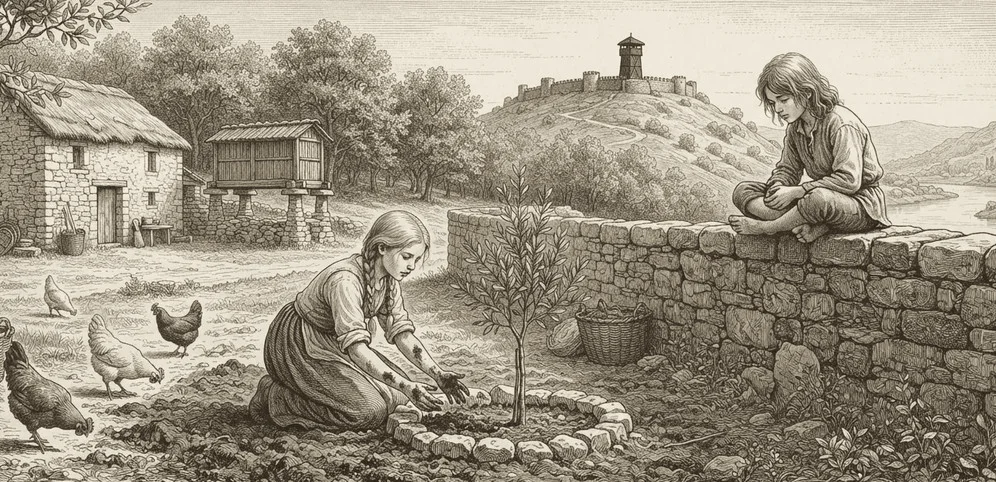
Teudo
Fravita tardó un mes en volver a hablar de la Peña, y cuando habló fue para darle a Teudo una llave.
Era una llave de hierro, larga como una mano, con los dientes gastados. La de la puerta de roble de la muralla de fuera. Fravita la llevaba colgada del cinturón desde que el rey le había dado la Peña, hacía seis años, y no se la quitaba ni para dormir. Una mañana de mayo, en el patio de la Peña, delante de los hombres que quedaban, se la quitó y se la dio a Teudo.
—Desde hoy abres y cierras tú —le dijo—. Y cuando yo no esté, mandas tú.
Los hombres se miraron. Teudo tenía veinticuatro años. Había otros más viejos. Pero nadie dijo nada, porque todos habían estado en la empalizada del este, y todos habían visto quién estaba en el hueco cuando cedió el tronco. Y porque Hunila, con el brazo todavía torcido de mal soldado, fue el primero en dar un golpe con la lanza en el suelo, como se hacía en las asambleas para decir que sí. Luego los demás.
Teudo se guardó la llave en el cinturón. Pesaba más de lo que parecía.
Ser el segundo de la Peña era, sobre todo, contar. Eso no se lo había dicho nadie y lo aprendió en una semana. Contar los sacos de grano del almacén. Contar las flechas. Contar los hombres que hacían la guardia y los que estaban enfermos. Contar las tejas que faltaban en las casas que habían quemado los alanos y los troncos que hacían falta para arreglarlas. Contar lo que debía cada aldea del valle por la protección de la Peña: tantas medidas de centeno, tantas de cebada, tantos quesos, tantos días de trabajo de los hombres en la muralla. Las aldeas de los galaicos pagaban en especie, como habían pagado siempre a quien mandara en la Peña antes de los suevos, y protestaban, como habían protestado siempre.
Teudo no sabía escribir. Contaba con palitos, haciendo muescas en un palo de avellano con el cuchillo, uno para cada aldea. Una tarde, Ricila le vio y se echó a reír.
—Trae —le dijo.
Le apuntó todo en una tablilla de cera, con letras y números romanos, en una tarde. Lo que había tardado Teudo una semana. Teudo miró la tablilla sin entender nada y se la devolvió.
—Guárdala tú —le dijo—. Y cuando yo te pregunte, me lo lees.
Así empezó Ricila a llevar las cuentas de la Peña. Subía una vez por semana, con la tablilla, y se sentaba en el almacén con Teudo y con los jefes de las aldeas, y apuntaba lo que pagaban. Los galaicos le tenían más miedo que a Teudo. Teudo no lo entendía. Ricila sí.
—Tú les puedes pegar —le explicó—. Yo les puedo apuntar. Lo que se pega se olvida.
Fravita no volvió a ser el mismo. No lo dijo nadie, pero todos lo vieron. Había vuelto de los montes Nervasos más viejo, más flaco, sin el caballo que le había dado el rey y con la oreja izquierda partida en dos, que se le había curado torcida. Subía menos a la torre. Se cansaba en las cuestas. Pasaba muchas tardes sentado en un banco junto a la puerta de su casa, en la Peña, con la perra Loba a los pies, mirando el valle, sin decir nada.
Una de esas tardes Teudo se sentó a su lado.
—Hermerico no te ha dado otro caballo —le dijo.
—No me lo ha dado.
—A Heremigario le ha dado tierras. En el Miño. Dicen que por lo bien que lo hizo en los Nervasos.
Fravita no contestó. Rascó a la perra detrás de las orejas.
—No hizo nada —dijo Teudo—. No se movió de su tienda. No dio su comida.
—Ya lo sé.
—¿Y entonces?
Fravita se quedó mirando el valle. Abajo, en el río, unos chicos de las aldeas se bañaban en el remanso de las truchas, gritando, tirándose desde una roca.
—Entonces nada —dijo—. Es así. Tu padre lo sabe. Tu abuelo lo sabía. Los que mandan no premian lo que haces. Premian lo que les sirve. A Hermerico le sirve tener a Heremigario contento. A mí no le hace falta tenerme contento: ya sabe que voy a hacer lo que me mande.
—Eso no es justo.
—No. —Fravita casi sonrió—. Ya te lo dije en la cima. Así funciona un reino.
Estuvieron un rato callados.
—Te voy a decir una cosa, Teudo, hijo de Guntmar —dijo Fravita al fin—. Y luego no te la vuelvo a decir. Ten cuidado con ese hombre. Con Heremigario. No es valiente y no es listo, pero tiene una cosa que es peor que las dos: no se olvida de nada. Ni de lo que le dan ni de lo que le niegan. Y en la cima le negamos algo. Tú y yo. Le fuimos a pedir comida delante del rey.
—Y nos la negó él.
—Da igual. Le vio la cara al rey mientras escuchaba. Eso no se le olvida.
Teudo no contestó. Miró a los chicos del río. Uno se tiró desde la roca, gritando, y salió del agua riéndose.
Las noticias del mundo llegaban a la Peña tarde y torcidas, como llegaban siempre, por los buhoneros y los pastores y los mensajeros del rey que pasaban camino de Lucus. Aquel verano llegaron varias. Que el conde Asterio había perseguido a los vándalos hasta Bracara, en la costa, y que allí había matado a muchos, y que los demás se habían ido al sur, a la Bética, con Gunderico y con los alanos que les quedaban. Que en Bracara había un nuevo vicario romano, Maurocelo, y que los romanos querían que los suevos les pagaran por haberlos salvado. Que Hermerico había mandado embajadores a Asterio, y que Asterio había mandado embajadores a Hermerico, y que se habían dado regalos.
Teudo escuchaba y no entendía la mitad. Lo que sí entendió fue lo que vino detrás. Que ya no había vándalos en Gallaecia. Que por primera vez desde el Rin, en catorce años, no había nadie en la tierra de los suevos con quien estuvieran en guerra.
Fravita, cuando se lo contaron, se rascó la oreja partida.
—Aprovechad —dijo—. Dura poco.
Esa noche, al cerrar la puerta de roble de la Peña con la llave larga, se quedó un rato con la mano en el hierro, frío, mirando el camino del norte por donde un día había llegado Heremigario con su capa de púrpura.
Asta
El olivo lo trajo Asta de la villa de Materno, metido en una cesta con tierra, el primer día de lluvia de la primavera de 420.
No era un olivo. Era una estaca. Una rama gruesa como dos dedos, larga como un brazo, que el capataz de Materno le cortó con la podadera de un olivo viejo que había en el patio de la villa, junto al pozo. El único olivo de todo el valle del Duero. Lo había traído de la Bética el abuelo de Materno, hacía más de cien años, cuando el abuelo de Materno era oficial del emperador y la Bética estaba llena de villas como aquella. No daba casi aceitunas, porque en el valle hacía demasiado frío. Pero seguía vivo.
Asta lo había visto el primer día que fue a la villa a aprender letras, y se había quedado parada delante, sin poder moverse, hasta que Ricila le preguntó qué le pasaba.
No se lo había sabido explicar. Le había dicho que era como un olivo que había visto en el sur. No le había dicho que debajo de aquel olivo del sur estaba enterrado su padre.
Ricila se enteró igual. Se lo contó Teudo, que lo sabía por Arsak. Y un día de marzo, sin decirle nada a ella, fue a hablar con el capataz de Materno. Y el capataz le enseñó a Asta cómo se hacía.
Se corta una rama sana, de dos años, en luna menguante, antes de que salgan las hojas nuevas. Se le quitan las hojas de abajo. Se entierra hasta la mitad en tierra buena, mezclada con estiércol de oveja bien podrido y con arena del río, en un sitio donde le dé el sol todo el día y no le dé el viento del norte. Se riega poco. Y se espera. Si en verano salen hojas nuevas, ha prendido. Si no, se ha muerto, y se vuelve a intentar al año siguiente.
—¿Cuánto tarda en ser un árbol? —preguntó Asta.
El capataz se rascó la cabeza.
—Para dar sombra, veinte años. Para dar aceitunas, aquí, nunca. Para ser como el de la villa, cien.
Asta lo plantó en el rincón del huerto de la casa de labor que miraba al sur, junto a la tapia de piedra, donde la madre ponía a secar las hierbas en verano porque era el sitio más caliente. Cavó el hoyo ella sola. Mezcló la tierra como le habían dicho. Metió la estaca. Le puso alrededor un cerco de piedras para que no la pisaran las gallinas. Cuando terminó, se quedó de rodillas un rato delante, con las manos llenas de tierra.
Ricila estaba en la tapia, mirando.
—¿Rezas? —le preguntó.
—No sé rezar.
—Yo tampoco. —Ricila saltó la tapia y se agachó a su lado—. La mujer de Materno sí. Dice que hay que rezar con las manos juntas y los ojos cerrados. Mi madre dice que hay que rezar con leche en la puerta. Mi abuela decía que había que rezar a los árboles. Para que no se murieran.
—¿Tu abuela le rezaba a los árboles?
—A los robles. En la Germania. Había uno, muy viejo, al que iban todos los de la aldea a colgar cintas. —Ricila se quedó mirando la estaca—. Este es muy pequeño para colgarle cintas.
Asta se rio. Fue la primera vez que se reía en mucho tiempo. Se dio cuenta en ese momento, al oírse: que no se acordaba de la última vez.
Ricila también se dio cuenta. Se la quedó mirando. Luego miró hacia otro lado, deprisa, y se puso colorado hasta las orejas, y se levantó.
—Tengo que subir a la Peña —dijo—. Las cuentas.
Y se fue corriendo, saltando la tapia, sin despedirse.
Asta se quedó sola delante de la estaca. Le picaba la cara. No sabía por qué.
Durante el verano, todas las mañanas, antes de ir a por agua, pasaba por el rincón del huerto a mirar la estaca. En junio no pasó nada. A mediados de julio, una mañana de mucho calor, vio en la punta de la rama, junto a una yema, una cosa verde, pequeña como una uña. Dos hojitas. Estrechas, plateadas por debajo. Hojas de olivo.
No se lo dijo a nadie. Ni a la madre. Ni a Arsak.
Se lo dijo a Ricila, esa tarde, en el pórtico de la villa, mientras él le enseñaba a escribir los números.
Ricila dejó el estilo en la mesa. No dijo nada. Pero esa noche, cuando Asta volvió a la casa de labor, alguien había atado a la estaca, con mucho cuidado para no dañar las hojas nuevas, un trozo pequeño de cinta azul.
Arsak
En la primavera de 421, la madre de Teudo le sirvió a Arsak primero.
Fue en la cena del día en que se terminó la siembra, que era una cena grande, con la familia entera, con Brunhild y el niño Wilja, con Fravita que bajaba de la Peña para eso, con dos o tres vecinos. La madre traía la olla de la lumbre, la ponía en la mesa y servía con el cucharón de madera, como siempre: primero al padre, que era el que mandaba en la casa; luego a los hombres, por edad; luego a las mujeres; luego a los niños. Así se había hecho en aquella casa desde el Rin. Así se hacía en todas las casas de los suevos.
Aquella noche, la madre trajo la olla, la puso en la mesa, cogió el cuenco de Arsak, que era un cuenco de madera de castaño que le había tallado el padre el primer invierno, y le sirvió a él. Primero. Antes que al padre.
Nadie dijo nada. El padre siguió partiendo el pan como si no lo hubiera visto. Fravita levantó las cejas. Teudo se quedó con la boca abierta. La madre siguió sirviendo, al padre, a Fravita, a Teudo, a Ricila, como si no hubiera hecho nada raro.
Arsak se quedó mirando el cuenco lleno. Se acordó de Tecla, en la cocina de la villa del Anas, poniéndole a él el primer plato delante de Marcelo. Era sopa de berzas con tocino, la de siempre. Olía como olía siempre. No se atrevía a probarla.
—Se te va a enfriar —le dijo la madre, sin mirarle.
Arsak comió.
Supo luego, por Teudo, que no era una cosa que se hiciera. Que en las casas de los suevos se servía primero al huésped de honor, a un jefe que venía de visita, al rey si alguna vez venía el rey. O a uno de la familia que volvía de muy lejos, después de mucho tiempo. Que su madre no había servido primero a nadie que no fuera el padre en treinta años.
—¿Y por qué lo ha hecho? —preguntó Arsak.
Teudo se encogió de hombros.
—Pregúntaselo tú.
Arsak no se lo preguntó. No hacía falta. Lo supo él solo, unos días después, una mañana en el establo. Estaba cepillando a Niebla, que estaba otra vez preñada, y la madre entró a por leche, y al pasar a su lado, sin pararse, le puso la mano en la espalda un momento. Como se la ponía a Teudo. Como se la ponía a Ricila.
Luego siguió hasta las vacas y se puso a ordeñar, de espaldas, sin decir nada.
Arsak se quedó con el cepillo en la mano, quieto, mucho rato. Niebla volvió la cabeza para ver por qué había parado.
Aquella primavera empezó Arsak a criar caballos para la Peña.
Fue cosa de Fravita, que había vuelto de los Nervasos sin caballo y no se lo perdonaba. Le preguntó una tarde a Arsak cuántos caballos haría falta tener en la Peña para que la Peña no dependiera de los que le diera el rey. Arsak le dijo que diez yeguas y un buen semental. Fravita le preguntó cuánto se tardaba. Arsak le dijo que cinco años, si salían bien los potros. Fravita dijo que no tenía cinco años. Arsak le dijo que entonces había que empezar mañana.
Empezaron mañana. Fravita compró yeguas en las aldeas de los galaicos, que tenían caballos pequeños, peludos, de monte, feos pero duros como piedras, que subían cuestas que no subía ningún caballo romano. Arsak las fue eligiendo una por una, mirándoles los dientes, los cascos, el pecho, la forma de andar. Rechazó más de las que eligió. Los galaicos le miraban con desconfianza al principio, y luego con respeto, cuando vieron que sabía lo que hacía. Uno le vendió una yegua torda de seis años que le dijo que era la mejor del valle. Arsak la miró y le dijo que era la mejor del valle, sí, pero que estaba coja del casco de atrás y que la había herrado para que no se notara. El galaico se rio, le pidió perdón y le vendió otra.
El semental lo puso Materno. Tenía en la cuadra de la villa un potro tordo de dos años, hijo de un caballo de tiro romano y de una yegua que su padre había comprado a unos jinetes alanos, hacía mucho, cuando los alanos todavía no habían llegado a Hispania y se vendían caballos de la estepa en los mercados de la Galia. Alto para lo que eran los caballos del valle, con las patas largas y el pecho ancho. Materno no sabía qué hacer con él, porque no se dejaba montar por nadie. Arsak lo montó la segunda tarde. Lo llamó Viento, en su lengua, que en suevo no sonaba a nada y que los muchachos de la Peña repetían mal.
En verano tenían seis yeguas en el prado de abajo, junto al río, con un cercado de palos que hicieron los muchachos. En otoño, ocho. Arsak bajaba cada mañana a verlas, y se quedaba con ellas hasta media mañana, sentado en la valla, mirándolas comer, como miraba su padre a los caballos de la tribu en la estepa, durante horas, sin aburrirse nunca.
A Viento lo domó en el prado de abajo, delante de media Peña, en una semana de agosto.
Los muchachos bajaban a mirar. Fravita también, con la perra. Hasta el padre de Teudo subió una tarde del molino, con la harina todavía en la barba, y se apoyó en la valla. Nadie había visto domar un caballo así. Los suevos domaban como se doma un buey: atándolo, cansándolo, subiéndose encima entre cuatro y aguantando los botes hasta que el animal se rendía o el jinete se rompía algo. Arsak no lo ató nunca.
El primer día no hizo nada. Se sentó en el centro del cercado, en el suelo, con la espalda al potro, y se quedó allí toda la mañana. Viento daba vueltas alrededor, a galope, resoplando, levantando polvo, acercándose y apartándose. Arsak no se volvía. Al mediodía, el potro se paró. A media tarde, se acercó por detrás y le olió el pelo. Arsak siguió sin moverse. Al anochecer se levantó, despacio, y se fue, sin mirarle.
—¿Eso es domar? —preguntó un muchacho de la Peña, decepcionado.
—Eso es presentarse —dijo Arsak.
El segundo día le tocó el cuello. El tercero le puso una manta encima, y la quitó, y la puso, y la quitó, cien veces, hasta que el potro dejó de temblar al notarla. El cuarto, una cuerda alrededor del cuello, sin atarla a nada. El quinto, la silla. Viento la tiró tres veces de un bote y tres veces Arsak la recogió del suelo sin enfadarse, le sacudió el polvo y se la volvió a poner, hablándole en alano todo el rato, una cantinela baja, siempre la misma, que los muchachos intentaban repetir luego en la Peña sin conseguirlo.
El sexto día se subió.
No hubo botes. O hubo uno, pequeño, de sorpresa, que Arsak aguantó con las piernas sin agarrarse a nada. Luego el potro se quedó quieto, con las orejas vueltas hacia atrás, hacia el hombre que tenía encima, como preguntando. Arsak le dio una palmada en el cuello. Le apretó un poco con los talones. Viento echó a andar.
Dieron una vuelta al cercado al paso. Otra al trote. Luego Arsak abrió la puerta del cercado desde arriba, inclinándose, y salieron al prado grande, y el potro arrancó a galope por la orilla del río con el alano encima, con el pelo casi blanco al viento, sin silla casi, sin riendas casi, hasta el final del prado y vuelta, mientras los muchachos de la Peña gritaban y saltaban en la valla como niños.
El padre de Teudo se quitó la harina de la barba.
—Eso no es un hombre —dijo—. Eso es un centauro.
—¿Qué es un centauro? —le preguntó Hunila.
—Pregúntale a mi hijo el pequeño. Lo pone en sus libros.
Asta estaba en la valla también. Había bajado del huerto con el delantal puesto. No gritó con los muchachos. Se quedó mirando, con las manos agarradas a la madera, y cuando Arsak volvió al paso, con Viento sudando y tranquilo, ella sacó algo de la bolsa de tela que llevaba siempre colgada. La tablilla de cera de Félix.
—«Para la doma de los potros» —leyó, en voz baja, en latín—. «Volveré.»
Arsak la oyó. Bajó del caballo. Se quedó un rato con la mano en el cuello sudado de Viento, mirando al sur, hacia el otro lado del río, hacia donde no se veía nada más que las colinas de Lusitania.
—Ya está domado —dijo—. Si vuelve, llega tarde.
Lo dijo en broma. No le salió en broma.
Una de esas mañanas le encontró Asta allí. Se sentó a su lado en la valla, sin decir nada. Tenía diecisiete años. Era casi tan alta como él. Tenía el pelo rubio recogido en una trenza, como las mujeres suevas, y las manos manchadas de tinta.
Estuvieron un rato mirando las yeguas.
—Ricila me ha atado una cinta al olivo —dijo ella al fin.
—Ya lo he visto.
—¿Qué quiere decir?
Arsak se quedó mirando a Viento, que corría por el prado, al otro lado, levantando las patas, solo, por el gusto de correr.
—Pregúntaselo a él —dijo.
Asta no contestó. Arsak la miró de reojo. Estaba colorada.
No dijo nada más. Se quedó mirando las yeguas. Y notó una cosa en el pecho que no había notado nunca, ni en el Rin ni en la estepa ni en la cueva del monte, una cosa que pesaba y que al mismo tiempo no pesaba: que la niña que había llevado en brazos por media Hispania ya no era una niña, y que un día, no muy lejos, ya no le iba a necesitar.
Le picaron los ojos. Se dijo que era el sol.
Brunhild
El valle del Duero – 422
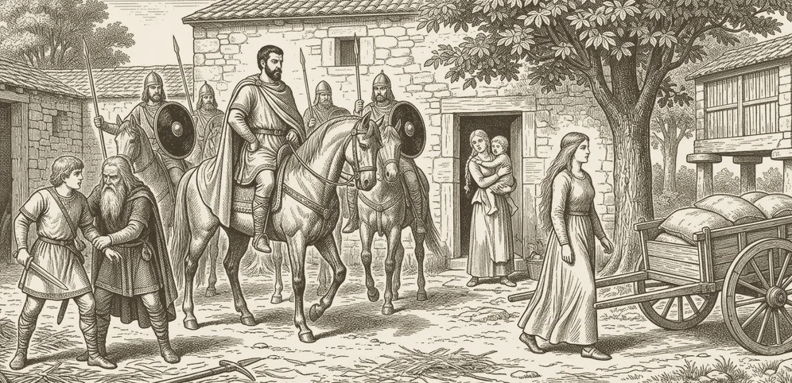
Teudo
Heremigario llegó a la Peña el día de San Juan, con cuarenta jinetes y un carro vacío.
Teudo lo vio venir desde la torre. Era media mañana y hacía calor. El camino del norte bajaba por el monte entre los brezos, y por él venía una columna de jinetes con los escudos negros a la espalda, despacio, levantando polvo. Delante, un hombre con una capa de púrpura, aunque hacía demasiado calor para llevar capa. Detrás, el carro, tirado por dos mulas, con un cochero y nada más.
Teudo tocó el cuerno dos veces, que quería decir que venía gente y que no era el enemigo. Luego bajó a abrir la puerta. Con la llave larga.
Heremigario no se bajó del caballo. Entró en el patio de la Peña montado, con sus jinetes detrás, y se quedó allí, mirando las casas redondas, la torre, el pozo, como mira uno una casa que piensa comprar. Teudo estaba de pie junto a la puerta. Fravita salió de su casa, despacio, apoyándose en el marco. Aquel invierno había estado enfermo, con unas toses que no se le quitaban, y le costaba andar.
—Fravita —dijo Heremigario—. Te veo viejo.
—Lo soy.
—El rey te manda saludos. —Heremigario se quitó los guantes, dedo por dedo—. Y me manda a mí. A cobrar.
Fravita no se movió.
—La Peña paga en otoño. Como siempre.
—La Peña pagaba en otoño. Ahora paga cuando el rey lo diga. —Heremigario sonrió—. El rey tiene muchos gastos. Los romanos de Bracara le piden dinero por lo de Asterio. Y los vándalos van a volver, dicen; hay que tener hombres. Hombres que cuestan.
Fravita le miró un buen rato.
—¿Cuánto?
—El grano que tengas en el almacén. La mitad. Y diez cabezas de ganado.
—Eso es lo que comemos en invierno.
—Pues comeréis menos. —Heremigario se volvió hacia Teudo—. Tú. El amigo del muerto. Abre el almacén.
Teudo miró a Fravita. Fravita asintió. Muy despacio.
Cargaron el carro toda la tarde. Teudo contaba los sacos que salían del almacén, con un palo de avellano, haciendo muescas, porque Ricila no estaba. Veinte sacos de centeno. Doce de cebada. Las mulas protestaban del peso. Los jinetes de Heremigario no ayudaban; miraban, sentados a la sombra de la muralla, comiendo queso de la Peña y bebiendo vino de la Peña.
Al atardecer, Heremigario dijo que se quedaban a dormir. Que su gente estaba cansada. Que al día siguiente bajarían al valle a ver las aldeas y a escoger las diez cabezas de ganado.
Esa noche, en la casa de Fravita, Teudo no se pudo estar quieto.
—Nos está robando —dijo—. A la cara. Esto no lo manda el rey.
—Puede que sí. Puede que no. —Fravita estaba sentado junto al fuego, con una manta, tosiendo—. Da lo mismo. No vamos a saberlo, y si lo supiéramos daría lo mismo también.
—Le podemos parar.
—¿Con qué? ¿Con quince hombres contra cuarenta? —Fravita escupió en el fuego—. Y aunque le paráramos. Aunque le matáramos aquí, en el patio, a él y a todos los suyos. ¿Qué pasa después?
Teudo no contestó.
—Te lo digo yo —siguió Fravita—. Viene el rey. Con quinientos. Y cuelga a todos los de la Peña de los castaños del camino. Y quema las aldeas. Y se lleva a las mujeres y a los niños del valle para venderlos en Bracara. A tu madre. A tu hermano. A la vándala. Por un carro de centeno.
Teudo se sentó. Se quedó mirando el fuego.
—Entonces no podemos hacer nada.
—Podemos contar los sacos —dijo Fravita—. Y acordarnos.
A la mañana siguiente bajaron al valle.
Heremigario fue por las aldeas mirando el ganado, eligiendo vacas, despacio, como si tuviera todo el tiempo del mundo. Llegó a la casa de labor a media mañana. El padre salió a la puerta del patio. La madre detrás. Asta en la puerta de la cocina, con el niño Wilja de la mano.
Y Brunhild, que venía del arroyo con un cesto de ropa lavada en la cadera.
Heremigario la miró. Teudo, que estaba detrás de él, a caballo, vio cómo la miraba. La había visto antes, aquella mirada. En la cima de los Nervasos, cuando Heremigario daba sus paseos de la tarde entre los que se morían de hambre.
—¿Y esta? —preguntó.
—La viuda de Odo —dijo el padre—. Vive en esta casa desde que se casó. Odo se crio en ella, como un hijo más.
—Odo. —Heremigario sonrió—. El de la guardia. El del escudo azul. Murió en el castro de los galaicos, ¿no? Lo recuerdo. Un buen muchacho.
Nadie contestó.
—La viuda de un hombre de la guardia del rey —dijo Heremigario, despacio, como si pensara en voz alta— está bajo la protección del rey. Es la costumbre. Si no tiene marido, la protege el rey. Y yo soy la sangre del rey.
—Tiene padre —dijo el padre—. Y nos tiene a nosotros.
—Su padre es un campesino que guarda cerdos en la aldea de al lado. Y tú no eres nada suyo. —Heremigario no dejaba de mirar a Brunhild—. Me la llevo. Para mi casa. En el Miño. Estará bien cuidada. Mejor que aquí, entre gallinas.
Brunhild no se movió. Tenía el cesto de ropa en la cadera, y la cara blanca, y los ojos muy abiertos.
Teudo se dio cuenta de que tenía la mano en la espada. No recordaba haberla puesto allí.
Fravita también se dio cuenta. Le cogió la muñeca. Fuerte. Con una mano que temblaba de la fiebre y que todavía apretaba como una tenaza.
—No —le dijo, muy bajo.
Esa noche, en la torre de la Peña, Teudo hizo la guardia aunque no le tocaba. No habría podido dormir.
Ricila subió de madrugada. Venía de la villa, a pie, con la tablilla de las cuentas bajo el brazo, sin saber nada; se lo habían contado los centinelas en la puerta. Subió la escalera de la torre despacio y se quedó de pie junto a su hermano, mirando también el camino del norte, que a la luz de la luna era una raya pálida entre los brezos.
—Voy a ir a buscarla —dijo Teudo.
Ricila tardó en contestar.
—¿Cuándo?
—No lo sé. Cuando Fravita se ponga bien. Cuando sepa dónde está la casa. Cuando sepa cómo.
—Te matará.
—Puede.
Ricila se quedó callado. Luego hizo una cosa que no hacía desde que eran niños, desde la orilla del Rin: le cogió a Teudo la manga de la túnica con dos dedos y la sujetó, sin tirar. Como si su hermano mayor se pudiera ir volando.
—Entonces voy contigo —dijo.
—Tú no sabes pelear.
—No. —Ricila miró el camino—. Pero sé escribir. Y tú no. Y para sacar a alguien de la casa de un noble a lo mejor no hace falta una espada. A lo mejor hace falta una carta.
Teudo le miró. No entendió lo que quería decir. Lo entendería un año después.
Se quedaron los dos en la torre hasta que se hizo de día, sin decir nada más, mirando el camino.
Asta
Brunhild dejó el cesto en el suelo, despacio, y fue hacia Asta.
No hacia Heremigario. Hacia Asta. Cruzó el patio entre los caballos sin mirar a nadie, y se agachó delante del niño Wilja, que tenía siete años y no entendía nada y se agarraba a la mano de Asta con las dos manos.
—Tú te quedas con la madre —le dijo—. Y con Asta. Y haces lo que te digan.
—¿Adónde vas?
—De viaje. Vuelvo pronto.
—¿Cuándo?
—Pronto.
Le dio un beso en la frente. Luego se levantó y miró a Asta. Tenía los ojos secos. Asta no había visto nunca unos ojos tan secos.
—Si no me lo llevo —le dijo Brunhild, muy bajo, en suevo, deprisa—, no se lo lleva. Si me resisto, se lo lleva a él también. Me lo ha dicho con los ojos. ¿Lo has visto?
Asta no lo había visto. Pero asintió.
—Cuídamelo.
—Sí.
—Enséñale a leer.
—Sí.
Brunhild se quitó del cuello el amuleto de hueso con las runas, el de su abuela, el que había llevado todo el tiempo que los hombres estuvieron en los Nervasos. Se lo puso a Asta en la mano y le cerró los dedos encima.
Luego se volvió, cruzó el patio otra vez y se paró delante del caballo de Heremigario. Con la cabeza alta.
—Vamos —dijo.
Heremigario se echó a reír.
Se la llevaron en el carro, encima de los sacos de centeno, entre las mulas. Brunhild no lloró. No se volvió. El niño Wilja sí lloró, cuando entendió por fin que el carro no paraba, y echó a correr detrás de él por el camino del arroyo, gritando, y Asta corrió detrás del niño y lo alcanzó junto al primer castaño y lo cogió en brazos, y el niño pataleó y le pegó y le mordió en el hombro, y ella no lo soltó. Se quedó allí, abrazándolo, en mitad del camino, mientras el polvo de los caballos se iba alejando hacia el norte.
Notó que estaba temblando. No de miedo. Era otra cosa. Una cosa caliente que le subía desde el estómago y le llenaba el pecho y la cabeza y que no la dejaba respirar. No la había sentido nunca. No con los visigodos en la granja, porque entonces era pequeña y solo había miedo. No en la llanura de Emerita, porque entonces había fiebre. Aquella cosa era nueva, y tenía nombre, y el nombre era odio.
Se quedó con el niño en brazos hasta que el niño dejó de llorar.
Esa noche, en la casa de labor, nadie cenó. La madre puso la olla en la mesa y nadie la tocó. El padre se sentó en su banco junto al fuego y se quedó mirando las llamas, sin decir nada, con las manos grandes colgándole entre las rodillas. Las manos con las que había clavado la estaca del primer cercado del valle, con las que había enterrado al buey Viejo. Se las miraba como si no fueran suyas.
—Tenía que haber hecho algo —dijo al fin.
—No había nada que hacer —dijo la madre.
—Tenía que haber hecho algo igual.
La madre se sentó a su lado. Le cogió una de las manos.
Ricila no estaba. Había subido a la Peña con Teudo. No volvieron esa noche.
Wilja llegó ya de noche, desde la aldea de al lado, sin aliento, con la horca en la mano, porque se lo había contado un pastor. Era el padre de Brunhild. Entró en la cocina, miró a todos, vio el sitio vacío junto a la artesa donde amasaba su hija, y no dijo nada. Dejó la horca contra la pared. Se sentó en el banco, al otro lado del padre. Y los dos viejos se quedaron allí, uno a cada lado del fuego, con las manos colgando, hasta que se apagó.
Asta acostó al niño Wilja en su cama, en el desván, porque el niño no quería dormir solo en la de su madre. Se tumbó a su lado. El niño tardó mucho en dormirse. Le preguntó tres veces cuándo volvía su madre. Asta le dijo tres veces que pronto.
Cuando se durmió, Asta se quedó despierta, mirando las vigas del techo en la oscuridad, con el amuleto de hueso de Brunhild apretado en la mano. Pensó en el higo de Silvano, que tenía en la bolsa de tela. En la tablilla de Félix. En la escama de hierro, que ahora llevaba Arsak al cuello. En todas las cosas pequeñas que la gente le había ido dando por el camino, como se dan las cosas a alguien que se queda cuando los demás se van.
Pensó: siempre me toca quedarme. Siempre se van los otros.
Y pensó, por primera vez, en Heremigario muerto. Lo pensó con mucho detalle. Con un cuchillo de cocina. Con el cuchillo del mango de hueso del abuelo de Ricila.
Le dio miedo pensarlo. Le dio más miedo que no le diera vergüenza.
Por la mañana bajó al huerto a mirar el olivo. Tenía ya once hojas, plateadas por debajo, y la cinta azul de Ricila descolorida por el sol. Asta se arrodilló delante. No rezó, porque no sabía. Le contó al olivo lo que había pasado. En vándalo. En voz baja. Como le contaba su madre las cosas a las cabras, en la granja, cuando creía que nadie la oía.
Luego le ató el amuleto de Brunhild a la rama, junto a la cinta. Para que lo cuidara.
Desde aquel día, el niño Wilja esperó a su madre en el castaño del camino.
Todas las tardes. Cuando el sol empezaba a bajar y las vacas volvían solas al establo, el niño se escapaba de la cocina, iba corriendo por el camino del arroyo hasta el primer castaño, el grande, el que tenía una raíz levantada en forma de banco, y se sentaba allí, con las piernas colgando, mirando hacia el norte. Hasta que se hacía de noche. Luego volvía, sin decir nada, y cenaba.
La madre quiso prohibírselo la primera semana. Asta le dijo que no.
—Déjale —dijo—. Yo también esperaba.
La madre la miró y no dijo nada más.
Así que Asta empezó a ir con él. No a buscarle: a esperar con él. Se sentaba en la raíz del castaño, a su lado, con la rueca, y hilaba mientras el niño miraba el camino. Al principio no hablaban. Luego el niño empezó a preguntar.
—¿Tú también esperabas a tu madre?
—A mi padre. Cuando iba al mercado de Hispalis.
—¿Y volvía?
—Siempre. Me traía cosas. Unos pendientes una vez. Con una gota de cristal azul.
—¿Dónde están?
Asta se quedó con el huso parado. Los pendientes de Guntario. Los había llevado puestos la mañana de los godos. No sabía dónde estaban. No se acordaba de habérselos quitado nunca.
—Los perdí —dijo.
El niño lo pensó.
—Mi madre me va a traer algo —dijo al fin—. Cuando vuelva. Del Miño. ¿Qué hay en el Miño?
—Un río. Grande. Con truchas.
—Me va a traer una trucha.
Asta se rio. El niño también.
Otro día le enseñó a contar con piedrecitas, como contaba la madre los días que faltaban. Una piedra por cada tarde que pasaba en el castaño. Las ponían en fila en la raíz levantada. Cuando llegaron a treinta, el niño quiso saber cuántas faltaban. Asta no supo qué decirle. Le dijo que no se sabía, que por eso se contaban, para saber cuántas habían sido cuando ella volviera.
Otro día le trajo la tablilla de cera de su nombre, la de las cuatro letras, y le enseñó cuál era la de su madre: la B, la de la barriga grande y la otra barriga encima. El niño la dibujó en el polvo del camino con un palo, torcida, cien veces, hasta que le salió. Luego dibujó una M, que era la de madre en latín, porque Asta se lo explicó así, y le pareció que eran dos montes. Luego quiso escribir trucha. Asta no sabía cómo se escribía trucha.
Una tarde de otoño, cuando ya llevaban cincuenta y tantas piedras, el niño se quedó dormido en el castaño, con la cabeza en las rodillas de Asta, antes de que se hiciera de noche. Asta no se movió. Se quedó allí, con la rueca quieta, mirando el camino del norte, que se iba poniendo azul y luego gris, por el niño y por ella.
Pensó que había aprendido a esperar en un carro, en la Galia, cuando tenía la edad de aquel niño. Que su madre le decía que mirara el camino, que su padre ya venía, y que su padre venía siempre, cojeando, con la lanza al hombro. Pensó que aquello era una cosa que se pasaba de unos niños a otros como se pasan las canciones: esperar en un camino a alguien que no viene.
Arsak la encontró así, cuando bajó de la Peña. Cogió al niño en brazos sin despertarle y lo llevó a la casa. Asta fue detrás con la rueca y las piedras en el delantal.
No le contó a nadie que, antes de levantarse, había puesto una piedra más en la fila. Por ella.
Arsak
Arsak no estaba. Esa era la cosa que no se perdonó.
Estaba en Lucus, a cuatro días al norte, vendiendo los primeros potros de las yeguas de la Peña en la feria de primavera. Fravita le había mandado con Hunila y con dos muchachos, con seis potros de dos años, a ver si los compraban los hombres del rey. Los compraron. Le pagaron bien. Volvió al valle contento, con una bolsa de plata atada al cinturón, con regalos para todos: un cuchillo nuevo para Teudo, un peine de hueso para la madre, una tablilla nueva para Ricila, una cinta roja para Asta, y un caballito de madera tallado para el niño Wilja, que le había comprado a un viejo en la feria y que se parecía mucho a otro caballito que había visto una vez, hacía muchos años, en la orilla helada de un río.
Llegó a la casa de labor tres días después de que se llevaran a Brunhild.
Se lo contó Asta, en el patio, antes de que se bajara del caballo. Se lo contó entero, de pie, sin llorar, con la voz plana, como se cuenta una cosa que ya se ha contado muchas veces por dentro. Arsak la escuchó montado. Cuando terminó, se quedó un rato quieto. Luego se bajó del caballo, despacio, y se fue al establo, y cerró la puerta.
Asta no le siguió.
Estuvo en el establo hasta la noche. No hizo nada. Se sentó en la paja, junto a Niebla, con la espalda contra la pared, y se quedó allí. Pensó en lo que habría pasado si hubiera estado. Con su espada, con el arco de olmo, con los treinta años de cosas que sabía hacer con las dos. Habría matado a Heremigario en el patio. Probablemente. Y luego habría muerto él. Seguro. Y luego habrían colgado al padre de un castaño y se habrían llevado a la madre y a Asta y al niño para venderlos en Bracara.
Fravita tenía razón. Lo sabía. Lo había sabido siempre: no hay nada que hacer contra los que mandan cuando los que mandan son de tu lado.
En la estepa, eso no pasaba. En la estepa había jefes, y los jefes eran duros, y a veces injustos. Pero un jefe alano que se llevaba a la viuda de uno de sus guerreros contra su voluntad no duraba una luna. Los demás guerreros lo esperaban una noche fuera de las tiendas, y por la mañana había otro jefe. Era la ley de la estepa, que no estaba escrita en ningún sitio y que todo el mundo conocía.
Pero aquello no era la estepa. Aquello era un reino. Con un rey, y una sangre del rey, y unos castaños en los caminos para colgar a los que se olvidaban de que era un reino.
A la mañana siguiente, Arsak subió a la Peña.
Fravita estaba en la cama. La fiebre de aquel invierno había vuelto, peor, después de la noche en que se llevaron a Brunhild, y ya no se levantaba. Teudo le cuidaba. Teudo tenía los ojos rojos de no dormir y la cara de piedra, la misma cara que había puesto Fravita fuera de la tienda del rey, en los Nervasos.
Arsak se sentó al lado de la cama. Fravita abrió los ojos y le miró.
—Alano —dijo—. Has vendido los potros.
—Seis. A los hombres del rey. Bien pagados.
—Bien. —Fravita tosió—. Guarda la plata. Hará falta.
Estuvieron un rato callados.
—Traigo noticias de Lucus —dijo Arsak—. Del sur.
—Cuenta.
—Los romanos han mandado un ejército a la Bética. Contra los vándalos. Lo mandaba un general que se llama Castino. Con muchos soldados romanos. Y con godos, de los de Tolosa, como aliados.
Fravita le miró.
—¿Y?
—Y lo han derrotado. Los vándalos. Gunderico. Cerca de Hispalis. Dicen que los godos le dejaron solo en mitad de la batalla. Que se dieron la vuelta y se fueron. Que Castino tuvo que huir a Tarraco con lo que le quedaba.
Fravita se quedó pensando. Luego se echó a reír, flojo, con la risa que se le rompía en tos.
—Los godos —dijo—. Siempre los godos. —Se secó la boca—. ¿Sabes lo que quiere decir eso, alano?
—Que los vándalos son fuertes otra vez.
—Que los vándalos son los señores de la Bética. Y que Roma no puede con ellos. Y que, un día, Gunderico se va a acordar de que hay un rey suevo en el norte que le cerró el paso en los Nervasos. —Fravita cerró los ojos—. Y ese día, Hermerico va a necesitar a todos sus hombres. A los buenos. Y a los que no lo son. Y no va a castigar a ninguno.
Arsak no dijo nada. Entendió lo que quería decir. Que nadie iba a castigar a Heremigario por lo de Brunhild. Ni ahora ni nunca.
Cuando bajó de la Peña, ya de noche, pasó por el huerto de la casa de labor. A la luz de la luna se veía el olivo pequeño, con su cerco de piedras, y algo atado a una rama que brillaba un poco.
Se acercó. Era el amuleto de hueso de Brunhild, con sus runas, junto a una cinta azul descolorida.
Arsak sacó de la bolsa la cinta roja que había comprado en Lucus para Asta. La miró un rato. Luego la ató también a la rama del olivo, junto a las otras dos cosas. Para que estuvieran juntas.
En el desván, el caballito de madera esperaba encima de la cama donde dormía el niño Wilja abrazado a Asta.
El vado
Bracara, el valle del Miño y el valle del Duero – 423
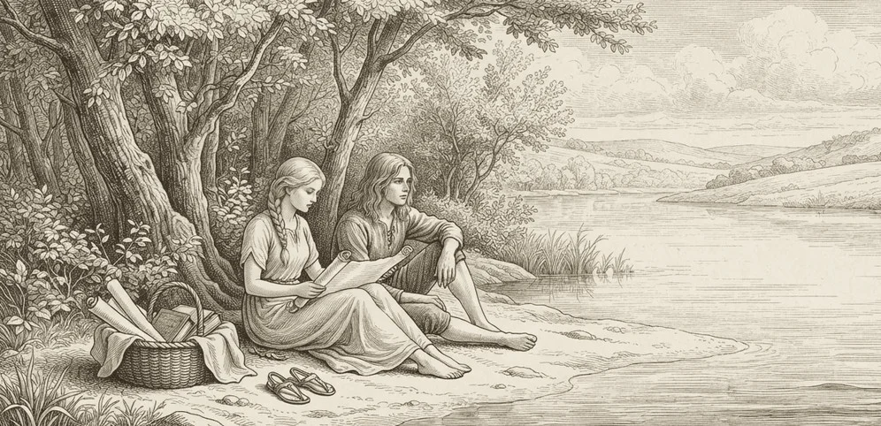
Teudo
La carta la escribió Ricila en tres noches, en latín, a la luz de la lámpara de aceite de la cocina, y la tachó y la volvió a escribir once veces.
No era una carta como las que Teudo se imaginaba. No pedía nada. Contaba. Contaba quién era Odo, hijo de una viuda que perdió al marido en los Pirineos, criado en la casa de labor de Guntmar como un hijo más, de la guardia del rey Hermerico desde los diecisiete años, el del escudo azul, muerto en el asalto del castro de los galaicos en el año del Señor de 416, delante del rey, con una piedra en la cabeza. Contaba quién era Brunhild, hija mayor de Wilja, de la aldea de al lado, casada con Odo delante de testigos en el patio de la casa de labor, madre de un hijo de Odo que tenía ahora ocho años y que se llamaba Wilja. Contaba que el padre de Brunhild estaba vivo, y que la casa donde Odo se había criado seguía en pie. Y contaba, sin adjetivos, lo que había pasado el día de San Juan del año anterior en ese mismo patio.
Al final ponía lo que decía la costumbre. Que la viuda de un hombre libre vuelve a la protección de su propia familia, o de la de su marido, si alguna vive. Que solo pasa a la del rey si no queda nadie. Y que si un noble se la ha llevado, la familia puede pedirla, pagando el precio de la protección, que se llama mundio. Ricila no se lo había inventado. Se lo había preguntado a los viejos de la aldea, uno por uno, durante el invierno. Y a Materno, que conocía las leyes de los romanos y algo de las de los godos. Y al cura de la villa, que conocía las de la Iglesia.
—El rey no sabe leer —le dijo Teudo cuando Ricila se la leyó, traduciendo al suevo.
—El rey no. Su notario sí. Es un romano de Bracara, se llama Juliano, lo dijo Materno. —Ricila enrolló la carta y la ató con un cordón—. Las cosas dichas se olvidan. Las escritas se leen delante de otros. Y si el rey hace como que no ha oído una cosa escrita delante de sus nobles, los nobles saben que mañana puede hacer lo mismo con ellos.
Teudo le miró mucho rato.
—¿Dónde has aprendido eso?
—Leyendo a Cicerón. —Ricila sonrió apenas—. Era un abogado. Le cortaron la cabeza.
Fueron a Bracara en abril, Teudo, Ricila y Wilja, el padre de Brunhild, que quiso ir aunque tenía casi sesenta años y le dolían las rodillas en el caballo. Llevaban la carta y una bolsa de plata. La plata la había puesto Arsak. Toda la de los seis potros de Lucus. No la quiso contar cuando se la dio a Teudo; se la puso en la mano y se fue al establo.
Bracara era una ciudad romana, la más grande que Teudo había visto, más que Lucus, con murallas de piedra, calles empedradas, termas que todavía echaban humo, y una iglesia grande con un tejado de tejas rojas. El rey vivía en lo que había sido el palacio del gobernador romano, junto al foro. Tardaron nueve días en que los recibiera. Durmieron en un establo de las afueras, entre mulas, gastando la plata en comida.
Fueron nueve días raros. Wilja no salía del establo más que para ir a la iglesia, donde se sentaba al fondo, en un banco, sin entender nada de la misa, mirando las pinturas de las paredes: un hombre con barba que andaba sobre el agua, unos peces, un pastor con una oveja al hombro. Decía que le gustaba el pastor. Que se parecía a él de joven.
Teudo daba vueltas por la ciudad como un perro atado. Nunca había visto tanta gente junta que no fuera un ejército. Mercaderes griegos con barcos en el río. Esclavos que llevaban sillas con gente dentro. Mujeres romanas con la cara pintada que le miraban la cicatriz del brazo y se reían. Un mercado donde se vendía de todo: pescado del mar, que Teudo no había comido nunca, aceite de la Bética en ánforas, que ya casi no llegaba porque la Bética era de los vándalos, telas de colores, cuchillos, esclavos. Esclavos galaicos, sobre todo, y algún vándalo, atados en fila por el cuello, con un cartel de madera colgado que decía de dónde eran y lo que sabían hacer. Teudo no podía mirarlos. Ricila sí. Les leía los carteles, uno por uno, en voz baja.
Ricila estaba en su sitio. Lo notó Teudo enseguida. En Bracara, su hermano pequeño, el que no sabía montar y lloraba por los muertos, andaba por las calles como si las hubiera hecho él. Había vivido allí un invierno, años atrás, en la escuela del diácono primo de Materno, y se acordaba de todo. Hablaba latín con los mercaderes y le daban mejor precio. Entraba en las tiendas de libros, que había dos, y se quedaba allí horas, tocando los rollos con cuidado, sin comprar nada porque no tenían plata para eso. El cuarto día se metió en la iglesia a hablar con un cura joven, y el quinto el cura le llevó a ver a Juliano, el notario, en su casa, junto al foro. Ricila no le contó a Teudo de qué hablaron. Pero el sexto día el notario mandó decir al establo que el rey los recibiría al cabo de cuatro días.
—¿Qué le dijiste? —le preguntó Teudo.
—Nada. Le enseñé la carta. —Ricila se encogió de hombros—. Me dijo que tenía faltas. Y que estaba bien escrita.
El décimo día los hicieron pasar a una sala grande, con columnas pintadas de rojo y suelo de mosaico, donde había mucha gente: nobles suevos con sus capas, romanos con túnicas largas, curas, un obispo. Hermerico estaba sentado al fondo, en una silla alta. Estaba muy viejo. Más que en los Nervasos. Tenía los ojos cansados y las manos le temblaban encima de las rodillas.
A su lado, de pie, con su capa de púrpura, estaba Heremigario.
Teudo se puso blanco. Ricila le cogió la manga con dos dedos.
Juliano, el notario, un hombre pequeño y calvo con los dedos manchados de tinta, cogió la carta, la desató y la leyó en voz alta. En latín primero, y luego en suevo, despacio, para que la entendieran todos. Tardó un buen rato. Mientras leía, la sala se fue quedando en silencio. Los nobles suevos dejaron de hablar entre ellos. El obispo se inclinó hacia delante.
Cuando Juliano terminó, nadie dijo nada.
Heremigario se echó a reír.
—Un papel —dijo—. Unos campesinos del Duero traen un papel.
Nadie se rio con él.
Hermerico miró a Heremigario. Luego miró a Wilja, que estaba de pie en mitad de la sala, con su túnica de lana buena, la de las fiestas, y las manos grandes colgándole a los lados, mirando al suelo. Luego miró a la carta.
—¿Tú eres el padre de la viuda? —preguntó el rey.
—Sí, señor.
—Yo vi morir a su marido. —Hermerico se frotó la cara—. Era un buen hombre de mi guardia. En el castro de los galaicos se puso delante de mí con el escudo. La piedra que le mató era para mí. ¿Lo sabías?
—No, señor. No lo contaba.
—No era de los que cuentan. —El rey se quedó un rato callado. Luego miró a Heremigario, sin volverse del todo—. La viuda vuelve a su familia. Que paguen el mundio. Que se haga hoy.
Heremigario abrió la boca.
—Hoy —dijo Hermerico.
Y eso fue todo. No dijo nada más. No castigó a nadie. No le pidió cuentas a Heremigario de nada, ni de Brunhild ni del grano de la Peña ni de las diez vacas. Pasó al asunto siguiente, que era una disputa de lindes entre dos nobles de Lucus.
Fueron a buscarla al Miño tres días después, con dos hombres del rey que les dio Juliano. La casa de Heremigario era una villa romana vieja, arreglada, con una torre nueva y muchos perros. Brunhild salió a la puerta con un hatillo. Estaba muy delgada. Llevaba el pelo cortado, muy corto, como se les corta a las esclavas.
Miró a Teudo. Miró a su padre. No dijo nada.
Subió al caballo que le habían traído, detrás de su padre, y se agarró a su cintura. Y no habló en los cinco días que duró el camino de vuelta. Ni una palabra.
Teudo iba detrás. Llevaba la mano en la espada todo el camino. No supo de quién se defendía.
La tercera noche del camino de vuelta durmieron en una mansio vieja de la calzada, una casa de postas de los romanos, medio en ruinas, donde ya no había caballos de refresco ni nadie que cobrara, solo un matrimonio de viejos galaicos que vivían en dos habitaciones del fondo y daban de cenar a los viajeros a cambio de lo que tuvieran.
Les dieron un caldo de berzas y castañas, y pan de bellota, y les dejaron dormir en la sala grande, la que había sido de los viajeros importantes, con un suelo de mosaico roto en el que todavía se veía un hombre con barba montado en un pez. Ricila se pasó la cena mirando el mosaico. Wilja se durmió enseguida, encima de su manta, con la boca abierta, roncando como un buey.
Brunhild no se acostó. Se sentó en un rincón, contra la pared, con las rodillas abrazadas y la manta por encima de los hombros, y se quedó mirando la puerta. Como si esperara que alguien entrara por ella.
Teudo se sentó en el otro rincón, enfrente, con la espada en las rodillas. No dijo nada. No sabía qué decir. No se lo había sabido en tres días.
Pasó mucho rato. El fuego se fue apagando. Fuera, en la calzada, ladraban unos perros lejos, y luego se callaron.
—Duerme —dijo Teudo al fin, muy bajo, para no despertar a los otros—. Yo vigilo la puerta.
Brunhild le miró. En la luz del fuego tenía la cara muy delgada, con los huesos marcados, y el pelo corto de esclava le hacía parecer más joven, casi una niña, como cuando jugaba en el patio de la casa de labor con sus hermanas y él la tiraba de las trenzas.
—¿Toda la noche? —preguntó. Era la primera vez que hablaba desde el Miño.
—Toda la noche.
—¿Y mañana?
—Mañana también.
Brunhild se quedó mirándole. Luego miró la puerta. Luego, muy despacio, se tumbó en el suelo, en su rincón, de lado, de cara a la pared, envuelta en la manta. Teudo vio que temblaba. No de frío.
Al cabo de un rato dejó de temblar. Al cabo de otro rato, Teudo oyó que respiraba despacio, hondo, con un silbido pequeño, como respiran los que duermen de verdad.
No se movió en toda la noche. Le dolió la espalda contra la pared, se le durmieron las piernas, se le cerraban los ojos y se los abría a la fuerza, mordiéndose el labio. Miraba la puerta. La puerta no se abrió. Por la mañana, cuando entró la primera luz gris por el agujero del tejado, Brunhild seguía dormida, con la cara relajada por primera vez, la boca un poco abierta, una mano debajo de la mejilla.
La vieja galaica entró a encender el fuego. Vio a Teudo sentado en su rincón con la espada en las rodillas y los ojos rojos, y a la mujer dormida enfrente. Se quedó un momento mirándolos a los dos. Luego encendió el fuego sin hacer ruido y salió de puntillas.
Cuando volvieron a ponerse en camino, Brunhild seguía sin hablar. Pero aquella mañana, al montar en el caballo detrás de su padre, se volvió un momento y buscó a Teudo con los ojos, y cuando lo encontró, asintió. Una vez. Pequeño.
Teudo no se lo contó a nadie. Ni a Ricila.
Asta
Brunhild volvió, pero no volvió.
Eso lo dijo la madre, la primera noche, en la cocina, en voz muy baja, mientras Brunhild dormía en el desván abrazada al niño Wilja. Que había vuelto el cuerpo. Que lo demás se había quedado en el Miño, y que no se sabía si iba a volver.
Asta la cuidó como se cuida a un enfermo, aunque Brunhild no estaba enferma. Le subía la comida. Le lavaba el pelo corto. Le hablaba de cosas pequeñas: de las gallinas, de la potra Estrella, de lo que había aprendido a leer el niño Wilja aquel año, que ya sabía su nombre y el de su madre. Brunhild escuchaba sin contestar. A veces miraba a Asta como si no supiera quién era.
Un día de junio, Asta la llevó al huerto. Al rincón del sur. Al olivo.
Tenía ya un palmo más que el año anterior, y ramas nuevas, y de una de las ramas colgaban tres cosas: una cinta azul, una cinta roja y un amuleto de hueso con runas.
Brunhild lo vio. Se acercó. Tocó el amuleto con un dedo.
Luego se sentó en el suelo, delante del olivo, en la tierra, y se echó a llorar. Por primera vez desde el Miño. Lloró mucho rato, con la cara entre las manos, sin hacer ruido, sacudiéndose entera. Asta se sentó a su lado y no le dijo nada. Le puso una mano en la espalda, como le ponía la madre a ella.
Cuando terminó, Brunhild se secó la cara con el delantal. Desató el amuleto de la rama. Se lo volvió a colgar al cuello.
—Gracias —dijo. La primera palabra.
No dijo nada más ese día. Pero al día siguiente bajó a la cocina a amasar con la madre.
Fue aquel verano cuando Ricila le habló a Asta en el vado.
El vado de abajo, el de las truchas, el que habían cruzado una noche de luna con un vándalo herido. En agosto el agua estaba baja y caliente, y en la orilla había una playa de arena entre los alisos, y Ricila había cogido la costumbre de bajar allí por las tardes, después de las cuentas de la Peña, a leer. Se llevaba los libros de Materno en un cesto, envueltos en un paño para que no se mojaran. Asta empezó a bajar también. Al principio para que le leyera. Luego para leer ella. Se sentaban en la arena, a la sombra, cada uno con un libro, y leían en voz alta por turnos, y a veces no leían y se quedaban mirando el agua.
Aquella tarde leían la Eneida. La parte de Dido, la reina de Cartago, la que se enamora de Eneas y Eneas la deja y ella se mata. Asta la leía despacio, en latín, tropezando con las palabras, y Ricila le corregía.
Cuando llegó a la parte en que Dido se muere, Asta cerró el libro.
—No me gusta —dijo—. Eneas es un cobarde. Se va porque se lo mandan los dioses.
—Se va porque tiene que fundar Roma.
—Pues que la funde otro.
Ricila se rio. Luego se quedó callado. Mucho rato. Asta le miró. Estaba colorado hasta las orejas, como el día del olivo, y miraba el agua, y movía los dedos encima del libro, nervioso, como si estuviera contando.
—Yo no me iría —dijo al fin.
Asta no contestó.
—Aunque me lo mandaran los dioses. —Ricila seguía mirando el agua—. Aunque me lo mandara el rey. Aunque tuviera que fundar Roma. No me iría.
—Ricila.
—Te quiero desde el primer día —dijo él, deprisa, como se dice una cosa que se ha ensayado mucho, sin mirarla—. Desde que te vi en la cama, con la fiebre, en el desván. Tenías catorce años. Yo tenía diecisiete. No te quería así, entonces. Te quería como a una hermana. Luego no. Luego te quise de otra manera. No sé cuándo. No me di cuenta. Me di cuenta en el olivo, cuando te reíste. —Respiró hondo—. No te lo digo para que digas nada. Te lo digo porque si no te lo digo me voy a morir. Como Dido.
Asta se quedó mirándole. Él seguía mirando el agua, con las orejas rojas.
Ella pensó en muchas cosas. En la mano de Ricila en la oscuridad, la noche del buhonero. En la cinta azul. En las once tachaduras de la carta. En el muchacho de diecisiete años que se había sentado al lado de su cama, en el desván, a leerle la historia de un hombre que llevaba a su padre a cuestas.
Cogió el libro. Lo abrió por donde estaba Dido. Le puso el dedo encima.
—Esta se mató porque se fue él —dijo—. Tú no te vayas. Y yo no me mato.
Ricila la miró por fin.
Arsak
Arsak lo supo antes que nadie, y lo supo sin que se lo dijeran.
Lo supo por cómo volvieron del vado aquella tarde: separados, uno detrás de otro, sin hablar, como dos chicos que han hecho algo que nadie tiene que saber. Ricila primero, con el cesto de libros, deprisa, sin mirar a nadie, con una cara que no le había visto nunca. Asta después, despacio, descalza, con las sandalias en la mano y el pelo suelto.
Arsak estaba en la valla del prado de las yeguas. Ella pasó a su lado. Le miró. Arsak le sostuvo la mirada un momento. Y ella se puso roja, y bajó la cabeza, y siguió andando.
Arsak se quedó en la valla hasta que se hizo de noche.
No sintió celos. Lo pensó mucho, después, para estar seguro, y estaba seguro: no eran celos. Asta no era eso para él, ni lo había sido nunca, ni podía serlo. Asta era la niña de la cuna de mimbre, la de los cuarenta días de fiebre, la del pan de la granja que olía a ceniza. Lo que sintió era otra cosa. Algo que había sentido una vez, hacía mucho, en la estepa, de muy niño, el día en que su padre le dio el primer caballo para él solo, y le dejó irse a cabalgar por la llanura, lejos, hasta que no le veía. Y él se volvió, desde muy lejos, y vio a su padre de pie junto a la tienda, pequeño, quieto, mirando. Sin llamarle.
Así se sentía ahora. Como su padre junto a la tienda.
Y le dolía. Le dolía más de lo que hubiera querido. Porque Saurmag, su padre, tenía más hijos, y una mujer, y una tribu. Y él no tenía más que a ella.
Los días siguientes se apartó un poco. No mucho. No lo notó nadie, salvo la madre, que lo notaba todo. Pasaba más tiempo con las yeguas. Subía más a la Peña. Se quedaba a dormir allí, en la casa redonda pequeña del fondo, la de la muralla del oeste, que era la suya y la de Asta, y que estaba vacía casi siempre porque Asta dormía en la casa de labor con Brunhild y el niño. Se pasaba las tardes con Fravita, que no se levantaba ya de la cama, contándole cosas de la estepa, de caballos, de los ríos de allí, que eran tan anchos que no se veía la otra orilla.
Una de esas tardes Fravita le cortó.
—Te estás escondiendo, alano.
Arsak no contestó.
—Te estás escondiendo de esos dos. —Fravita tosió—. Lo sabe todo el valle. Lo sabe hasta la perra. —Le miró con los ojos hundidos de la fiebre—. ¿Te parece mal?
—No.
—¿Entonces?
Arsak tardó en contestar.
—En la estepa —dijo—, cuando un hombre se lleva a la hija de otro, se la lleva a su tienda. Lejos. A otra tribu, a veces. Y el padre se queda. —Miró por la ventana, al valle—. Me estoy acostumbrando a quedarme.
Fravita se quedó callado. Luego hizo una cosa que Arsak no esperaba: se echó a reír.
—Alano tonto —dijo—. ¿Adónde se la va a llevar? ¿Al desván? —Se rio hasta que le dio la tos—. Ricila no se va a ninguna parte. No sabe ni montar a caballo. Se la va a llevar a cien pasos de tu casa, a la otra punta del patio. Y vas a tener que verlos todos los días. Y cuidar de los críos cuando lleguen. Y enseñarles a montar, porque su padre no sabe.
Arsak le miró.
—Hazte a la idea —dijo Fravita, y cerró los ojos—. No te libras.
Arsak se quedó un buen rato sentado al lado de la cama, hasta que Fravita se durmió. Luego bajó al valle. Era de noche. Pasó por la casa de labor. En la cocina había luz. Se asomó por la ventana sin hacer ruido.
Estaban todos. El padre en su banco. La madre en la lumbre. Brunhild amasando, con el pelo corto que empezaba a crecer. El niño Wilja dormido encima de la mesa, con el caballito de madera en la mano. Teudo afilando su cuchillo nuevo. Y Ricila y Asta en un rincón, con un libro abierto entre los dos, sin leer.
En la mesa, en su sitio, junto al del padre, estaba el cuenco de castaño de Arsak. Vacío. Esperando.
Arsak entró.
La boda
El valle del Duero – primavera de 424
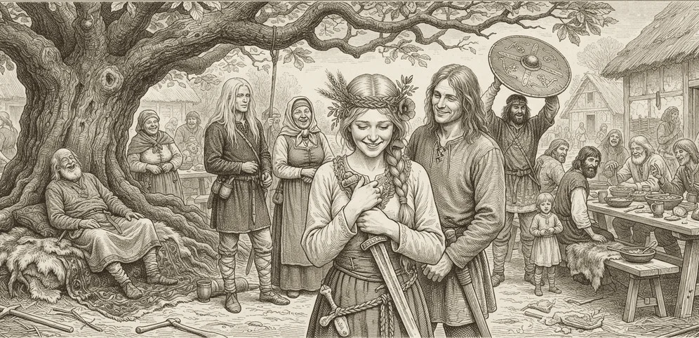
Teudo
El escudo azul llevaba ocho años colgado en la pared de la cocina, encima del banco del padre, y para la boda lo bajaron entre Teudo y el niño Wilja.
Era un escudo redondo, de tablas de tilo, forrado de cuero y pintado de azul, con un umbo de hierro en el centro que Teudo frotaba con arena dos veces al año para que no se oxidara. Tenía en el borde de abajo una mella, de una piedra galaica, la que había matado a Odo. Nadie la había arreglado. El padre no quiso. Dijo que era de Odo también, la mella.
Ricila lo había rescatado del castro de los galaicos a los quince años, subiendo solo con el cura Paulo, y lo había traído a casa en brazos. Desde entonces era del niño Wilja. Iba a ser suyo cuando tuviera dieciséis años y entrara en la guardia, si entraba. El niño tenía ahora nueve. Le llegaba al pecho.
—Lo llevo yo —dijo el niño.
—Pesa mucho.
—Lo llevo yo.
Lo llevó él hasta la puerta del patio. Luego Teudo se lo cogió, porque era la costumbre: en las bodas de los suevos, el hermano mayor del novio, o su amigo más querido si no tiene hermanos, sostiene el escudo detrás de él, mientras se dicen las palabras, para que el que se casa tenga la espalda cubierta. Teudo lo había hecho en la boda de Odo, diez años antes, en aquel mismo patio, cuando tenía dieciocho años y Ricila trece. Ahora lo hacía por Ricila.
No había dormido. Se había pasado la noche sentado en el banco de piedra del patio, pensando en cosas que no se pensaban en noches así. En el Rin, el hielo, el caballito de madera que su hermano pequeño había vuelto a buscar corriendo mientras se hundía todo. En Lupo, el niño romano que se murió de peste. En Gaiso, que contaba historias. En Odo. En todos los que no iban a estar.
Y en Fravita, que sí iba a estar. Fravita bajó de la Peña aquella mañana en unas parihuelas de ramas, llevadas por cuatro muchachos de la guardia, con Hunila delante abriendo camino. No se levantaba de la cama desde el otoño. Tenía la cara amarilla y las manos como sarmientos, y había perdido casi todo el pelo. Pero había querido bajar. Los muchachos lo dejaron en el patio, a la sombra del castaño grande, sentado sobre unas pieles, con la perra Loba a los pies, y desde allí lo vio todo.
—¿Quién va a sostener el escudo en la tuya? —le preguntó Fravita a Teudo, cuando se acercó a ponerle una manta en las piernas.
Teudo se encogió de hombros.
—No me voy a casar.
—Eso decía yo. —Fravita casi sonrió—. A tu edad. Luego tampoco me casé. —Le miró—. No hagas como yo, Teudo.
Teudo no contestó. Miró hacia la puerta de la cocina, donde estaba Brunhild ayudando a la madre con las fuentes, con el pelo corto, que le había crecido hasta la nuca, recogido con una cinta. Brunhild le vio mirar. Bajó los ojos.
Fravita lo vio todo.
—Ya —dijo, y se rio, y le dio la tos.
La boda fue a mediodía. Ricila se puso delante del castaño grande, con la túnica nueva de lino que le había cosido la madre, teñida de azul con glasto, y el pelo largo suelto, sin nudo, como lo había llevado siempre aunque los muchachos de la Peña se rieran de él. Teudo detrás, con el escudo azul de Odo levantado, cubriéndole la espalda. Estaba toda la gente del valle. La de las aldeas de los suevos, la de las aldeas de los galaicos, que miraban desde un lado. Materno, muy viejo, con su mujer, sentados en sillas que habían traído de la villa en un carro. Teodoro, el físico, con su barba blanca. Los muchachos de la Peña. Wilja el grande, con sus hijas.
Teudo sostuvo el escudo mientras se decían las palabras. Le pesaba más que en la boda de Odo. No le temblaron los brazos.
Cuando Ricila se volvió, al terminar, y le miró por encima del hombro, con una cara que Teudo no le había visto desde que eran niños, desde antes del Rin, Teudo bajó el escudo y le dio un abrazo, con el escudo en medio, torpe, que les hizo daño a los dos.
—Ya está —le dijo Teudo al oído—. Ya no te tengo que cuidar.
—Me vas a tener que cuidar siempre —dijo Ricila—. No sé ni montar a caballo.
Luego vino la comida, que duró hasta la noche.
La madre llevaba una semana cocinando, con Brunhild, con las hijas de Wilja, con dos mujeres de los galaicos que sabían hacer un pan de bellota que a los suevos les parecía de pobres y que se comieron entero. Habían matado un cordero, dos cabritos y un cerdo, y los habían asado en hoyos en la tierra, envueltos en hojas de castaño y tapados con brasas, desde la madrugada, como se asaba en las colinas del Óder antes del Rin. Había pan de centeno en hogazas grandes como ruedas de carro, queso de oveja de la Peña, manteca, castañas cocidas con leche y miel, truchas del vado de abajo que había pescado el niño Wilja con Hunila, y una olla enorme de berzas con tocino, porque sin berzas, decía el padre, no era una comida de verdad. Para beber, sidra de las manzanas de Fravita, y cerveza, y un ánfora de vino que había mandado Materno, el último de la Bética que le quedaba en la bodega, de antes de los vándalos.
Comían en el patio, en mesas de tablas puestas sobre caballetes, los suevos a un lado y los galaicos a otro, como siempre, y al cabo de un rato ya no, porque el vino de Materno y la sidra de Fravita mezclaban a la gente mejor que cualquier rey. Un galaico viejo sacó una gaita de piel de cabra y se puso a tocar, y los muchachos de la Peña bailaron con las hijas de los galaicos, torpes, pisándolas, y las madres de las hijas miraban con los brazos cruzados. Hunila bailó con el brazo torcido. Teodoro, el físico, contó a Materno, en griego, una historia que los hizo reír a los dos hasta que se les saltaron las lágrimas, y que nadie más entendió.
Teudo no bailó. Se sentó junto a las parihuelas de Fravita y le dio de comer, poco a poco, trozos de cordero mojados en el caldo, porque Fravita ya no podía masticar bien. Fravita comió más que en todo el invierno.
Al caer la tarde, Brunhild se acercó con una jarra de sidra. Le llenó el cuenco a Fravita. Luego a Teudo. Se quedó un momento de pie delante de él, con la jarra en la mano, sin decir nada.
—Gracias por ir a buscarme —dijo al fin. Muy bajo.
—Fue Ricila. Con la carta.
—Fuiste tú. Con la mano en la espada. Cinco días. —Brunhild sonrió apenas—. Te vi.
Y se fue con la jarra a llenar otros cuencos.
Teudo se quedó mirando el suyo. Fravita, a su lado, no dijo nada esta vez. Pero le dio un codazo flojo, de enfermo, en las costillas.
Asta
La víspera de la boda, la madre llevó a Asta al arroyo a lavarse, de noche, con Brunhild y con las hijas de Wilja, como se hacía.
Era abril y el agua bajaba helada de los montes. Las mujeres llevaban antorchas y una cesta con ramas de romero y de laurel, y un trozo del jabón de Teodoro que el viejo le había regalado a Asta aquella semana, envuelto en una hoja de higuera, sin decir nada. Fueron hasta el remanso de arriba, el de los alisos, donde el arroyo hacía una poza que les llegaba a la cintura. Las hijas de Wilja se rieron todo el camino y cantaron canciones que hicieron que Asta se pusiera roja hasta el cuello. Brunhild no cantó. Llevaba la cesta.
Asta se metió en la poza. El frío le quitó la respiración. Las mujeres le echaron agua por la cabeza con un cuenco, una detrás de otra, siete veces, diciendo cada una algo en voz baja, una cosa distinta, que era lo que le deseaba: hijos sanos, una casa caliente, un marido que no bebiera, leche en las vacas, que no le faltara pan, que no se le muriera nadie. Brunhild fue la última. Le echó el agua despacio, con cuidado, como se riega una planta.
—Que no te lo quiten —dijo.
Nadie se rio con eso.
Luego le frotaron el cuerpo con el romero y con el jabón hasta que le ardió la piel, y la sacaron del agua tiritando, y la envolvieron en una manta de lana que habían calentado al fuego en casa y traído en la cesta, y la sentaron en una piedra junto a la antorcha. Las hijas de Wilja se fueron delante, cantando otra vez. Brunhild se fue con ellas.
La madre se quedó.
Se sentó en la piedra de al lado. Estuvo un rato sin decir nada, mirando el agua negra del remanso, con la antorcha chisporroteando.
—Mi madre me trajo a un arroyo como este —dijo al fin—. En el Óder. Antes del Rin. Tenía dieciséis años. Me dijo tres cosas.
Asta esperó.
—Que un hombre es como un buey: hay que saber cuándo empujarle y cuándo dejarle tumbarse. —La madre casi sonrió—. Que el fuego de la casa lo guarda la mujer, y que si se apaga es culpa suya, aunque lo haya apagado él. Y que no me acostara nunca enfadada, porque podía no despertarme, y entonces me habría ido enfadada al otro lado, y eso es muy largo.
—¿Las cumpliste?
—La segunda. —La madre se encogió de hombros—. La primera no sirve para nada; tu suegro no se ha dejado empujar nunca. Y la tercera… me he acostado enfadada muchas veces. Y me he despertado. —Se quedó callada—. Pero algunas mañanas me he despertado pensando en ella.
Se metió la mano en el delantal y sacó el cuchillo pequeño del mango de hueso, el del abuelo de Ricila. Se lo puso a Asta en la mano.
—Para mañana —dijo—. Lo vas a necesitar para el olivo.
—¿Cómo sabes lo del olivo?
—Lo sabe todo el valle. —La madre se levantó, se sacudió la falda—. Vamos. Que te vas a helar y mañana tienes que estar guapa. Aunque eso te va a costar poco.
Era lo más parecido a un piropo que Asta le había oído nunca. Lo guardó, como guardaba las cosas que le iban dando por el camino.
La madre le puso las espigas en el pelo al amanecer, en el desván, con Brunhild sujetándole la trenza.
Eran espigas de centeno del año anterior, las mejores, guardadas desde la siega en un cesto colgado de una viga para que no se las comieran los ratones. Tres. Una por la tierra, una por la casa, una por los hijos. La madre se las metió en la trenza una por una, despacio, diciendo algo en voz baja que Asta no entendió, en una lengua que era suevo pero no el suevo de todos los días. Una lengua vieja.
Luego Brunhild le puso el olivo. Una ramita de su olivo, del del rincón del huerto. Asta no había querido cortarla al principio. Le daba miedo hacerle daño. Brunhild bajó con ella al huerto, de noche, con una lámpara, y le enseñó dónde cortar sin dañarlo, una ramita pequeña de abajo, con cinco hojas, que el árbol no iba a echar de menos. Asta la cortó con el cuchillo del mango de hueso, el del abuelo de Ricila, el que le había dado la madre en el arroyo.
—Se le pone a la novia lo que es suyo —le había dicho Brunhild, a la luz de la lámpara—. Lo que trae de su casa. Tú traes esto.
Y le había señalado el olivo con la barbilla. Las tres cosas que colgaban de la rama de arriba: la cinta azul de Ricila, la cinta roja de Arsak, el amuleto de su abuela, que Brunhild había vuelto a colgar allí el día que pudo dejar de llevarlo.
Luego la flor roja. Esa la trajo el niño Wilja, corriendo, con las manos llenas de tierra, del borde del campo de centeno: una amapola. La única que había abierto tan pronto, en abril, con el frío que hacía todavía. La había estado vigilando una semana para que no se la comieran las cabras. Asta se la puso detrás de la oreja.
—Pareces una reina —le dijo el niño.
—Parezco una vándala.
—Las reinas vándalas son así —dijo el niño, muy serio. Y Asta se rio, y se le saltaron las lágrimas, y la madre le dijo que no llorara, que se le iba a correr la ceniza de los ojos, que se la había puesto Brunhild con un palito, como se ponían las mujeres de los suevos en las fiestas.
Había pensado mucho en su madre aquellos días. En Gisa. En la granja de la Bética, en el patio con la maceta de flores rojas. En la boda de los silingos en el olivar, la de Amalaberga, cuando tenía diez años, y en lo que le había dicho a su madre aquella noche, junto al fuego: que quería espigas, olivo y una flor roja. Y que quería una espada, y no devolverla.
No se lo había contado a nadie. Ni a Ricila.
La espada salió del arcón del padre. Asta no sabía que el padre tuviera una espada. Nadie lo sabía, salvo la madre. Era la espada del abuelo, la del hombre que había tallado el caballito de madera, envuelta en un paño de lana engrasado desde que cruzaron el Rin. El padre la sacó delante de todos, en el patio, junto al castaño, y la desenvolvió despacio. Era vieja, ancha, con la hoja mellada y la empuñadura de hueso, como la del cuchillo.
—Era para mi primer hijo —dijo el padre—. Teudo tiene la de Fravita. —Se la tendió a Ricila—. Es la de la casa.
Ricila la cogió con las dos manos, como si quemara. Se volvió hacia Asta. Y se la dio, con las dos manos también, mientras Wilja el grande, que era el más viejo del valle, decía las palabras.
Asta la cogió. Pesaba. Era fría. La sostuvo mientras se decían las palabras, apretada contra el pecho.
Cuando terminaron las palabras, Ricila tendió las manos para que se la devolviera, como era la costumbre. Asta no se la devolvió.
Ricila se quedó con las manos tendidas. La gente se quedó callada. Nadie había visto nunca a una novia que no devolviera la espada.
—La guardo yo —dijo Asta—. La mujer guarda la espada de la casa.
Hubo un silencio largo. Luego, desde las parihuelas, debajo del castaño, Fravita se echó a reír. Una risa ronca, de enfermo, que se le rompía. Y detrás se rio el padre. Y la madre. Y Teudo, con el escudo azul en el brazo. Y Brunhild, por primera vez desde el Miño. Y todo el valle.
Ricila no se rio. La miró, con las manos todavía tendidas, vacías. Luego las bajó despacio, y le cogió la cara con las dos, y le dio un beso delante de todos.
Por la noche, cuando ya se habían ido casi todos y solo quedaban la familia y los de la Peña alrededor del fuego del patio, Asta le contó a Ricila lo de la boda de los silingos y lo de su madre. Ricila la escuchó entero. Luego se quedó callado.
—Tu padre se atragantó —dijo al fin—. ¿Verdad?
—Con el vino. —Asta se rio—. ¿Cómo lo sabes?
—Porque yo también me he atragantado. Por dentro.
Arsak
Arsak entregó a Asta.
Lo habían hablado la madre y el padre con él, semanas antes, en la cocina, de noche. Que en las bodas de los suevos a la novia la entrega su padre. Que Asta no tenía padre. Que el que la había traído desde la Bética, el que le había dado la casa y la comida y el nombre de las estrellas durante cuarenta días de fiebre, era él. Que nadie en el valle iba a decir nada, y que si lo decía, el padre se encargaba.
Arsak dijo que no sabía cómo se hacía.
—Se coge a la novia de la mano —dijo la madre— y se la lleva hasta el novio. Y se le pone la mano en la mano del novio. Y se dice algo.
—¿Qué se dice?
—Lo que quieras. —La madre se encogió de hombros—. Mi padre dijo: «Te la doy entera; devuélvemela entera». Y se fue a beber.
Arsak lo pensó durante semanas. No se le ocurrió nada.
Aquella mañana, en la puerta del patio, Asta salió de la cocina con las espigas en el pelo, la ramita de olivo, la amapola detrás de la oreja y una túnica de lana fina teñida de rojo con rubia, que había tejido Brunhild aquel invierno. Arsak se dio cuenta de que la capa que tejía Brunhild la noche del buhonero, «para alguien de los montes», se había convertido en aquella túnica. No supo cuándo.
Se quedó mirándola. Tenía veinte años. Era alta, más que la madre, más que Brunhild. Tenía los ojos de su padre, claros, y la boca de su madre, y una manera de levantar la barbilla cuando la miraban que no era de nadie más que de ella.
Arsak le tendió la mano. Ella se la cogió. Tenía la mano caliente.
Cruzaron el patio despacio. Era corto, el patio. Treinta pasos. Arsak había cruzado medio mundo con aquella niña, desde un trigal de la Bética hasta un brezo sobre el Duero, y aquellos treinta pasos se le hicieron más largos que todo el camino.
Llegaron al castaño. Ricila estaba esperando, blanco como el lino, con Teudo detrás sosteniendo el escudo. Arsak cogió la mano de Asta y la puso en la mano de Ricila. Y no se le ocurrió nada que decir.
Entonces se acordó.
Se metió la mano en el manto y sacó la fíbula. El pájaro de bronce con dos piedras rojas por ojos. La que le había dado Guntario en la orilla helada del Rin, con nieve, dieciocho años antes, a cambio de una vida. La que Arsak le había puesto a Asta en la mano el día que despertó en el desván. La que ella le había devuelto un mes después, el primer día que se levantó de la cama, diciéndole que era suya, que su padre se la había dado a él, que las cosas que da un padre no se le quitan a nadie.
Arsak la había llevado prendida por dentro del manto desde entonces. Seis años.
Se la puso a Asta en el hombro. En la túnica roja, sobre el corazón. La prendió despacio, con los dedos torpes, como prendía las correas de los caballos.
Y dijo lo que había dicho Guntario. En vándalo, que era la lengua de ella y la de su padre, y que Arsak había aprendido a trozos, por el camino, y que aquel día le salió entera.
—Mi casa es tu casa. Mientras yo viva. Y mientras viva tu sangre.
Asta le miró. No lloró. Le cogió la mano con la que le había prendido la fíbula, la apretó un momento, fuerte, y luego la soltó.
Arsak se apartó. Se puso al lado de la madre, detrás de todos, junto a la puerta de la cocina. La madre no le miró. Le cogió del brazo y se lo apretó, y siguió mirando la boda.
Esa noche, cuando ya se había apagado el fuego del patio y los recién casados se habían ido a la casa redonda pequeña de la Peña, la del fondo, la de la muralla del oeste, que desde aquel día era de ellos dos —Arsak se había llevado su manta y su espada al pajar de la casa de labor una semana antes, sin que nadie se lo pidiera—, Arsak subió solo a la torre. Hunila le dejó pasar sin preguntar nada.
Estuvo allí hasta que amaneció. Mirando el valle a oscuras. Las luces de la casa de labor apagándose una por una. La luz pequeña de la casa redonda del fondo, que tardó mucho en apagarse.
Había pensado que iba a estar triste. No lo estaba. Lo pensó despacio, como pensaba las cosas importantes, y se dio cuenta de que lo que tenía en el pecho no era tristeza. Era más parecido a lo que sentía cuando paría una yegua, después de una noche larga, y el potro se ponía de pie por primera vez, temblando, sobre sus patas largas. Cansancio. Y algo que no tenía nombre en suevo, ni en vándalo, ni en latín, y que en la lengua de los alanos se decía con una palabra que también quería decir «ya está».
Antes de bajar se dio cuenta de una cosa. De que Fravita tenía razón. De que no se libraba.
Y de que no se quería librar.
El niño
El valle del Duero – 425
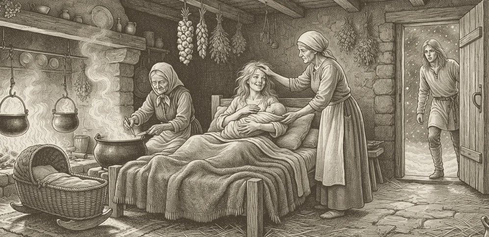
Asta
Los dolores empezaron una noche de febrero, con nieve, y duraron dos días.
Al principio no supo que eran eso. Se despertó en la casa redonda de la Peña con un dolor en los riñones, como el de las reglas pero más hondo, que venía, apretaba y se iba. Se quedó quieta en la oscuridad, al lado de Ricila, que dormía, y contó. Venía. Se iba. Venía otra vez. Le faltaba un mes, según la madre. Según la madre, el niño venía para marzo, con la luna nueva.
Despertó a Ricila. Ricila se levantó tan deprisa que se dio con la cabeza en la viga, y salió descalzo a la nieve a despertar a Hunila, y Hunila bajó corriendo a la casa de labor, de noche, por el sendero helado, con una antorcha, a buscar a la madre.
Bajaron a Asta en un carro, al amanecer, envuelta en mantas. En la casa de labor la madre ya había encendido el fuego grande, el de la cocina, y había puesto agua a calentar en todos los calderos de la casa, y había echado a los hombres al establo. Al padre, a Teudo, a Arsak, a Ricila. Ricila no quería irse. La madre le cogió del brazo y le sacó por la puerta como sacaba a las gallinas.
—Esto no es cosa tuya —le dijo—. Lo tuyo ya está hecho.
Y le cerró la puerta en la cara.
Luego mandó a buscar a la partera. Se llamaba Ennia, era galaica, de la aldea del otro lado del río, muy vieja, tan arrugada que parecía hecha de corteza. Había traído al mundo a la mitad del valle, suevos y galaicos, y a muchas madres de la otra mitad. Llegó a media mañana, cruzando el vado helado en una mula, con un saco de cuero al hombro. Miró a Asta. Le puso las manos en la tripa, con las palmas abiertas, apretando aquí y allá, despacio, como se palpa una masa de pan para ver si ha subido.
—Viene bien —dijo—. Pero viene pronto. Y es grande. Va a costar.
Costó.
Asta no recordó nunca todo aquel día y aquella noche y el día siguiente. Recordó trozos. Recordó el fuego, que no se apagaba nunca, y el calor, que era como estar dentro de un horno. Recordó a Brunhild sujetándole la cabeza. Recordó a la madre desatando todos los nudos de la casa: los de las cortinas, los de los sacos, los de las ristras de ajos, hasta el cordón de su propio delantal, porque decía que un nudo en la casa ataba al niño por dentro. Recordó a Ennia untándole la tripa y las piernas con manteca de cerdo caliente, mezclada con algo que olía a hierba. Recordó una piedra, una piedra pequeña y redonda, hueca, que sonaba por dentro cuando se movía, como un cascabel, y que Ennia le ató al muslo con un cordel. Una piedra del águila, dijo, de las que se encuentran en los nidos de las águilas. Que ayudaba. Asta no le preguntó cómo.
Recordó el dolor. No como un dolor, sino como un sitio. Un sitio donde estaba, del que no podía salir, en el que no había nada más que aquello, que venía, apretaba y se iba, y cada vez se iba menos.
Recordó que llamó a su madre. A Gisa. En vándalo. Muchas veces.
Al segundo día por la tarde, Ennia le metió la mano dentro, hasta la muñeca, y se quedó muy seria.
—Viene de lado —le dijo a la madre en voz baja, en galaico, creyendo que Asta no la entendía. Asta la entendió. Había aprendido galaico en los mercados del valle, regateando con los pastores—. Tiene el hombro donde tiene que tener la cabeza.
La madre se puso blanca.
—¿Y?
—Y hay que darle la vuelta. Por fuera. —Ennia se lavó las manos en el caldero—. Si no se deja, hay que darle la vuelta por dentro. Y si no se deja por dentro…
No terminó. La madre no le preguntó.
Le dieron la vuelta por fuera. Ennia con las manos encima de la tripa, empujando despacio, entre un dolor y otro, una mano arriba y otra abajo, como quien gira un tonel lleno sin derramarlo. La madre sujetándole las piernas. Brunhild sujetándole los hombros. Asta gritó tanto que la oyeron en el establo, y en el establo Ricila se puso a vomitar, y Teudo le sujetó la frente, y el padre se fue al fondo del establo y se quedó de cara a la pared, y Arsak salió a la nieve y se quedó de pie en mitad del patio, quieto, sin manto, hasta que se le puso la cara azul.
El niño se dejó. A la tercera vez.
Luego, con la noche, la silla. Una silla de partos, baja, de madera, con un agujero en forma de media luna en el asiento, que Ennia traía desmontada en el saco de cuero y que montó junto al fuego. Sentaron a Asta en ella. Brunhild detrás, abrazándola por debajo de los brazos. La madre a un lado. Ennia de rodillas delante, en el suelo, con un paño de lino caliente en las manos.
—Ahora —le dijo Ennia—. Ahora sí. Empuja como si quisieras echar a los visigodos de la Bética.
Asta empujó.
Nació a medianoche. Un niño. Grande, morado, con el cordón dado una vuelta alrededor del cuello, que Ennia le quitó con un dedo, deprisa. No lloró. Ennia lo cogió por los pies, cabeza abajo, y le dio dos palmadas en la espalda, y le metió un dedo en la boca y le sacó una cosa blanca. Y el niño lloró. Con una voz enorme, enfadada, que llenó la cocina.
Asta lo oyó llorar y se echó a llorar ella también.
Ennia cortó el cordón con un cuchillo que había puesto al fuego. Lo ató con un hilo de lana roja. Lavó al niño con agua tibia y vino, le frotó el cuerpo con sal fina, para que la piel se le pusiera fuerte, y lo envolvió en una tela de lino apretada, con los brazos pegados al cuerpo, como un pan. Luego se lo puso a Asta en el pecho.
El niño dejó de llorar. Abrió los ojos. Eran oscuros, como los de todos los niños recién nacidos. La miró. O pareció que la miraba.
—¿Cómo se llama? —preguntó la madre.
Asta no tuvo que pensarlo. Lo había pensado nueve meses.
—Guntario —dijo.
Teudo
Teudo fue el primero en cogerlo, después de las mujeres. Antes que Ricila, que no se atrevía.
Ricila entró en la cocina a medianoche, cuando la madre abrió la puerta, blanco como el lino, con la túnica manchada de vómito, y se quedó parado en el umbral, mirando a Asta en la silla y al niño en su pecho, sin moverse, como si el suelo estuviera ardiendo. La madre le tuvo que empujar. Se arrodilló junto a la silla. Tocó al niño con un dedo, en la mejilla, y lo retiró como si quemara.
—Cógelo —le dijo Asta.
—No sé.
—Nadie sabe.
—Lo voy a romper.
Así que lo cogió Teudo. La madre se lo puso en los brazos. Pesaba poco y pesaba mucho al mismo tiempo, como la llave de la Peña. Estaba caliente. Olía a algo que Teudo no había olido nunca, a leche y a sangre y a una cosa nueva, limpia, que no tenía nombre.
Teudo lo miró. El niño le miró a él. Tenía la cara arrugada y roja, como un viejo enfadado.
—Se parece a Fravita —dijo Teudo.
La madre se echó a reír. Asta también, desde la silla, con una risa floja que le dolía. Y Ricila se levantó por fin y cogió a su hijo de los brazos de su hermano, con mucho cuidado, con las dos manos, como había cogido la espada del abuelo el día de la boda.
—Guntario —le dijo al niño—. Guntario, hijo de Ricila. Nieto de Guntmar. Nieto de Guntario.
El niño se quedó dormido.
El bautizo no se hizo. La boda de los suevos se había hecho delante del castaño, como siempre; pero la mujer de Materno quería que el niño se bautizara en la capilla de la villa, y Ricila dudaba, y la madre decía que el niño era suyo y del castaño y de nadie más, y el padre no decía nada porque iba a la misa de Materno y rezaba a los suyos, a los dos a la vez, por si acaso. Al final no se hizo. Pero se hizo otra cosa.
El día que el niño cumplió nueve noches, que era el día en que los suevos daban el nombre a los niños delante de todos, porque antes no se sabía si iban a quedarse, el padre lo sacó al patio. Hacía frío. Había nieve en los tejados. Estaba toda la familia y los vecinos, Wilja con sus hijas, los de la Peña que no estaban de guardia, Hunila con el brazo torcido. Teodoro bajó de la villa en su mula. Y Arsak.
El padre cogió al niño desnudo de los brazos de la madre, lo levantó en alto delante de todos, al frío, y el niño se puso a berrear con una voz enorme. El padre se rio.
—Pulmones tiene —dijo.
Luego lo bajó, lo mojó con agua del pozo, tres veces, en la frente, en el pecho, en los pies, y dijo su nombre. Guntario. Y el de su padre, Ricila. Y el del padre de su padre, Guntmar. Y luego, después de pensarlo un momento, dijo otro, que no era costumbre:
—Y el de su abuelo vándalo. Guntario. Que también es suyo.
Le devolvió el niño a Asta, envuelto en su manta.
Luego venían los regalos. Era la costumbre también: cada uno le daba al niño algo, lo que podía, para que lo tuviera cuando fuera mayor. Wilja le dio una cuchara de cuerno. Hunila, una honda de esparto, pequeña, que había trenzado él. La madre, un gorro de lana que había tejido en noviembre sin decir para quién. Teodoro sacó de su cesto una cosa pequeña de bronce, una campanilla con un mango, de las que se ponían a los niños romanos para espantar los malos espíritus, y se la puso al niño en la mano; el niño la agarró y no la soltó. Brunhild le dio una cinta de lana azul, para la muñeca. Teudo le dio una punta de flecha de hierro, de las de Cloutio, la primera que él había tirado con arco en la Peña, a los dieciséis años. Ricila le dio un libro: el primero que había copiado él, a mano, en Bracara, un cuaderno de tablillas de madera atadas con un cordel, con las letras del alfabeto y los números y una frase de Virgilio al final que nadie más sabía leer.
Arsak fue el último.
Se acercó. Se quedó mirando al niño, que dormía ya en brazos de su madre, con la campanilla en una mano y la cinta azul en la muñeca. Se llevó la mano al pecho, a la bolsita de cuero que llevaba colgada al cuello desde la estepa, la que tenía dentro tierra del Tanais, el río de los alanos. La abrió. Cogió un pellizco de aquella tierra con dos dedos. Era muy poca ya; la había ido dando, a lo largo de los años, a los muertos que quería: a su caballo muerto en la sierra, a la tumba de Guntario y Gisa bajo el Abuelo.
Le puso el pellizco de tierra al niño en la frente, donde el padre le había puesto el agua.
—Para que tenga de dónde venir —dijo en alano.
Nadie lo entendió. Asta sí. Teudo la vio cerrar los ojos un momento.
Esa noche, al subir a la Peña por el sendero de cabras, Teudo se volvió desde el primer recodo. En la cocina de la casa de labor seguía habiendo luz. Por la ventana se veía a Asta sentada junto a la cuna de mimbre, quieta, mirando a su hijo dormido, que llevaba todavía en la frente la mancha pequeña de tierra parda que ella no había querido lavarle.
Agua del Duero y tierra del Tanais, pensó Teudo. Sangre vándala y sueva. Una campanilla romana. Un libro. Una flecha.
Pensó que nadie en aquel valle había tenido nunca tantas cosas al nacer. Y que a lo mejor eso era bueno, y a lo mejor no.
Aquel verano murió Materno.
Era muy viejo. Más de ochenta años, decía su mujer, aunque él decía que no se acordaba. Se fue apagando desde la primavera, como una lámpara a la que se le acaba el aceite. Dejó de salir al pórtico. Luego dejó de levantarse. Teodoro, que le había cuidado cuarenta años, se sentaba a su lado en la cama, día y noche, y le leía en griego, y le daba caldo con una cuchara, y le mojaba los labios con vino.
—No hay nada que hacer —le dijo a Teudo, una tarde, en el patio de la villa—. Es la vejez. Hipócrates no tiene nada para eso. Nadie tiene.
Teudo subía a la villa cada pocos días con Ricila. Ricila se sentaba junto a la cama y le leía a Materno lo que Materno le pedía: Virgilio, Cicerón, unas cartas viejas de un obispo de Hispania que se llamaba Prudencio y que había escrito poemas. Teudo se quedaba en la puerta, como se quedaba en la puerta de la casa redonda el primer invierno, cuando Asta tenía fiebre. No sabía qué hacer en las habitaciones de los enfermos. Nunca había sabido.
Un día Materno le llamó.
—El hermano mayor —dijo. Tenía la voz como un hilo—. El soldado.
—Sí, señor.
—Acércate. No muerdo. Ya no tengo dientes.
Teudo se acercó.
—Tu hermano es la persona más inteligente que he conocido en este valle —dijo Materno—. Y he conocido a muchos tontos. —Tosió—. Pero no sabe defenderse. Los inteligentes nunca saben. Creen que basta con tener razón. —Le cogió la muñeca con una mano que no pesaba nada—. Defiéndelo tú.
—Sí, señor.
—Y no le dejes ir a Bracara solo nunca. Bracara está llena de gente que sabe leer.
Murió dos días después, de madrugada, con su mujer al lado y Teodoro leyéndole en griego. Lo enterraron en el pequeño cementerio de la capilla de la villa, junto a su padre y a su abuelo, el que había traído el olivo de la Bética. Vino el cura de la villa. Vino todo el valle. Los suevos se quedaron fuera de la capilla, porque no eran cristianos, o no del todo, y los galaicos dentro.
En el testamento, que leyó un notario que vino de Lucus, Materno le dejaba la villa a su mujer, mientras viviera, y luego a un sobrino de Bracara al que nadie había visto nunca. Y le dejaba a Ricila, «hijo de Guntmar, suevo, mi alumno», el arcón de los libros.
Teudo lo cargó en el carro con Arsak. Pesaba como un buey. Ricila iba detrás, a pie, con la mano encima de la tapa, todo el camino, como se lleva la mano encima de un ataúd.
Arsak
La noticia de Hispalis llegó en otoño, con un mercader de sal que venía de Emerita.
Los vándalos de Gunderico habían tomado Hispalis. La habían saqueado. Habían entrado en la ciudad, que no tenía casi soldados, y se habían llevado todo lo que había: el oro de las iglesias, el aceite de los almacenes, la plata de las casas ricas, los barcos del puerto. Con los barcos se habían ido a las islas del mar, a las Baleares, y habían saqueado las islas. Y a Carthago Nova, en la costa. Y a Mauritania, al otro lado del Estrecho, decían algunos, aunque eso no se lo creía nadie. Vándalos en barcos. Jinetes de la llanura húngara convertidos en piratas.
Arsak lo escuchó en el patio de la casa de labor, con el niño Guntario en brazos.
Le había hecho una cuna.
Fue lo primero que hizo, la mañana después del parto, cuando la madre le dejó entrar en la cocina a ver al niño y lo vio dormido en una cesta de la ropa, entre trapos. Arsak no dijo nada. Se fue al arroyo con el cuchillo, cortó mimbres de los sauces de la orilla, los dejó a remojo un día en el abrevadero para que se ablandaran, y luego se pasó tres noches en el pajar, a la luz de una lámpara, trenzándolos. Una cuna baja, honda, con dos arcos de mimbre grueso por debajo para que se pudiera mecer, y un asa a cada lado para llevarla al campo. Como las de la estepa. Como la que había en el carro de Guntario y Gisa, en la orilla del Rin, la noche de la nieve, con una niña de dos años dentro, envuelta en pieles, que le miró sin llorar mientras su padre le daba la fíbula.
No se lo dijo a Asta. Le dejó la cuna en la puerta de la cocina, de madrugada, y se fue a las yeguas.
Asta la vio al levantarse. Se quedó mucho rato mirándola, de pie, con el niño en brazos, sin moverse. Luego metió al niño dentro. El niño cabía justo.
Desde entonces el niño dormía en la cuna de mimbre, junto al fuego de la cocina, mientras Asta pasaba en la casa de labor los cuarenta días que la madre decía que tenía que pasar una mujer después de parir, sin salir, sin trabajar, comiendo caldo de gallina con huevo y pan mojado en vino, y con una faja de lana muy apretada alrededor de la tripa, que la madre le ponía cada mañana. La madre le miraba la sangre de los paños todos los días, sin decir nada, y los días que había menos asentía, y los días que había más le hacía beber un cocimiento de bolsa de pastor que sabía a tierra. Le tocaba la frente varias veces al día. Lo que mataba a las madres, le dijo Brunhild a Asta en voz baja, no era el parto: era la fiebre de después. A la madre de Brunhild la había matado así, en el Rin, con su cuarto hijo.
A Asta no le dio fiebre. El día cuarenta, la madre le quitó la faja, la llevó al arroyo, la lavó entera con agua fría y la dejó volver a la Peña.
Arsak llevaba al niño en brazos muchas veces. Más de lo que había llevado nunca a nadie, salvo a la madre de aquel niño, una vez, por media Hispania. Asta se lo daba cuando tenía que hacer algo, y Arsak lo cogía y se lo llevaba a ver a las yeguas, o al establo, o al prado, y le hablaba en alano, en voz baja, cosas que el niño no entendía. Los nombres de los caballos. Los de las estrellas. El niño se quedaba quieto, mirándole con los ojos muy abiertos, que se le habían ido aclarando como se le aclaran a los niños y que ahora eran grises, como los de su abuelo vándalo.
Cuando el mercader se fue, Arsak subió con el niño a la Peña y se lo devolvió a Asta. Y le contó lo de Hispalis.
Asta estaba en la puerta de la casa redonda, sentada en el escalón, desgranando habas en un cuenco. Cogió al niño, se lo puso al pecho y se quedó callada mucho rato, mirando hacia el sur.
—La granja estaba a un día de Hispalis —dijo al fin.
—Sí.
—El olivo. El Abuelo.
—Sí.
—Y Silvano. El de los higos. —Asta se quedó mirando al niño—. Estará muy viejo. Si vive.
Arsak no contestó. No había nada que contestar. Silvano, el viejo romano de la villa de al lado, el que le había dado a Asta un higo seco en la puerta de su casa la mañana en que se fueron, el que se cayó de la piedra en la boda de los silingos de tanto vino. Silvano tenía setenta años entonces. Si los vándalos habían pasado por su villa camino de Hispalis…
—Los vándalos no tocaban a Silvano —dijo Asta—. Mi padre le quería. Todos le querían.
—Esos vándalos eran silingos. Los silingos están muertos. Estos son asdingos. No le conocen.
Asta no dijo nada. Metió la mano en la bolsa de tela que llevaba colgada al cinturón, la de siempre, y sacó el higo. Estaba negro, duro como una piedra, arrugado. Ocho años en una bolsa. Lo miró en la palma de la mano.
—Mi padre está debajo del olivo —dijo—. Y por encima pasan ahora los vándalos con el oro de las iglesias. Los de mi pueblo. Los que mataron a los alanos en la llanura de Emerita no, esos fueron los godos. Pero estos tampoco nos esperaron. Se fueron al sur y nos dejaron.
—Te dejaron a ti —dijo Arsak—. No a tu padre. Tu padre se quedó con ellos.
Asta le miró.
—¿Tú crees que mi padre estaría contento? —preguntó—. De ver a los vándalos en Hispalis. Con barcos.
Arsak pensó en Guntario. En el hombre cojo de la orilla del Rin, con el escudo rojo, riéndose. En el hombre que daba una moneda a cada niño que tallaba bien una cuchara.
—Creo que tu padre estaría contento de ver al niño —dijo—. Lo demás le daría igual.
Asta se quedó callada. Luego guardó el higo en la bolsa, despacio.
El niño Guntario, en su pecho, se había quedado dormido con la boca abierta. En el hombro de su madre, prendida en la túnica, la fíbula de bronce con forma de pájaro le brillaba al niño junto a la cara, con sus dos ojos rojos.
Los años
El valle del Duero – 426 y 427
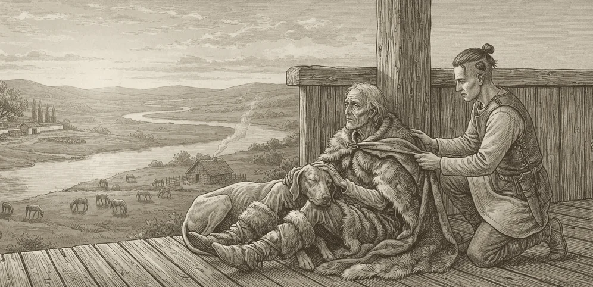
Teudo
Fravita pidió subir a la torre la última tarde, y Teudo lo subió a hombros.
Pesaba como un niño. Llevaba dos inviernos en la cama, y la enfermedad, que Teodoro decía que estaba en el pecho y que no tenía nombre griego que sirviera para nada, se lo había ido comiendo por dentro, despacio, como se come la carcoma una viga. Ya no tosía. No tenía fuerzas para toser. Respiraba poco y mal, con un silbido, y hacía días que no comía más que leche con miel.
Aquella tarde de octubre abrió los ojos y le dijo a Teudo que quería ver el valle.
Teudo no discutió. Lo envolvió en las pieles, lo cogió en brazos y salió de la casa. Hunila, que estaba de guardia en la puerta, vio lo que iba a hacer y subió delante, por la escalera de la torre, para ayudarle desde arriba. Entre los dos lo subieron. Lo sentaron en el suelo de tablas, con la espalda contra la baranda, mirando al sur.
Hacía una tarde limpia, de las de después de la lluvia, cuando el aire está tan claro que se ven las cosas lejanas como si estuvieran cerca. El Duero brillaba abajo, ancho, lento, color de cobre. Se veían los prados de la orilla, con las yeguas de Arsak, que eran ya catorce. Se veía la casa de labor, con su humo. La villa de Materno, con el olivo viejo en el patio. Las aldeas de los galaicos al otro lado del río. Y más allá, las colinas de Lusitania, que se iban poniendo azules y luego moradas a medida que bajaba el sol.
Fravita lo miró todo despacio. Sin decir nada.
—Doce años —dijo al fin—. Me la dio el rey hace doce años. Era un montón de piedras con unos galaicos que se morían de hambre dentro.
—Ahora es la Peña.
—Ahora es la Peña. —Fravita casi sonrió—. No es mía. No ha sido nunca mía. Es del rey. Mañana se la dará a otro.
—Me la puede dar a mí.
—No te la va a dar a ti. —Fravita le miró de reojo—. Tú lo sabes. Se la va a dar a alguien de Heremigario. Heremigario lleva dos años pidiéndola.
Teudo no contestó. Lo sabía.
—Cuando venga —siguió Fravita, con la voz cada vez más floja—, ese que venga, le das la llave. Sin protestar. Le dices quién es quién. Le enseñas el almacén y los muros y le cuentas lo que deben las aldeas. Y luego te vas a tu casa a arar la tierra de tu padre. ¿Me oyes?
—Te oigo.
—No te quedes a servirle. No te pelees con él. No le mires mal. Haz como que no existe. Los hombres como ese necesitan que alguien les odie para sentirse importantes. No le des el gusto.
Teudo asintió.
Fravita se quedó callado un buen rato. El sol tocó las colinas de Lusitania. La perra Loba, que había subido detrás de ellos por la escalera sin que nadie supiera cómo, se tumbó a su lado y le puso la cabeza en las rodillas.
—Te he pegado mucho —dijo Fravita.
—Mucho.
—No te dije nunca que lo hacías bien.
—Nunca.
—Lo hacías bien. —Fravita cerró los ojos—. Desde el día del cuerno.
Teudo no pudo contestar.
Fravita murió aquella noche, en la torre, porque no quiso que le bajaran. Teudo se quedó con él, envuelto en la misma manta, con la perra entre los dos, hasta que dejó de oírle respirar. No supo cuándo fue. Se dio cuenta al amanecer, cuando la perra se levantó, le olió la cara y se puso a gemir bajito.
Lo enterraron en el prado de abajo, junto a Odo y al buey Viejo, debajo de un montón de piedras, como se enterraba en el Rin. Con su lanza y su escudo, un cuchillo, un cuenco con manzanas de las de las vigas, y una cuerda de cáñamo enrollada a los pies, la del lazo con el que Arsak había sacado a Hunila del río, que Arsak puso allí sin explicar a nadie por qué. Vinieron todos los de la Peña. Vinieron los galaicos de las aldeas, que le habían tenido miedo doce años y que lloraron más que nadie. Hunila cantó una canción de muertos que había aprendido de su abuelo y que no sabía entera.
El hombre de Heremigario llegó tres semanas después. Se llamaba Agiulfo. Venía con veinte jinetes, una carta del rey con un sello de cera roja y una manera de mirar las cosas que Teudo reconoció nada más verle entrar por la puerta de roble: la de alguien que mira una casa que acaba de comprar.
Teudo le dio la llave.
Asta
El niño Guntario anduvo por primera vez en el patio de la Peña, en la primavera de 426, detrás de una gallina.
Tenía catorce meses. Llevaba semanas agarrándose a todo, a las piernas de la gente, a los bancos, al borde de la cuna de mimbre, que ya se le había quedado pequeña, y poniéndose de pie, temblando, y cayéndose de culo. Aquella mañana Asta estaba en la puerta de la casa redonda, hilando, y el niño estaba sentado en el suelo, a su lado, jugando con unas piedras. Pasó una gallina. El niño la miró. Se puso de pie, sin agarrarse a nada, y fue detrás de ella. Cinco pasos. Seis. Luego se cayó de bruces en el barro y se echó a llorar, más de rabia que de dolor, porque la gallina se había ido.
Asta lo cogió, le limpió la cara con el delantal, y se rio tanto que se le cayó el huso.
Su primera palabra no fue «madre» ni «padre». Fue «caballo». En alano. La que Arsak le decía todos los días en el prado de las yeguas. Ricila dijo que eso no contaba, que el niño no sabía lo que decía. Arsak no dijo nada. Pero se le notó en la cara que contaba.
Fueron años buenos. Asta lo pensó muchas veces después, cuando ya no lo eran. Que había habido unos años, pocos, en los que no había pasado nada. En los que lo más importante que pasaba era que nevaba o que no nevaba, que la cosecha era buena o mala, que una yegua paría o que se le moría el potro. Años sin vándalos, sin godos, sin hambre. Años como los que contaba su padre de la llanura húngara antes de que llegaran los hunos, y que ella, de pequeña, creía que se los inventaba.
Vivían en la casa redonda del fondo de la Peña, la de la muralla del oeste. Ricila subía y bajaba al valle con las cuentas, y con los libros, que tenía en el arcón de Materno junto a la cama, y que leía de noche, a la luz de la lámpara, hasta que se dormía encima. Asta hacía lo que hacían las mujeres: hilaba, tejía, amasaba, ordeñaba la cabra que les había dado la madre, cuidaba el huerto pequeño que había hecho detrás de la casa, contra la muralla. Y bajaba al valle todos los días, con el niño a la espalda en un saco de tela, a ver a la madre, a ver el olivo, a ver a Brunhild.
Y a dar clase.
Fue idea de Brunhild. Le había dicho, el día que se la llevaron: «Enséñale a leer». Y Asta le había enseñado, a ratos, aquellos años, con la tablilla de cera que le había hecho Ricila y que tenía escrito su nombre. Pero el niño Wilja no quería. El niño Wilja quería ser soldado, como su padre, como su tío Teudo, y decía que los soldados no leían. Se escapaba. Se iba al río con los muchachos de la Peña. Asta lo traía de la oreja.
Un día de verano de 427, el niño Wilja, que tenía ya doce años, se quedó mirando la tablilla mucho rato. Luego cogió el estilo y escribió, despacio, torcido, con la lengua fuera: ODO.
Asta no se lo había enseñado. No le había enseñado esas letras en ese orden.
—¿Cómo lo sabes? —le preguntó.
—Lo pone en el escudo —dijo el niño—. Por dentro. Lo escribió el tío Ricila cuando lo trajo del castro. Lo he copiado.
Asta no dijo nada. Esa tarde, el niño Wilja no se escapó al río. Aprendió a escribir su propio nombre. Y el de su madre. Y el de su abuelo.
Brunhild lo vio desde la puerta de la cocina. No dijo nada tampoco. Pero aquella noche, al irse Asta a la Peña con el niño Guntario dormido a la espalda, Brunhild la acompañó hasta el vado, cosa que no hacía nunca, y en el vado le dio un beso en la frente.
Aquellos años, también, Asta aprendió a curar.
Teodoro se había quedado en el valle después de la muerte de Materno. No tenía adónde ir. La viuda le dejó una habitación en la villa, y él siguió curando lo que hubiera que curar en el valle, como había hecho siempre, en su mula blanca. Pero estaba viejo. Le temblaban las manos. Ya no veía bien de cerca, y para coser una herida o sacar una astilla tenía que acercarse tanto que se manchaba la barba.
Una mañana, en la casa de un galaico que se había clavado una hoz en la pierna, le dio a Asta la aguja.
—Tú —le dijo—. Yo te digo cómo.
Asta cosió. Teodoro miraba de cerca, con los ojos entornados, y le decía: «más separados», «más hondo», «no tires tanto». Cuando terminó, Teodoro le miró los puntos un rato largo. Luego asintió.
Desde entonces iban juntos. Teodoro en la mula, Asta a pie al lado, con el niño a la espalda y el cesto del físico colgado del brazo. Teodoro le enseñaba los nombres de las cosas, en griego y en latín. Las hierbas. Los huesos. Cómo se toma el pulso en la muñeca y lo que quiere decir cuando va deprisa y cuando va despacio. Cómo se huele una herida para saber si se está pudriendo. Cómo se pone un hueso en su sitio. Cuándo hay que sangrar a un enfermo, que era casi nunca, decía, aunque los demás físicos sangraban a todo el mundo. Y cuándo no hay que hacer nada, que era casi siempre.
—La mitad de los enfermos se curan solos —le decía—. La otra mitad se mueren hagas lo que hagas. Lo único que importa es no matar a los de la primera mitad.
—¿Eso lo dice Hipócrates?
—No. Lo digo yo. Pero Hipócrates estaría de acuerdo.
En primavera, Teodoro la llevó al monte a coger hierbas.
Iban temprano, con el rocío, porque Teodoro decía que las hierbas cogidas con el sol de mediodía no valían la mitad. Él en la mula, despacio, con un sombrero de paja de ala ancha; Asta a pie, con el niño a la espalda y dos cestos. Subían por los prados de detrás de la villa, por los bordes de los caminos, por las orillas del arroyo, por los claros de los robledales. Teodoro iba señalando con el bastón desde la mula, y Asta se agachaba y cogía, y él le decía el nombre en griego, en latín y, si lo sabía, en suevo, y para qué servía.
El llantén, de hojas anchas con nervios como cuerdas, que crecía en los caminos, donde la gente pisaba: para las heridas que no cierran, machacado y puesto encima. La milenrama, de flores blancas en sombrilla y hojas como plumas: la hierba de Aquiles, decía Teodoro, porque Aquiles curaba con ella a sus soldados en Troya, para cortar la sangre. La malva, para la tos y para la tripa. El tomillo, para todo. La corteza del sauce de la orilla, que Prisca le había dado de pequeña para la fiebre, y que Asta reconoció por el sabor amargo nada más morder una tira; Teodoro se rio y le dijo que Prisca sabía lo que hacía. Las amapolas, para dormir, poco. La ruda, que olía tan fuerte que mareaba, y que Teodoro le dijo que no cogiera nunca, que la ruda era para las mujeres que no querían tener hijos y que mataba a muchas más de las que ayudaba.
—¿Y la mandrágora? —preguntó Asta. Había oído a las viejas galaicas hablar de ella en las noches de hilar, de que gritaba cuando la arrancabas y que el que la oía se volvía loco.
Teodoro se rio tanto que casi se cae de la mula.
—La mandrágora no grita —dijo cuando pudo hablar—. Lo que grita es el que se la come. Aquí no hay. Mejor.
Al volver, colgaban las hierbas en manojos, cabeza abajo, de una viga del hórreo de la villa, a la sombra, donde corría el aire, para que se secaran sin perder el color. Luego las guardaban en tarros de barro tapados con cera, con una tablilla atada a cada uno que decía lo que era. Las tablillas las escribía Asta. Teodoro ya no veía bien para escribir.
Una tarde, mientras ataban manojos de milenrama, Teodoro le preguntó una cosa sin mirarla.
—¿Por qué aprendes esto?
Asta lo pensó.
—Porque he visto morir a mucha gente —dijo— y no sabía hacer nada.
Teodoro dejó el manojo encima de la mesa. Se quedó un rato mirándola con sus ojos de viejo, aguados, que ya casi no veían de cerca pero veían bien de lejos.
—Yo empecé por lo mismo —dijo—. En Antioquía. Tenía doce años. Era esclavo de un físico, y le llevaba el cesto. Mi madre se murió de unas fiebres que el físico no supo curar. —Volvió a coger el manojo—. Llevo sesenta años aprendiendo. Y sigo sin saber curar esas fiebres.
—¿Entonces para qué?
—Para las otras —dijo Teodoro—. Para las que sí.
A Fravita no le pudieron curar ninguno de los dos.
Asta le cuidó el último invierno, a ratos, cuando Teudo tenía guardia. Le lavaba. Le cambiaba las pieles de la cama. Le daba la leche con miel a cucharadas, despacio, porque se atragantaba. Fravita se dejaba hacer sin protestar, cosa que asustaba más que nada, porque Fravita había protestado de todo toda su vida. A veces la miraba con los ojos hundidos y le decía «vándala», nada más, como el primer día en su casa, cuando quería saber quién era antes de cortarle la cabeza. Pero ahora lo decía de otra manera.
La mañana que murió, Asta le lavó el cuerpo con la madre y con Brunhild, en la casa de Fravita, con agua caliente y hierbas, como se hacía. Le peinaron la barba gris. Le vistieron con su túnica buena, la que se ponía para ir a ver al rey, y le pusieron la capa por encima. Asta le cosió la mortaja ella sola, con lino de la madre, con los puntos más pequeños y más juntos que había dado nunca, toda una noche, a la luz de la lámpara, con el niño dormido en la cuna de mimbre a su lado.
No sabía por qué lo hacía tan despacio. Lo supo al terminar. Porque mientras cosía, Fravita seguía allí.
La perra Loba no quiso salir de la casa en tres días. Se tumbó en el sitio donde había estado la cama y no se movió, ni para comer. Al cuarto día, Arsak entró, se sentó en el suelo a su lado sin decir nada y se quedó allí hasta la noche. Cuando salió, la perra salió detrás de él. Desde entonces no se separó de Arsak.
Arsak
Teudo y Arsak se iban de caza los días de nieve, y aquellos dos inviernos se fueron muchas veces.
Subían al monte de detrás de la Peña antes de que amaneciera, con dos caballos, con los arcos, con la perra Loba, que se había quedado con Arsak cuando murió Fravita y que le seguía a todas partes como le había seguido a Fravita. Su propio perro, el marrón, el que le había seguido desde Emerita hasta el brezo sobre el Duero y le había defendido de los dos hermanos aquella mañana, se había muerto de viejo el invierno de después de los Nervasos, dormido en la paja del establo, y Arsak lo había enterrado detrás, junto a la tapia, sin decírselo a nadie. Asta lo supo igual. En primavera le plantó encima una mata de tomillo. Buscaban ciervos. En la nieve se veían las huellas, y Arsak sabía leerlas como Ricila leía los libros: de cuándo eran, si era un macho o una hembra, si iba despacio o deprisa, si estaba herido. Teudo había aprendido algo. No mucho.
Una tarde de enero de 427 cazaron un ciervo grande, de doce puntas, en un barranco lleno de robles, y como era tarde y nevaba se quedaron a pasar la noche en una cueva que conocía Arsak, encendieron fuego, asaron el hígado en unos palos y se lo comieron con sal y con pan duro.
Hablaron. Era lo que pasaba en las cacerías: que hablaban. En el valle, en la Peña, rodeados de gente, no hablaban casi nunca. En el monte, solos, al lado del fuego, sí.
—¿Echas de menos la estepa? —le preguntó Teudo.
Arsak se quedó mirando el fuego.
—No me acuerdo bien —dijo—. Me fui con dieciocho años. Me acuerdo de cosas. De la hierba, que era más alta que un caballo en verano. De los ríos, que eran tan anchos que no se veía la otra orilla. Del cielo. El cielo era más grande. Aquí está todo lleno de montes. —Echó un palo al fuego—. Y me acuerdo del ruido de las tiendas por la noche, cuando hacía viento. Como si respiraran.
—¿Volverías?
—No hay a qué volver. Allí están los hunos ahora. —Arsak se encogió de hombros—. Y aunque no estuvieran. Mi padre está enterrado allí. Mi madre. Pero no tengo a nadie vivo. Lo que tengo vivo está en el valle.
Teudo se quedó callado. Luego dijo una cosa que llevaba mucho tiempo queriendo decir.
—La noche del Rin —dijo—. Cuando saltaste del caballo a por el padre de Asta. Con tres francos encima de él.
—Sí.
—¿Por qué lo hiciste? No le conocías. No era de los tuyos. Los alanos iban delante, por el hielo, hacia la otra orilla. Tú te diste la vuelta.
Arsak tardó mucho en contestar. Tanto que Teudo pensó que no iba a hacerlo.
—No lo sé —dijo al fin—. Me lo he preguntado veinte años. Candac, mi primo, me gritaba que siguiera. Yo tenía dieciocho años, y era la primera vez que veía morir a gente de verdad, y tenía miedo. Mucho miedo. Y vi a aquel hombre en el suelo, con el escudo partido, mirando hacia arriba, esperando el hacha. Y no me miraba a mí. Miraba hacia un carro. —Arsak se calló un momento—. Luego supe que en el carro estaba la niña.
—Asta.
—Asta. Con dos años. —Arsak echó otro palo al fuego—. Yo no sabía que estaba allí. Pero él sí. Y creo que fue eso. Que miraba hacia un sitio como mira uno cuando le queda algo que hacer. Mi padre miraba así. —Se encogió de hombros—. No lo pensé. Salté.
Teudo se quedó mirándole.
—Y luego te dio la fíbula.
—Y luego me dio la fíbula. Y yo no quería cogerla. —Arsak sonrió apenas—. Y la he llevado veinte años en el manto. Y ahora la lleva su hija. Y un día la llevará el niño.
—Si Ricila le deja montar a caballo.
—Ricila no tiene nada que decir en eso. —Arsak se rio, bajito—. Ya lo hablaremos el niño y yo.
Teudo se rio también. Luego dejó de reírse.
—Ricila ya no sube a la Peña —dijo—. Llevaba las cuentas siete años.
—Llevaba.
—Agiulfo no le deja —dijo Arsak.
—No. Dice que las cuentas de la Peña las lleva ahora un hombre suyo. Uno que no sabe leer.
Se quedaron callados. Fuera, en la boca de la cueva, nevaba despacio. La perra Loba dormía junto al fuego, con las patas moviéndose, soñando que corría.
—Beorgor —dijo Arsak al fin— me dijo una vez una cosa. El viejo de los míos, el de las rodillas malas, el que me enseñó lo del agua. Me dijo que los alanos se pasaban la vida buscando un sitio, y que cuando lo encontraban no sabían quedarse. Que había que aprender a cerrar la puerta. —Se quedó mirando la nieve—. Yo he aprendido. Me ha costado veinte años. Pero he aprendido.
—¿Y si te la abren desde fuera? —preguntó Teudo.
Arsak no contestó.
Al día siguiente bajaron al valle con el ciervo atravesado en la grupa del caballo de Teudo. Al pasar por delante de la Peña, Agiulfo estaba en la torre, mirándolos.
Arsak no le miró. Como había dicho Fravita.
Pero aquella noche, en el pajar de la casa de labor, a la luz de la lámpara, Arsak descolgó la cota de escamas de su padre del clavo donde estaba colgada desde los montes Nervasos, y se puso a revisarla, escama por escama, buscando las que estuvieran sueltas.
No supo por qué. Le pareció que era hora.
El hombre de Heremigario
El valle del Duero – 427
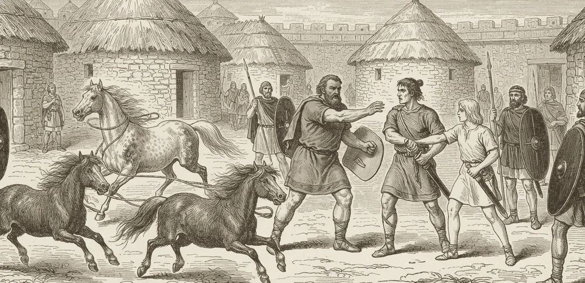
Teudo
Agiulfo tardó un mes en hacer lo primero, y lo hizo delante de todos.
Hasta entonces no había hecho nada. Eso era lo raro. Teudo le había dado la llave el día que llegó, le había enseñado el almacén, los muros, la torre, el pozo, le había dicho quién era quién y lo que debía cada aldea, como le había mandado Fravita. Agiulfo le había escuchado sin interrumpirle, sentado en el banco de la puerta de la casa de Fravita, que ahora era la suya, con las piernas estiradas y los brazos cruzados. Era un hombre de cuarenta años, ancho, con la cara roja y una barba castaña que se peinaba con los dedos mientras escuchaba. No parecía malo. Parecía aburrido.
Cuando Teudo terminó, Agiulfo asintió.
—Bien —dijo—. Puedes irte a tu casa.
Teudo no se fue. Se quedó en la Peña. Por Ricila, por Asta, por el niño, que vivían en la casa redonda del fondo. Por los muchachos de la guardia, que eran los suyos desde hacía años y que le miraban a él antes de hacer lo que les mandaba Agiulfo. Siguió haciendo la guardia como uno más. Le tocaron las peores: las de madrugada, las de la muralla del norte, donde daba el viento. No protestó.
Haz como que no existe, le había dicho Fravita.
Lo hizo durante un mes. Luego, una mañana de noviembre, Agiulfo mandó juntar a todos los hombres de la Peña en el patio. A los suyos y a los de Fravita. Y mandó traer a las yeguas.
Las bajaron del prado del río entre cuatro de sus jinetes, a gritos, a palos, como no se bajaban nunca. Las catorce yeguas galaicas, peludas, pequeñas, con los potros del año detrás. Y Viento, el semental tordo, que no se dejaba llevar por nadie que no fuera Arsak y al que habían tenido que echar dos lazos al cuello. Las metieron en el patio de la Peña, entre las casas redondas. Las yeguas daban vueltas, asustadas, relinchando, chocando unas con otras. Los niños de las casas lloraban.
Arsak llegó corriendo desde la casa de labor. Hunila le había mandado aviso.
—Estas yeguas —dijo Agiulfo, en voz alta, para que lo oyeran todos— se compraron con la plata de la Peña. La plata de la Peña es del rey. Las yeguas son del rey. Y yo mando aquí en nombre del rey.
Nadie dijo nada.
—Desde hoy —siguió Agiulfo— las cuidan mis hombres. Y el alano no se acerca a ellas.
Teudo dio un paso adelante.
—Las yeguas las compró Fravita con su plata —dijo—. No con la de la Peña. Con la que le quedaba de lo que le dio el rey cuando vino de los Nervasos. Las eligió el alano. Las crió el alano. Los potros que se vendieron en Lucus los vendió el alano, y la plata la puso él para el mundio de Brunhild. Está en las cuentas. Lo apuntó mi hermano.
Agiulfo le miró. Se peinó la barba con los dedos.
—Tu hermano —dijo— apunta lo que quiere. Por eso ya no apunta nada.
Algunos de sus hombres se rieron.
—Y tú —siguió Agiulfo, más bajo, acercándose— hablas mucho para ser un guardia de la muralla del norte.
Teudo no se movió. Agiulfo estaba a un paso. Olía a vino. A vino del almacén de la Peña.
—Arrodíllate —dijo Agiulfo.
El patio se quedó en silencio. Hasta las yeguas parecieron callarse.
Los suevos no se arrodillan. No era una ley. Era más que una ley. Un hombre libre no se arrodilla delante de otro hombre libre; se arrodilla delante de su rey, una vez, cuando le jura, y delante de los dioses, o del Dios de los romanos, si es cristiano. Teudo no se había arrodillado nunca delante de nadie. Ni delante de Fravita, que le había pegado con el canto de la espada durante diez años.
—No —dijo.
Agiulfo le pegó.
Con el dorso de la mano, en la boca, delante de todos. No muy fuerte. Lo justo para partirle el labio. Teudo notó el sabor de la sangre y notó también otra cosa, la mano derecha, que se le había ido sola a la empuñadura de la espada de Fravita, y los dedos cerrándose sobre ella.
Y notó una tercera cosa. Otra mano. Sobre la suya. Encima de la empuñadura. Apretando.
No era la de Fravita. Fravita estaba debajo de un montón de piedras en el prado de abajo.
Era la de Arsak.
—No le des el gusto —le dijo Arsak al oído, en suevo, muy bajo. Las palabras de Fravita.
Teudo se quedó quieto. Agiulfo los miró a los dos. Miró la mano del alano encima de la mano del suevo, sobre la espada. Sonrió.
—Eso —dijo—. Que te sujete tu perro.
Se dio la vuelta y se fue a su casa.
Las yeguas se quedaron en el patio hasta la noche. Los hombres de Agiulfo no supieron llevarlas de vuelta al prado. Al anochecer, Viento rompió uno de los lazos, le dio una coz a uno de ellos en el muslo y saltó la muralla de dentro por la parte baja, junto al pozo, y se fue al valle al galope. Lo encontraron por la mañana en el establo de la casa de labor, tranquilo, comiendo heno al lado de Niebla, como si no hubiera pasado nada.
Agiulfo no volvió a mandar a buscarlo.
Aquella noche, en la torre, le tocaba guardia a Hunila. Teudo subió aunque no le tocaba, como hacía cuando no podía dormir. Hunila no dijo nada. Le hizo sitio junto a la baranda, le pasó la manta y la bota de vino, y se quedaron los dos mirando el camino del norte, a oscuras.
Al cabo de un rato, Hunila sacó algo del cinturón y se lo dio. Era un trapo mojado en agua fría, del pozo.
—Para el labio —dijo.
Teudo se lo puso.
—Los muchachos —dijo Hunila, mirando al frente— no le van a obedecer. A Agiulfo. Si tú no quieres. Me lo han dicho. Todos. Los de Fravita.
—Le vais a obedecer.
—Teudo…
—Le vais a obedecer —repitió Teudo—. En todo. Sin protestar. Os va a mandar cosas que no os gustan y las vais a hacer. Porque si no le obedecéis, se lo cuenta a Heremigario, y Heremigario manda a otros, y a vosotros os mandan a la frontera de los vascones a que os maten. —Se quitó el trapo del labio y lo miró a la luz de la luna—. Eso me lo enseñó Fravita. No lo sabía hasta hoy. Pensaba que me había enseñado a pelear. Me enseñó a aguantar.
Hunila no contestó. Se quedó un rato callado. Luego dijo:
—Pero si un día no aguantas, Teudo…
No terminó la frase. No hacía falta. Teudo le miró. Hunila tenía veintiséis años, el brazo torcido de mal soldado y la cara de alguien que ha decidido algo hace tiempo y no lo va a cambiar.
—Si un día no aguanto —dijo Teudo—, te aviso.
Pero aquella semana mandó otra cosa: que Ricila y su mujer y su hijo dejaran la casa redonda del fondo, la de la muralla del oeste. Que la necesitaba para sus hombres.
Aquel invierno, desde la muralla del norte, Teudo vio cómo se iba deshaciendo la Peña.
No de golpe. Poco a poco, como se deshace una casa a la que nadie le arregla el tejado. Una piedra que se caía de la muralla de fuera y nadie volvía a poner. Una tabla de la torre que se pudría con la lluvia y nadie cambiaba. El foso de delante de la puerta, que Fravita mandaba limpiar cada primavera, llenándose de zarzas. Los hombres de Agiulfo no hacían esas cosas. No eran de la Peña. Eran de las tierras del Miño, y estaban allí de paso, como se está en una venta, y se notaba en todo.
Bebían. Eso lo primero. El vino del almacén de la Peña, el que pagaban las aldeas de los galaicos con su trabajo, se acabó antes de Navidad, y Agiulfo mandó traer más de Lucus, y lo pagó con grano. Con el grano del almacén. Teudo lo vio salir en mulas, saco a saco, una mañana de niebla, camino del norte. Sacos que eran para el invierno. Para las aldeas si había mala cosecha. Para un cerco, si venía otro.
Jugaban a los dados en la casa de Fravita, que ahora era la de Agiulfo, todas las noches, con la puerta abierta, gritando. Se jugaban la paga, que no tenían, y luego se jugaban lo que cogían en las aldeas. Una gallina. Un queso. Una noche, el broche de una muchacha galaica, que su padre bajó a reclamar al día siguiente y al que echaron de la puerta a empujones.
Y las aldeas pagaban el doble. Agiulfo había subido lo que debían, sin decírselo a nadie: tantas medidas de centeno, tantas de cebada, tantos quesos, tantos días de trabajo, como siempre, y además otro tanto. Los jefes de las aldeas subieron a protestar. Agiulfo los recibió sentado en el banco de la puerta, peinándose la barba con los dedos. Les dijo que el rey tenía muchos gastos.
Los jefes bajaron sin protestar más. Pero al pasar junto a Teudo, que estaba de guardia en la puerta, el más viejo de ellos, un galaico de barba blanca que había pagado a Fravita doce años sin una queja, se paró un momento.
—Fravita nos pegaba —le dijo en voz baja, en su suevo de piedras—. Pero nos defendía. Este nos roba y no nos defiende de nada. —Escupió en el suelo—. Cuando vuelvan los vándalos, que vuelvan. A lo mejor son mejores.
Teudo no supo qué contestar.
Una noche de enero, al subir a la torre para su guardia, encontró a Hunila sentado en las tablas, con la cara entre las manos. Los hombres de Agiulfo le habían ganado a los dados el cuchillo de su abuelo, el único que tenía. Le habían hecho jugar. Le habían hecho trampas, con unos dados que caían siempre del mismo lado. Hunila lo sabía. No había dicho nada.
—Por lo que me dijiste —le dijo a Teudo—. Que había que aguantar.
Teudo se quedó mirándole. Luego bajó de la torre, cruzó el patio a oscuras hasta la casa de Agiulfo, donde se oían los gritos y los dados, y se quedó en la puerta.
Dentro, a la luz de las lámparas, había seis hombres alrededor de una mesa. Uno de ellos tenía el cuchillo de Hunila en el cinturón.
Teudo no dijo nada. No entró. Se quedó en la puerta, quieto, mirando al hombre del cuchillo. Mucho rato. Sin moverse. Hasta que los dados dejaron de sonar y los seis hombres se volvieron a mirarle.
El hombre del cuchillo aguantó la mirada un rato. Luego se rio, flojo. Se sacó el cuchillo del cinturón y lo tiró al suelo, a los pies de Teudo, como se tira un hueso a un perro.
—Para tu amigo —dijo—. No vale nada.
Teudo lo recogió. Volvió a la torre. Se lo dio a Hunila sin decir nada.
Fravita le había dicho que no les diera el gusto de odiarlos. No le había dicho nada de mirarlos.
Asta
Asta lo vio en sus ojos el día del pozo.
Fue antes de lo de las yeguas. A principios de octubre, a la semana de llegar Agiulfo. Asta bajaba al pozo de la parte baja de la Peña por la mañana, como todas las mañanas, con el niño Guntario a la espalda en el saco de tela y el cubo en la mano. Agiulfo estaba allí, sentado en el pretil del pozo, con dos de sus hombres, comiendo manzanas. Las manzanas de Fravita, las de las vigas.
Asta llenó el cubo sin mirarle. Notó que la miraba. No le hizo caso. Llenó el cubo, se lo puso en la cadera y se dio la vuelta para irse.
—Tú eres la vándala —dijo Agiulfo.
Asta se paró. No se volvió.
—La mujer del que escribe —siguió él—. La que no devolvió la espada en la boda. Me lo han contado. —Se rio—. Una vándala que guarda la espada de los suevos.
Asta se volvió entonces. Despacio. Y le miró.
Y lo vio.
No era la cara. La cara de Agiulfo no se parecía en nada a la de Heremigario: era ancha, roja, de campesino, con la barba castaña, mientras que la de Heremigario era estrecha y pálida, con la barba negra recortada. Era otra cosa. Era la manera de mirar. Una mirada que no te miraba a ti, sino a algo que tú tenías, o que eras, y que él estaba pensando cuánto valía. Asta la había visto en el patio de la casa de labor el día de San Juan, cuando Heremigario miró a Brunhild con el cesto de ropa en la cadera. La había visto antes también, muchos años antes, en la Bética, en la cara de un soldado godo que se paró delante de la granja de su padre, a caballo, y miró la casa encalada y el pozo y la higuera y a su madre en la puerta, y luego se fue, y volvió a los tres días con cuarenta más.
Agiulfo no era Heremigario. Pero miraba como él. Como si lo hubiera aprendido de él. Como se aprende de un maestro.
Asta no dijo nada. Se dio la vuelta y subió con el cubo hacia la casa redonda. Notó la mirada en la espalda todo el camino. En la espalda y en el niño, que iba en el saco, mirando hacia atrás por encima de su hombro con los ojos grises muy abiertos.
Esa noche se lo contó a Ricila. Ricila la escuchó, y luego se quedó callado mucho rato, en la cama, mirando las vigas en la oscuridad.
—Es un hombre de Heremigario —dijo al fin—. Le cuenta todo. Lo que ve, lo que oye. Para eso está aquí. No para mandar en la Peña. Para mirar.
—¿Y qué mira?
—A nosotros.
Asta no preguntó por qué. No hacía falta.
Cuando Agiulfo los echó de la casa redonda, en noviembre, Asta no lloró. Recogió las cosas en dos días, con la madre y con Brunhild, que subieron a ayudar. La cuna de mimbre. El arcón de los libros de Materno, que tuvieron que bajar entre Teudo, Arsak y Hunila con dos cuerdas. La espada de la casa, envuelta en su paño engrasado. La rueca y el huso. La tablilla con su nombre. La bolsa de tela con el higo, la tablilla de Félix y nada más, porque la escama la llevaba Arsak al cuello. La cabra.
Antes de irse, se quedó un momento sola en la casa vacía. Era redonda, pequeña, oscura, con el suelo de tierra apisonada y el hogar en el centro, y olía todavía a humo y a leche y al niño. Allí había despertado de la fiebre, nueve años antes, y había visto la cara de Arsak inclinada sobre ella. Allí había dormido la primera noche con Ricila. Allí había aprendido a andar el niño.
Pasó la mano por la pared, por las piedras, despacio.
—Siempre me toca irme —dijo en voz alta, en vándalo. A nadie.
Luego salió, cerró la puerta y bajó al valle con el niño a la espalda.
En la casa de labor, la madre les había preparado el desván. El mismo desván donde Asta había estado los primeros días, cuando la bajaron de la Peña ya curada, en el invierno de 418. Había puesto paja nueva en el suelo, mantas, una lámpara. Y la cuna de mimbre junto a la chimenea, donde llegaba el calor del fuego de abajo.
—Aquí no os echa nadie —dijo la madre.
Lo dijo como lo decía todo, sin levantar la voz, secándose las manos en el delantal. Asta la miró. Pensó en Gisa, su madre, que decía las cosas de la misma manera. Pensó que había tenido dos madres, y que había tenido mucha suerte, y que la suerte no dura.
Arsak
Arsak calmó a Teudo aquella noche, en el establo, y le costó más que calmar a Viento.
Teudo bajó de la Peña al anochecer con el labio partido y la cara de piedra, y no entró en la casa. Se fue directo al establo, donde estaba Arsak con el semental, que acababa de llegar al galope con el lazo roto colgándole del cuello. Teudo se sentó en un cubo puesto del revés, en un rincón, y no dijo nada. Arsak siguió quitándole el lazo al caballo, despacio, hablándole en alano, sin mirar a Teudo.
Cuando terminó, se sentó a su lado, en el suelo, contra la pared.
—Le voy a matar —dijo Teudo.
—Sí.
Teudo le miró.
—¿No me vas a decir que no?
—No. —Arsak se quedó mirando a Viento, que se había puesto a comer heno al lado de Niebla—. Le vas a matar. Algún día. Lo sé. Lo sabes. Lo sabe él. Por eso te ha pegado delante de todos. Para que lo intentes. Delante de todos.
—Y entonces…
—Y entonces sus hombres te matan a ti en el patio. Y a Ricila. Y a mí. Y Heremigario baja con el rey y cuelga a tu padre de un castaño. Y se lleva a Asta y al niño. —Arsak se encogió de hombros—. Te lo dijo Fravita en los Nervasos, y te lo dijo cuando se llevaron a Brunhild, y te lo dijo en la torre la noche que se murió. No ha cambiado nada. Lo único que ha cambiado es que ya no está Fravita para decírtelo. Así que te lo digo yo.
Teudo no contestó. Se tocó el labio partido.
—¿Tú no le quieres matar? —preguntó al fin.
Arsak tardó en contestar.
—En la estepa —dijo—, un hombre que pega a otro delante de todos, sin motivo, no pasa de esa noche. Ya te lo conté. —Se miró las manos—. Me he pasado el día pensando cómo lo haría. Dónde. Con qué. Lo tengo pensado entero. Sé por dónde se sube a la muralla del oeste sin que te vea la torre. Sé en qué cama duerme. Sé que bebe y que duerme profundo.
Teudo le miró con los ojos muy abiertos.
—Y no lo voy a hacer —dijo Arsak—. Porque hay una mujer en ese desván con un niño de dos años, y si lo hago, la mujer y el niño pagan. Y yo crucé media Hispania con esa mujer en brazos para que no pagara nunca más por nada.
Se quedaron callados. En el establo hacía calor, el calor de los animales, que olía a heno y a estiércol. Niebla resopló.
—Beorgor —dijo Arsak al fin— me dijo que había que aprender a cerrar la puerta. Tú me preguntaste qué pasa si te la abren desde fuera. —Se levantó, despacio, con las rodillas crujiendo, porque tenía casi cuarenta años y había dormido en el suelo demasiadas noches—. Lo que pasa es que hay que estar preparado. No para abrirla tú. Para cuando te la abran.
—¿Y cómo se prepara uno?
Arsak se acercó a la pared del establo, donde estaba colgada, en un clavo, la cota de escamas de su padre. La que había revisado en enero, escama por escama. La descolgó y la puso encima de un montón de paja, a la luz de la lámpara. Las escamas de hierro brillaron, pequeñas, solapadas unas sobre otras como las de un pez. Faltaba una, en el costado izquierdo, debajo del brazo. La que le había sacado Teodoro de la herida, nueve años antes. La que Asta le había colgado al cuello con un cordón para que volviera.
—Así —dijo Arsak.
Y se puso a contarle a Teudo lo que había que tener preparado para irse de un sitio en una noche. Sin prisa, como se cuentan las cosas en la estepa, de una en una. Los caballos que aguantan y los que no. Cuánta comida cabe en una alforja y cuánto dura. Cuánta agua. Qué ropa. Qué se deja. Por qué hay que tener siempre las sillas engrasadas y las herraduras revisadas, aunque no vayas a ir a ninguna parte. Cómo se hace un fuego en un hoyo, en la tierra, para que no se vea de noche. Cuántos días se tarda del Duero al Tajo y del Tajo al Anas, por los caminos de los pastores, sin pasar por ninguna ciudad.
Teudo le escuchaba sin moverse.
—Eso es huir —dijo al fin.
—Eso es estar preparado —dijo Arsak—. Huir es lo que hace el que no lo está.
Esa noche, cuando Teudo se fue a dormir, Arsak se quedó en el establo. Engrasó las sillas. Las cinco que había. Luego revisó los cascos de los caballos, uno por uno, a la luz de la lámpara: Niebla, que tenía ya más de veinte años y estaba vieja pero entera; Estrella, su hija; Viento; y dos de las yeguas galaicas mejores, que se había traído del prado aquel otoño, sin decirle nada a nadie, por si acaso.
No le dijo nada a Asta. Ni a Ricila. No quería asustarlos.
Pero la madre le vio. Bajó al establo de madrugada a ordeñar y le encontró allí, sentado en el suelo, con las cinco sillas engrasadas brillando a la luz de la lámpara, y la cota de su padre encima de la paja.
No le preguntó nada. Se quedó mirando las sillas un rato. Luego fue a la despensa, volvió con un saco de tela y se puso a llenarlo, en silencio, de cosas que no se estropean: harina tostada, castañas secas, queso duro, tocino salado. Lo ató. Lo dejó en el rincón del establo, junto a las sillas.
Y se fue a ordeñar.
La visita
El valle del Duero – verano de 428
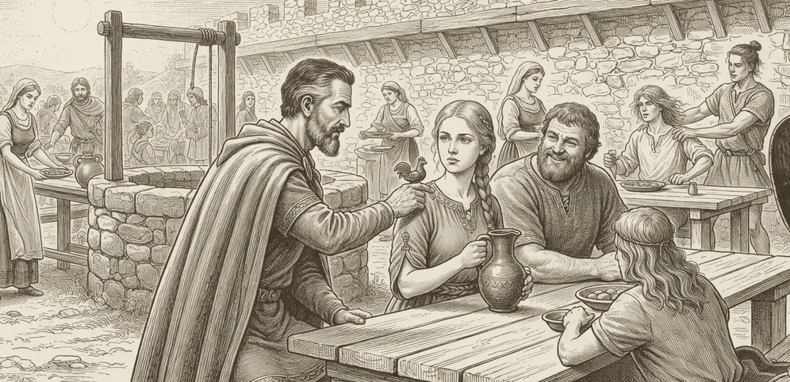
Teudo
La noticia de Gunderico llegó antes que Heremigario, y fue lo que lo trajo.
La trajo un monje. Un monje de verdad, de los que empezaba a haber en Gallaecia, con la cabeza afeitada por delante y una túnica de lana sin teñir, que venía andando desde la Bética camino de un monasterio de los montes de Lucus, y que se paró en la Peña a pedir pan y agua. Agiulfo le dio de comer en el patio porque quería oír noticias. Teudo estaba de guardia en la puerta y lo oyó todo.
Gunderico había muerto. En Hispalis. En primavera.
El monje lo contó con mucho gusto, como se cuentan las cosas que demuestran que uno tenía razón. Gunderico, el rey de los vándalos, el que había cercado a los suevos en los Nervasos, el que había saqueado Hispalis y las islas, había vuelto a Hispalis aquella primavera y había querido entrar en la iglesia grande de la ciudad, la de los mártires, para llevarse lo que quedara. Había puesto la mano en la puerta. Y en ese mismo momento, dijo el monje, levantando el dedo, le había entrado el demonio en el cuerpo, y se había caído al suelo echando espuma por la boca, y se había muerto allí mismo, en las escaleras, delante de sus hombres.
—Castigo de Dios —dijo el monje—. Por tocar lo que es de Dios.
Agiulfo se rio. Los suevos no eran cristianos, casi ninguno; o lo eran a medias, como el padre de Teudo, que rezaba al Dios de los romanos cuando iba a la villa y a los de siempre cuando estaba en casa. Pero nadie le llevó la contraria al monje. Muerto estaba.
—¿Y quién manda ahora? —preguntó Agiulfo.
—Su hermano. —El monje bajó la voz, como si el hermano pudiera oírle desde Hispalis—. Genserico. El hijo de la concubina. Un hombre pequeño, cojo, que se cayó del caballo de joven y se rompió la pierna. Dicen que no se ríe nunca. Que no bebe. Que no duerme. Que habla poco y piensa mucho. —El monje se santiguó—. Dicen que es peor que el otro.
Teudo se lo contó a Asta aquella noche, en la cocina. Asta estaba dándole de cenar al niño Guntario, que tenía tres años y no quería comer. Cuando oyó «cojo», levantó la cabeza.
—¿Cojo?
—Eso dijo el monje. De una caída del caballo.
Asta no dijo nada. Siguió dándole al niño la papilla de castañas, cucharada a cucharada. Pero Teudo vio que le temblaba la mano.
Aquel mes de junio, entre la noticia del monje y la llegada de Heremigario, fue el último tiempo bueno. Teudo lo supo después. En el momento no lo supo nadie.
Se segó el centeno. Fue una buena cosecha, la mejor desde que estaban en el valle, con las espigas tan cargadas que se doblaban, y las mujeres y los hombres segaron juntos, en fila, desde el amanecer, cantando, con los niños detrás recogiendo las espigas que se caían. Se trilló en la era de piedra de detrás del hórreo, con los bueyes dando vueltas encima de las mieses, y el niño Guntario, que tenía tres años y medio, se pasó la trilla sentado encima del trillo, una tabla con piedras clavadas por debajo, gritando de gusto, con el padre sujetándole por la espalda para que no se cayera. Se aventó con las horcas, de tarde, cuando soplaba el aire del río, y la paja volaba y el grano caía, y todo el mundo acababa con paja en el pelo y en la boca y debajo de la ropa.
Y Arsak subió al niño a un caballo por primera vez.
Fue un domingo, en el prado de abajo. Arsak bajó con Estrella, que era mansa y ya no era joven, y la paró junto a la valla. El niño estaba sentado en la valla con Asta. Arsak le miró. El niño le miró a él.
—¿Quieres? —le preguntó Arsak en alano.
El niño entendía alano. Más que suevo, decía Ricila, preocupado. Dijo que sí con la cabeza.
Arsak lo cogió por debajo de los brazos y lo sentó en la grupa de Estrella, sin silla, encima de una manta. El niño se agarró a la crin con las dos manos. Abrió mucho los ojos. Asta se levantó en la valla, con las manos a medio camino, como para cogerle si se caía, y Arsak la miró sin decir nada, y ella se volvió a sentar.
Arsak cogió a Estrella de la brida y echó a andar despacio por el prado. Una vuelta. El niño no se movía. Otra vuelta. El niño soltó una mano de la crin. Otra. El niño soltó la otra mano, y levantó los brazos, y se echó a reír, con una risa que se oyó desde la Peña.
Teudo estaba en la valla también, al lado de su hermano. Ricila miraba a su hijo con la boca apretada, pálido.
—Se va a caer —dijo.
—No se va a caer.
—Yo me caía siempre.
—Tú eras tú. —Teudo le dio un codazo—. Este es de la otra sangre.
Ricila no contestó. Pero al cabo de un rato se rio también, flojo, sin querer, cuando el niño pasó por delante de ellos, en la cuarta vuelta, con los brazos en alto y el pelo al viento, gritando una palabra en alano que quería decir más deprisa.
Arsak no fue más deprisa. Pero se volvió a mirar a la valla, a Asta, y Teudo le vio sonreír. Con toda la cara. Como no le había visto sonreír nunca, en diez años.
Aquella noche, en la cocina, la madre puso la olla en la mesa y sirvió primero a Arsak, como siempre desde hacía años. Luego al padre. Luego al niño, antes que a nadie más, en su cuenco pequeño de madera.
—Hoy ha montado a caballo —dijo—. Hoy es un hombre.
El niño se comió la sopa entera sin protestar, por primera vez en su vida.
Heremigario llegó un mes después, en julio, con sesenta jinetes.
Venía de ver al rey en Bracara. Hermerico estaba muy enfermo, se decía; no se levantaba de la cama; en las asambleas hablaba por él su hijo, Requila, un hombre de treinta años que no se parecía nada a su padre. Y Heremigario era de la sangre del rey, y Requila le necesitaba, y Heremigario lo sabía. Se le notaba en la forma de entrar por la puerta de roble de la Peña. Ya no era la del hombre que mira una casa que piensa comprar. Era la del que viene a ver una casa que ya es suya.
Agiulfo le hizo una fiesta. Mató dos terneros de los galaicos y sacó todo el vino del almacén. Y mandó llamar a los hombres del valle, a todos los suevos libres, a una asamblea en el patio de la Peña, al día siguiente, a mediodía. Y a sus mujeres, para que sirvieran la comida.
Fueron todos. No se podía no ir.
Heremigario habló de pie, en el centro del patio, junto al pozo, con su capa de púrpura aunque hacía un calor que derretía las piedras. Teudo estaba entre los hombres, con su padre, con Ricila. Le miró. Estaba más viejo; tenía ya canas en la barba negra recortada, y la cara más estrecha. Pero los ojos eran los mismos.
—Hay un rey nuevo en la Bética —dijo Heremigario—. Un vándalo. Genserico. Más listo que el otro y más ambicioso. Dicen que tiene barcos. Dicen que quiere África. Dicen muchas cosas. —Hizo una pausa—. Yo digo una: que antes de ir a ninguna parte, querrá saber lo que hay en su espalda. Y en su espalda estamos nosotros. Los suevos. Que le cerramos el paso en los Nervasos.
Los hombres murmuraron.
—Los vándalos tienen espías —siguió Heremigario—. En todas partes. En Lusitania. En Gallaecia. Gente que cuenta lo que ve. Cuántos hombres hay en cada castro, cuántos caballos, por dónde se cruza el Duero. —Miró alrededor, despacio, cara por cara—. Y gente que les ayuda. Que esconde a los vándalos. Que les da de comer. Que les abre la puerta del pajar de noche y les deja escapar por el vado.
Teudo no se movió. Notó a Ricila, a su lado, quedarse muy quieto.
Notó también otra cosa. Que Heremigario no le miraba a él. Ni a Ricila.
Miraba hacia las mesas. Hacia las mujeres que servían.
Cuando terminó la asamblea, los hombres se dispersaron por el patio, hacia la comida, hablando en voz baja. Teudo se quedó junto al pozo. Alguien se le acercó por detrás. Wilja el grande.
Estaba viejo. Tenía más de sesenta años, la espalda doblada de cavar y las manos como raíces. Era el padre de Brunhild y el abuelo del niño Wilja, y había vivido pared con pared con la familia de Teudo desde el Rin. Habían cruzado el hielo juntos. Habían enterrado juntos a la mitad de los suyos por el camino.
No miró a Teudo a la cara.
—Fui yo —dijo.
Teudo no entendió.
—Lo del pajar —dijo Wilja—. Lo del vándalo que se escapó por el vado. Lo conté yo. —Se miraba las manos—. En la fiesta de la siega del año pasado. En la Peña. Estaba borracho. Los hombres de Agiulfo me preguntaban por los tiempos de los Nervasos, por la partida alana, por las aldeas quemadas. Yo les conté. Y les conté lo del vándalo. Como una cosa de risa. Que lo tuvimos atado en el pajar de tu padre y que por la mañana no estaba, y que tu madre dijo que habría sido Dios, o los míos, que nunca atamos bien. —Se le quebró la voz—. Se rieron mucho. Yo también me reí.
Teudo se quedó callado.
—Me preguntaron quién lo había soltado —siguió Wilja—. Y yo les dije que no lo sabía. Que no lo supo nadie. —Levantó por fin la vista—. Pero sí lo sabía. Lo sabía todo el valle. Había visto a tu hermano ir al pajar aquella noche, con la vándala. Y lo vi en mi cara, Teudo, cuando me preguntaron. Lo vieron ellos también. En mi cara.
Teudo miró hacia la mesa de los jefes, a la sombra de la muralla. Agiulfo estaba sentado al lado de Heremigario, hablándole al oído, peinándose la barba con los dedos.
—No quería —dijo Wilja—. Te lo juro por los míos. Por Brunhild. Por el niño. No quería.
—Ya lo sé.
—Yo quise colgar a aquel vándalo. ¿Te acuerdas? Con la horca en la mano. Y tu madre no me dejó. —Wilja casi se rio—. Y ahora el que lo va a pagar es tu hermano.
—Todavía no ha pagado nada nadie.
—Todavía.
Wilja se fue sin decir nada más, despacio, hacia las mesas, encorvado. Teudo le vio sentarse al final de un banco, solo, y quedarse allí sin comer, con las manos encima de la mesa.
No le guardó rencor. Lo pensó luego muchas veces y no se lo guardó. Wilja era un viejo borracho que había contado una historia de risa en una fiesta. Lo que pasaba era que en aquel valle, desde que había llegado Agiulfo, ya no había historias de risa. Todo lo que se decía se apuntaba. Aunque el que lo apuntaba no supiera escribir.
Asta
Asta servía el vino. Le había tocado. Llevaba una jarra de barro en las manos y la túnica de lana de todos los días, la parda, y el pelo recogido en una trenza, y la fíbula prendida en el hombro, como siempre desde la boda. Y notó la mirada antes de verla, como se nota el sol en la nuca.
Siguió sirviendo. Fue de mesa en mesa, llenando cuencos. No levantó la vista. Llegó a la mesa de los jefes, la que estaba a la sombra de la muralla, donde se sentaban Agiulfo y sus hombres. Llenó el cuenco de Agiulfo. Llenó otros. Llegó al de Heremigario.
Heremigario tendió el cuenco. Asta lo llenó.
—Tú eres la vándala —dijo él.
No era una pregunta. Asta no contestó. Acabó de llenar el cuenco, despacio, sin derramar ni una gota, como le había enseñado la madre.
—La del alano —siguió Heremigario—. La que trajeron de la Bética muerta de fiebre, hace diez años. La recuerdo. No te vi, pero me lo contaron. —Se rio—. Ahora estás viva.
Asta levantó la vista.
Y le vio los ojos. Y fue como si se le abriera el suelo debajo de los pies y se cayera, muy deprisa, hacia atrás, a otro sitio. A otro patio. Al de la granja de la Bética, con la higuera y el pozo y la maceta de flores rojas. A la mañana del establo, con el olor de la paja y el de los caballos, y la voz de su padre fuera, en el patio, diciendo algo en latín a un hombre a caballo, y el hombre a caballo riéndose, como se reía Heremigario ahora.
Lo mismo. Todo se repetía. El hombre a caballo que se ríe. La casa que alguien mira para ver cuánto vale. La familia que no puede hacer nada. Y la niña escondida en el hoyo del establo, que lo oye todo.
Solo que ahora la niña no estaba escondida. Estaba de pie delante de él, con una jarra de vino en las manos.
—Sí —dijo Asta—. Estoy viva.
Heremigario dejó de reírse. Se la quedó mirando un momento, con una cara que no supo leer. Luego alargó la mano, despacio, y le tocó la fíbula del hombro con un dedo. El pájaro de bronce. Los ojos rojos.
—Bonito —dijo—. Un pájaro vándalo.
Asta no se movió. Se quedó quieta, con el dedo de aquel hombre en el hombro, a un palmo del cuello. Notó que se le ponía la piel de gallina en el brazo, debajo de la túnica. Notó que alguien, detrás, en la mesa de los hombres, se levantaba. Ricila. Notó que alguien le cogía del brazo y le volvía a sentar. Teudo.
—Es de mi padre —dijo Asta.
—Tu padre está muerto.
—Por eso.
Heremigario retiró la mano. Se rio otra vez, pero de otra manera. Bebió.
—Sírveme otra vez cuando vuelvas —dijo.
Asta siguió con la jarra a la mesa siguiente. No miró atrás. Sirvió hasta que se acabó el vino. Luego fue al pozo, llenó la jarra de agua y siguió sirviendo agua. Cuando se acabó la fiesta, al atardecer, bajó al valle con la madre y con Brunhild, sin decir nada, con el niño Guntario dormido a la espalda.
Brunhild no había dicho nada en toda la tarde. Había estado en la cocina de la Peña, con las otras mujeres, sin salir. Heremigario no la había buscado. No la había mirado. Como si no la conociera.
En el camino del arroyo, a mitad de la bajada, Brunhild se paró. Cogió a Asta del brazo. Le apretó tan fuerte que le hizo daño.
—Te ha tocado la fíbula —dijo.
—Sí.
—A mí me tocó el pelo. —Brunhild tenía la cara blanca—. En el patio de la casa. El día de San Juan. Antes de llevarme. Me tocó el pelo así, con un dedo. Para ver cómo era.
Asta se quedó quieta en mitad del camino.
—Vete —dijo Brunhild—. Vete con el alano. Esta noche. Mañana. Ya.
—¿Adónde?
—A donde sea. —Brunhild la soltó—. A donde no haya reyes.
La madre, delante, no se volvió. Siguió bajando por el camino, despacio, con el cesto de las fuentes vacías en la cadera. Pero Asta vio que andaba más deprisa que de costumbre.
Arsak
Arsak no fue a la asamblea. No era suevo libre. No le llamaron.
Se quedó en el prado de las yeguas, que ya no eran suyas, mirando desde lejos cómo los hombres de Agiulfo las cuidaban mal. Y vio desde allí, a media tarde, llegar al galope por el camino de la Peña a un muchacho de las aldeas, uno de los que habían servido en la fiesta, que le buscaba a él.
El muchacho se paró en la valla. Sin aliento.
—Me manda Teudo —dijo—. Que te diga que Heremigario ha hablado de espías vándalos. Y que ha mirado a la vándala. Y que la ha tocado.
Arsak no dijo nada. Se bajó de la valla. Le dio al muchacho una moneda de cobre, de las pocas que le quedaban. Y se fue andando hacia la casa de labor, despacio, porque si iba deprisa iba a correr, y si corría iba a coger el caballo, y si cogía el caballo iba a subir a la Peña.
En el establo, descolgó la cota de escamas de su padre y la puso encima de la paja. Fue a la cocina, cogió la tinaja de aceite de linaza, la que usaba la madre para los aperos, y volvió.
La aceitó escama por escama. Con un trapo de lana. Despacio. Como hacía su padre en la estepa, junto al fuego, las noches de antes de una batalla, sin hablar, mientras los demás bebían y cantaban. Arsak le miraba de niño, sentado en la piel de oveja, y le parecía que su padre estaba rezando. Luego supo que no. Que estaba pensando. Que el aceite y las escamas eran una manera de que las manos estuvieran ocupadas mientras la cabeza hacía lo que tenía que hacer.
Pensó.
Pensó que Heremigario no había venido por los espías. Que no había espías. Que si los hubiera, Heremigario no lo sabría, porque no se había movido de su tienda en los Nervasos ni para mear. Pensó que Heremigario había venido por otra cosa. Por lo que le negaron en la cima, delante del rey. Por lo que le quitaron en Bracara, delante del rey, con un papel. Por la mujer que le sirvió el vino sin derramar una gota y le dijo que estaba viva.
Pensó en lo que había dicho Fravita: que no se olvida de nada.
Y pensó en lo que había dicho Heremigario en el patio, según el muchacho. Lo del pajar y el vado. Lo del vándalo que se escapó de noche. Eso no se lo había inventado. Eso se lo había contado alguien. Alguien del valle. Ocho años después.
Asta entró en el establo cuando ya era de noche. Venía de la Peña. Traía todavía la jarra de barro vacía en la mano; se le había olvidado dejarla. Se paró en la puerta y le vio con la cota de su padre, el trapo, el aceite. No dijo nada. Entró, dejó la jarra en el suelo, se sentó en la paja a su lado y cogió otro trapo.
Aceitaron la cota juntos. Ella las escamas de la espalda, él las del pecho.
—Me ha tocado la fíbula —dijo Asta al fin.
—Lo sé.
—Brunhild dice que nos vayamos.
—Brunhild tiene razón.
Asta dejó el trapo. Le miró.
—¿Adónde?
Arsak tardó en contestar. Había pensado eso también, toda la tarde. No había reyes en ninguna parte. Al norte, los suevos. Al este, los godos y los vascones. Al oeste, el mar. Al sur, Lusitania, que era de nadie, y más al sur, la Bética, que era de los vándalos. De Genserico. Del cojo.
—Al sur —dijo—. A la villa del Anas. A la de Marcelo y Tecla. Tecla dijo que la puerta seguía ahí.
—Eso fue hace nueve años.
—Las puertas duran más que la gente.
Asta se quedó callada. Luego volvió a coger el trapo y siguió aceitando las escamas de la espalda.
—No me quiero ir —dijo, muy bajo. En vándalo—. Me he pasado la vida yéndome.
—Lo sé.
—Tengo un olivo.
—Lo sé.
—Tiene diez palmos. Este año ha echado flores. No va a dar aceitunas, dice el capataz de la villa. Pero ha echado flores.
Arsak dejó el trapo también. Le puso la mano en la cabeza, en el pelo, como cuando era pequeña y tenía fiebre.
—No nos vamos a ir todavía —dijo—. Puede que no nos vayamos nunca. Puede que Heremigario se vuelva a su casa del Miño y se olvide. —No se lo creía. Ella tampoco—. Pero si hay que irse, nos iremos con las sillas engrasadas. No como la otra vez. No con una yegua sola y un perro y una niña con fiebre. Con todo preparado.
—¿Y Ricila? ¿Y Teudo? ¿Y la madre?
Arsak no contestó.
Siguieron aceitando la cota hasta que se acabó el aceite. Luego Arsak la colgó otra vez en su clavo. Brillaba a la luz de la lámpara como la piel de un pez recién sacado del río.
En la Peña, en lo alto, se veía luz en la casa de Agiulfo, la que había sido de Fravita. Estuvo encendida toda la noche. Arsak la estuvo mirando desde la puerta del establo hasta que amaneció, con la perra Loba a los pies.
Al amanecer, por el camino del norte, salieron sesenta jinetes con escudos negros. Heremigario se iba.
No se iba al Miño. El camino del Miño era el de la derecha, el que subía por el monte. Heremigario cogió el de la izquierda.
El de Bracara.
La acusación
El valle del Duero – otoño de 428
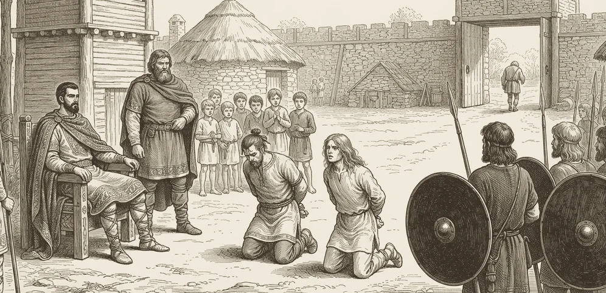
Teudo
Vinieron a por ellos al amanecer, el día después de la vendimia, con la niebla del río todavía en los prados.
Heremigario había vuelto de Bracara con cien jinetes y un papel. El papel lo llevaba un hombre suyo en un estuche de cuero colgado al cuello, como se lleva una reliquia, y lo enseñaba a todo el mundo aunque nadie sabía leerlo. Decía, según el hombre, que Requila, hijo del rey Hermerico, que gobernaba en nombre de su padre enfermo, daba a Heremigario, su pariente, poder para juzgar a los traidores del reino en las tierras del Duero. Mientras durara el peligro de los vándalos.
Teudo estaba en la casa de labor. Se despertó con los ladridos de la perra Loba y salió al patio en camisa. Estaba lleno de caballos. Escudos negros. Lanzas. Dos jinetes tenían ya al padre contra la pared del establo, con una lanza en el pecho. La madre estaba en la puerta de la cocina, con las manos en el delantal. Ricila bajaba la escalera del desván, despacio, con las manos levantadas.
Teudo no sacó la espada. No la llevaba. La tenía colgada dentro, junto a la puerta, donde la colgaba siempre. Pensó luego que había sido mejor así.
Los ataron a los dos, a él y a Ricila, con las manos a la espalda, y los subieron a la Peña andando delante de los caballos, como se sube al ganado. Por el camino del arroyo, entre los castaños, a la vista de todo el valle, que había salido a las puertas a mirar. Teudo vio a Wilja en la puerta de su casa, con la cara gris. Vio a las hijas de Wilja. Vio a los galaicos de la otra orilla. Nadie dijo nada.
No vio a Arsak. Los jinetes lo buscaron por todo el valle, por el establo, por el pajar, por el prado de las yeguas. No estaba. Teudo no supo dónde estaba. No preguntó.
El juicio fue a mediodía, en el patio de la Peña.
No era un juicio. Teudo había visto juicios: en las asambleas de los suevos, delante del rey o de los jefes, con todos los hombres libres alrededor, con testigos de una parte y de otra, con los viejos que sabían lo que decía la costumbre. Aquello no era eso. Aquello era Heremigario sentado en una silla, en el centro del patio, a la sombra de la torre, con Agiulfo de pie a su lado, y cien hombres suyos alrededor, de pie, con las lanzas. Y los de la Peña, los muchachos de Fravita, apartados junto a la muralla, desarmados. Y los dos hermanos de rodillas en el suelo, en mitad del patio, con las manos atadas.
De rodillas. Les habían dado una patada detrás de las piernas para que se arrodillaran. A Teudo se la dieron dos veces, porque la primera se volvió a levantar.
Heremigario leyó la acusación. O la dijo; no la leyó, porque no sabía leer. Que Teudo y Ricila, hijos de Guntmar, suevos libres del valle del Duero, habían acogido en su casa a una vándala y a un alano, enemigos del reino, durante diez años. Que les habían dado tierra, casa y comida. Que uno de ellos se había casado con la vándala. Que en el año del cerco de los Nervasos habían soltado de noche a un guerrero vándalo prisionero, uno de los que habían quemado las aldeas del valle, y le habían ayudado a cruzar el Duero hacia el enemigo. Que en el cerco mismo, el alano había bajado durante la tregua de los muertos y había hablado a solas con un jinete del ejército de Gunderico, en su lengua, un buen rato, delante de testigos. Y que todo eso era traición.
—¿Quién lo dice? —preguntó Teudo.
Uno de los jinetes le dio con el asta de la lanza en la espalda.
—Lo dicen los testigos —dijo Heremigario.
Los testigos fueron tres. Dos hombres de Agiulfo, que juraron haber oído a Wilja el grande contar lo del pajar en la fiesta de la siega. Y un suevo de las aldeas de arriba, un hombre que Teudo apenas conocía, que había estado en los Nervasos con los de Heremigario y que juró haber visto al alano en la ladera, durante la tregua, hablando con el jinete enemigo, y que el jinete le había dado algo. Un arco.
Era mentira. Félix le había ofrecido el arco y Arsak no lo había cogido. Teudo lo sabía porque Arsak se lo había contado aquella misma noche, en la cima. Pero era mentira con un trozo de verdad dentro, y esas son las peores. Porque Arsak había hablado con Félix. A solas. En alano. Mucho rato. Cien suevos lo habían visto desde la empalizada.
Llamaron a Wilja.
Le trajeron del valle a empujones. Le pusieron delante de Heremigario. Le preguntaron si era verdad lo del pajar. Wilja miró a Teudo, de rodillas en el suelo. Miró a Ricila.
—El vándalo se escapó —dijo—. Nadie sabe cómo.
—¿Nadie?
Wilja se quedó callado.
—Mírame —dijo Heremigario—. Tienes una hija. Tienes un nieto. ¿Quién soltó al vándalo?
Wilja no contestó. Se quedó de pie, temblando, mirando al suelo. Mucho rato. Luego hizo una cosa que Teudo no olvidó nunca: se dio la vuelta, de espaldas a Heremigario, y se fue andando hacia la puerta de la Peña. Despacio. Sin permiso. Los jinetes le miraron. Heremigario se rio.
—Dejadlo —dijo—. Ya ha contestado.
Entonces habló Ricila.
Se puso de pie. Le volvieron a empujar y se volvió a poner de pie, con las manos atadas a la espalda, tambaleándose, y esta vez Heremigario levantó la mano para que le dejaran. Por curiosidad. Como se deja hablar a un perro que ha aprendido a sentarse.
Ricila habló primero en latín. Teudo no le entendió. Nadie le entendió en el patio, salvo quizá dos o tres. Habló despacio, con la voz que ponía para leer en el pórtico de la villa, clara, sin gritar. Teudo reconoció palabras sueltas: «lex», «rex», «testis», «Hermericus». Luego Ricila se paró, respiró, y dijo lo mismo en suevo.
—He hablado en la lengua de las leyes —dijo— para que conste que lo que digo es ley y no queja. Ahora lo digo en la nuestra, para que lo entendáis los que estáis aquí.
Y lo dijo. Que el alano y la vándala habían llegado a la Peña en el otoño de 418, enfermos, casi muertos, y que Fravita, que era entonces el hombre del rey en la Peña, los había interrogado y los había acogido. Que Fravita había respondido por ellos ante el rey, como era su obligación, y que el rey lo había sabido y no había dicho nada. Que el alano había subido a los Nervasos con los hombres de Fravita, por su voluntad, sin que nadie se lo mandara, y había estado en la empalizada del este el día del asalto, tirando con un arco de niño, al lado de su hermano. Que cien hombres le habían visto. Que el jinete con el que habló en la tregua era un muchacho al que él había criado en una villa de Lusitania, y que el muchacho le había pedido que se fuera con los alanos, y que el alano le había dicho que no, y se había quedado. Que se había quedado con los suevos cuando podía haberse ido con los suyos. Que eso, en la lengua de los suevos y en la de los romanos, no se llamaba traición. Se llamaba lo contrario.
—Y el vándalo del pajar —dijo Ricila— lo solté yo.
Hubo un murmullo en el patio. Teudo cerró los ojos.
—Lo solté yo —repitió Ricila—. Con mi mujer. Tenía una pierna rota y una flecha en la espalda, y no podía tenerse de pie. Le dimos un palo y un pan. No le dimos ninguna espada ni ningún secreto. No sabía cuántos hombres había en la Peña, ni por dónde se cruzaba el Duero, porque se lo cruzamos nosotros. Lo soltamos porque los suevos no matamos a un hombre atado que no sabe por qué se muere. Eso lo dijo mi madre en el patio de mi casa, delante de todo el valle, y todo el valle lo oyó. Si eso es traición, que me cuelguen a mí. Pero mi hermano no sabía nada. Estaba en los Nervasos. Comiendo caballo.
Se calló.
El patio estaba en silencio. Teudo abrió los ojos. Vio a los muchachos de la Peña, junto a la muralla, mirando a Ricila con la boca abierta. Vio a algunos hombres de Heremigario mirarse entre ellos. Vio a Agiulfo peinarse la barba con los dedos, despacio, sin sonreír.
Heremigario aplaudió. Tres veces. Despacio.
—Muy bien —dijo—. Hablas como un romano. Como un obispo. —Se levantó de la silla—. ¿Sabes lo que hacen los romanos con los que hablan así? Les escuchan, les dan las gracias y les cortan la cabeza. Como a ese que tanto lees. Cicerón.
Ricila se quedó blanco.
—Has confesado —dijo Heremigario—. Delante de cien testigos. Has soltado a un enemigo del reino. Tu hermano te ha cubierto. Vuestra familia ha dado casa y tierra a una vándala y a un alano durante diez años, mientras los vándalos quemaban el valle. —Miró alrededor—. Eso es lo que he oído yo. Y lo que va a oír el rey.
Hizo una pausa.
—Los hijos de Guntmar van a Bracara mañana. Atados. Para que el rey los juzgue y los cuelgue, como se cuelga a los traidores. Su tierra es del rey desde hoy. El alano, cuando lo encontremos, no va a Bracara: se le cuelga aquí, en el castaño del camino. Y la vándala y el niño vienen conmigo.
Nadie dijo nada.
A los dos hermanos los metieron en el almacén de la Peña, el del grano, a oscuras, y les echaron la barra de hierro por fuera.
Dentro del almacén estaba oscuro como en una cueva y olía a centeno y a ratones. Por una rendija de la puerta entraba un hilo de luz gris que se fue poniendo naranja y luego se apagó. Los dos hermanos estaban sentados en el suelo de tierra, entre los sacos, atados, espalda contra espalda, porque así se los habían dejado.
Pasó mucho rato antes de que hablara ninguno.
—Lo siento —dijo Ricila al fin.
—¿El qué?
—Lo de que lo solté yo. Delante de todos. —Ricila respiró hondo—. Pensé que si lo decía, te salvaba a ti. Que si había un culpable, dejaban al otro. Lo he leído muchas veces. En los libros funciona.
—En los libros —dijo Teudo.
—En los libros.
Se quedaron callados. Fuera se oían los pasos de los guardias, y las risas de los hombres de Heremigario en la casa de Agiulfo, y un perro que ladraba en el valle, lejos.
—¿Tienes miedo? —preguntó Ricila.
Teudo lo pensó.
—Sí.
—Yo también. —Ricila se rio, flojo, en la oscuridad—. Creía que tú no tenías nunca.
—Siempre. En los Nervasos, cuando salieron de la niebla, me meé encima. No se lo he contado a nadie.
Ricila se quedó callado. Luego se echó a reír, de verdad, sin poder parar, con la espalda temblando contra la de su hermano. Y Teudo se rio también. Atados, a oscuras, en un almacén, esperando a que los colgaran, se rieron los dos como no se reían desde niños.
Cuando pararon, Ricila dijo:
—¿Te acuerdas del Rin?
—Me acuerdo.
—Yo no me acuerdo de casi nada. Tenía cinco años. Me acuerdo del frío. Y del caballito, que se me había caído del carro, y que volví a por él. Y de que tú me cogiste del brazo, después, y me diste un golpe en la cabeza, y me llevaste a rastras por el hielo, llorando los dos.
—Te di un golpe porque casi te ahogas.
—Ya lo sé. —Ricila se quedó callado un momento—. Lo que quiero decir es que tú siempre has venido a buscarme. En el Rin. Al castro de los galaicos, cuando subí yo solo a por el escudo de Odo, no llegaste a ir, pero llevabas tres semanas pensando cómo subir a buscarlo tú. En Bracara. Siempre.
—Esta vez no puedo.
—Ya lo sé. —Ricila buscó con los dedos atados la mano de su hermano, a su espalda, y la encontró—. Por eso te lo digo ahora. Por si no hay luego.
Teudo le apretó los dedos.
No dijeron nada más. Se quedaron así, espalda contra espalda, en la oscuridad, con los dedos agarrados, oyendo a los guardias, oyendo al perro del valle, que no paraba. Teudo pensó en su padre contra la pared del establo. En su madre en la puerta de la cocina. En Brunhild. Pensó en la torre de la Peña y en Fravita muriéndose en ella, diciéndole que lo hacía bien.
Pensó que no lo había hecho bien. Que había aguantado, como le dijo Fravita. Que había aguantado tanto que ahora estaba atado en un almacén, y su hermano con él, y la mujer de su hermano y su sobrino en manos de Heremigario, y que a lo mejor aguantar no era siempre lo que había que hacer.
Pensó que, si salía de allí, no iba a volver a aguantar nada.
Fuera, el perro del valle dejó de ladrar. Teudo no se dio cuenta. Era la perra Loba. Y había dejado de ladrar porque alguien le había puesto una mano en el lomo, en un brezo del monte, y le había dicho en alano que se estuviera quieta.
Asta
Asta no estaba en el patio de la Peña. La tenían en la casa de labor, en la cocina, con dos hombres de Heremigario en la puerta.
Fue lo que dijo Heremigario a sus hombres al amanecer, desde el caballo, mientras se llevaban a los hermanos: que la vándala y el niño se quedaban en la casa hasta el día siguiente. Que preparara sus cosas. Que al día siguiente salían para Bracara, y ella iba con él. A su casa del Miño. Con el niño. Que el niño era hijo de un traidor, pero también era medio suevo, y que él, Heremigario, era generoso y lo criaría.
Lo dijo mirándola. Ella estaba en la puerta de la cocina con el niño Guntario en brazos.
Asta no se movió. No gritó. No suplicó. Se quedó en la puerta hasta que los caballos se fueron por el camino del arroyo, con los dos hermanos atados delante. Luego entró en la cocina y se sentó en el banco del padre, con el niño en el regazo, y se quedó allí, quieta, mirando el fuego.
La madre entró detrás. Cerró la puerta. Se quedó de pie, mirándola, con las manos en el delantal.
Luego se fue a la despensa.
Asta la oyó trajinar dentro. Abrir tinajas. Cerrar arcones. Volvió con una jarra de barro de las grandes, de las de la sidra, y un cesto. Del cesto sacó un manojo de cabezas secas de amapola, de las que se recogían en verano en los bordes del centeno, cuando se caían los pétalos y quedaba la cápsula verde, que luego se ponía parda. Las que Brunhild usaba, una o dos, para que durmiera el niño Wilja cuando le dolían los dientes. Había muchas. Un manojo entero.
La madre las echó en un mortero de piedra y se puso a machacarlas.
Asta la miró sin entender.
—Siéntate a mi lado —dijo la madre, sin levantar la vista—. Y machaca tú también. Hacen falta muchas.
Asta dejó al niño en la cuna de mimbre, junto al fuego, aunque ya le quedaba pequeña. Se sentó al lado de la madre. Cogió la mano del mortero.
Machacaron toda la mañana, despacio, sin hacer ruido. Luego la madre echó el polvo en un cazo con agua y lo puso a hervir a fuego lento, mucho rato, hasta que el agua se puso parda y espesa y olió a tierra y a algo amargo. Lo coló por un paño de lino. Lo echó en la jarra de la sidra. Llenó la jarra de vino, del bueno, del último que les quedaba del ánfora de Materno, que había guardado para el bautizo del niño, si algún día lo bautizaban. Le echó miel. Mucha. Para que no se notara.
—Prisca —dijo Asta. Muy bajo.
La madre la miró.
—Una mujer que me curó de pequeña —dijo Asta—. En la Galia. Me dio amapola para la fiebre. Me dijo: «poca».
—Esto no es para la fiebre —dijo la madre.
Por la tarde, la madre salió al patio con la jarra y dos cuencos. Los hombres de la puerta eran dos muchachos de veinte años, de las tierras del Miño, aburridos, que llevaban de pie desde el amanecer sin comer. La madre les sirvió vino. Les sacó pan, queso y tocino. Les preguntó por sus madres. Se sentó con ellos en el banco del patio, al sol, como se sentaba con los segadores en verano, y les contó historias del Rin, del hielo, de la noche de la nieve, mientras les volvía a llenar los cuencos. Los muchachos bebieron. Se rieron. Uno dijo que su madre hacía el queso igual.
Asta, mientras tanto, preparaba las cosas. En silencio. En el desván. Lo que había dicho Arsak que había que llevar, y nada más. Ropa de lana para el niño, dos mudas. Su manta. La bolsa de tela con el higo y la tablilla de Félix, que se colgó al cuello por dentro de la túnica. El cesto de las medicinas de Teodoro, que el viejo le había dado aquel verano porque ya no podía con él: la aguja curva, el hilo de lino en su frasco de vino, la sonda, el cuchillo pequeño, la miel, las hilas, la cuchara de Diocles. La espada de la casa, la del abuelo de Ricila, envuelta en su paño engrasado, atada a la espalda con una correa.
Y la tablilla de cera con su nombre. ASTA. La primera palabra que había aprendido a leer, con Ricila, en el pórtico de la villa. La metió en la bolsa también.
Al anochecer bajó a la cocina. Brunhild estaba allí. Había venido de casa de Wilja, por el huerto, sin que la vieran. Tenía los ojos rojos.
—Mi padre ha vuelto —dijo—. No ha dicho nada. Se ha metido en la cama vestido.
—No dijo nada en el juicio —dijo la madre—. Eso es lo que dijo.
Brunhild no contestó. Abrazó a Asta. Luego se agachó junto a la cuna y besó al niño Guntario, que dormía con el caballito de madera del niño Wilja en la mano, el de la feria de Lucus, que el niño Wilja le había regalado aquel verano diciendo que ya era mayor para juguetes.
Fuera, en el patio, se oían roncar los dos muchachos del Miño, en el banco, el uno contra el otro, como dos sacos.
La madre se asomó a la puerta y los miró.
—Poca no —dijo.
Arsak
Arsak estaba en el monte desde el amanecer. La perra Loba le había despertado.
Dormía en el pajar, como siempre desde la boda. La perra se puso a gruñir de madrugada, antes de que se oyeran los caballos, mirando hacia el camino del norte, con el pelo del lomo erizado. Arsak no esperó a oír nada. Cogió la espada, el arco de olmo, el carcaj, la cota de su padre, que se puso por encima de la túnica a oscuras. Salió por la parte de atrás del pajar, la que daba al huerto. Pasó junto al olivo. Saltó la tapia. Subió por el monte, entre los castaños, con la perra detrás, sin hacer ruido, hasta un sitio desde el que se veía la casa de labor y la Peña a la vez: unas rocas grandes, cubiertas de brezo, donde se escondían los muchachos de pequeños cuando jugaban a la guerra.
Desde allí lo vio todo. Los caballos en el patio. Al padre contra la pared. A los dos hermanos atados, subiendo a la Peña delante de los jinetes. A los hombres buscándole a él por el valle, por el prado, por el establo, revolviendo la paja con las lanzas.
Y a ella en la puerta de la cocina, con el niño.
No bajó. Fue lo más difícil que había hecho en su vida. Más que dejar a Félix en la ladera. Más que cruzar media Hispania con una niña con fiebre. Quedarse en las rocas, quieto, tumbado en el brezo con la mano en el lomo de la perra para que no ladrara, viendo cómo se llevaban a los dos hermanos y cómo Heremigario miraba a Asta desde el caballo.
Si bajaba, le mataban. Y si le mataban, no había nadie para abrir la puerta.
Esperó todo el día. Vio el juicio desde lejos, en el patio de la Peña, pequeño como un juego de niños: la silla de Heremigario, el corro de lanzas, los dos hermanos de rodillas. Vio a un viejo darse la vuelta y salir andando por la puerta, solo. No supo quién era. Vio a Ricila levantarse, aunque le volvían a empujar, y hablar. Mucho rato. No le oyó. Vio a Heremigario reírse.
Al atardecer vio que metían a los hermanos en el almacén de la Peña, el del grano, el que tenía la puerta de roble pequeña con una barra de hierro por fuera. Vio que ponían a dos hombres en la puerta del almacén. Y a dos en la puerta grande de la muralla de fuera, la de la llave larga.
Uno de los de la puerta grande era Hunila. Lo conoció por el brazo torcido.
Cuando se hizo de noche, Arsak bajó del monte.
No fue a la casa de labor. Sabía lo que estaba haciendo la madre. Lo había sabido al verla salir al patio, por la tarde, con la jarra y los cuencos, y sentarse en el banco al sol con los dos muchachos del Miño. La madre de Teudo no se sentaba nunca con nadie en un banco a media tarde. Tenía demasiado que hacer.
Subió a la Peña por el lado del oeste. Por donde había pensado subir una noche a matar a Agiulfo, y no había subido. La muralla de fuera tenía allí una parte vieja, de antes de los suevos, de los galaicos, donde las piedras estaban mal encajadas y se podía meter el pie entre ellas. La torre no veía aquel rincón: le tapaba el tejado de la casa redonda del fondo, la que había sido de Asta y Ricila. Lo había mirado cien veces, en las guardias. Lo había mirado sin saber para qué.
Trepó. Despacio. Con la cota de su padre sonando un poco, apenas, escama contra escama, como la lluvia fina. La perra se quedó abajo, tumbada en el brezo, sin moverse, como le había enseñado. Arriba, en lo alto de la muralla, se quedó tumbado un momento, escuchando. Luego bajó al otro lado, a la tierra blanda del huerto que había hecho Asta detrás de la casa redonda.
Rodeó la casa. Llegó al patio por detrás del pozo.
Los dos hombres del almacén estaban sentados en el suelo, contra la pared, junto a la puerta con la barra de hierro, medio dormidos, porque la noche era fría y llevaban horas allí. Eran de Heremigario. No eran de la Peña.
Arsak no los mató. Lo pensó. Habría sido fácil. Pero un muerto en la Peña era un muerto que Heremigario contaría luego en Bracara, delante del rey, como prueba de todo. Al primero le dio con el pomo de la espada detrás de la oreja, y se dobló sin un ruido. El segundo abrió la boca para gritar y Arsak le tapó la boca con la mano y le apretó el cuello con el otro brazo, como se sujeta a un potro que no se deja, hasta que se quedó blando. Lo dejó en el suelo, al lado del otro. Respiraban los dos.
Quitó la barra de hierro de la puerta del almacén. Sin hacer ruido. La dejó en el suelo.
Abrió la puerta.
Dentro estaba oscuro y olía a grano. Teudo y Ricila estaban sentados en el suelo, atados, de espaldas el uno al otro. Levantaron la cabeza a la vez.
Arsak entró, se agachó y les cortó las cuerdas con el cuchillo.
—Vamos —dijo.
Cruzaron el patio de la Peña a oscuras, los tres, pegados a las paredes de las casas redondas, hasta la puerta grande. Hunila estaba allí. Solo. El otro guardia, el de Heremigario, estaba tumbado en el suelo a su lado, con la cabeza en una piedra. Hunila tenía en la mano la lanza, del revés, por el asta.
Miró a Teudo.
—Me dijiste que me avisarías —dijo— si un día no aguantabas.
—No he tenido tiempo.
—Ya. —Hunila se encogió de hombros—. He aguantado yo por ti.
Sacó de su cinturón una llave de hierro larga, con los dientes gastados. La de la puerta de roble. Teudo la miró. Era la suya. La que le había dado Fravita en el patio, una mañana de mayo, delante de todos.
—Se la he quitado a Agiulfo del clavo —dijo Hunila—. Está borracho. Como todas las noches.
Metió la llave en la cerradura. La giró. La puerta de roble de la Peña se abrió hacia fuera, despacio, con un crujido que a Arsak le pareció que se oía en todo el valle.
Fuera estaba la noche, el monte, el camino del arroyo, la perra Loba esperando en el brezo.
Arsak abrió la puerta del todo.
La huida
Del Duero al Tajo – invierno de 428 a 429
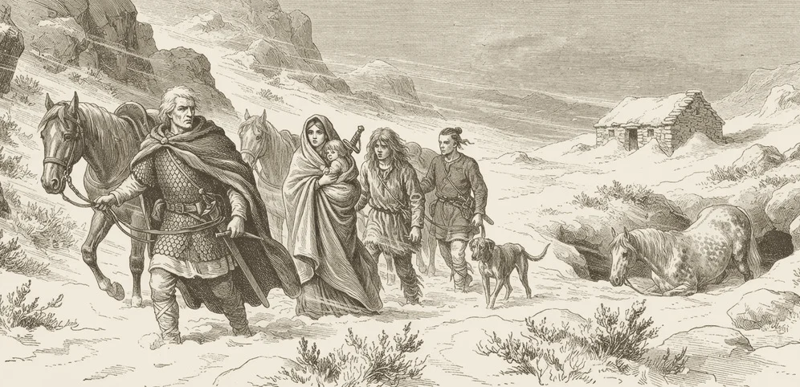
Teudo
Hunila le pidió que le pegara, y Teudo le pegó.
Fue en la puerta de la Peña, con la puerta de roble abierta a la noche y Arsak y Ricila ya fuera, en el camino. Hunila le dio la llave larga de hierro. Teudo no la quiso coger. Hunila se la metió en el cinturón a la fuerza.
—Era de Fravita —dijo—. Era tuya. Llévatela.
—Te van a preguntar por ella.
—Les diré que me la quitaste. Que me pegaste. —Hunila se señaló la cara—. Pégame. Fuerte. Que se vea.
—Hunila…
—Si no me pegas, me cuelgan del castaño al lado del alano. Pégame.
Teudo le pegó. En la cara, con el puño cerrado, una vez. Hunila se cayó de espaldas contra la puerta y se quedó sentado en el suelo, con la nariz sangrando, riéndose.
—Así —dijo—. Ahora átame.
Le ataron con la cuerda de los guardias del almacén, de pies y manos, y le dejaron sentado junto al guardia de Heremigario, que seguía sin sentido. Antes de irse, Teudo se agachó a su lado.
—Gracias.
—Vete. —Hunila escupió sangre—. Y vuelve un día. A por la Peña. Te estaremos esperando.
Bajaron al valle a oscuras, corriendo por el camino del arroyo entre los castaños, con la perra Loba delante. No había luna. En la casa de labor había una luz en la cocina, solo una, pequeña.
En el patio estaban los caballos. Cinco, ensillados, con las alforjas llenas, atados a la valla del establo. Niebla, vieja, con la cabeza baja. Estrella, su hija. Viento, el semental tordo, nervioso, dando patadas. Y las dos yeguas galaicas. En el banco del patio roncaban los dos muchachos del Miño, uno encima del otro.
La madre estaba en la puerta de la cocina, con la lámpara. Detrás, Asta, con el niño Guntario dormido en brazos, envuelto en una manta, y la espada de la casa atada a la espalda. Brunhild. El niño Wilja, que tenía trece años y lo miraba todo con los ojos muy abiertos.
Y el padre. Sentado en su banco, junto al fuego. Sin ropa de viaje. Sin manto.
Teudo lo vio desde la puerta y lo entendió antes de que nadie dijera nada.
—Padre.
—No voy —dijo el padre.
—Padre, mañana vienen. Por la tierra. Por la casa. Por ti.
—Que vengan. —El padre no se levantó—. Esta tierra me la dio Materno. La aré yo. Enterré en ella a Odo, que era como otro hijo, y al buey Viejo, y a Fravita. Crucé el Rin con tu madre y con vosotros dos para llegar aquí, y aquí me quedo. —Le miró—. Tengo sesenta y cinco años, Teudo. No aguanto un mes a caballo por los montes. Os retrasaría. Y si os retraso, os cogen.
—Te van a colgar.
—No me van a colgar. —El padre casi sonrió—. Soy un viejo campesino que no sabe nada. Mis hijos se han ido de noche. Yo estaba dormido. Mi mujer estaba dormida. —Señaló con la cabeza hacia el patio, donde roncaban los dos muchachos—. Y los hombres de Heremigario, también.
Teudo se volvió hacia la madre.
La madre no dijo nada. No hacía falta. Se había quitado el delantal. Tenía puesto el pañuelo de las fiestas. Estaba de pie junto al padre, con la mano en su hombro.
—Madre…
—Yo me quedo con él —dijo la madre—. Alguien tiene que hacerle la sopa.
Teudo no pudo contestar. Se quedó en la puerta, con la llave de Fravita en el cinturón, y le pareció que se le partía algo por dentro, en el pecho, como se parte una tabla vieja cuando se le pone demasiado peso encima. Notó la mano de Ricila en la manga, con dos dedos, sin tirar.
Brunhild se acercó. Le miró la muñeca derecha. La cinta roja de su boda con Odo, la que le había dado diez años antes, antes de los Nervasos, estaba allí todavía, descolorida, deshilachada, atada con tres nudos.
—Te dije que no te la quitaras —dijo Brunhild.
—No me la he quitado.
—Pues no te la quites.
Y le besó. En la boca. Delante de todos. Deprisa, como se hace una cosa que se tenía que haber hecho hace años y ya no hay tiempo. Luego se apartó y cogió al niño Wilja de los hombros, y se quedó detrás de la madre, con la cara blanca, sin llorar.
—Volveré —dijo Teudo.
—Ya lo sé —dijo Brunhild—. Por eso.
Salieron del patio de la casa de labor cuando faltaban tres horas para el amanecer, por el camino del arroyo, hacia el vado de abajo, el de las truchas, el que habían cruzado una noche con un vándalo herido. Teudo iba el último. Se volvió una vez. En la puerta de la cocina se veía la luz de la lámpara, y en la luz, dos figuras pequeñas, una junto a otra, quietas.
Luego el camino dobló entre los castaños y ya no se vio nada.
Asta
Cruzaron el Duero con el agua por la cincha, en la oscuridad, y Asta llevaba al niño atado al pecho con una tela para tener las dos manos en las riendas.
El agua estaba helada. Era noviembre. El río venía crecido de las lluvias del otoño, ancho, negro, rápido, y en el vado de abajo, que en verano se cruzaba a pie, Estrella perdió pie dos veces y nadó, con Asta encima, agarrada a la crin, con el agua subiéndole hasta la cintura. El niño se despertó con el frío y se puso a llorar. Asta le tapó la boca con la mano. No por miedo a que los oyeran: no había nadie. Por costumbre. Porque así se cruzaban los ríos, en su vida: de noche, a oscuras, tapando bocas.
En la otra orilla, en Lusitania, Arsak no les dejó parar. Ni para secarse. Les hizo seguir al trote por la orilla, por dentro del agua, por donde no había más que piedras, durante más de una milla, río arriba. Para que no quedaran huellas.
—Por la mañana van a cruzar por el vado —dijo—. Van a buscar las huellas en la otra orilla. No las van a encontrar. Van a pensar que hemos ido río abajo, hacia el mar, que es lo que haría cualquiera. Y nosotros vamos al sur.
Al amanecer salieron del río por un arroyo que bajaba de los montes, y siguieron por el arroyo, por dentro del agua también, hasta que se hizo de día del todo. Luego subieron al monte.
Así fueron los primeros diez días. Por los arroyos. Por las rocas. Por los sitios donde no queda huella. De noche casi siempre, y de día escondidos en barrancos, en bosques de encinas, en cuevas que Arsak encontraba no se sabía cómo. Sin fuego, los primeros días. Comiendo lo que había metido la madre en el saco: harina tostada mojada en agua, castañas secas, queso duro, tocino.
El niño Guntario no entendía nada. Tenía tres años y medio. Preguntaba por la abuela. Preguntaba por el abuelo. Preguntaba por el niño Wilja y por la cabra y por la cuna. Asta le decía que iban de viaje. Que la abuela iba a venir luego. Que el abuelo se había quedado cuidando las vacas. El niño la miraba con sus ojos grises, que eran los de Guntario el viejo, y no le creía. Asta se daba cuenta de que no le creía. Y de que se callaba igual. Como se había callado ella, de pequeña, en los carros de la Galia, cuando le decían que ya faltaba poco.
El octavo día encontraron a los pastores.
Fue Arsak el que los olió antes de verlos: humo de leña de encina y olor a oveja, mucho, de rebaño grande. Se pararon en un barranco. Arsak subió solo a mirar y volvió al rato.
—Una majada —dijo—. Un hombre viejo, dos mujeres, unos niños. Muchas ovejas. Bajan al sur, a pasar el invierno.
—¿Nos ven? —preguntó Teudo.
—Ya nos han visto. Los perros. —Arsak se encogió de hombros—. Es mejor ir que esconderse.
Fueron. Llevando los caballos de la brida, despacio, con las manos a la vista. La majada era un cercado de piedra seca en una ladera, al resguardo del viento, con dos chozos redondos de piedra y techo de ramas, iguales a los de la sierra, y dentro del cercado cientos de ovejas apretadas unas contra otras, balando. Cinco perros grandes, de los de los lobos, con collares de hierro con pinchos, salieron a recibirlos enseñando los dientes. Un viejo con una zamarra de piel de oveja y un cayado más alto que él los llamó con un silbido y los perros se pararon en seco.
El viejo los miró. A los caballos. A la espada de Teudo. Al alano. A la mujer con el niño en brazos.
—Galaicos no sois —dijo en un latín de pastor, roto, con palabras de su lengua mezcladas.
—No —dijo Ricila, en el mismo latín—. Somos de los que huyen.
El viejo se quedó pensando. Luego se apartó del hueco del cercado.
—Los que huyen comen —dijo—. Pasad.
Les dieron de comer en el chozo grande, alrededor del fuego del centro, sentados en pieles de oveja. Cuajada, hecha aquella misma mañana con la leche de las ovejas y cuajo de cabrito, en un cuenco de madera, blanca y temblona, con miel por encima. Pan negro, de centeno y bellota, duro como una piedra, que había que mojar en la leche caliente. Migas de pan frito en manteca con un poco de tocino. Para el niño, un cuenco de leche recién ordeñada, tibia todavía, con espuma, que se bebió de un trago y pidió más.
Las mujeres del viejo, una mayor y una joven que debía de ser su hija, no hablaban latín. Miraban a Asta y al niño. La joven tenía un niño de la misma edad que Guntario, colgado a la espalda en una piel de cabra. Los dos niños se miraron un rato largo por encima del fuego, muy serios, como se miran dos perros que no se conocen. Luego el de la pastora le tendió a Guntario un hueso de oveja, uno de los de jugar, una taba. Guntario la cogió. Al rato estaban los dos en el suelo del chozo tirando tabas, sin hablar ninguna lengua, entendiéndose perfectamente.
El viejo y Arsak hablaron de caminos. El viejo conocía todas las cañadas de la sierra, de memoria, como Arsak conocía las estrellas: llevaba cincuenta inviernos bajando con las ovejas del norte al sur y cincuenta veranos subiendo del sur al norte, por los mismos pasos que había usado su padre y el padre de su padre, desde antes de los romanos. Le dijo a Arsak por dónde se cruzaba el puerto más bajo. Dónde había agua. Dónde había un chozo para pasar la noche. Dónde había un vado en el río siguiente que no conocían los soldados. Arsak le escuchó sin interrumpirle, asintiendo, repitiendo los nombres en voz baja para no olvidarlos.
—¿Por qué nos ayudas? —le preguntó Teudo al final, por boca de Ricila.
El viejo se rascó la barba.
—Porque mañana pasarán otros preguntando —dijo—. Con espadas. Y les diré que no he visto a nadie. —Escupió al fuego—. Llevo cincuenta años viendo pasar a los que mandan. Romanos, suevos, vándalos, godos. Todos preguntan. Todos tienen espadas. Ninguno me ha dado nunca nada. —Señaló con el cayado al niño Guntario, que se reía en el suelo con el suyo—. Vosotros le habéis dado a mi nieto un amigo por una tarde. Ya es más.
Durmieron aquella noche en el chozo de los pastores, con el calor de las ovejas al otro lado de la pared de piedra, oyéndolas respirar. Fue la primera noche desde el Duero que Asta durmió de verdad.
Por la mañana, al irse, la pastora joven le puso a Asta en las manos un paño atado con algo dentro. Era un queso. Pequeño, duro, de oveja, envuelto en hojas de helecho.
Asta no tenía nada que darle. Miró a su alrededor. Luego se quitó de la muñeca una pulsera de cuero trenzado que le había hecho Ricila hacía años, en el vado, una tarde de lectura, y se la dio.
La pastora se la puso. Le quedaba grande.
El undécimo día empezó a nevar.
Estaban subiendo las sierras. Las que separan el Duero del Tajo, como un muro, de este a oeste: montes altos, pelados por arriba, con bosques de robles y de castaños en las laderas y, más arriba, nada más que piedra y brezo. Arsak no las conocía, pero sabía que había que cruzarlas, y que había pasos de pastores, y que los pastores los usaban para bajar los rebaños al sur en invierno. Buscaba esos pasos. Por las cañadas. Por los excrementos de las ovejas en las piedras, por las majadas de piedra seca, por los chozos.
La nieve los cogió en lo alto. Primero unos copos sueltos, grandes, que bajaban despacio. Luego más. Luego el viento. Y en una tarde, el mundo se volvió blanco: el cielo, el suelo, las rocas, todo, y no se veía a diez pasos, y el viento soplaba de lado, cortando la cara como un cuchillo.
Asta llevaba al niño dentro del manto, contra el pecho, envuelto en todo lo que tenían. Notaba el calor del niño. Notaba su respiración. Cada poco le metía la mano dentro, a tocarle la cara, para saber si estaba caliente. Lo estaba.
Niebla se cayó esa noche.
Iban a pie, llevando a los caballos de las riendas, porque la nieve llegaba a las rodillas y no se veía el suelo. Niebla iba delante de Asta. Asta la oyó resbalar. Un ruido de cascos sobre piedra, un relincho corto, y luego nada. Cuando llegó, la yegua estaba tumbada de lado en la nieve, en una hondonada, con una pata delantera doblada de una manera que no se doblaban las patas.
Arsak llegó corriendo. Se arrodilló a su lado. Le tocó la pata. Le tocó la cabeza.
Se quedó un momento quieto.
—Está rota —dijo.
Asta no dijo nada. Se arrodilló también, en la nieve, con el niño dentro del manto, y le puso la mano a Niebla en el cuello. La yegua respiraba deprisa. Tenía los ojos muy abiertos. Asta le habló. En vándalo. Le dijo lo que le decía de pequeña, en la granja, cuando la yegua era de su padre y ella se subía al pesebre para peinarle la crin. Que era buena. Que era la mejor. Que la quería.
Niebla la había llevado desde la Bética. Con fiebre. Cuatro días, al final, con Arsak a pie al lado, sujetándola. Niebla había parido a Estrella en el valle del Duero. Niebla tenía más de veinte años.
—Asta —dijo Arsak.
Asta se levantó. Se apartó. Se puso de espaldas, con el niño dentro del manto, y le tapó la cara al niño con la mano. Aunque el niño dormía. Aunque no hacía falta.
Oyó a Arsak decir algo, en alano, bajito. Luego el cuchillo.
Luego nada. Solo el viento.
Pasaron aquella noche en un chozo de pastores medio enterrado en la nieve, a cien pasos de la hondonada, que Teudo encontró a tientas. Era redondo, de piedra seca, con el techo de ramas y tierra, tan bajo que no se podía estar de pie, y olía a oveja y a humo viejo. Cabían los cuatro y el niño apretados, con la perra encima de los pies. Los caballos se quedaron fuera, pegados a la pared del lado del viento, con las mantas de las sillas por encima.
El niño empezó a toser de madrugada. Una tos seca, pequeña, que no paraba.
Asta le tocó la frente en la oscuridad. Estaba caliente. No mucho. Se quitó la túnica, a oscuras, con el frío que hacía, se quitó al niño de la ropa y se lo puso contra la piel, contra el pecho, desnudo, y se tapó con todo lo que había encima. Como hacían las mujeres vándalas en los carros, en los inviernos de la Galia, con los niños que se enfriaban. Se lo había visto hacer a su madre con un niño de otra, una noche, en el Rin. Se acordó en ese momento. No sabía que se acordaba.
Ricila se pegó a su espalda para darle calor. Y para que el niño se durmiera, le contó en voz baja, al oído, una historia. La de siempre. La de Eneas saliendo de la ciudad que ardía, con su padre a la espalda y su hijo de la mano.
—¿Y la madre? —preguntó el niño, con la voz ronca, contra la piel de Asta.
Ricila se quedó callado. En la historia, la madre se perdía en la huida, entre el humo, y Eneas volvía a buscarla y no la encontraba.
—La madre iba delante —dijo Ricila—. Llevando a todos.
El niño se durmió. La tos se le fue calmando. Por la mañana no tenía fiebre.
Asta no le dijo nada a Ricila. Pero cuando salieron del chozo a la nieve, le cogió la mano un momento, con fuerza.
Arsak
Arsak enterró a Niebla debajo de la nieve, que era lo único que había, y antes de irse le cortó un mechón de la crin y se lo dio a Asta.
Ella lo guardó en la bolsa de tela, con el higo y la tablilla de Félix y la tablilla con su nombre. No dijo nada. No había dicho nada desde la hondonada. Cogió las riendas de Estrella, la hija de Niebla, y siguió andando por la nieve, detrás de Teudo, con el niño dentro del manto.
Cruzaron el puerto al día siguiente, cuando paró de nevar. Arsak encontró el paso por un chozo de pastores medio enterrado en la nieve, con un corral de piedra al lado y excrementos de oveja helados en el suelo. Del chozo salía una senda que bajaba hacia el sur, entre dos montes, y que se veía porque la nieve estaba más baja en ella, más pisada. La siguieron.
Al otro lado, el mundo era otro. Lo notó enseguida. Bajaron de la nieve a un valle de robles, y del valle de robles a una tierra de encinas, abierta, ondulada, que se perdía hacia el sur hasta donde llegaba la vista. Hacía menos frío. El sol calentaba. Las encinas estaban llenas de bellotas, y había cerdos negros comiéndolas debajo, en piaras, con un porquero viejo que los miró pasar sin moverse, apoyado en su vara.
Lusitania. La tierra de nadie. La de la villa de Marcelo y Tecla.
Arsak la conocía. No aquel sitio exactamente, pero la tierra sí: el olor, las encinas, el color del suelo, rojo en los caminos y pardo en los campos. La había cruzado cien veces, entre 416 y 418, con los potros, con Félix, con los cerdos de Marcelo, con una niña con fiebre. Le pareció que volvía a casa. Y le pareció raro pensar eso, porque su casa estaba detrás, al norte, con un viejo sentado en un banco junto al fuego y una mujer con el pañuelo de las fiestas.
Esa noche hizo fuego por primera vez desde el Duero.
En un hoyo. Como en la estepa, como en 418. Cavó con el cuchillo en la tierra blanda de un barranco, entre las encinas, un hoyo hondo como un brazo, y al lado otro más pequeño, que se unía al primero por abajo, por un túnel corto, para que entrara el aire. Encendió el fuego en el fondo del grande, con ramas secas de encina, que no echan casi humo. El fuego quedaba metido en la tierra. Desde fuera, a diez pasos, no se veía la luz. Ni el humo, que se iba deshaciendo entre las ramas de las encinas.
Asaron un lechón. Lo había cazado Teudo con el arco de olmo, uno que se había apartado de la piara. Arsak le dio una moneda al porquero por la mañana, de las pocas que le quedaban, sin decirle por qué; el viejo la cogió sin preguntar.
Comieron caliente por primera vez en dos semanas. El niño Guntario comió hasta quedarse dormido con la boca llena, en el regazo de su padre. Ricila no se movió en toda la noche para no despertarle.
Teudo se sentó al lado de Arsak, junto al hoyo del fuego.
—¿Nos siguen? —preguntó.
—Sí.
Teudo le miró.
—Desde el puerto —dijo Arsak—. Esta tarde. Seis jinetes. Por detrás, en la sierra, a medio día. Los he visto desde una peña, al bajar. No van deprisa. Van mirando el suelo.
—¿Heremigario?
—No. Hombres suyos. Uno de ellos sabe leer huellas. No tan bien como yo. Pero sabe. —Arsak echó una rama al hoyo—. Habrán encontrado a la yegua. En la nieve. La nieve no tapa tanto como parece.
Teudo se quedó callado. Miró hacia el norte, hacia la sierra, que era una sombra negra contra las estrellas.
—Mañana salimos antes de que amanezca —dijo Arsak—. Por las cañadas. Hacia el Tajo. Tres días, si no llueve. Al Tajo hay que cruzarlo por un puente, porque no se puede vadear en invierno, y el único puente que hay por aquí es uno romano muy grande, cerca de una ciudad que se llama Norba. Allí habrá gente. Habrá que pasar de noche.
—¿Y después?
—Después, otros cinco días hasta el Anas. Hasta la villa.
Teudo asintió. Se quedó un rato mirando el fuego.
—Mi padre —dijo al fin—. ¿Crees que…?
Arsak no le dejó terminar.
—Tu padre se ha quedado sentado en su banco —dijo— porque sabe lo que hace. Como sabía el mío. —Se quedó callado un momento—. Mi padre me dejó elegir. Junto al fuego. Sin levantar la vista de la correa que estaba arreglando. Y yo elegí irme. Y no le volví a ver. —Miró a Teudo—. Tu padre no te ha dejado elegir. Ha elegido él. Por ti. Para que no tuvieras que hacerlo tú.
Teudo no contestó. Se le movió la nuez en la garganta.
Al otro lado del fuego, Asta estaba despierta. Arsak la vio. Estaba sentada contra el tronco de una encina, envuelta en la manta, con la bolsa de tela en las manos, abierta. Había sacado el mechón de crin de Niebla y lo estaba trenzando, despacio, a la luz del hoyo, con los dedos. Una trenza fina, gris, del largo de un dedo.
Cuando terminó, la ató con un hilo. Y se la colgó del cuello, junto a la tablilla de Félix, por dentro de la túnica.
Luego se tumbó al lado de Ricila y del niño, y cerró los ojos.
Arsak se quedó de guardia hasta que amaneció. Con la perra Loba a los pies, mirando hacia el norte. Hacia la sierra. Hacia los seis jinetes que dormían en algún sitio, en la nieve, y que al día siguiente iban a seguir mirando el suelo.
La villa del Anas
Lusitania – del invierno a la primavera de 429
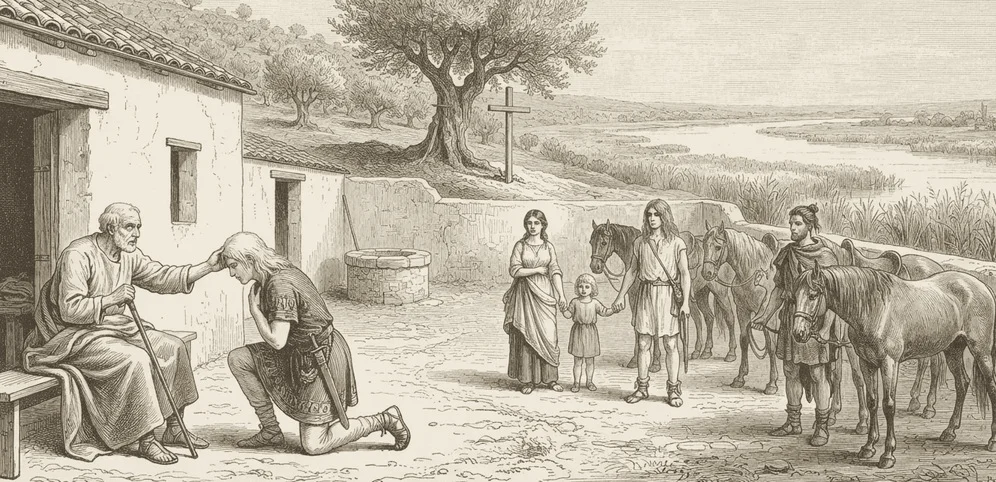
Teudo
El puente sobre el Tajo era la cosa más grande que Teudo había visto hecha por hombres, y lo cruzaron de noche, con la lluvia, a pie, llevando a los caballos por la brida.
Lo vieron primero desde lejos, al atardecer del cuarto día, desde una loma llena de jaras. El río iba abajo, muy abajo, en el fondo de un tajo de roca que parecía hecho con un hacha, ancho y pardo y crecido por las lluvias, con un ruido que se oía desde la loma. Y por encima del río, de una orilla a la otra, el puente. Seis arcos de piedra, altos como torres, el del centro más que ninguno, tan alto que Teudo calculó que cabían dentro tres torres de la Peña una encima de otra. En el centro, encima del puente, había un arco más pequeño, como una puerta, con letras grabadas que no se leían desde allí.
—Lo hicieron los romanos —dijo Ricila, a su lado—. Hace trescientos años. Para que pasaran los carros de una orilla a otra sin mojarse.
—¿Para eso?
—Para eso.
Teudo se quedó mirándolo. Pensó en los suevos, que en veinte años en Hispania no habían hecho nada más alto que la torre de madera de la Peña. Pensó que la gente que había hecho aquello ya no estaba, y que el puente sí. Que el puente se iba a quedar cuando ya no estuvieran tampoco los suevos, ni los vándalos, ni nadie de los que lo cruzaban ahora.
En la puerta del centro del puente había gente. Se veía el fuego. Una guardia. Arsak la estuvo mirando hasta que se hizo de noche, tumbado entre las jaras.
—Cuatro —dijo—. De la ciudad. No son soldados. Son hombres con lanzas que cobran por pasar.
—¿Pagamos?
—No tenemos con qué. —Arsak se levantó—. Y si pagamos, se acuerdan de nosotros. Y si los seis de atrás preguntan, se lo cuentan.
Esperaron a que lloviera más. Llovió más a medianoche, una lluvia fuerte, de invierno, que caía de lado. Los cuatro de la puerta se metieron debajo del arco pequeño, alrededor del fuego, y tiraron una manta encima de la puerta para que no les entrara el agua.
Pasaron por el borde del puente, pegados al pretil, con los caballos de la brida y los cascos envueltos en trapos, que Arsak había cortado de una manta. Uno detrás de otro. Teudo el primero, Asta con el niño dentro del manto, Ricila, Arsak el último con la perra. El puente era tan largo que parecía que no se acababa. Abajo, en la oscuridad, el río rugía. Al pasar junto al arco pequeño del centro, a tres pasos de los guardias, Teudo oyó a uno contar un chiste y a los otros reírse, y vio la luz del fuego por debajo de la manta, y el vapor de la ropa mojada.
Nadie salió.
Al otro lado, Arsak los hizo meterse en el monte y seguir toda la noche, con la lluvia, sin parar. Al amanecer, desde una loma, miró hacia atrás mucho rato.
—La lluvia ha borrado todo —dijo—. Si son listos, preguntarán en la puerta. Los de la puerta no han visto nada.
—¿Y si son tontos?
—Si son tontos, siguen buscando huellas en la otra orilla hasta la primavera.
No volvieron a ver a los seis jinetes.
Llegaron a la villa del Anas el día de la fiesta del solsticio, cinco días después, cuando ya habían dejado de esperar llegar a ningún sitio.
Teudo no supo nunca bien qué esperaba encontrar. Arsak había hablado tanto de aquella villa, en las cacerías, junto al fuego, que se la imaginaba grande, como la de Materno. No lo era. Era una casa de labor romana, pequeña, de piedra y adobe, encalada, con un patio, un pozo, un establo, un cobertizo para los carros y unos prados en la orilla del río donde pastaban media docena de caballos flacos. Un olivar. Unas encinas. Y el Anas, abajo, ancho y lento, con juncos en la orilla.
En la puerta de la cocina había un viejo sentado al sol, envuelto en una manta, con un bastón entre las rodillas. Miraba hacia ellos sin verlos. Tenía los ojos blancos.
Arsak se bajó del caballo. Fue hacia él andando, despacio. Se paró delante.
El viejo levantó la cara.
—¿Quién viene? —preguntó en latín.
Arsak no contestó. Le cogió la mano al viejo. Se la puso en la cara. En el pelo, que tenía ya más blanco que claro.
El viejo le tocó la cara con la mano, despacio, como se toca el pan para ver si está hecho. La frente. La nariz. La barba.
Luego se echó a llorar.
—Tecla —dijo—. Tecla, el alano.
Pero Tecla no salió de la cocina.
Asta
Tecla había muerto hacía dos inviernos, de una fiebre de pecho, en tres días. La habían enterrado en el olivar, debajo del olivo más grande, con una cruz de madera que había hecho un vecino. Marcelo lo contó aquella noche, junto al fuego de la cocina, mientras les daban de comer una mujer vieja y un hombre viejo, dos esclavos libertos que se habían quedado con él porque no tenían adónde ir.
Asta le escuchaba con el niño dormido en el regazo. Se acordaba de Tecla. La había visto solo unos días, en el verano de 418, antes de irse al norte: una mujer seca, alta, con las manos grandes y la voz de mandar, que le había dado la ropa de un muchacho que se llamaba Félix y una tablilla de cera de su nieto, que decía que volvería para la doma de los potros. Y que le había hecho comer, aquellos días, aunque Asta no tenía hambre de nada. Le había puesto la comida delante y se había quedado allí, de pie, con los brazos cruzados, hasta que Asta comió.
—Dijo que te dijéramos que la puerta seguía aquí —dijo Asta—. Félix nos lo dijo. En los Nervasos.
Marcelo asintió.
—Sigue —dijo—. Tecla no la dejó cerrar nunca. Ni con los godos. Ni con los vándalos cuando bajaron. Decía que, si se cerraba, el alano no sabría volver.
El arco de Candac no estaba. Asta miró en la puerta de la cocina, en el clavo donde Arsak decía que lo había colgado. El clavo seguía allí. El arco no.
—Se lo llevó mi nieto —dijo Marcelo, antes de que nadie preguntara. Aunque no veía, lo sabía todo—. Félix. Volvió a la semana de la batalla de los godos, escondido, medio muerto de hambre. Tecla le dio de comer y le dio el arco. Le dijo que lo usara bien. Luego se fue con los alanos que quedaban. —Marcelo se quedó callado un momento—. Vino a verme dos veces, en estos años. La última, hace dos primaveras, antes de que muriera Tecla. Estaba hecho un hombre. Con el arco a la espalda. Me dijo que era capitán de una partida de jinetes de Genserico. Que mandaba a cincuenta. —Marcelo sonrió apenas—. El nieto de dos colonos de la villa del Anas, capitán de los vándalos. Tecla no se lo creía. Le hizo enseñarle las manos, a ver si las tenía limpias.
Arsak no dijo nada. Pero Asta le vio mirar el clavo vacío un buen rato.
Se quedaron en la villa todo el invierno.
No había otro sitio. En el sur, más allá del Anas, en la Bética, estaban los vándalos de Genserico. En el norte, los suevos. Y en medio, Lusitania, que no era de nadie, o era de todos los que pasaban: godos, suevos, vándalos, bandidos, soldados romanos de los que ya no cobraban. Las villas de los alrededores estaban medio vacías. Emerita, a media jornada río arriba, seguía siendo una ciudad, con murallas y obispo, pero la mitad de las casas estaban cerradas.
Asta trabajó como no había trabajado desde la Bética. Había mucho que hacer en la villa y nadie para hacerlo. La mujer vieja, que se llamaba Justa, apenas podía con la cocina. El hombre viejo no podía con nada. Los prados estaban sin limpiar, el olivar sin podar, la huerta abandonada. Asta limpió la huerta. Plantó habas y berzas. Podó los olivos con la podadera de la villa, como le había enseñado el capataz de Materno con el suyo, y cuando terminó con el olivo grande, el de la cruz de madera, se quedó un rato delante, con la podadera en la mano.
Pensó en su olivo. En el del rincón del huerto de la casa de labor, con las tres cosas colgadas de la rama. Diez palmos. Con flores el último verano.
Pensó que no lo iba a volver a ver.
El niño Guntario se hizo amigo de los caballos flacos de Marcelo, y de la mujer vieja, que le daba miel a escondidas, y de Marcelo, que le contaba historias de cuando era soldado en el Rin, antes de que nacieran todos ellos. Al niño le gustaba sentarse en sus rodillas y tocarle los ojos blancos con el dedo.
—¿No ves nada? —le preguntaba.
—Veo con las manos —decía Marcelo—. Ven. Te veo.
Y le tocaba la cara.
Asta curó a Marcelo de una tos que tenía desde el otoño, con cocimientos de tomillo y miel, y a Justa de una úlcera en la pierna que no se le cerraba desde hacía un año, con miel también, y vendas limpias todos los días, y la pierna en alto. En febrero vino una mujer de la villa de al lado con un niño que se había abrasado el brazo con agua hirviendo, porque había oído que en la villa de Marcelo había una mujer que curaba. Asta le curó con miel y con hojas de col, como en la Peña. En marzo vinieron más.
En enero cogieron la aceituna.
El olivar de Marcelo era pequeño, sesenta árboles viejos en la ladera que bajaba al río, que nadie había podado en tres años ni vareado en dos. Pero estaban cargados. Las aceitunas colgaban negras y brillantes entre las hojas plateadas, y muchas se habían caído ya y se pudrían en la hierba. Marcelo, desde su banco, lo supo sin verlo, por el olor.
—Se van a perder —dijo—. Tecla las cogía todos los años. Con las mujeres de la aldea. Ahora no hay mujeres en la aldea.
—Ahora estamos nosotros —dijo Asta.
Lo hicieron como lo hacía su padre en la Bética, y Asta se acordó de todo, aunque tenía doce años la última vez. Extendieron mantas y lienzos viejos debajo de cada árbol, alrededor del tronco. Teudo y Arsak subían a las ramas o se quedaban abajo con varas largas de avellano y golpeaban las ramas, de fuera hacia dentro, para que las aceitunas cayeran sin romper los brotes del año siguiente. Llovían aceitunas. Rebotaban en los lienzos con un ruido como de granizo. Asta, Ricila, Justa y el niño las recogían de rodillas, a puñados, y las echaban en cestos, quitándoles las hojas y los palitos. El niño Guntario cogía más hojas que aceitunas y se comió una cruda, y la escupió con una cara que hizo reír a todo el olivar, y no volvió a probarlas.
Teudo no había visto nunca coger aceituna. En el valle del Duero no había más olivo que el de Materno, y aquel no daba. Miraba las aceitunas en la palma de la mano, negras, duras, amargas, como se mira una cosa que no se entiende.
—¿De esto sale el aceite?
—De esto —dijo Asta.
—No me lo creo.
Se lo creyó una semana después. La villa tenía un molino de aceite en un cobertizo detrás de la casa, viejo, de los romanos: una piedra redonda grande, como una muela de molino puesta de pie, que rodaba dentro de una pila de piedra empujada por un palo, y que aplastaba las aceitunas hasta hacerlas una pasta oscura. Lo había movido siempre una mula. La mula se había muerto con Tecla. Lo movieron Teudo y Arsak, empujando el palo, dando vueltas, horas, mientras Asta echaba aceitunas en la pila con una pala.
Luego la pasta se metía en unos capachos redondos de esparto, uno encima de otro, y se ponían en la prensa: una viga larga de madera, sujeta a la pared por un extremo, con una piedra enorme colgada del otro, que bajaba despacio y apretaba los capachos. Y del fondo, por un canal de piedra, empezó a salir un líquido turbio, verde oscuro, que caía en una tinaja de barro.
Teudo se quedó mirándolo con la boca abierta.
—Ahora hay que esperar —dijo Asta—. Que suba el aceite. El agua se queda abajo. El aceite flota.
Esperaron. A la mañana siguiente, en la tinaja, encima de un agua oscura y amarga, flotaba una capa gruesa de aceite verde dorado, que olía a hierba recién cortada y a algo picante que se metía en la nariz. Asta la sacó con un cazo de cobre, despacio, sin mezclarla con el agua. La echó en una jarra. Luego cortó una rebanada de pan, la mojó en el aceite nuevo, le echó sal por encima y se la dio a Teudo.
Teudo la mordió. Se quedó quieto, masticando, con los ojos cerrados.
—Mi padre hacía esto —dijo Asta—. Cada invierno. El primer pan con el primer aceite. Nos lo daba a mi madre y a mí, en el patio, y se quedaba mirándonos comer. —Se calló—. Decía que no había nada mejor en el mundo. Que por esto había cruzado el Rin.
Teudo abrió los ojos.
—Tenía razón —dijo con la boca llena.
Le llevaron la jarra a Marcelo. El viejo mojó el pan, se lo comió despacio, en su banco, al sol de enero, con los ojos blancos mirando a ninguna parte.
—Tecla le echaba más sal —dijo.
Y se echó a llorar, con el pan en la mano, sin taparse la cara, mientras el niño Guntario le daba palmaditas en la rodilla sin saber por qué lloraba.
Sacaron seis jarras. Las guardaron en la despensa. Asta pensó que alguien se las comería después de ellos. Y que eso estaba bien.
En marzo también llegaron las noticias.
Las trajo el vecino de la villa de al lado, el que había hecho la cruz de Tecla. Llegó al galope, una tarde, sin aliento.
Los suevos habían bajado. Un ejército. Por el camino de Salmantica, por la calzada vieja. Saqueando todo lo que encontraban: las villas, las aldeas, las iglesias. Quemando lo que no podían llevarse. Los mandaba un noble suevo, pariente del rey, con una capa de púrpura.
Asta estaba en la puerta de la cocina. Oyó lo de la capa. Se quedó quieta.
—¿Cuántos? —preguntó Arsak.
—Muchos. Mil. Dos mil. No sé. —El vecino se secó la cara—. Están a cuatro días. En el Tajo. Vienen hacia Emerita.
Nadie dijo nada.
—Y hay más —dijo el vecino—. Por el sur. Los vándalos. Genserico. Dicen que está juntando a todos los suyos, a todos los vándalos y a todos los alanos, a las mujeres, a los niños, los carros, el ganado, en la costa. En el Estrecho. En Iulia Traducta. Que tiene barcos, cientos. Que se va. A África. Todos. Para siempre.
Arsak
Arsak estuvo toda la noche en el olivar, junto a la cruz de Tecla.
No pensaba. O pensaba sin palabras, como los caballos. Estaba sentado en el suelo, con la espalda contra el tronco del olivo grande, con la perra Loba a los pies, mirando el Anas, que brillaba abajo a la luz de la luna. Había estado sentado allí muchas veces. En los años de la villa, entre 416 y 418, después de las faenas. Tecla salía a buscarle al anochecer y le decía que la cena estaba en la mesa, que si se le enfriaba la culpa era suya, y se volvía a la cocina sin esperar.
Aquella noche no le buscó nadie.
Le quedaban pocas cosas claras, y las fue poniendo en orden, una detrás de otra, como se ponen las piedras de una majada.
Que Heremigario venía. Con un ejército. Por la calzada del Tajo, hacia Emerita. Saqueando. Que no venía por ellos; no se mueve un ejército por cinco fugitivos y un niño. Venía por lo que vienen todos los ejércitos: por lo que se puede coger. Pero si los encontraba, los cogería también. Y Lusitania era grande, pero no tanto.
Que en el sur se iban los vándalos. Todos. A África. Por el mar.
Que Asta era vándala.
Que Félix estaba con ellos. Capitán de cincuenta. Con el arco de Candac.
Y que en el norte había un viejo sentado en un banco y una mujer con el pañuelo de las fiestas, y una viuda con el pelo corto que le había dado un beso a Teudo en la boca delante de todos. Y que Teudo no se iba a ir a ningún sitio que no fuera el norte. Arsak lo sabía como sabía las cosas de los caballos: sin que nadie se lo dijera.
Al amanecer, Marcelo salió al olivar. Solo, con el bastón, tanteando las raíces, siguiendo el camino de memoria. Se sentó en el suelo, a su lado, despacio, con mucho trabajo, contra el mismo tronco.
—Se van a ir —dijo Marcelo.
—Sí.
—Tú también.
Arsak no contestó.
—Tecla lo sabía —dijo Marcelo—. Cuando te fuiste en 418, me dijo: «este vuelve, pero no se queda». Le pregunté cómo lo sabía. Me dijo: «porque ha encontrado a la niña. Los hombres como ese, cuando encuentran lo que buscan, se van detrás». —Marcelo se rio, flojo—. Tenía razón. Siempre tenía razón. Era muy pesada.
Arsak se rio también. Le picaron los ojos.
—La villa es tuya —dijo Marcelo—. Siempre ha sido tuya. Te la di cuando te fuiste y te la doy ahora. Pero no te la quedes. No sirve para nada una villa con un ejército a cuatro días. —Le buscó la mano con la suya, a tientas, y se la apretó—. Llévate los caballos. Los seis. Están flacos, pero aguantan. Llévate lo que haya en la despensa. Y llévatelos a ellos. Al Estrecho, o a donde sea. Pero no te quedes aquí a morir por una casa. Las casas no lo valen. Te lo dice uno que se ha pasado la vida guardando una.
—¿Y tú?
—Yo me quedo con Justa y con su marido. —Marcelo se encogió de hombros—. Somos tres viejos ciegos y cojos en una villa pobre. Los suevos no pierden el tiempo con eso. Y si lo pierden, me da igual. Tengo ochenta años y he visto ya todo lo que quería ver.
Se quedaron callados. El sol salió por detrás de los montes del otro lado del Anas.
—Hay una cosa —dijo Marcelo— que te tengo que dar.
Se metió la mano dentro de la túnica. Sacó una cosa pequeña, envuelta en un trapo. Se la puso a Arsak en la mano.
Arsak la desenvolvió. Era una punta de flecha. De hierro. De tres aletas. Alana. Vieja, oxidada, con un trozo de astil de madera todavía metido en el cubo.
—La sacó Tecla de la puerta de la cocina —dijo Marcelo—. La mañana que vinieron los cinco alanos a por los cerdos. En 416. ¿Te acuerdas? Tú los echaste. Uno tiró una flecha antes de irse y se quedó clavada en la puerta, a un palmo de la cabeza de Tecla. Tecla la sacó y la guardó. —Marcelo sonrió—. Decía que era el día que supo que te ibas a quedar con nosotros. Porque te pusiste delante de la puerta. Delante de ella.
Arsak se quedó mirando la punta de flecha en la palma de la mano.
Se fueron dos días después. Por la mañana temprano, con los cinco caballos que habían traído del Duero y los seis de Marcelo, cargados de alforjas. Marcelo salió a la puerta con Justa, que le llevaba del brazo. El niño Guntario le dio un beso en los ojos blancos. Asta le dio un beso en la frente. Ricila le dio las gracias en latín, con palabras de Virgilio, y Marcelo se echó a reír y le dijo que para eso no había hecho falta ir a la escuela.
Teudo le dio la mano. No sabía latín.
Arsak fue el último. Se paró delante de Marcelo, en el umbral, sin decir nada. Marcelo le tocó la cara otra vez, con la mano, despacio.
—Vete —le dijo—. Y esta vez, cierra la puerta al salir. Ya no tiene que volver nadie.
Arsak salió. Se volvió en el patio. Cogió la puerta de la cocina por el borde, la puerta de madera vieja, gastada, con un agujero pequeño a un palmo de donde estaría la cabeza de una mujer alta, y la fue cerrando despacio, mirando a Marcelo por la rendija que se iba haciendo más estrecha, hasta que se cerró.
Luego montó a caballo y se fue con los demás hacia Emerita, río arriba, por la orilla del Anas.
No se volvió. Los alanos no se vuelven.
Pero aquella vez no habría hecho falta. Sabía exactamente lo que dejaba detrás.
Emerita
Junto a Emerita Augusta – primavera de 429
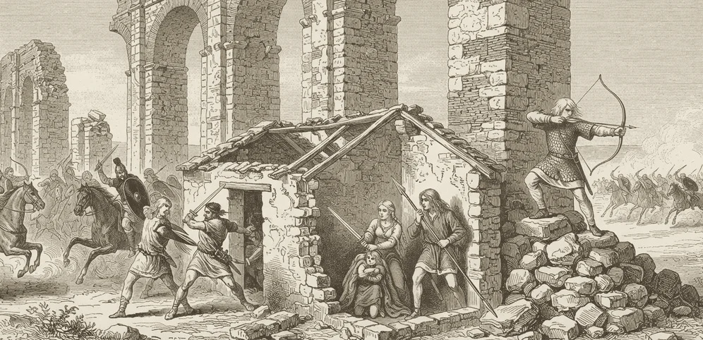
Teudo
Los vieron a media mañana del segundo día, desde una loma, y fue Agiulfo el que los vio primero.
Teudo lo reconoció enseguida, aunque estaba a más de mil pasos: por la forma de montar, ancho, pesado, cayéndose un poco hacia delante, como montan los que han aprendido tarde y beben mucho. Iba delante de una partida de jinetes, veinte o treinta, con los escudos negros a la espalda, por el camino del río, el que venía del Tajo. Detrás, más lejos, en el horizonte del norte, se veía una nube de polvo enorme, parda, quieta en el aire, como la que había visto en los Nervasos cuando llegó Gunderico. El ejército de Heremigario.
Y delante, al sur, a menos de una jornada, se veían ya las murallas de Emerita, blancas al sol, y el puente largo sobre el Anas.
—Nos han visto —dijo Arsak.
Agiulfo se había parado. Estaba mirando hacia la loma. Levantó el brazo. Señaló.
Corrieron.
No hacia Emerita; Emerita estaba demasiado lejos, y las puertas estarían cerradas, con un ejército suevo a la vista. Arsak les hizo bajar de la loma por el otro lado, hacia el este, por un barranco seco lleno de adelfas, y seguir por el fondo, al galope, entre piedras, con los once caballos detrás, los de Marcelo sueltos, para que levantaran polvo y confundieran. Teudo iba detrás de Asta. Asta llevaba al niño atado al pecho con la tela, y la espada de la casa a la espalda, y montaba a Estrella como montaba de pequeña en la Bética, pegada al cuello, sin silla casi, con las rodillas.
No sirvió. Los caballos de Marcelo eran flacos y se cansaron a la primera milla. Los de Agiulfo eran de Heremigario, gordos, descansados. Al salir del barranco a un llano, Teudo se volvió y los vio salir también, por arriba, a trescientos pasos. Luego a doscientos.
Arsak tiró de las riendas.
—Allí —gritó.
Señalaba unas ruinas. A la izquierda, en una pequeña loma, había una cosa que Teudo no supo qué era: una fila de pilares de piedra y ladrillo, altos, muy altos, uno detrás de otro, unidos por arcos, que iban de ningún sitio a ningún sitio por el campo, como si un gigante hubiera empezado a hacer un puente sobre la tierra seca y se hubiera cansado. Algunos pilares estaban rotos. Entre los pilares había piedras caídas, matorrales, una casa de piedra pequeña, medio derrumbada, sin tejado, con un muro alto por un lado.
Llegaron a las ruinas al galope. Se metieron detrás del muro de la casa caída. Arsak saltó del caballo antes de que se parara, con el arco de olmo en la mano, y se subió a un montón de piedras, junto a un pilar, y se puso a tirar.
Teudo no lo pensó. Sacó la espada de Fravita. Se puso en la abertura del muro, la única por donde se podía entrar a caballo, como se había puesto una vez en el hueco de la empalizada de los Nervasos. Ricila bajó a Asta del caballo, y al niño. Los metió en el rincón de la casa caída, el que tenía dos muros. Ricila cogió una lanza de las de Marcelo, que iba atada a una de las sillas. Teudo le vio cogerla y le pareció la cosa más rara del mundo: su hermano con una lanza.
Los jinetes llegaron.
Arsak tiró cuatro flechas antes de que llegaran a la loma. Dos caballos cayeron. Un hombre cayó. Los demás siguieron. Rodearon las ruinas, gritando, como rodeaban los alanos de Gunderico la montaña en los Nervasos. Algunos se bajaron de los caballos y vinieron a pie, entre las piedras, con los escudos por delante. Agiulfo se quedó atrás, a caballo, mandando, peinándose la barba con los dedos.
El primero que llegó a la abertura del muro era un muchacho. Teudo le conocía: era de la Peña, de los de Agiulfo, uno de los que habían bajado las yeguas a palos. Le miró a la cara un momento. El muchacho le miró a él. Teudo no tenía escudo. Le dio con el brazo, con el antebrazo de la cicatriz, y luego con la espada, en el hombro, y el muchacho cayó hacia atrás gritando. Otro. Otro. Teudo no supo cuántos. Peleaba como le había enseñado Fravita: sin pensar, sin mirar más que lo que tenía delante, con los pies quietos, como un tronco clavado en la tierra.
Le dieron con una lanza en el muslo. Por debajo, por donde no se veía. Notó el golpe, como una patada de mula, y luego notó la pierna caliente. No le dolió todavía.
Siguió.
Le dieron en la cabeza con algo, una maza o el canto de una espada, y vio una luz blanca, y se cayó de rodillas en la abertura. Se volvió a levantar. Se apoyó en el muro. Tenía sangre en los ojos. No veía bien. Veía formas que se movían.
Vio una que no era como las demás. Una forma pequeña, oscura, que se metía por un hueco del muro de atrás de la casa caída, por donde no se podía entrar a caballo y nadie vigilaba. Por donde estaban Asta y el niño.
Quiso gritar. No le salió la voz.
Asta
El hombre entró por el hueco de atrás y Asta le vio la cara. Era Agiulfo.
Había dejado el caballo. Había rodeado las ruinas, a pie, solo, por detrás de los pilares, mientras sus hombres peleaban con Teudo en la abertura y Arsak tiraba desde las piedras. Había encontrado el hueco del muro de atrás, uno pequeño, de una ventana caída, por el que se entraba agachado. Asta le vio entrar a gatas y ponerse de pie, despacio, dentro, a cuatro pasos. Con la espada en la mano. Con la barba castaña llena de polvo.
Ricila estaba delante de ella, de espaldas, con la lanza, mirando hacia la abertura donde peleaba Teudo. No le vio.
Agiulfo sí vio a Ricila. Levantó la espada.
Asta no pensó. Se lo preguntaron muchas veces después, sus hijos, sus nietos, cómo lo había hecho, y ella contestaba siempre lo mismo: que no lo había pensado, y que si lo hubiera pensado no lo habría hecho. Se quitó al niño del pecho, lo metió en el rincón, entre los dos muros, debajo de su manto, y le puso la mano en la boca un momento. Luego se llevó la mano a la espalda. A la correa. A la empuñadura de hueso de la espada de la casa, la del abuelo de Ricila, la que no había devuelto en su boda. La sacó del paño engrasado en un solo movimiento, como había visto a Arsak sacar la suya mil veces. Y se puso delante.
No delante de Ricila. Delante del rincón. Del niño.
Agiulfo la vio. Se paró. Se rio.
—La vándala —dijo—. Con la espada de los suevos.
Ricila se volvió entonces. Vio a Agiulfo. Vio a Asta. Se quedó quieto, con la lanza en las manos, sin saber hacia dónde apuntarla.
—Suéltala —dijo Agiulfo—. No sabes. Te vas a cortar.
Asta no la soltó. La tenía cogida con las dos manos, como la había cogido el día de la boda, delante del pecho. Pesaba. Era vieja y estaba mellada, y no la había usado nunca para nada más que para estar guardada en el arcón envuelta en un paño. No sabía usarla. Era verdad. Pero había visto a Arsak practicar cien veces, en el patio de la Peña, en el prado de las yeguas, con los muchachos: los pies separados, el peso en la pierna de atrás, la punta hacia la cara del otro. Siempre hacia la cara. «Nadie se acerca a una punta que le mira a los ojos», decía.
Puso la punta hacia la cara de Agiulfo.
Agiulfo dejó de reírse. Dio un paso. Asta no se movió. Él dio otro. Asta no se movió. Él levantó la espada para apartar la suya de un golpe, como se aparta una rama, y ella, en ese momento, sin pensarlo, hizo lo único que se le ocurrió: no esperó el golpe. Fue hacia él. Un paso. Con todo su peso detrás. Con la punta delante.
La espada del abuelo de Ricila entró en el brazo de Agiulfo, el de la espada, por debajo del codo, hasta el hueso.
Agiulfo gritó. Soltó la espada. Se le cayó al suelo, entre las piedras.
Y entonces Ricila, el que no sabía pelear, el que lloraba por los muertos, el que llevaba las cuentas, le dio con el asta de la lanza en la cabeza, por detrás, con las dos manos, como se da con un mayal en la era. Agiulfo se cayó de bruces y se quedó en el suelo, gimiendo, con el brazo debajo del cuerpo y la sangre saliendo.
Asta se quedó de pie, con la espada en las manos. Le temblaban tanto que la tuvo que apoyar en el suelo, por la punta, para no dejarla caer.
En el rincón, debajo del manto, el niño Guntario lloraba sin hacer ruido.
Fuera, en la abertura, se oía todavía el hierro.
Y se oyó otra cosa.
Un cuerno. No suevo. Asta conocía los cuernos de los suevos: eran largos, roncos, como un buey que se muere. Este era corto, agudo, de dos notas, que subía. Lo conocía también. Lo había oído de pequeña. En la Galia. En los campamentos de los vándalos. Por la mañana, cuando se levantaban los carros.
Arsak
Desde lo alto de las piedras, Arsak los vio llegar antes que nadie.
Venían del sur, del lado del río, al galope, por el llano: cincuenta jinetes, quizá más, en una línea abierta, como cargan los alanos, sin orden aparente, cada uno a su aire, y todos a la vez. Arcos cortos. Lanzas largas. Caballos pequeños, de la Bética, rápidos. Y por delante de todos, un hombre que montaba muy derecho, muy serio, como monta alguien que ha aprendido de mayor y que nunca ha dejado de pensar que le están mirando.
Con un arco de cuerno y tendón en la mano.
Los hombres de Agiulfo los vieron. Dejaron de pelear en la abertura. Se volvieron. Gritaron. Algunos corrieron a los caballos. Otros se quedaron quietos, mirando, como se quedan los conejos cuando ven la sombra del águila.
Félix tiró de espaldas. Al galope. Como le había enseñado Arsak en el prado de la villa del Anas, a los trece años, cuando se caía del caballo y lloraba de rabia.
Arsak bajó de las piedras. Las piernas no le sostenían bien. Llegó a la abertura del muro. Teudo estaba allí, sentado en el suelo, contra la piedra, con la espada de Fravita todavía en la mano, con la cara llena de sangre y la pierna derecha empapada de rojo. Tenía los ojos abiertos.
—¿Quiénes son? —preguntó Teudo.
—Vándalos —dijo Arsak—. Y alanos. Los míos.
Teudo cerró los ojos.
La partida de Agiulfo no aguantó. Los que pudieron montar huyeron hacia el norte, hacia la nube de polvo. Los que no, se quedaron en el campo. Félix no les persiguió. Se paró delante de las ruinas, en el llano, con su caballo dando vueltas, y miró hacia el muro, hacia la abertura.
Hacia Arsak.
No se bajó del caballo. No dijo nada. Se quedaron mirándose como se habían mirado en la ladera de los Nervasos, diez años antes, entre los muertos.
Luego Félix se echó a reír.
—Siempre llego tarde a todo —dijo en alano—. Te dije que volvería para la doma de los potros.
—La doma se hizo sin ti —dijo Arsak—. Hace diez años.
—Ya lo sé. —Félix se bajó del caballo por fin. Se acercó. Era un hombre. Tenía veintiocho años, la barba rubia, la cicatriz de la barbilla, otra nueva en la mejilla, y los hombros anchos de los que tiran con arco todos los días—. Genserico está ahí detrás. Con todos. —Señaló al sur, hacia el Anas—. Íbamos camino del Estrecho. Nos llegó aviso de que los suevos bajaban saqueando y Genserico se dio la vuelta. Dice que no se va a ir de Hispania dejando a uno que le muerda los talones. —Miró hacia el norte, hacia la nube de polvo—. Esta noche hay batalla. Mañana, a lo sumo.
—¿Cuántos sois?
—Todos —dijo Félix—. Todos los que quedan.
Félix se quedó con ellos hasta media tarde, mientras sus jinetes recogían los caballos sueltos de Agiulfo y desarmaban a los que se habían rendido. Se sentó con Arsak en una piedra caída del acueducto, a la sombra de un pilar, y le contó los diez años.
Se lo contó deprisa, a trozos, como cuenta las cosas uno que no ha tenido a nadie a quien contárselas. Que después de los Nervasos había bajado a la Bética con Gunderico y los alanos que quedaban. Que los alanos ya no eran un pueblo, eran unos cientos de jinetes con sus familias metidos dentro del pueblo de los vándalos, como se mete una piedra en un zapato, y que los vándalos los necesitaban porque ellos no sabían luchar a caballo y los alanos sí. Que el rey de los vándalos se llamaba ahora rey de los vándalos y de los alanos, aunque los alanos no tenían nada que decir en sus asambleas. Que a él le habían mirado mal al principio, por romano, y luego bien, por cómo tiraba con el arco de Candac.
Que se había casado.
Arsak le miró.
—Con una alana —dijo Félix, y se puso colorado como cuando tenía quince años—. Se llama Zarina. Es nieta de uno de los viejos de Addax. Tiene un genio que ni Tecla. —Se rio—. Tenemos una hija. Tres años. Se llama Tecla.
Arsak no pudo decir nada durante un rato.
—Tecla se murió —dijo al fin.
—Ya lo sé. Me lo dijo un pastor de la villa de al lado, el año pasado. —Félix se quedó mirando el llano—. No pude ir. Estábamos en Carthago Nova, con los barcos.
Le contó lo de los barcos. Lo de las islas, lo de Hispalis. Le contó que Gunderico se había muerto de verdad como decía el monje, en las escaleras de la iglesia, echando espuma, y que él lo había visto, y que no sabía si era castigo de Dios o una enfermedad, pero que daba igual porque todos los vándalos creían que era castigo de Dios, y por eso Genserico, que era cristiano a la manera de los godos, había mandado devolver a la iglesia todo lo que su hermano había cogido. Le contó cómo era Genserico. Pequeño, cojo, callado. Que miraba a los hombres como mira Arsak a los caballos: para saber lo que van a hacer antes de que lo hagan.
—Te gustaría —dijo Félix—. O le odiarías. No hay término medio con él.
—¿Y África?
Félix se quedó callado.
—Allí hay de todo —dijo—. Trigo. Aceite. Ciudades enteras sin defender. Roma come de África, ¿lo sabías? Todo el trigo de Roma sale de allí. Genserico dice que el que tenga África tiene a Roma cogida por el cuello. —Se encogió de hombros—. Y aquí no hay sitio. Los godos vuelven cada pocos años. Los suevos crecen. Roma manda generales. Estamos en una esquina del mundo, cogidos entre todos. Allí, al otro lado del mar, no hay nadie que nos espere con una espada. Eso dice él.
—¿Y tú qué dices?
—Yo digo que mi hija tiene tres años y que quiero que llegue a tener cuatro. —Félix se levantó de la piedra—. Y que adonde vaya Zarina, voy yo.
Se quedó un momento de pie, mirando a Arsak desde arriba, con el arco de Candac al hombro.
—Ven con nosotros —dijo. Lo mismo que en la ladera de los Nervasos. Pero con otra voz—. Esta vez tienes a quien llevarte.
Arsak miró hacia la casa caída, donde Asta estaba arrodillada junto a Teudo con el cesto de las medicinas, y Ricila sujetaba la lámpara, y el niño Guntario dormía en un rincón, encima de una manta, con el caballito de madera en la mano.
—Esta vez —dijo— no sé qué voy a hacer.
Félix asintió despacio. Como si esa fuera la respuesta que esperaba.
—Tienes hasta el mar para pensarlo —dijo—. Luego ya no hay más tierra.
Aquella tarde, desde las ruinas de los pilares, que eran los restos de un acueducto romano que había llevado agua a Emerita desde un pantano de los montes, Arsak vio la última batalla de los vándalos en Hispania.
No la vio bien. Nadie ve bien una batalla. Vio polvo, mucho, en el llano entre las ruinas y el río. Vio a los jinetes vándalos y alanos cargar en masa, en líneas abiertas, una y otra vez, y a los suevos de Heremigario, que no esperaban encontrarse a un ejército entero donde creían que solo había villas que saquear, romperse como se rompe un cántaro. Vio a los suevos huir. No hacia el norte, por donde habían venido; los vándalos les habían cortado el camino. Hacia el río. Hacia el Anas.
El Anas venía crecido, de las lluvias de la primavera. Ancho, pardo, rápido. Los suevos se metieron en él a caballo, a pie, con las armas, con las cotas puestas, buscando la otra orilla. Muchos no llegaron.
Arsak vio una cosa, al atardecer, desde lo alto del acueducto, que no le contó a nadie durante mucho tiempo. Vio a un jinete meterse en el río por la parte más honda, a la carrera, sin mirar, con una capa larga que se le abría a la espalda. Una capa de color púrpura, que brillaba con la última luz. Vio al caballo perder pie en la corriente y volcarse de lado. Vio al jinete salir un momento a la superficie, con la cara blanca, con la boca abierta, agarrándose a la nada.
Y vio cómo la capa, empapada, pesada, se le enredaba en los brazos y en el cuello, y tiraba de él hacia abajo, como tiran las redes.
Luego la capa siguió río abajo, sola, abierta en el agua, como una mancha de vino.
Arsak se quedó mirándola hasta que se perdió en la curva del río.
No sintió nada. Eso fue lo raro. Había pensado en aquella muerte muchas noches, en el establo, en las cacerías, en el pajar. Había pensado en hacerla él. Con el cuchillo, con la espada, con el arco. Y ahora la había visto, y no sentía nada más que un cansancio enorme, en las piernas, en los brazos, en todo el cuerpo. El cansancio de veinte años.
Bajó del acueducto. En la casa caída, en el rincón de los dos muros, Asta estaba arrodillada junto a Teudo, con el cesto de las medicinas de Teodoro abierto a su lado, lavándole la herida del muslo con vino. Ricila sujetaba la lámpara. El niño Guntario dormía en el regazo de Félix, que se había sentado en una piedra sin saber muy bien qué hacer con él.
Arsak se quedó en la puerta, mirando.
Asta trabajaba como trabajaba Teodoro, deprisa y sin hablar. Había cortado la pernera de Teudo con el cuchillo pequeño. La lanza había entrado por la parte de dentro del muslo, a un palmo de la ingle, y había salido por detrás: un agujero de un dedo de ancho por delante y otro por detrás, que sangraban. Pero no a chorros. Asta lo miró mucho rato, con la lámpara cerca, y le puso los dedos encima, en la ingle, buscando algo, apretando. Luego respiró.
—No ha tocado la vena grande —dijo—. Si la hubiera tocado ya estaría muerto.
Había apretado por encima de la herida la correa de la espada de la casa, la que llevaba a la espalda, para que sangrara menos mientras limpiaba. La aflojaba cada poco, contando en voz baja, en vándalo, y la volvía a apretar. Lavó los dos agujeros con vino, por dentro, metiendo el vino con una caña hueca, mientras Teudo apretaba los dientes en un palo y Ricila le sujetaba la pierna. Sacó con la sonda un trozo de tela de la pernera que había entrado con la lanza. Lo enseñó a la luz.
—Esto es lo que pudre las heridas —dijo—. Lo decía Teodoro. Lo que entra con el hierro, no el hierro.
Luego metió hilas mojadas en miel en los dos agujeros, sin apretar, para que la herida pudiera echar lo que tuviera que echar. No la cosió. Teodoro no cosía las heridas hondas: decía que una herida honda cerrada por fuera se pudre por dentro. Vendó el muslo con lino limpio, el último que les quedaba. Después le lavó la cara, le encontró la brecha de la cabeza, encima de la oreja, la limpió y le dio cinco puntos con la aguja curva y el hilo de lino del frasco de vino. Cinco puntos separados. Como le había enseñado a dar Teodoro. Como se había cosido a la perra Loba, hacía diez años, en el establo de la Peña.
Teudo se desmayó al tercer punto. Asta no se paró.
Agiulfo estaba atado en un rincón, con el brazo vendado. Lo había vendado Asta también.
—¿Por qué? —le preguntó Arsak, en voz baja, señalándolo con la barbilla.
Asta no levantó la vista de la herida de Teudo.
—Porque los suevos no matan a un hombre atado que no sabe por qué se muere —dijo—. Lo dijo la madre.
Arsak no contestó. Se sentó en el suelo, a su lado, contra el muro.
—Heremigario se ha ahogado —dijo.
Asta se quedó quieta un momento, con el trapo en la mano.
Luego siguió lavando la herida.
Iulia Traducta
De Emerita al Estrecho – mayo de 429
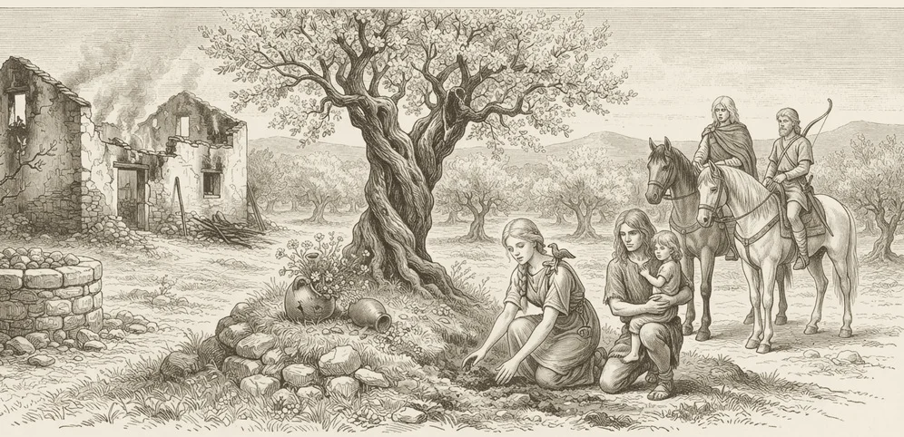
Teudo
Teudo hizo el camino hasta el mar tumbado en un carro de vándalos, y el carro era de un hombre que tallaba cucharas.
No se acordó del principio. Tuvo fiebre los primeros cuatro días, después de la batalla, la fiebre que viene a las heridas hondas, y se le mezclaba todo: el traqueteo del carro, el sol, el olor de los bueyes, la voz de Asta, la de Ricila, voces en una lengua que se parecía al suevo pero no era suevo. Soñó con Fravita. Soñó que Fravita le pegaba con el canto de la espada en las piernas y le decía que lo hacía mal, y él le decía que ya lo sabía, que le dolía la pierna, y Fravita se reía.
Al quinto día se despertó y la fiebre se había ido. Estaba tumbado en el suelo de un carro, sobre pieles, debajo de un toldo de cuero, y a su lado, sentado en la trasera, con las piernas colgando, había un hombre pelirrojo, de treinta y tantos años, con una pierna rígida, que tallaba una cuchara de madera con un cuchillo pequeño.
El hombre le vio abrir los ojos.
—El suevo se despierta —dijo, en vándalo, que Teudo entendía a medias—. Bien. Mi mujer decía que te morías. Yo le decía que no. Los suevos son duros como las piedras. Lo sé porque me tuvieron atado en un pajar.
Teudo le miró sin entender.
—Fredo —dijo el hombre, y se señaló la pierna rígida—. La pierna me la entablilló tu cuñada. Hace nueve años. Con clara de huevo y harina. Se me quedó así, un poco tiesa. Pero ando. —Se rio—. Y la flecha de la espalda me la sacó con un cuchillo de cocina.
Teudo no pudo contestar.
Fredo le contó el resto despacio, con la cuchara en una mano y el cuchillo en la otra, mientras el carro seguía avanzando hacia el sur por una calzada entre olivos. Que había vuelto con los suyos después de cruzar el vado. Que se había casado en la Bética con una viuda alana que tenía dos hijos. Que no había vuelto a pelear, por la pierna; que tallaba cucharas, cuencos y platos de madera y los vendía en los campamentos. Que había visto a la vándala de la Peña el día después de la batalla de Emerita, en el campamento de Genserico, curando a un herido suevo de su misma edad, y la había reconocido por la manera de lavar las heridas, con el vino metido por una caña. Que había ido a por su carro.
—Te debo una pierna —le dijo a Teudo—. No tuya. De ella. Pero como tú eres de su familia, te la pago a ti.
Le curó también un físico de Genserico. Un hombre de Cartago, de la otra orilla del mar, moreno, con la barba rizada y un anillo de oro en cada dedo, que hablaba latín como los romanos y griego como Teodoro, y que venía con el ejército desde la Bética porque Genserico le pagaba mejor que nadie. Vino al carro al sexto día, por mandato de Félix. Le miró la herida del muslo. Le quitó las hilas. Le olió la herida, como hacía Teodoro, inclinándose mucho. Luego miró a Asta, que estaba a su lado con el cesto.
—¿Quién ha hecho esto?
—Yo —dijo Asta.
—¿Con qué?
—Vino. Miel. Hilas. Sin coser.
El físico de Cartago la miró mucho rato. Luego asintió.
—Galeno no lo habría hecho mejor —dijo—. Y Galeno lo habría cobrado.
Le puso un ungüento en la herida, uno que llevaba en una cajita de plata, que olía a resina y a mirra, y le dijo a Asta que siguiera haciendo lo que hacía. Que la herida estaba limpia. Que el suevo iba a cojear un tiempo, quizá siempre un poco, pero que iba a andar.
El ejército de Genserico tardó doce días en llegar al Estrecho, y Teudo no había visto nunca nada igual. No era un ejército. Era un pueblo entero en marcha. Carros, miles, uno detrás de otro por las calzadas, hasta donde se perdía la vista, tirados por bueyes. Ganado. Caballos. Mujeres, viejos, niños, perros. Herreros con sus fraguas en carros. Curas con sus cruces, porque muchos vándalos eran cristianos, aunque de otra manera que los romanos. Jinetes alanos a los lados, vigilando, como vigilan los perros al rebaño. Ochenta mil personas, decía Félix. Nadie las había contado.
Todo un pueblo que se iba de Hispania para siempre. Como habían llegado: en carros, con lo que podían llevarse.
Una noche, en un campamento entre olivos, cerca de Hispalis, Teudo estuvo un buen rato despierto en el carro, mirando el toldo de cuero.
Pensó en el Rin. En la nieve, en el hielo, en el ruido de los carros sobre el río helado. Él tenía diez años. Ricila cinco. Odo doce, en el carro de su madre, detrás. Y su padre delante, guiando los bueyes, y su madre en el carro, con las mantas.
Pensó en su padre sentado en el banco junto al fuego. En su madre con el pañuelo de las fiestas. En Brunhild en la puerta de la cocina, con la cara blanca, diciendo «ya lo sé, por eso».
Se tocó la cinta roja de la muñeca. Los tres nudos.
Por la mañana, cuando Ricila vino a traerle el desayuno, Teudo se lo dijo.
—Me vuelvo al norte.
Ricila no dijo nada. Se sentó en la trasera del carro, junto a él, y dejó el cuenco de gachas entre los dos.
—Ya lo sabía —dijo al fin.
—¿Cómo?
—Porque eres tú. —Ricila se quedó mirando los olivos—. Desde que salimos de la casa de labor lo sé. Desde que madre se puso el pañuelo de las fiestas.
—Te van a colgar, si te cogen.
—Agiulfo está atado en un carro de vándalos. Heremigario está en el fondo del Anas. —Teudo se encogió de hombros—. Requila tendrá otras cosas en que pensar que en un guardia cojo de la Peña. Y Hunila me está esperando. Me lo dijo.
—¿Y si no?
—Si no, me cuelgan. —Teudo se tocó la cinta de la muñeca—. Pero no me voy a ir al otro lado del mar dejando a padre sentado en su banco. No sabría vivir allí sabiendo eso. Tú sí. Tú sabes vivir en los libros. Yo solo sé vivir en el valle.
Ricila no contestó. Cogió el cuenco de gachas y se lo puso a su hermano en las manos.
—Come —dijo—. Vas a necesitar fuerzas para subir las sierras.
Teudo comió. Ricila se quedó a su lado, sentado en la trasera del carro, mirando pasar los olivos, y no dijo nada más en toda la mañana. Pero no se fue. Se quedó hasta mediodía, hasta que el carro paró para que bebieran los bueyes. Y antes de bajarse le cogió la manga de la túnica con dos dedos, sin tirar, como en la orilla del Rin, como en la torre de la Peña.
Asta
El Abuelo seguía allí.
Asta no había pedido nada. Fue Félix el que lo propuso, una tarde, junto al fuego, cuando el campamento estaba a medio día de la granja. Arsak le había contado lo del olivo. Félix le preguntó a Asta si quería ir. Asta no contestó. Félix fue a hablar con su jefe, un alano viejo de la casa de Addax, y volvió con permiso para un día y cuatro jinetes.
Fueron al amanecer, Asta, Arsak, Ricila con el niño, Félix y los cuatro. Por los caminos de los olivares, que Asta reconoció sin haberlos visto desde los trece años. La loma. El arroyo. El camino de tierra roja con los cardos en los bordes. Y la granja.
No había granja. Había unas paredes negras, sin tejado, con zarzas por dentro. El pozo, cegado con piedras. La higuera, quemada, era un tocón negro del que habían salido, alrededor, unos brotes nuevos, verdes, finos como dedos. Del granado no quedaba nada.
Y en el olivar, en el centro, el olivo viejo. El más viejo de todos. El que su padre llamaba el Abuelo, con el tronco retorcido y hueco, y un agujero en el tronco por donde cabía un niño de pie.
Seguía allí. Con hojas. Con flor, porque era mayo.
Debajo, entre las raíces, había un montón de piedras cubierto de hierba. Y encima del montón, los trozos de una maceta de barro rota, con tierra seca dentro, y en la tierra, una mata de flores rojas. Silvestres ya. Asilvestradas. Pequeñas. Pero rojas.
Asta se arrodilló delante.
No lloró. Había pensado que iba a llorar, todo el camino. No lloró. Se quedó de rodillas mucho rato, con las manos en la tierra, mirando las flores rojas. Ricila se arrodilló a su lado con el niño. El niño preguntó qué era aquello. Asta le dijo que era la casa de su abuelo. El niño miró las paredes negras y dijo que no le gustaba aquella casa.
—A mí tampoco —dijo Asta—. Ahora.
Silvano no estaba. Fueron a su choza, al otro lado del arroyo. La choza estaba vacía, con la puerta abierta y un nido de golondrinas en la viga. Un pastor que pasaba con unas cabras les dijo que el viejo había muerto hacía tres o cuatro inviernos, que lo habían enterrado en el cementerio de la iglesia de la aldea, que tenía casi noventa años y que se había muerto bebiendo, contento, contando historias de los vándalos que nadie se creía.
Asta volvió al olivo. Sacó de la bolsa de tela el higo de Silvano. El que le había dado en la puerta de su choza, doce años antes, la mañana en que se fue al norte con Arsak. Negro. Duro como una piedra. Lo puso en el agujero del tronco del Abuelo, dentro, en el fondo, donde no llegaba la lluvia.
Luego le pidió a Ricila el cuchillo del mango de hueso.
Cortó una rama del Abuelo. Una sana, de dos años, gruesa como dos dedos, como le había enseñado el capataz de Materno. Le quitó las hojas de abajo. La envolvió en un paño mojado, con tierra de debajo del olivo, la tierra donde estaban su padre y su madre, y la metió en la bolsa.
—¿Para qué? —preguntó Ricila.
—Para plantarla al otro lado —dijo Asta.
Ricila la miró. No preguntó al otro lado de qué. Lo sabía. Lo sabían todos desde Emerita, aunque nadie lo había dicho en voz alta.
Asta se iba a África.
Lo había pensado muchas noches, en el carro, junto a Teudo con fiebre. No había nada que pensar. En el norte, a ella la esperaba un castaño en el camino de la Peña, o la casa del Miño de un muerto, o un hombre como Agiulfo que la mirara en el pozo para ver cuánto valía. Y al niño, lo mismo. Y a Ricila, que había confesado delante de cien hombres, una soga en Bracara. Los suevos no los querían. Lo habían dejado claro, de rodillas, en el patio de la Peña.
Y aquí estaban los suyos. Su lengua. Las canciones de su madre, que había oído cantar a unas mujeres junto a un fuego del campamento la segunda noche, y se había quedado quieta, escuchando, con el niño en brazos, sin poder moverse. Las cucharas de Fredo. El cuerno de dos notas. Un rey cojo.
—Me voy con ellos —le dijo a Ricila aquella noche, en el carro, en voz muy baja, en suevo—. Con el niño. A África.
Ricila tardó en contestar.
—Ya lo sé —dijo—. Voy contigo.
—No sabes vándalo.
—Aprenderé. —Ricila casi sonrió—. Sé latín. En África hablan latín. Es una tierra de romanos, llena de ciudades, de libros, de obispos. Cartago es más grande que Bracara. Hay escuelas. —Se quedó callado—. Y tú me dijiste en el vado que no me fuera. Que si no me iba, tú no te morías. No me voy a ir. Aunque tenga que cruzar el mar.
—No sabes nadar.
—Tampoco sé montar a caballo. —Ricila se encogió de hombros—. No me ha hecho falta nunca. Siempre ha habido alguien que montaba por mí.
Dos días antes de llegar al mar, Asta vio al rey.
Fue en un vado del camino, en un río pequeño que bajaba de las sierras, donde la columna de carros se había parado porque un buey se había caído en el agua y no había manera de sacarlo. Asta estaba en la orilla con el niño, esperando, con las mujeres del carro de Fredo y de los carros de al lado, que aprovechaban la parada para lavar ropa y dar de mamar y gritarse cosas de un carro a otro. Hacía calor. Olía a polvo y a bueyes.
Entonces las mujeres se callaron.
Por la orilla, al paso, sin prisa, venía un grupo de jinetes. Diez o doce. No llevaban nada que los distinguiera de los demás: la misma ropa de viaje, las mismas capas llenas de polvo, las mismas lanzas. Pero las mujeres se callaron, y los hombres que tiraban del buey se apartaron del agua, y un viejo que estaba sentado en un carro se levantó y se quitó el gorro.
Delante iba un hombre pequeño. Más pequeño que todos los demás, y más delgado, con la barba corta y la cara seca, morena del sol, sin ninguna joya. Montaba un caballo gris, corriente. Y montaba torcido, con la pierna derecha rígida, estirada en el estribo, sin doblar la rodilla. Como montaba su padre.
Asta se quedó mirándole. No pudo dejar de mirarle.
El rey se paró en el vado. Miró el buey caído en el agua. Miró a los hombres que no sabían qué hacer. No dijo nada. Se bajó del caballo, despacio, con cuidado, apoyándose en la silla por la pierna mala, y se metió en el río hasta las rodillas, cojeando, y cogió al buey por los cuernos con las dos manos. Le habló. Asta no oyó lo que le decía. El buey dejó de patalear. El rey tiró de él, despacio, hacia la orilla, por donde el fondo era firme, y los hombres se metieron detrás a empujar, y el buey salió.
El rey se quedó un momento en el agua, mirando la columna de carros que se perdía en el camino del sur, polvo y más polvo, hasta el horizonte. Luego volvió al caballo y se subió como se había bajado, despacio, con la pierna rígida.
Al pasar junto a las mujeres de la orilla, la miró. A Asta. Un momento solo. Por la fíbula, pensó ella luego; la fíbula de su padre en el hombro, el pájaro de bronce con los ojos rojos, que era de las de antes, de las de la llanura húngara, y que ya no se hacían. O por cómo le estaba mirando ella. Tenía unos ojos grises, muy claros, muy quietos, que no sonreían ni se enfadaban. Solo miraban. Como había dicho Félix: como mira Arsak a los caballos.
Siguió adelante sin decir nada. Los jinetes detrás.
Las mujeres volvieron a hablar, todas a la vez.
—Genserico —le dijo una de ellas a Asta, una vieja asdinga que lavaba a su lado—. ¿No le habías visto nunca?
—No.
—Se cayó de un caballo de joven. Desde entonces cojea. —La vieja retorció una camisa—. Dicen que por eso piensa tanto. Porque no puede correr.
Asta no dijo nada. Pensó en su padre, en la orilla del Rin, cojo desde aquella misma noche, en el suelo, con tres francos encima. En su padre en la granja, subiendo la cuesta del olivar despacio, con la pierna rígida, riéndose de sí mismo. En su padre metido en el arroyo hasta las rodillas, una vez, sacando a una cabra que se había caído, hablándole en voz baja, como el rey al buey.
Por la noche se lo contó a Ricila en el carro.
—Se parecía a él —dijo—. No en la cara. En la manera.
Ricila no dijo nada. Le cogió la mano.
—Mi padre no habría sido rey nunca —siguió Asta—. Se reía demasiado. —Se quedó callada—. Pero habría ido con él a África. Sin pensarlo. Porque es lo que hacía siempre: ir detrás de los suyos, aunque se equivocaran. Lo decía mi madre. Que se habría tirado al mar detrás de los vándalos con la pierna mala.
—Y tú haces lo mismo.
—No. —Asta negó con la cabeza, despacio—. Yo voy porque aquí no me dejan quedarme. No es lo mismo.
Se quedó un rato callada, mirando el toldo del carro.
—Aunque a lo mejor sí —dijo al fin—. A lo mejor siempre fue eso.
Arsak
Iulia Traducta era un puerto pequeño en la punta de Hispania, al final de todo, donde la tierra se acababa y empezaba el mar, y al otro lado del mar, tan cerca que se veían las montañas, África.
Arsak no había visto nunca el mar tan de cerca. Lo había visto de lejos, en la Galia, en la costa del norte, desde una colina, gris y frío. Este era otra cosa. Azul. Verde en la orilla. Con un viento que no paraba nunca, que venía de levante y olía a sal y a algas, y que le metía arena en los ojos. Y al otro lado, las montañas de África, pardas, altas, con nubes en la cima, que parecían tan cerca que se podía tirar una flecha y darles.
En la playa, en las calas, en todas partes, había barcos. Cientos. De todas clases: barcos de mercaderes romanos, grandes, panzudos, con una vela cuadrada; barcos de pescadores, pequeños; barcazas de las que se usan en los ríos, traídas de Hispalis por la costa; balsas. Genserico los había juntado de todos los puertos de la Bética durante años, decían, desde el saqueo de Hispalis. Para esto. Para pasar a ochenta mil personas al otro lado del mar.
El campamento ocupaba toda la costa. Carros, tiendas, ganado, fuegos. Igual que en el Rin. Igual que en los Nervasos. Arsak lo miró desde una duna, el primer día, y le pareció que había vivido toda su vida en aquel campamento, y que se había movido de sitio muchas veces pero que era siempre el mismo.
Asta se lo dijo la tercera noche. Lo de África.
Arsak ya lo sabía. Lo sabía desde la villa del Anas, desde la noche en el olivar junto a la cruz de Tecla. No le sorprendió. Le dolió igual.
Estaban en la playa, solos, sentados en la arena, mirando el mar. El niño dormía en el carro de Fredo. Ricila estaba con Teudo. Félix estaba con sus jinetes, preparando los caballos para embarcarlos, que era lo más difícil, porque los caballos no quieren subir a los barcos.
—Ven con nosotros —dijo Asta.
Arsak no contestó.
—Félix va —siguió ella—. Los alanos van. Todos. Eres alano. —Le miró—. Eres de mi casa. Mi padre lo dijo en el Rin. Mientras viva su sangre. Yo soy su sangre. El niño es su sangre.
Arsak se quedó mirando el mar. Las montañas de África se estaban poniendo moradas con la última luz.
—¿Y Teudo? —dijo.
Asta no contestó.
—Teudo se va al norte —dijo Arsak—. Con una pierna mala. Solo. A buscar a su padre y a su madre y a una mujer, en un valle donde le van a estar esperando con una soga. Por Lusitania, que está llena de suevos huidos de la batalla, y de bandidos, y de godos. Teudo no sabe leer huellas. No sabe hacer un fuego en un hoyo. No sabe por dónde se cruzan las sierras.
—Lo sé —dijo Asta.
Se quedaron callados. El mar hacía su ruido, que no se parecía a ninguno, que subía y bajaba como una respiración.
—Si voy contigo —dijo Arsak—, Teudo se muere en el camino. Si voy con Teudo, no te vuelvo a ver.
Asta tardó mucho en contestar. Cuando lo hizo, no le miró. Miraba al mar.
—Cuando tenía trece años —dijo— me sacaste de un hoyo en un establo. Me cargaste cuatro días con fiebre. Le pediste a tu espada que te llevara a ti y no a mí. Me lo contó Ricila; tú no me lo contaste nunca. —Se le quebró la voz—. Te he tenido siempre. Desde el Rin, aunque yo no lo sabía. Mi padre te dio la fíbula para que me tuviera. Y me has tenido. Ya está.
Se volvió hacia él.
—Teudo no tiene a nadie —dijo—. Ricila se viene conmigo. Su padre y su madre están en el norte, viejos, solos, con un rey que les ha quitado la tierra. Brunhild tiene un hijo de trece años y nadie que le defienda. —Le cogió la mano—. Cuídalos tú. A Teudo. A los padres. A Brunhild y al niño Wilja. Es lo que te pido. Lo único.
Arsak la miró.
—Es lo que habría pedido mi padre —dijo Asta—. Mi casa es tu casa. Esa casa es la mía también. La madre me sirvió primero. —Casi sonrió—. A ti también.
Arsak no pudo contestar. Le apretó la mano. Fuerte. Mucho rato.
Luego se metió la mano en el manto, en la bolsa del cinturón, y sacó una cosa pequeña, envuelta en un trapo. La punta de flecha alana, la de tres aletas, la que había sacado Tecla de la puerta de la cocina de la villa del Anas. Se la puso a Asta en la palma de la mano y le cerró los dedos encima, como le había cerrado Guntario los suyos sobre la fíbula, en la orilla del Rin.
—Para el niño —dijo—. Cuando sea mayor. Que sepa que hubo uno que se puso delante de una puerta.
Asta se la guardó en la bolsa de tela, con la rama del Abuelo, con la trenza de crin de Niebla, con la tablilla de su nombre.
Y con la escama.
Porque antes de levantarse de la arena, Arsak se quitó del cuello el cordón con la escama de hierro de la cota de su padre, la que ella le había colgado diez años antes para que volviera al sitio del que había salido, y se la colgó a ella.
—Ahora vuelves tú —dijo.
La playa
Iulia Traducta – mayo de 429
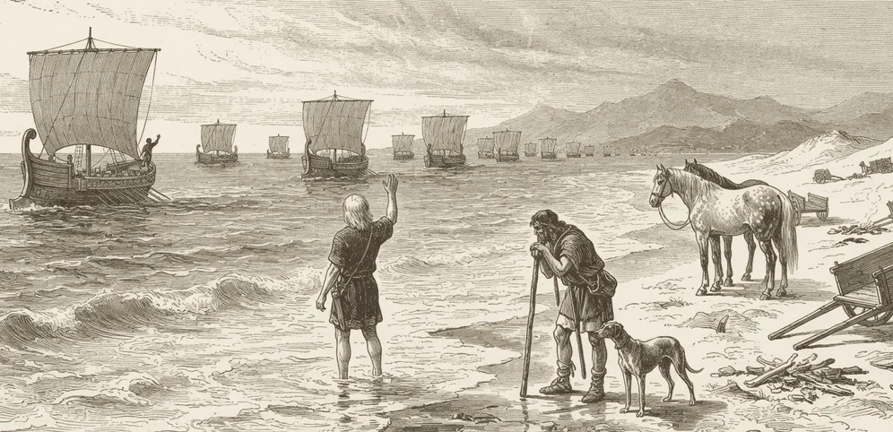
Teudo
La última noche la pasaron los dos hermanos en la playa, sentados en la arena, como cuando eran niños y se sentaban en la orilla del Rin a mirar el hielo.
No hablaron mucho. Nunca habían hablado mucho. Teudo había pasado la vida hablando poco y Ricila hablando por los dos, y aquella noche Ricila tampoco hablaba. Estaban sentados delante del mar, con una hoguera pequeña de maderas que había traído el agua, entre los miles de hogueras del campamento de los vándalos, que se extendía por la costa hasta donde se perdía la vista. Detrás, en el carro de Fredo, dormían Asta y el niño. Arsak estaba con Félix, embarcando los caballos, que era una cosa que se hacía de noche, con antorchas, porque de día se asustaban más.
El mar hacía su ruido. Teudo no se acostumbraba. Le parecía que respiraba.
—¿Te acuerdas de Lupo? —dijo Ricila al fin.
—Me acuerdo.
—Hacíamos carreras con el caballito por las piedras del camino. Él decía «equus». —Ricila se rio, bajito—. Fue la primera palabra de latín que aprendí. Antes que el cura Paulo. Antes que Materno. Me la enseñó un niño de cinco años que se murió de peste en un carro, en la Galia.
Teudo no dijo nada.
—Mañana me voy a una tierra donde todo el mundo dice «equus» —dijo Ricila—. Me ha costado veinte años llegar.
Se quedaron callados.
—Cuídala —dijo Teudo.
—La cuidará ella a mí. —Ricila se encogió de hombros—. Ya lo has visto. En las ruinas. Con la espada del abuelo.
—Entonces cuida al niño.
—Eso sí. —Ricila se quedó mirando el fuego—. Le enseñaré a leer. En latín y en suevo. Para que no se le olvide de dónde viene. Y Arsak me ha dicho que le busque a alguien que le enseñe a montar, porque yo no sé. —Casi sonrió—. Le ha hecho prometer a Félix que se encarga él.
Teudo se rio. Luego dejó de reírse.
—Dile a padre… —empezó Ricila, y se calló.
—¿Qué?
Ricila tardó mucho en contestar. Cogió un palo y lo metió en la hoguera. Lo sacó. Lo miró arder en la punta.
—Nada —dijo—. Él ya lo sabe. Dile que el niño se llama Guntario. Que es grande. Que tiene los ojos grises. Que se ríe como madre. —Se le quebró la voz—. Dile a madre que me he llevado la tablilla de las cuentas de la Peña. La primera. La que le hice a Fravita. Que no sé para qué. Que me la he llevado.
—Se lo diré.
—Y dile a Brunhild…
—A Brunhild se lo digo yo.
Ricila le miró. Y se echó a reír. Una risa de verdad, de las de antes del Rin, de cuando eran pequeños y se reían de cualquier cosa. Teudo se rio también. Se rieron los dos en la arena, delante del mar, hasta que les dolió la tripa, sin saber muy bien de qué, como dos tontos.
Luego se quedaron en silencio otra vez.
Cuando ya empezaba a clarear por levante, detrás de las montañas de la costa, Teudo se metió la mano en el cinturón y sacó una cosa. Una llave de hierro, larga como una mano, con los dientes gastados.
La miró un rato. Luego se la tendió a su hermano.
—No —dijo Ricila.
—Llévatela.
—Es la de la Peña. La de Fravita. Es tuya.
—Es de la Peña —dijo Teudo—. Y la Peña no es mía. No ha sido nunca de nadie. Fravita lo dijo en la torre la última tarde. —Le puso la llave en la mano—. Llévatela. Allí, al otro lado. Para que haya algo de la Peña en el otro lado. Y si algún día vuelve alguien, que la traiga.
Ricila se quedó mirando la llave en la palma de la mano. Luego cerró los dedos encima, despacio. Y le cogió a Teudo la manga de la túnica con dos dedos. Sin tirar.
Esta vez no la soltó en mucho rato.
Asta bajó del carro cuando salió el sol. Traía al niño dormido en brazos y el pelo suelto, sin trenzar, revuelto por el viento. Se sentó en la arena al otro lado de Teudo, sin decir nada, y se quedó mirando el mar con ellos.
Al cabo de un rato se metió la mano en el cinturón y sacó el cuchillo del mango de hueso. El del abuelo de Ricila. El que le había dado la madre en el arroyo, la víspera de la boda. Con el que había cortado la ramita de su olivo y la rama del Abuelo.
Se lo dio a Teudo.
—Dáselo a tu padre —dijo—. Es de vuestra casa. Lo hizo el mismo hombre que hizo el caballito.
—Te lo dio madre.
—Me lo prestó. —Asta sonrió apenas—. La espada me la quedo. Esa no la devuelvo. Pero el cuchillo sí.
Teudo lo cogió. Lo miró. Era pequeño en su mano, gastado, con el mango amarillo de tantos años.
—Asta —dijo—. Cuando os encontramos en el brezo, a ti y al alano, yo pensé en dejaros allí. Un momento solo. ¿Lo sabías? Fravita no quería forasteros en la Peña, con Gunderico al este. —Se quedó mirando el cuchillo—. Fue Ricila el que te cogió en brazos, antes de que yo decidiera nada.
—Ya lo sé —dijo Asta—. Pero luego decidiste. Y respondiste por mí delante de Fravita. Con tu cabeza. Eso también lo sé.
Teudo no contestó. Asta se inclinó y le dio un beso en la mejilla. En la de la cicatriz de la cabeza, encima de los cinco puntos que le había dado ella misma en las ruinas.
—Cuida a la madre —dijo—. Y cuídale a él. —Señaló con la barbilla hacia la orilla, donde Arsak venía andando por la arena, despacio, con la perra detrás—. Que no sabe cuidarse. No ha sabido nunca.
Asta
Asta subió al barco con el niño atado al pecho, la bolsa de tela al cuello y la espada de la casa a la espalda, y no lloró hasta que no vio a Arsak en la playa.
El barco era un mercante romano de los grandes, panzudo, viejo, con el casco negro de brea y una vela cuadrada de lino remendado, que había llevado aceite de la Bética a Roma durante cincuenta años y que ahora llevaba vándalos a África. Lo mandaba un capitán de Gades que hablaba latín y no hablaba con nadie más que con sus marineros. Cabían cien personas, con sus cosas, y cuarenta caballos en la bodega. Subieron por una pasarela de tablas desde una barca, porque el barco no podía acercarse a la orilla. Fredo subió delante con su mujer alana y los dos hijos de ella, y le dio la mano a Asta para ayudarla a pasar la borda.
Ricila subió detrás. Llevaba el arcón de los libros de Materno, que habían traído desde el Duero en un carro y luego en otro, y que había costado más trabajo subir al barco que todos los caballos. Ricila no había querido dejarlo. Ni un libro. Ni uno.
—En Cartago hay más —le dijo Félix en la playa.
—Estos son míos —dijo Ricila.
En la cubierta había gente por todas partes. Mujeres con niños. Viejos sentados en sus fardos. Guerreros con las lanzas. Un cura vándalo rezando en voz alta, en su lengua, con una cruz de madera levantada. Gallinas en jaulas. Cabras. Una vaca, atada al mástil, que mugía. Todos hablaban vándalo. La lengua de su padre. La de su madre. La de las canciones junto al fuego. Asta la oía alrededor, por todas partes, como se oye la lluvia, y le parecía que se estaba quedando sorda de oírla.
Antes de zarpar, mientras los marineros cargaban los últimos fardos, Asta vio en la barca de al lado, la que volvía vacía a la playa, a un hombre sentado en el fondo, solo, con un brazo vendado contra el pecho y la barba castaña sucia de sal.
Agiulfo.
Los vándalos le habían soltado aquella mañana. Félix lo había decidido: no había sitio en los barcos para prisioneros, y matarle en la playa, delante de las mujeres y los niños, el día que se iban, le parecía a Félix de mal agüero. Le habían quitado la espada, el cinturón, las botas y la capa, y le habían dado un pan. Que se volviera andando al norte. Con un brazo que no iba a volver a coger una espada.
Agiulfo levantó la vista. La vio en la borda. Se quedaron mirándose un momento, a diez pasos, por encima del agua verde.
Él bajó la vista primero.
Asta no sintió odio. Lo buscó por dentro, el odio caliente que le había subido del estómago la tarde en que se llevaron a Brunhild, y no lo encontró. Encontró otra cosa, más fría, más pequeña, que se parecía a la pena que dan los perros flacos que se acercan a los campamentos a comer basura.
La barca se alejó hacia la playa. Asta no la miró más.
Se fue a la popa, donde no había tanta gente. Desde allí se veía la playa.
Arsak estaba en la orilla, con el agua por los tobillos, junto a Teudo. Con la perra Loba al lado. Con Estrella y Viento de la brida, los dos caballos que se quedaban en Hispania, porque Viento no se dejaba subir a un barco y Estrella no quería separarse de Viento.
Teudo se apoyaba en un bastón, por la pierna. Arsak no se apoyaba en nada. Estaba muy derecho, con el pelo claro casi blanco revuelto por el viento de levante, mirando el barco.
Asta le miró. Y entonces sí lloró.
Lloró como no había llorado nunca. Ni en el hoyo del establo, ni en la llanura de Emerita, ni con la fiebre, ni en el parto, ni en la hondonada de la sierra con Niebla. Lloró de pie, en la popa del barco, agarrada a la borda, con el niño contra el pecho, sin hacer ruido, sin taparse la cara, sacudiéndose entera, como había llorado Brunhild delante del olivo. Ricila se puso detrás de ella y la abrazó por la espalda, con el niño en medio, y no le dijo nada.
El niño Guntario le tocó la cara mojada con la mano.
—¿Por qué lloras?
—Porque me voy.
—¿Y el tío Arsak?
—Se queda.
El niño se quedó pensando.
—Los alanos no se vuelven —dijo, muy serio, como lo decía Arsak, con la misma voz—. Me lo dijo él.
Asta se rio, con las lágrimas, una risa rota.
—No —dijo—. No se vuelven.
Pensó en todo lo que llevaba. En la bolsa de tela, al cuello, debajo de la túnica: la tablilla de Félix, la de su nombre, la trenza de crin de Niebla, la punta de flecha de Tecla. La rama del Abuelo, envuelta en el paño húmedo con la tierra de la tumba de sus padres, que mojaba cada mañana con agua dulce de la cantimplora para que no se secara. En el hombro, la fíbula de su padre. En el cuello, la escama de hierro. A la espalda, la espada de la casa. En el pecho, el niño.
Pensó en todo lo que dejaba. En el olivo del rincón del huerto, en el valle del Duero, con sus diez palmos y sus tres cosas colgadas de la rama, que alguien regaría ese verano, o no. En la madre, con el pañuelo de las fiestas. En el padre, en su banco. En Brunhild. En el niño Wilja, que ya sabía escribir el nombre de su padre. En el pajar donde dormía Arsak. En la casa redonda del fondo de la Peña, la de la muralla del oeste.
Pensó en su padre, Guntario, que había cruzado el Rin, la Galia y los Pirineos para llegar a una granja con una higuera y un pozo. Que no había llegado a ningún otro sitio. Que estaba debajo de un olivo.
Pensó que ella iba a llegar más lejos. Al otro lado del mar. Con su hijo. Y con una rama del olivo de su padre en una bolsa.
Los marineros levaron el ancla. La vela cuadrada se hinchó con el viento de levante, de golpe, con un ruido como de sábana tendida. El barco se movió. Despacio primero. Luego más deprisa. La playa empezó a hacerse pequeña.
Arsak
Arsak se quedó en la playa hasta que el barco fue solo una vela.
No se movió. Teudo se sentó en la arena a su lado, por la pierna, y no le dijo nada. La perra Loba se tumbó a sus pies. Los caballos pastaban en la hierba dura de las dunas, detrás. A su alrededor, por toda la playa, salían barcos y barcos, cientos, con sus velas cuadradas, de todos los colores, hinchadas por el levante, hacia el otro lado. Hacia las montañas pardas de África.
La noche anterior, Arsak había ayudado a Félix a embarcar los caballos.
Era lo más difícil de todo. Los hombres subían a los barcos andando, las mujeres con los niños en brazos, los viejos en parihuelas, el ganado empujado a palos. Los caballos no. Un caballo no sube por una tabla que se mueve encima del agua hacia un agujero oscuro que huele a brea y a miedo. Se para. Se echa atrás. Se encabrita. Y si uno se encabrita en la tabla, los demás se encabritan detrás, y alguien acaba en el agua con un caballo encima.
Lo hacían de noche, con antorchas, en la orilla, porque de noche los caballos ven menos y se asustan menos. Las barcas de fondo plano los llevaban desde la orilla hasta los barcos grandes, de cuatro en cuatro, y allí los subían a la bodega con cinchas, colgados de una viga, por el aire, pataleando. Había caballos que se rompían una pata. Había caballos que se morían de miedo, de verdad, del corazón, en la cincha. Los jinetes alanos de Félix lloraban cuando pasaba. No se escondían para llorar.
Arsak estuvo toda la noche en el agua, hasta la cintura, junto a la tabla de las barcas. Cogía cada caballo de la brida, uno por uno, antes de que subiera. Le ponía la mano en el cuello. Le hablaba en alano, bajito, la misma cantinela de siempre, la de la doma de Viento, la que había aprendido de su padre. Le soplaba en los ollares. Y luego tiraba, despacio, y el caballo subía detrás de él por la tabla, temblando, como sube un niño detrás de su madre por una escalera oscura.
Subieron cuarenta así. Los de Félix. Ni uno se cayó.
Félix le miraba desde la barca, con una antorcha en la mano, sin decir nada. Cuando subió el último, el suyo, un caballo bayo con una mancha blanca en la frente, se bajó de la barca al agua, se acercó a Arsak y se quedó a su lado, mojado hasta el pecho.
—Ven —le dijo otra vez. La última.
Arsak no contestó. Fue a la orilla. Cogió a Viento de la brida. Lo llevó hasta la tabla de la barca.
Viento se paró en el borde. Miró la tabla. Miró el agua negra con las antorchas reflejadas. Miró el barco grande, allá lejos, con su vela recogida. Resopló.
Arsak le puso la mano en el cuello. Le habló. Le sopló en los ollares. Tiró de la brida, despacio.
Viento no se movió.
Arsak lo intentó otra vez. Y otra. El semental tordo, el que se había dejado domar en una semana, el que había saltado la muralla de la Peña para volver al establo de la casa de labor, el que había cruzado las sierras con nieve hasta el pecho, plantó las cuatro patas en la arena de la orilla y no dio un paso. No se encabritó. No tiró. Se quedó quieto, mirando a Arsak con sus ojos oscuros, como se queda quieto alguien que ha decidido una cosa y no la va a cambiar.
Arsak se quedó mirándole también. Mucho rato. Con la mano en su cuello.
Luego le quitó la brida del morro. Se la colgó al hombro. Y le dio una palmada en el anca.
Viento se dio la vuelta y volvió solo, al paso, por la arena, hasta las dunas, donde estaba Estrella atada. Se puso a su lado. Bajó la cabeza y se puso a comer la hierba dura de las dunas, como si no hubiera pasado nada.
Félix lo había visto todo desde el agua.
—Ese no quiere irse —dijo.
—No —dijo Arsak.
—¿Y tú?
Arsak se volvió a mirarle. Y Félix, a la luz de la antorcha, le vio la cara, y no tuvo que preguntar más.
Se abrazaron en el agua. Mojados, torpes, fuerte, como se abrazaban en la villa del Anas cuando Félix tenía trece años y se caía del caballo y Arsak le levantaba del suelo y le sacudía el polvo y le volvía a subir.
Félix se había ido en otro, uno de los primeros, con sus jinetes y sus caballos y el arco de Candac a la espalda. Al amanecer, antes de subir a su barca, había vuelto a la orilla un momento. No habían dicho mucho. Le había dicho que se encargaría de enseñar a montar al niño Guntario. Que le enseñaría a tirar de espaldas. Que el niño iba a ser el mejor jinete de África.
—Mejor que tú no —le había dicho Arsak.
—Mejor que tú —había dicho Félix—. Que es más difícil.
Luego había subido a la barca y se había ido remando hacia su barco, de pie, muy derecho, como montaba. Y a mitad de camino se había vuelto.
Había levantado la mano.
Arsak había levantado la suya.
Ahora miraba la vela de Asta. Era una vela de lino, remendada, más clara que las otras, con un remiendo grande en forma de cuadrado en una esquina. La había buscado entre todas desde que salió. No la había perdido de vista. Iba hacia el sur, hacia el sol, haciéndose cada vez más pequeña, como se hacen pequeñas las cosas que se van.
Pensó en la orilla del Rin, una noche de nieve, veintitrés años antes. En un vándalo cojo en el suelo, con el escudo partido, que miraba hacia un carro. En la fíbula. En una niña de dos años envuelta en pieles, que le miró sin llorar.
Pensó en un trigal de la Bética. En un hoyo en el suelo de un establo. En cuatro días con fiebre. En un brezo sobre el Duero.
Pensó que había cumplido. Que el vándalo cojo le había dicho «mi casa es tu casa, mientras viva mi sangre», y que su sangre iba ahora en aquel barco, viva, con un niño de ojos grises en el pecho y una rama de olivo en una bolsa. Que no había nada más que hacer. Que ya estaba.
Y en la lengua de los alanos, «ya está» es la misma palabra que «se acabó». Y que «empieza».
La vela llegó a la mitad del Estrecho. Arsak entornó los ojos contra el sol. Le pareció ver, en la popa, una figura pequeña, de pie, junto a la borda. Una sola. Con algo en el pecho.
La figura levantó la mano.
Arsak no sabía si de verdad la veía o si se la estaba imaginando. Daba igual. Levantó la suya. Y la dejó levantada, contra el viento, un buen rato, hasta que le dolió el brazo, hasta que la vela se confundió con las otras y con el brillo del mar y con las montañas de África, y ya no hubo nada que mirar.
Bajó el brazo.
Teudo se levantó de la arena, despacio, apoyándose en el bastón.
—¿Nos vamos? —dijo.
Arsak se volvió. Miró a Teudo. Miró a los caballos en las dunas. Miró hacia el norte, hacia las sierras azules de la Bética, y más allá, aunque no se veían, el Anas, el Tajo, las sierras de la nieve, el Duero. Un valle con un castaño grande en el patio de una casa de labor. Un viejo sentado en un banco junto al fuego. Una mujer con el pañuelo de las fiestas. Una viuda con el pelo corto. Un niño que sabía escribir el nombre de su padre. Un olivo pequeño con tres cosas colgadas de una rama.
Un mes de camino. Por Lusitania, que estaba llena de suevos huidos, y de bandidos, y de godos. Con un cojo.
—Nos vamos —dijo.
Fue a buscar a los caballos. Le puso la silla a Estrella, que era más mansa, para Teudo, y le ayudó a subir, con la pierna mala por encima de la grupa, despacio, como se sube a un herido. Montó él en Viento. Silbó a la perra.
Salieron de la playa por las dunas, al paso, hacia el norte. Entre los carros vacíos que se quedaban en la orilla, porque no cabían en los barcos. Entre los fuegos apagados del campamento. Entre el ganado que nadie se había podido llevar y que se quedaba allí, mugiendo, sin dueño.
En lo alto de la última duna, Teudo se volvió a mirar el mar.
Arsak no.
No porque los alanos no se vuelvan. Sino porque ya no le hacía falta. Lo que había al otro lado del mar lo llevaba dentro, como se lleva la tierra del Tanais en una bolsita de cuero colgada del cuello. Y lo que tenía delante, al norte, a un mes de camino, le estaba esperando con la puerta abierta.
Por primera vez en su vida, Arsak sabía exactamente adónde iba.
Iba a casa.